生成时间：2026-07-17T11:32:56+08:00
今日保留论文数：13
内容构成：今日新文 13 篇；补充推荐 0 篇；经典旧文精读 0 篇
高能天体物理重点
1. Swift gives a new BAT-GLIMPSE: Gamma-ray Localization using Imaging and Mosaic techniques for Pointing and Slew Epochs
- 来源：arXiv / astro-ph.HE
- 链接：https://arxiv.org/abs/2607.15130v1
- 作者：S. Ronchini, T. Parsotan, J. DeLaunay, J. A. Kennea
- 评分：novelty 8/10，importance 8/10，relevance 10/10，final 9.70/10
- 推荐理由：Highly relevant gamma-ray transient instrumentation/methods paper: an autonomous Swift-BAT localization pipeline for GRBs and GW counterparts, including slew-epoch recovery and low-latency multi-messenger applications.
中文题目：Swift 的新 BAT-GLIMPSE：用成像与拼接技术在定点和转动期间定位伽马射线暂现源
做了什么：这篇文章介绍并验证了 BAT-GLIMPSE，一个面向 Swift-BAT 数据的全自动、低延迟、开源伽马射线暂现源定位流程。它的核心目标是补上 Swift 在航天器转动期间无法开启机载触发的空档：流程会根据姿态是否稳定，自动选择编码孔径成像或时间分段拼接成像，在定点观测和 slew 期间都搜索瞬变源。作者用 GUANO 通报中的 66 个 GRB 做验证，成功为 43 个事件恢复角分级位置，典型偏差小于约 \(5\) 角分；对发生在 slew 期间的 GRB，约 \(88\%\) 可由成像或拼接分析恢复。文章还强调，在 LIGO-Virgo-KAGRA 第四轮观测中，BAT-GLIMPSE 对引力波候选体的快速电磁对应体搜索尤其有价值，并且与 NITRATES 互补后，预计可把 Swift-BAT 的机载角分级定位产出率提高约一倍。
为什么重要：Swift-BAT 的硬 X 射线/软伽马视场大、定位精度高，是 GRB 和多信使暂现源后随观测链条中的关键仪器；但 spacecraft slew 期间机载触发关闭，恰好会错过一批最需要低延迟定位的事件。BAT-GLIMPSE 把这些原本需要人工离线处理或直接失去角分定位机会的数据变成可自动利用的触发与定位资源，特别适合引力波预警、短 GRB、弱瞬变和快速多波段跟踪。
理论 / 观测 / 仪器方法价值：方法价值在于把 Swift-BAT 编码孔径成像、姿态变化处理、mosaic 拼接和 GUANO/NITRATES 等低延迟生态连接成一个可运行流程，而不是只报告个别事件。对观测而言，它提高了 BAT 数据在非标准时段的可用性；对仪器与软件而言，它提供了可复现、开源的分析框架；对多信使天文学而言，它扩大了在秒到分钟尺度内给出角分级定位的机会。
为什么应该关注：如果你关心 GRB、引力波电磁对应体、快速暂现源巡天或高能仪器数据处理，这篇文章值得看，因为它不是提出一个抽象算法，而是在真实 GRB 样本上量化了 Swift-BAT 在 slew 空档中还能抢救出多少事件、定位能准到什么程度、与已有 NITRATES 管线如何分工。它直接影响后续 follow-up 资源如何分配，也影响 Swift 在未来多信使预警中的实际科学产出。
展开详细解读：文章讲解、背景、理论、重点章节、图表与相关工作
文章详细讲解
科学问题：Swift-BAT 是编码孔径硬 X 射线望远镜，正常定点观测时可以通过机载触发迅速发现并定位 GRB，典型定位精度达到角分量级。但 Swift 在执行目标转向时，机载触发会被关闭；这不是因为 BAT 没有记录数据，而是因为姿态快速变化会使标准机载成像和背景判别不再适用。问题在于：这些 slew 期间的 BAT 数据能否被低延迟、全自动、可靠地重新转化为瞬变源定位？这个问题在多信使时代尤其尖锐，因为引力波预警或预合并告警会主动要求 Swift 快速转向，而转向本身又可能制造一个 BAT 触发盲区。
作者怎么做：文章提出 BAT-GLIMPSE，一套基于 BatAnalysis 的自动管线。它对输入的 Swift-BAT 事件数据和姿态信息进行判断：如果姿态足够稳定，就执行常规定点编码孔径成像；如果姿态明显变化，就按时间或姿态区间切分数据，分别生成天空图像，再用 mosaic 技术组合显著性或强度信息。这样，源在探测器平面上的影子随姿态移动的问题不再被简单视为坏数据，而是被分解成多个近似稳定的小片段来处理。管线目标不是取代所有 BAT 瞬变搜索算法，而是专门给出低延迟、角分级的天空位置，并与 NITRATES 等基于率触发和似然搜索的工具形成互补。
关键结果：验证样本来自 GUANO circulars 中报告的 66 个 GRB。BAT-GLIMPSE 成功恢复 43 个事件的角分级定位，并且这些位置与已发表或通报定位一致，典型偏差为 \(\lesssim 5\) 角分。更关键的是 slew 子样本：约 \(88\%\) 的 slew 期间 GRB 可通过直接成像或 mosaic 分析恢复。这说明 BAT 的 slew 空档并非只能等待外部仪器触发，而是可以在后处理中成为一个有效的发现与定位窗口。文章还给出一个面向运行层面的结论：若 BAT-GLIMPSE 与 NITRATES 协同，Swift-BAT 的机载角分级定位率预计可近似翻倍。
局限和下一步：这项工作主要是管线和验证论文，核心指标来自已知 GRB 样本的恢复率和定位偏差，而不是完整盲搜的假警率曲线。对于非常弱、持续时间极短、位于部分编码边缘、或在复杂背景期间发生的瞬变，成像显著性、背景建模和姿态插值误差仍可能限制定位。下一步应包括更系统的注入-恢复实验、对不同 \(T_{90}\)、光谱硬度、部分编码分数和 slew 角速度的效率建模，以及把 BAT-GLIMPSE 的输出纳入实时 GCN/VOEvent 或多信使 follow-up 排序系统。
关键结果是怎么做出来的
样本选择是本文证据链的第一步。作者没有只展示几个成功案例，而是采用 GUANO circulars 中报告的 66 个 GRB 作为验证集。GUANO 的重要性在于它能够根据外部触发或延迟请求抓取 Swift-BAT 的事件数据，因此覆盖了不少机载触发没有自动报告的位置或时段。这个样本适合检验 BAT-GLIMPSE 是否能在真实任务运行条件下，从原始或近原始 BAT 数据中恢复已知 GRB 的角分级位置。
事件分类和分析路径是第二步。BAT-GLIMPSE 会依据 Swift 姿态信息判断数据段属于定点观测还是 slew。定点时段可使用较标准的编码孔径成像：把探测器计数按已知掩膜投影反演成天空显著性图。slew 时段则不能把整段曝光当作一个固定指向观测，否则同一天空源在探测器上的影子会被姿态运动抹开；管线因此对数据做分段成像，再把不同姿态下的天空图通过 mosaic 组合，寻找在天球坐标中一致叠加的显著性峰。
主要数值结果是：66 个 GUANO GRB 中有 43 个被成功恢复出角分级位置，恢复位置与公开定位一致，典型角距离偏差为 \(\lesssim 5\) 角分。对 slew 期间发生的 GRB，约 \(88\%\) 能由成像或 mosaic 方法恢复。这个 \(88\%\) 是本文最有操作意义的数字，因为它直接量化了原来被机载触发关闭造成的定位损失中有多大比例可以被软件管线补回。读者应关注论文中成功/失败事件列表、偏差分布和按观测状态分类的恢复率，而不是只看总成功数。
显著性与置信度的计算本质上来自编码孔径图像中的信噪比或显著性峰。对单个图像，源候选通常表现为天空图上的局部最大值，显著性可近似看作重构强度相对于局部背景涨落的标准差；对 mosaic，多个分段图像的强度和方差按权重组合。稳健的结论需要检查候选峰是否出现在已知 GRB 时间窗内、是否随能段或时间窗选择保持一致、是否避开系统噪声强的视场边缘，以及是否与外部 GRB 定位在误差范围内重合。
支撑结论的图表应包括样本恢复统计、定位偏差分布、典型定点事件和 slew 事件的天空显著性图、mosaic 前后显著性改善，以及 BAT-GLIMPSE 与 NITRATES 或机载触发产出之间的互补关系。系统误差主要来自姿态解精度、slew 中时间分箱选择、背景非平稳性、部分编码响应、探测器坏像素/热像素处理，以及强源或地球边缘等环境背景。稳健性检验应表现为不同时间窗、能带、分段方式下候选位置和显著性的稳定性。
展开背景、理论、公式、模型、章节和图表导读
背景知识
Swift 卫星的核心优势是快速响应：BAT 在硬 X 射线/软伽马能段发现 GRB，随后 XRT 和 UVOT 在秒到分钟尺度内进行精细后随观测。BAT 本身是编码孔径仪器，视场大、定位快，但角分级定位依赖准确的姿态和掩膜投影关系。对多数 GRB 研究者来说，Swift 的价值不仅是探测到爆发，而是能迅速给出足够小的误差区域，使地面望远镜和其他空间仪器能立刻接力。
历史上，Swift-BAT 的机载触发和地面分析已经建立了大量 GRB 样本，但机载系统必须在有限计算资源和稳定观测几何下运行。slew 期间，航天器姿态快速变化，编码孔径影子不断移动，机载触发通常关闭，以避免大量误触发和错误定位。这导致一个实际但常被忽略的选择效应：发生在 Swift 转向期间的伽马射线瞬变可能被记录，却没有被标准机载系统自动定位。
近年来这个问题值得重新看，原因有三。第一，GUANO 等机制能在外部触发后抓取 BAT 事件数据，使过去难以及时访问的数据进入低延迟分析链。第二，NITRATES 等地面管线已经证明，复杂的离线或准实时统计搜索可以从 BAT 数据中提取更多瞬变信息。第三，多信使天文学改变了响应逻辑：引力波预警，尤其是预合并预警，可能使 Swift 主动快速转向，而电磁对应体恰可能在这个转向过程中出现。
该领域一个常见误区是把“机载触发关闭”等同于“仪器没有科学数据”。实际上 BAT 仍可记录有用计数，关键在于是否能正确处理动态姿态和背景。另一个误区是认为只要有率增高就足以定位；对编码孔径仪器来说，率触发和成像定位是不同层次的信息。第三个误区是把所有 slew 数据都视为不可成像，事实上只要把时间段切得足够短，每段可以近似固定姿态，再在天空坐标中拼接。
基础理论 / 方法脉络
编码孔径成像的基本物理图像是：天空中某个方向的光子穿过掩膜开孔后，在探测器平面上形成一个方向相关的阴影图案。若已知掩膜图案、探测器响应和航天器姿态，就可以从探测器计数反推出天空方向。与聚焦望远镜不同，BAT 不直接形成光学意义上的焦平面图像，而是通过相关或反卷积在许多候选天区上计算哪一个方向最能解释探测器计数分布。
在定点观测中，某一时间窗内的姿态近似不变，源方向对应的掩膜投影也近似不变。此时可把探测器计数写成背景加上一个或多个源模板的线性组合，通过加权相关得到天空强度图和显著性图。GRB 这类短时瞬变的关键不是累计很久，而是在合适的时间窗和能段内让源计数相对于背景涨落最大。
\(\nslew\) 期间的困难在于姿态矩阵随时间变化，同一源的探测器模板 \(R_i(\hat{n},t)\) 不再常数。如果把整个 slew 期间简单相加，源影子会在探测器坐标中被拖 smeared，重构峰降低甚至消失。BAT-GLIMPSE 的基本假设是把 slew 切成多个短段，使每段内姿态变化足够小，然后分别成像到统一天球坐标，再用 mosaic 合并。这相当于把动态响应问题转化成多个准静态响应问题。
本文涉及的关键量包括候选时间窗、能段、部分编码分数、天空图显著性、定位偏差和恢复率。部分编码分数描述源方向有多少探测器面积被有效掩膜调制，通常越靠近视场边缘越低，定位和显著性越差。定位偏差要与外部定位或已发表 BAT/XRT/其他仪器位置比较；恢复率则取决于样本选择、阈值定义和失败事件的归因。
常见退化和系统误差包括源强度与背景归一化的退化、时间窗选择与信噪比的退化、部分编码分数与通量估计的退化，以及姿态误差与定位偏差的耦合。对 slew mosaic 来说，时间分段过短会损失单段统计量，过长会造成姿态 smear；因此分段策略本身就是灵敏度与系统误差之间的折中。
公式与推导
第一步从探测器计数模型开始。对探测器像元 \(i\) 和时间窗 \(\Delta t\)，观测计数可写为
其中 \(D_i\) 是观测计数，\(B_i\) 是背景，\(A\) 是源强度归一化，\(R_i(\hat{n})\) 是来自天空方向 \(\hat{n}\) 的编码孔径响应模板，\(\epsilon_i\) 是统计涨落。定点观测时 \(R_i(\hat{n})\) 在时间窗内近似固定，这是标准 BAT 成像的前提。
第二步，若计数足够高，可用近似高斯权重估计某一方向的源强度。令权重 \(w_i \simeq 1/\sigma_i^2\)，其中 \(\sigma_i^2\) 近似为背景或总计数方差，则最小二乘估计为
这个量在所有候选 \(\hat{n}\) 上扫描，就得到重构天空强度图。
第三步，与强度估计对应的方差为
从而图像显著性可定义为
BAT-GLIMPSE 寻找的角分级定位本质上就是 \(S(\hat{n})\) 图上的可信局部峰，并要求它与时间窗、能段和外部信息一致。
第四步，slew 期间响应显式依赖姿态。若姿态由旋转矩阵 \(Q(t)\) 描述，天空方向 \(\hat{n}\) 在仪器坐标中的方向为
因此响应应写成
如果 \(Q(t)\) 在时间窗内变化过大，直接使用单一 \(R_i(\hat{n})\) 会降低重构峰并引入定位偏差。
第五步，把 slew 切分为 \(k=1,2,\ldots,N\) 个近似定点小段，每段得到强度估计 \(\hat{A}_k(\hat{n})\) 和方差 \(\sigma_{A,k}^2(\hat{n})\)。mosaic 的反方差加权组合为
这个公式表达了一个直观事实：噪声小、部分编码好、背景稳定的分段对最终天空图贡献更大。
第六步，mosaic 方差为
对应显著性为
若源真实存在于固定天球方向，各分段在该 \(\hat{n}\) 上会相干叠加；随机背景峰则通常不会在所有分段同一方向增强。
第七步，定位偏差可用 BAT-GLIMPSE 位置 \(\hat{n}_{\rm GL}\) 与参考位置 \(\hat{n}_{\rm ref}\) 的球面角距离表示：
论文报告的典型 \(\Delta \theta \lesssim 5\) 角分说明重构峰不仅显著，而且落在可用于 XRT 或地面望远镜 follow-up 的角分级区域内。
第八步，样本恢复率可写作
其中 \(N_{\rm rec}=43\) 是成功恢复角分级位置的事件数，\(N_{\rm tot}=66\) 是验证样本总数。对 slew 子样本，论文给出 \(f_{\}}\)
m rec,slew}\(\simeq\) 0.88)，它衡量 BAT-GLIMPSE 对原机载触发盲区的补偿能力。
第九步，若要估计局部显著性与似然改进的关系，可用近似统计量
其中 \(\mathcal{L}\) 是给定源模型和背景模型下的计数似然。这个近似在高计数、单一额外参数和背景已知较好时成立；它帮助读者把图像显著性、候选筛选阈值和假警控制联系起来。
模型拟合 / 应用方法
BAT-GLIMPSE 的“拟合”不一定表现为传统谱拟合，而主要是图像域和计数域中的源模板拟合。对每个候选天空方向，模型包括背景项、编码孔径响应模板和源强度归一化。待估参数至少包括源位置 \(\hat{n}\) 和强度 \(A\)，实际处理中还会隐含时间窗、能段、部分编码区域、背景估计方式以及坏探测器掩膜等选择。
似然或统计量可从泊松计数出发，也可在计数较高时使用高斯近似的加权最小二乘或相关成像。定点模式下，模型残差应在探测器平面和天空重构图中没有与掩膜结构相关的系统图案；slew mosaic 模式下，还需要检查每个分段是否给出相容的天空方向，以及合并后峰值是否被少数异常分段主导。
参数退化主要来自源强度与背景的耦合。弱 GRB 的时间窗如果取得过长，背景计数增加会稀释显著性；取太短则可能丢掉真实光子。源处于部分编码低的视场边缘时，强度估计会和有效面积校正、掩膜投影误差更强耦合。slew 期间还存在分段长度与姿态 smear 的退化：长分段提高计数但降低响应准确性，短分段改善姿态近似但增加单段噪声。
系统误差应从几个层面看。姿态解误差会直接投影为天空定位偏差；背景非平稳性会制造假峰或降低源峰；明亮已知源、地球遮挡、南大西洋异常区附近环境、探测器状态变化都可能影响图像质量。一个可靠的管线验证必须说明失败事件是否集中在低部分编码、短时标、低信噪比或复杂姿态变化条件下。
实际应用中，BAT-GLIMPSE 的输出可作为后随观测的候选位置，而不是最终物理模型。对 GRB，它应与 Fermi-GBM、INTEGRAL、Konus-Wind、MAXI、SVOM 或地面光学触发进行交叉验证；对引力波预警，它可以把原本数十到数百平方度的概率区域压缩到角分尺度候选，极大改变望远镜指向策略。但如果只有边缘显著性峰，仍需谨慎对待试验因子和多时间窗搜索带来的假警膨胀。
重点章节 / 结果段落怎么读
数据与样本部分应首先阅读。重点看作者如何从 GUANO circulars 建立 66 个 GRB 验证样本，哪些事件属于定点观测，哪些发生在 slew 期间，是否存在外部定位可用于比较。读者应特别注意样本是否只包括已经由其他仪器确认的事件，因为这会影响恢复率与盲搜效率的解释。
管线方法部分是文章核心。这里应看 BAT-GLIMPSE 如何调用 BatAnalysis、如何判断姿态状态、如何选择成像或 mosaic 分析、如何设置时间窗和能段，以及自动化流程中哪些步骤无需人工干预。对仪器分析读者来说，这一节决定了该管线是否可复现、可移植、可在低延迟环境中长期运行。
成像与 mosaic 结果部分应与表格一起读。关键不是单个漂亮案例，而是 66 个事件中 43 个成功恢复、位置偏差 \(\lesssim 5\) 角分、slew 事件恢复率约 \(88\%\) 这些统计结果如何得出。读者应检查失败事件的属性，判断失败是由数据质量、视场几何、源本身太弱，还是算法阈值导致。
与 NITRATES 和多信使运行的讨论部分值得重点看。BAT-GLIMPSE 的定位能力和 NITRATES 的瞬变搜索能力是互补的：一个强调图像和 mosaic 定位，一个强调更广义的计数域搜索和统计判别。文章关于两者合用可使机载角分级定位率近似翻倍的估计，应被理解为运行策略层面的预测，而非单一算法的纯检测效率。
稳健性、附录或实现细节部分如果有，应关注依赖参数：时间分段、背景估计、阈值、姿态质量筛选、坏探测器处理、已知源处理和输出格式。这些细节决定了 BAT-GLIMPSE 在未来真实低延迟警报中是否会稳定工作，而不仅是在回放样本上表现良好。
建议重点查看的图表
-
样本统计表或事件列表：看 66 个 GUANO GRB 中每个事件的观测状态、是否 slew、是否恢复、定位偏差和显著性。最关键的是失败事件是否有共同特征。
-
定点观测案例的 BAT 天空显著性图：看峰值是否孤立、是否在参考位置附近、局部背景是否平滑，以及旁瓣或编码噪声是否可能误导定位。
-
slew 事件的 mosaic 案例图：看单段图像与合并图像相比，显著性是否合理增强；如果只有合并图有峰，要确认不是少数异常分段造成。
-
定位偏差分布图：看横轴是否为 BAT-GLIMPSE 与参考位置的角距离，纵轴为事件数或累积分布；关注 \(\lesssim 5\) 角分是否代表多数事件，而非少数亮源。
-
恢复率按观测状态或部分编码分数的分解图：看定点与 slew 的差异，低部分编码区域是否显著拖低效率。
-
BAT-GLIMPSE 与 NITRATES 或机载触发的互补统计图：看交集和并集如何定义，所谓定位率翻倍是否依赖样本选择或阈值。
-
时间窗/能段/分段策略的稳健性诊断：看不同选择下源位置是否稳定，显著性变化是否符合预期。
-
运行延迟或自动化流程图：看从数据获取到输出定位需要多少步骤，哪些步骤可能成为低延迟瓶颈。
关键图表逐图导读
图 1：建议把流程图作为第一张重点图来读。横向通常应表示数据从 Swift-BAT 事件文件、姿态文件、GUANO 抓取或触发信息进入管线，再经过姿态判别、定点成像或 slew mosaic，最后输出天空位置和显著性。读图时不要只看模块名称，要看分支条件：什么情况下走 imaging，什么情况下走 mosaic，失败或低显著性事件如何被标记。
图 2：典型定点 GRB 的天空显著性图。坐标轴应是天球坐标或以候选源为中心的相对角坐标，颜色表示显著性 \(S\) 或重构强度。数据中的亮峰应与参考定位误差圈重合；模型或标记线可能给出已知 GRB 位置、BAT-GLIMPSE 峰值和误差半径。读图陷阱是把所有高颜色区域都当成源，实际上编码孔径旁瓣和局部噪声峰必须结合参考位置与显著性阈值判断。
图 3：典型 slew GRB 的单段成像与 mosaic 对比。横纵轴仍是天球坐标，多个面板可能对应不同时间段或最终合并图。关键趋势是：单段图中源可能较弱或不稳定，但在正确天球方向上合并后显著性增强。读图时要确认合并不是把探测器坐标中的噪声固定叠加，而是在天球坐标中按照姿态校正后相干增强。
图 4：定位偏差分布或累积分布。横轴为 \(\Delta \theta\)，单位通常是角分；纵轴为事件数、概率密度或累计比例。主要结论应是多数成功事件落在几角分内，典型偏差 \(\lesssim 5\) 角分。读图陷阱是忽略参考定位本身的误差；如果参考来自不同仪器，比较时应考虑参考误差圈和 BAT 系统定位误差。
图 5：恢复率或成功/失败事件的分类图。横轴可能是事件编号、观测模式、部分编码分数、峰值显著性或时间持续长度；纵轴可能是恢复标记、偏差或显著性。关键是看 slew 子样本中约 \(88\%\) 的恢复率如何分布，失败是否集中于低信噪比、低部分编码或快速姿态变化段。
图 6：BAT-GLIMPSE 与 NITRATES/机载触发互补性的示意或统计图。若是维恩图或柱状图，应看各管线独立发现、共同发现和只由 BAT-GLIMPSE 补回的事件数。所谓“约翻倍”应从并集相对机载角分定位数的增量理解，而不是每个事件显著性都提高一倍。
论文原图 / 可嵌入图片
Fig06
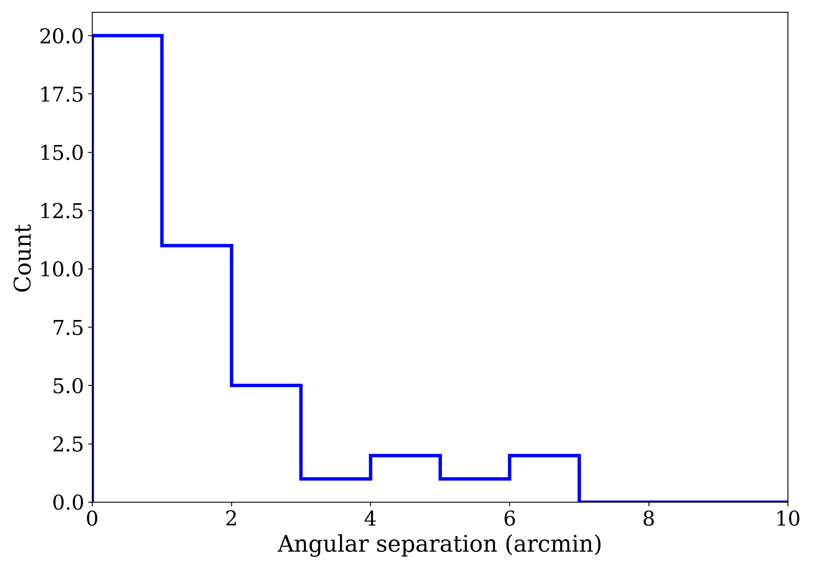
图注：Distribution of the angular separation between the GRB position found by \(\texttt{BAT-GLIMPSE}\) and the one reported in the GUANO GCNs.
对应解读：对应“建议重点查看的图表”第4项和“关键图表逐图导读”图4：定位偏差分布。
入选理由：该图直接给出 BAT-GLIMPSE 定位与 GUANO GCN 位置之间的角距离分布，是验证“典型偏差 \(\lesssim 5\) 角分”和角分级定位能力的核心证据，比案例图更能支撑总体性能结论。
来源与置信度：\(arxiv_source\)；high；\(arxiv_source\) / sample702.tex:figure[6]
Fig07
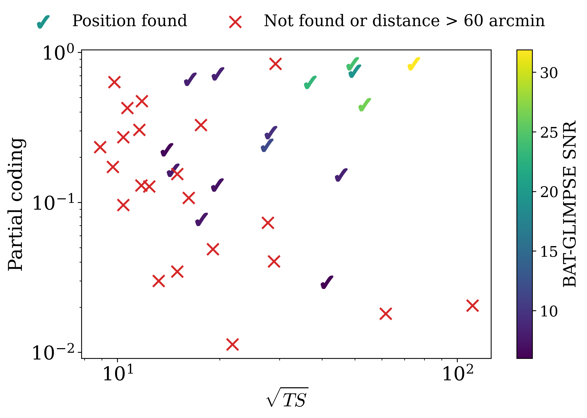
图注：Distribution in the partial coding - $\sqrt{TS}$ plane of all the GRBs localized by \(\texttt{NITRATES}\) with arcmin precision. The points indicated with a cross are GRBs not detected by \(\texttt{BAT-GLIMPSE},\) while the $\checkmark$ symbol indicates GRBs detected both by \(\texttt{NITRATES}\) and \(\texttt{BAT-GLIMPSE}.\) The color bar indicates the SNR measured by \(\texttt{BAT-GLIMPSE}.\)
对应解读：对应“建议重点查看的图表”第5、6项，以及“关键图表逐图导读”图5和图6：恢复率、部分编码、显著性与 NITRATES 互补性。
入选理由：该图同时展示 partial coding、\(\sqrt{TS}\)、BAT-GLIMPSE SNR，以及 NITRATES 已定位事件中哪些被 BAT-GLIMPSE 检出或漏检，最适合讨论恢复效率受部分编码和信噪比影响，以及 BAT-GLIMPSE 与 NITRATES 的互补关系。
来源与置信度：\(arxiv_source\)；high；\(arxiv_source\) / sample702.tex:figure[7]
Fig04
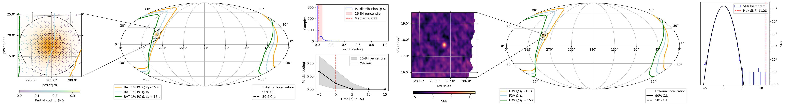
图注：Example of diagnostic plots produced before the \(\texttt{BAT-GLIMPSE}\) run, in the case of \(\textit{Swift}\) slewing during at the external trigger time. The central panel shows the sky localization of the astronomical transient that triggered GUANO. The solid and dashed black lines indicate the 90$\%$ and $50\%$ credible levels. The green, light blue and orange solid contours identify the 1$\%$ partial coding fraction of BAT from $t_0$ - 15 s up to $t_0$ + 15 s, where $t_0$ is the external trigger time. The left panel contains an inset centered at the peak of the localization of the external trigger. The points are extracted from the sky localization of the transient. The right panels show the partial coding probability distribution at $t_0$ and its evolution in time (see text for more details). The plots are for GRB 220511A \(\citep{2022GCN.32023....1D}.\)
对应解读：对应“建议重点查看的图表”第3、5项和模型拟合段落中关于 slew 期间姿态变化、部分编码演化和 mosaic 前诊断的讨论。
入选理由：该图是 Swift slewing 时的预运行诊断，展示外部触发定位、BAT 1% partial coding 轮廓随时间变化以及 partial coding 概率分布演化，能直接说明 slew 事件为何需要按姿态和视场覆盖进行特殊处理。
来源与置信度：\(arxiv_source\)；high；\(arxiv_source\) / sample702.tex:figure[4]
Fig05
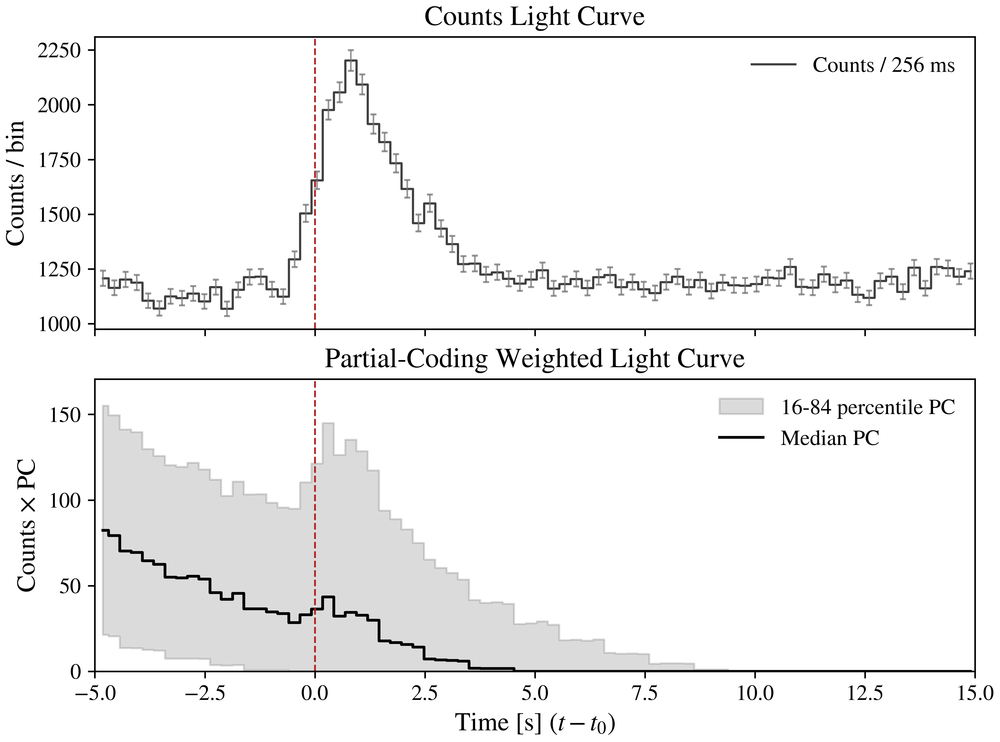
图注：Top panel: raw 256 ms binned light curve of GRB 220511A (GCN 32013, \citealt{2022GCN.32023....1D}). Bottom panel: partial-coding weighted count light curve, which takes into account the apparent motion of the source across the BAT FOV. The distribution of partial coding obtained in the right panel of \(\cref{fig:mosaic_1}\) is used to produce the median (solid line) and 1$\sigma$ uncertainty band.
对应解读：对应“建议重点查看的图表”第3、7项：slew 事件中单纯计数光变与部分编码加权光变的比较，以及时间窗/姿态策略诊断。
入选理由：该图用 GRB 220511A 展示 raw light curve 与 partial-coding weighted count light curve 的差异，直接体现源在 BAT 视场中运动时如何影响信号评估，是理解 slew mosaic 和部分编码校正必要性的关键诊断图。
来源与置信度：\(arxiv_source\)；high；\(arxiv_source\) / sample702.tex:figure[5]
Fig01
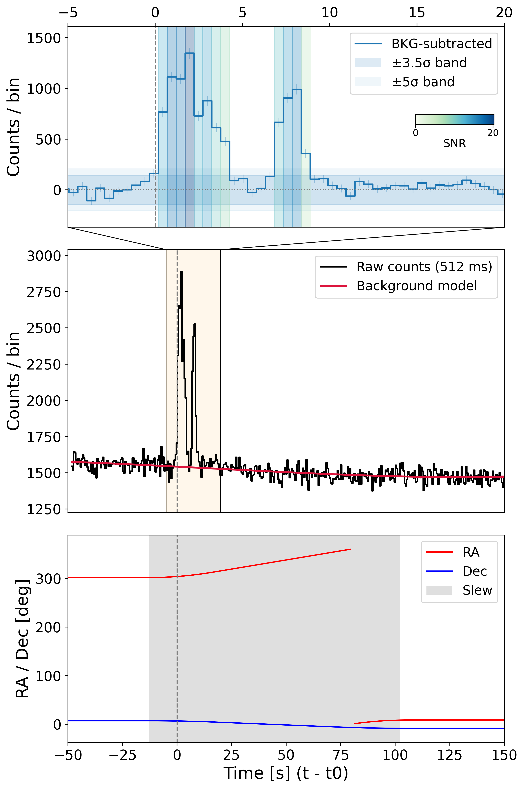
图注：Example of light curve and background fitting during slew by \(\texttt{BAT-GLIMPSE}.\) Middle panel: raw light curve with background fit. The light yellow band indicates the time interval excluded from the fit, by default $[t_0-5\,s,t_0+20\,s]$. The red curve is the best fit background model. Top panel: inset with the background-subtracted light curve, with horizontal bands indicating 3.5$\sigma$ and $5\sigma$ uncertainty on the background level, and vertical bands highlighting the time bins where the SNR$>3.5$, colored by the value of SNR. Bottom panel: time evolution of the \(\textit{Swift}\) boresight coordinates, where the slew is highlighted in gray. All panels are relative to GRB 221206B (GCN 33027, \citealt{2022GCN.33027....1D}).
对应解读：对应“建议重点查看的图表”第7项和模型拟合段落：背景拟合、时间窗选择、SNR 阈值和 boresight 运动。
入选理由：该图展示 slew 期间原始光变、背景拟合、背景扣除后的 SNR 时间 bin，以及 Swift boresight 坐标随时间变化，能支撑关于背景非平稳性、时间窗选择和姿态变化如何影响 BAT-GLIMPSE 检出的讨论。
来源与置信度：\(arxiv_source\)；high；\(arxiv_source\) / sample702.tex:figure[1]
Fig03
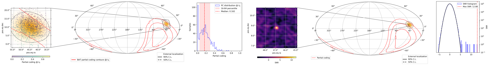
图注：Example of diagnostic plots produced during the pre-run phase of \(\texttt{BAT-GLIMPSE},\) in the case of \(\textit{Swift}\) in stationary pointing. The central panel shows the sky localization of the astronomical transient that triggered GUANO. The solid and dashed black lines indicate the 90$\%$ and $50\%$ credible levels. The red solid contours identify the 1$\%$, 30$\%$ and 80$\%$ partial coding fraction of BAT computed at the trigger time. The left panel contains an inset centered at the peak of the localization of the external trigger. The points are extracted from the sky localization of the transient. The right panel shows the partial coding probability distribution at $t_0$. These plots are for GRB 251013D \(\citep{2025GCN.42244....1D}.\)
对应解读：对应“建议重点查看的图表”第2、5项：定点观测状态下的预运行诊断、外部定位与 BAT partial coding 覆盖。
入选理由：虽然不是最终 BAT 天空显著性图，但它展示 stationary pointing 情况下外部触发定位与 BAT partial coding 区域的关系，可作为与 slew 诊断图的对照，帮助解释管线如何区分定点成像和 slew 分析条件。
来源与置信度：\(arxiv_source\)；high；\(arxiv_source\) / sample702.tex:figure[3]
强相关工作
这篇工作处在 Swift-BAT 地面再分析和低延迟暂现源搜索的交叉点。与同类工作相比，它和 NITRATES 的关系最重要：NITRATES 更偏向 BAT 计数数据中的非触发 GRB 搜索和似然定位/分类，而 BAT-GLIMPSE 强调用编码孔径 imaging 与 mosaic 在定点和 slew 状态下自动给出角分级位置。检索时可用关键词 “Swift BAT NITRATES non-triggered GRB”, “GUANO Swift BAT event data”, “Swift BAT coded mask imaging”, “BAT slew GRB localization”。
从仪器历史看，BAT-GLIMPSE 延续的是编码孔径瞬变源定位问题，而不是提出新的辐射物理模型。它应与 Swift-BAT GRB catalog、Swift mission overview、BAT instrument paper、以及 GUANO 相关论文一起读。相反观点或张力主要不在天体物理解释，而在统计运行层面：多时间窗、多能段、多姿态分段搜索会带来试验因子和假警率控制问题；真实盲搜效率可能不同于已知 GRB 回放样本的恢复率。检索关键词可包括 “coded aperture false alarm rate”, “BAT partial coding systematic localization”, “gamma-ray transient low latency pipeline”。
同一事件 / 同类源线索：
- https://arxiv.org/abs/2607.15130
- https://arxiv.org/pdf/2607.15130
- https://swift.gsfc.nasa.gov/about_swift/bat_desc.html
- https://swift.gsfc.nasa.gov/archive/grb_table/
相似工作：
基础理论 / 方法工作：
相反观点 / 张力线索：
（未提供）
2. PeV extended emission around Galactic PeVatrons and echos of their flares
- 来源：arXiv / astro-ph.HE
- 链接：https://arxiv.org/abs/2607.15031v1
- 作者：A. Neronov, Ie. Vovk
- 评分：novelty 8/10，importance 8/10，relevance 10/10，final 9.70/10
- 推荐理由：Directly relevant PeV gamma-ray/PeVatron theory proposing extended pair-cascade halos and time-variable flare echoes, with an application to Cygnus and implications for LHAASO/HAWC/CTA-like observations.
中文题目：银河系 PeVatron 周围的 PeV 延展辐射及其耀发回声
做了什么：这篇文章讨论一个容易被忽略的传播效应：银河系内能够产生 PeV 伽马射线的源，其 PeV 光子在传播中会与宇宙微波背景光子发生 \(\gamma\gamma\) 吸收，注入 \(e^\pm\) 对；这些电子、正电子再通过逆康普顿散射产生角尺度可达数度的延展伽马辐射。作者进一步指出，如果母源的 PeV 辐射曾发生耀发，这个延展辐射不会同步亮起，而会以几何时延形成可观测的“回声”。文章把这个图像应用到天鹅座方向，提出极大尺度 PeV 源可能与微类星体 Cygnus X-3 的过去 PeV 活动有关。
为什么重要：如果这个机制成立，PeV 源的观测就不能只按“点源加弥散背景”来理解。高能光子在星际介质中产生的级联辐射会把瞬时的源活动改写成跨越几十年到上千年的角向、时间结构；这会影响我们对 PeVatron 位置、能量预算、活动史以及银河弥散 PeV 背景的判断。
理论 / 观测 / 仪器方法价值：理论上，它给出了 PeV 伽马源周围应自然出现多度尺度延展辐射的物理理由；观测上，它提示 LHAASO、HAWC、Tibet AS\(\gamma\)、未来 SWGO/CTA 等应在源周围寻找能量相关的环状或非对称结构；方法上，它把 \(\gamma\gamma\) 吸收、\(e^\pm\) 冷却、角展宽和光行时延组合成可检验的回声模型。
为什么应该关注：你应该关注它，因为它把 PeVatron 的“源在哪里”问题变成了“现在看到的是源的实时辐射，还是过去耀发的传播回声”。这对天鹅座这样源拥挤、弥散背景强、可能同时含有恒星形成区、脉冲星风云、微类星体和超新星遗迹的区域尤其关键。若 Cygnus X-3 真的能留下 PeV 回声，它会成为用 PeV 伽马射线做银河系高能暂现源考古的原型案例。
展开详细解读：文章讲解、背景、理论、重点章节、图表与相关工作
文章详细讲解
科学问题：文章的出发点是，银河系 PeVatron 产生的 PeV 伽马射线并不一定能“干净地”从源到达地球。PeV 光子与宇宙微波背景光子相互作用时，\(\gamma\gamma\to e^+e^-\) 的截面在 PeV 能段非常相关，因此即使源在银河系内，仍可能出现不可忽略的吸收和二级粒子注入。过去很多 PeVatron 讨论把延展辐射归因于强子宇宙线扩散后与气体相互作用，或把大尺度结构视为弥散背景；本文强调，单纯由 PeV 光子传播也能自然制造多度尺度的伽马晕。
作者怎么做：作者建立的是一个传播—级联—几何时延图像。母源先发出 PeV 伽马射线，光子在距离源或观察者一定位置处被背景光场吸收，产生 \(e^\pm\) 对；这些对在星际磁场中偏转、冷却，并通过逆康普顿散射再次产生高能伽马射线。由于二级辐射来自源到观测者视线周围的一段体积，观测者看到的不是点源，而是角尺度可达数度的延展结构。若母源亮度随时间变化，来自不同位置、不同散射角的辐射具有不同光行时延，于是形成从内向外或随能量迁移的“回声”。
关键结果：文章最重要的定性结论是，银河系 PeVatron 周围出现 PeV 延展辐射不是例外，而是相当普遍的预期；其表面亮度和形态会编码母源的长期活动史。对天鹅座区域，作者提出非常延展的 PeV 辐射可能不是一个独立、持续、均匀的弥散源，而可能是 Cygnus X-3 这类紧致源过去 PeV 耀发的回声。这个解释的吸引力在于，它把一个角尺度很大的 PeV 结构同一个已知高能可变源联系起来，而不必要求整个区域同时存在均匀、长期稳定的 PeV 加速。
局限和下一步：这类解释对星际磁场强度、相干长度、源距离、PeV 光度历史、背景光场以及仪器点扩散函数都很敏感。文章提出的是一种可检验的物理场景，而不是已经唯一确定的源识别。下一步应把该模型同 LHAASO/HAWC/Tibet AS\(\gamma\) 的能谱、角分布和时间基线联合拟合，检查延展结构是否具有能量相关尺寸、与 Cygnus X-3 方向一致的几何中心、以及符合耀发回声的径向亮度剖面。若未来能在十年尺度上看到形态或亮度变化，那将是非常强的证据。
关键结果是怎么做出来的
本文的证据链不是基于新公布的事件列表，而是基于 PeV 光子传播物理和已有天鹅座 PeV 延展源现象之间的匹配。作者首先选择“银河系 PeVatron”这一类源作为对象，特别关注已知有高能活动、且位于复杂天鹅座方向的 Cygnus X-3。Cygnus X-3 是一个强可变微类星体，历史上在高能伽马射线和射电波段均表现出耀发活动，因此把它作为可能的瞬态 PeV 母源并非任意假设。
样本意义上，文章讨论的是源类而非大样本统计；关键观测对象是天鹅座方向的极大尺度 PeV 辐射。作者没有把其视为普通点源残差，而是询问：若 Cygnus X-3 曾在过去某个时期发出强 PeV 耀发，\(\gamma\gamma\) 吸收产生的二级 \(e^\pm\) 是否能在今天形成与观测相近的多度尺度亮度分布。这里的“事件数”或“显著性”主要来自原始 PeV 观测论文，而本文的贡献是物理解读和可检验预测。
统计判据方面，本文更接近模型可行性分析，而非完整似然重拟合。读者应关注作者如何估算 PeV 光子的平均自由程、二级粒子的冷却长度、磁偏转角、角向扩展和时延尺度。这些量共同决定延展辐射能否在几十年至上千年尺度内保持可见，以及其角尺度是否能达到观测到的数度量级。若这些标度彼此不相容，模型就会失败；若同时落在合理范围内，才支持回声解释。
支撑结论的图表应主要包括：几何示意图、不同母源活动史下的面亮度剖面、能量相关角尺寸、以及应用到天鹅座/Cygnus X-3 的参数估算。读者要特别看模型线是否只是在归一化上匹配观测，还是同时匹配角尺度、能谱和可能的时间行为。单独匹配总通量并不够，因为总通量可被源光度、占空比和距离重标定。
主要系统误差来自四类：第一，星际磁场的大小和湍动结构会改变 \(e^\pm\) 偏转和级联各向同性程度；第二，天鹅座区域自身包含多个潜在 PeVatron 和强气体/辐射场背景，源混淆严重；第三，广延源的仪器响应和背景扣除会影响面亮度剖面；第四，Cygnus X-3 的过去 PeV 光度没有直接历史记录，只能由现在的高能行为和能量预算外推。稳健性检验应包括改变磁场、距离、耀发持续时间、源谱指数以及背景模型后，回声形态是否仍保留。
展开背景、理论、公式、模型、章节和图表导读
背景知识
PeVatron 指能够把粒子加速到 \(\sim\mathrm{PeV}\) 能量的天体系统。若加速的是质子或原子核，它们与气体碰撞可产生 \(\pi^0\) 并衰变为伽马射线；若直接看到 \(\gtrsim100\,\mathrm{TeV}\) 到 \(\mathrm{PeV}\) 的伽马射线，通常被视为寻找银河宇宙线膝附近加速源的重要线索。但伽马射线本身也会在传播过程中被吸收和再处理，这一点在河外 TeV 天体研究中很常见，在银河 PeV 源研究中同样重要。
历史上，银河系 PeV 伽马天文学长期受限于灵敏度和角分辨率。LHAASO、HAWC、Tibet AS\(\gamma\) 等广视场空气簇射阵列把 \(100\,\mathrm{TeV}\) 以上源从少数候选扩展到多个复杂区域，其中天鹅座是最典型的拥挤场。天鹅座方向有恒星形成区、Cygnus Cocoon、多个脉冲星及其风云、超新星遗迹候选、X 射线双星和微类星体，因此“某个 PeV 亮斑到底属于谁”不是简单定位问题。
Cygnus X-3 是一个著名的银河微类星体，含有紧致天体和沃尔夫-拉叶伴星，具有强烈的 X 射线、射电和高能伽马可变性。它不是传统意义上最常被讨论的稳态 PeVatron，例如年轻超新星遗迹或脉冲星风云，但其相对论喷流、强风环境和耀发行为使其成为瞬态高能加速的自然候选。本文正是利用这种“可变、紧致、可能极端加速”的特征，解释大尺度 PeV 延展辐射。
为什么现在值得重新看？因为 PeV 观测已经从“是否存在源”转向“源的形态、能谱和时间结构是什么”。一旦仪器能分辨多度尺度延展辐射，传播效应就可能与源内加速、宇宙线扩散、弥散背景混在一起。过去把 PeV 扩展结构直接解释成宇宙线在气体中的强子相互作用，可能遗漏了光子级联贡献。
常见误区有三个。第一，认为银河系内 PeV 伽马射线距离太短，不需要考虑 \(\gamma\gamma\) 吸收；实际上与微波背景的相互作用在 PeV 能段正好有效。第二，认为延展辐射必然说明带电宇宙线从源中逃逸并扩散；本文指出中性 PeV 光子本身也可通过二级对产生延展晕。第三，认为大尺度 PeV 结构一定对应现在持续发光的源；回声效应意味着今天看到的可能是过去活动的迟到信号。
基础理论 / 方法脉络
基本物理图像从 \(\gamma\gamma\) 成对产生开始。一个 PeV 伽马光子与宇宙微波背景中的毫米波光子相遇时，若质心能量超过 \(2m_ec^2\)，就能产生 \(e^+e^-\) 对。对 PeV 光子而言，目标光子能量正落在宇宙微波背景的典型范围附近，因此银河尺度上的吸收不再可忽略。产生的电子和正电子各自携带约一半原伽马光子能量。
二级 \(e^\pm\) 的命运由冷却和偏转竞争决定。它们会通过逆康普顿散射背景光子，把能量再转移回高能伽马射线；同时在星际磁场中发生洛伦兹偏转。若冷却长度上累积的偏转角足够大，二级辐射会被扩展成角尺度可观的晕；若磁场很弱或冷却极快，结构则更接近原视线方向。
本文的特定假设是，母源可能不是稳态 PeVatron，而是曾经历强 PeV 耀发。稳态源产生近似稳定的延展晕；瞬态源产生的不同路径长度和不同散射位置带来光行时延，观测到的是随时间展开的回声。回声的角半径和出现时间有关，粗略说，离视线越远的二级辐射路径越长，到达越晚。
观测方法上，关键量不是单一光子事件，而是面亮度 \(I_\gamma(E,\theta,t)\)、能谱 \(dN/dE\)、角向剖面和可能的长期变化。空气簇射阵列需要从强宇宙线背景中提取广延伽马信号，因此背景模型、点扩散函数和源模板会显著影响结论。本文的模型可转化为一个空间—能量—时间模板，用来同观测计数图比较。
主要退化关系包括：源的过去 PeV 光度与耀发持续时间退化，磁场强度与角展宽退化，源距离与时延尺度退化，源谱指数与级联能谱退化。此外，天鹅座区域的多个源可能在同一角尺度上叠加，导致单个回声模板看似成功但并非唯一解释。
公式与推导
第一步是成对产生阈值。两个光子能量分别为 \(E_\gamma\) 和 \(\epsilon\)，夹角为 \(\psi\)，质心能量满足
当 \(s\geq 4m_e^2c^4\) 时可发生 \(\gamma\gamma\to e^+e^-\)。因此阈值近似为
这里 \(m_e\) 是电子质量，\(c\) 是光速。对各向同性背景光场，头碰头碰撞 \((1-\cos\psi)\sim2\) 最有效。
第二步是光学深度。沿距离 \(D\) 传播的 PeV 光子，其吸收光学深度可写为
其中 \(n(\epsilon)\) 是背景光子数密度，\(\mu=\cos\psi\)，\(\sigma_{\gamma\gamma}\) 是成对产生截面。若 \(\tau_{\gamma\gamma}\ll1\)，二级注入弱；若 \(\tau_{\gamma\gamma}\sim1\)，延展级联会显著改变观测形态。
第三步是二级粒子能量。近似对称分能时，电子或正电子洛伦兹因子为
这给出冷却、辐射能量和磁偏转的基本尺度。该近似忽略了成对产生的能量分布宽度，但足以估计 PeV 光子注入的 \(e^\pm\) 是否会产生 \(\gtrsim\mathrm{TeV}\) 到 \(\mathrm{PeV}\) 的二级辐射。
第四步是逆康普顿辐射能量。在 Thomson 极限下，散射后光子能量约为
但对 PeV 注入电子，许多散射进入 Klein-Nishina 区域，实际 \(E_{\rm IC}\) 不能简单按 \(\gamma_e^2\) 无限增长。这个公式仍有用，因为它说明高能电子会把低能背景光子提升到伽马射线能段。
第五步是冷却时间。辐射能量密度为 \(U_{\rm rad}\) 时，Thomson 近似下逆康普顿冷却时间为
其中 \(\sigma_T\) 是 Thomson 截面。对应冷却长度为
若 Klein-Nishina 效应重要，冷却会变慢，延展尺度和时延也随之改变。
第六步是磁偏转。电子在磁场 \(B\) 中的 Larmor 半径为
在相干磁场中，冷却长度内的偏转角约为
若磁场是湍动的，相干长度为 \(\lambda_B\)，偏转角近似按随机游走缩小为 \(\delta\sim \sqrt{l_{\rm cool}\lambda_B}/r_L\)。这正是模型对星际磁场敏感的原因。
第七步是角尺度与时延。小角近似下，观测到的角展宽可记为 \(\theta\sim\delta\)，而几何时延近似为
这里 \(x=l/D\) 表示相互作用点相对观测者和源的位置。该式说明多度尺度结构可对应几十年至上千年时延，取决于 \(D\)、\(\theta\) 和相互作用位置。
第八步是可观测面亮度。若母源光度历史为 \(L_\gamma(E,t)\)，延展辐射可形式化写成卷积
核函数 \(K\) 包含 \(\gamma\gamma\) 吸收、\(e^\pm\) 冷却、磁偏转、逆康普顿辐射和仪器角响应。本文的“回声”本质上就是 \(K\) 把短时耀发 \(L_\gamma(E,t')\) 展宽成长期、广角的 \(I_\gamma(E,\theta,t)\)。
第九步是与计数图比较的似然。对观测像素 \(i\) 和能量 bin \(j\)，期望计数可写为
其中 \(T\) 是曝光时间，\(A_{\rm eff}\) 是有效面积，\(R_{ij}\) 是能量与角响应，\(b_{ij}\) 是背景。Poisson 似然为
用不同模板比较 \(\ln\mathcal{L}\)，即可检验回声模型是否优于点源、均匀弥散源或强子扩散模板。
模型拟合 / 应用方法
若把本文思想发展成完整拟合，直接拟合量应包括空间计数图、能谱点和可能的时间分箱。模型参数至少包括源距离 \(D\)、过去 PeV 光度归一化、源谱指数、耀发开始时间、耀发持续时间、星际磁场强度、磁场相干长度以及背景归一化。对 Cygnus X-3 场景，还应加入源位置固定或带先验的几何约束。
似然函数通常应采用 Poisson 计数似然，而不是只拟合去背景后的通量点。原因是广延源的显著性强依赖背景估计和仪器点扩散函数。模型预测的 \(I_\gamma(E,\theta,t)\) 需要先卷积有效面积、曝光、能量分辨率和角分辨率，再与观测计数比较。对空气簇射阵列尤其要谨慎处理大尺度背景过滤，因为过度背景扣除可能把真实多度结构削弱或制造环状残差。
参数退化是核心问题。源的峰值 PeV 光度和耀发持续时间都能提高总 fluence，二者可强烈退化；磁场强度和相干长度共同决定角展宽，可能与源距离造成相似的面亮度剖面；源谱更硬可以提高高能端通量，而较小吸收深度或较弱级联效率也会改变同一能段的归一化。仅凭单能段图像很难唯一分辨这些情形，因此能量相关形态是关键诊断。
残差图应按能量分层检查。若回声模型正确，高能与低能延展尺寸、中心偏移和径向剖面不应随意变化，而应符合冷却和偏转标度。若残差集中在已知气体云或恒星形成区，强子宇宙线扩散解释可能更自然；若残差沿 Cygnus X-3 方向近似同心，且与气体柱密度相关性弱，回声解释更有竞争力。
系统误差方面，应做多套背景模板、不同源掩膜、不同仪器点扩散函数、不同星际磁场模型和不同辐射场模型的重复拟合。还应与替代模型比较，包括一个或多个稳态广延源、脉冲星风云模板、Cygnus Cocoon 强子模板、以及普通银河弥散模型。实际应用中，最有说服力的不是单一最佳拟合，而是回声模型在空间、能谱和时间三个维度同时减少残差。
重点章节 / 结果段落怎么读
第一，读引言和物理动机时，应抓住作者为何认为 PeV 源周围的延展辐射是“普遍预期”而非特殊假设。重点看他们如何从 \(\gamma\gamma\) 吸收和 \(e^\pm\) 注入推出多度尺度结构，以及与传统宇宙线扩散晕的区别。
第二，读传播与级联模型部分时，应关注平均自由程、冷却时间、磁偏转角和时延的估算。这里决定了模型是否在数量级上可行。读者应检查所采用的背景光场是否主要为宇宙微波背景，星际磁场参数是否合理，以及 Klein-Nishina 效应是否会改变冷却估计。
第三，读时间可变和回声部分时，应看作者如何把母源耀发历史映射为面亮度随角度和时间的变化。这里最关键的是几何时延：不同角半径的辐射对应不同路径长度，因此一个短暂耀发可以被拉长成多年到千年的延展信号。
第四，读天鹅座/Cygnus X-3 应用部分时，应把它看成物理解释案例，而不是最终源认证。重点检查所需 PeV 能量预算是否与 Cygnus X-3 的已知活动相容，模型中心是否与观测延展结构一致，以及是否排除了其他天鹅座 PeVatron 候选。
第五，读讨论和结论时，应关注可检验预言：能量相关角尺度、长期亮度变化、与气体分布弱相关、以及可能的环状或偏心结构。这些预言决定了未来观测能否把回声模型与强子扩散模型区分开。
建议重点查看的图表
-
\(\gamma\gamma\) 吸收/级联几何示意图：看母源、相互作用点、二级 \(e^\pm\)、逆康普顿光子和观测者之间的几何关系，尤其是时延路径。
-
PeV 光子平均自由程或光学深度随能量变化图：看 \(\tau_{\gamma\gamma}(E)\) 在 \(\mathrm{PeV}\) 附近是否达到足以产生可见级联的范围。
-
不同磁场参数下的角向面亮度剖面：看 \(I_\gamma(\theta)\) 是否自然达到多度尺度，以及剖面是中心集中的、环状的还是平缓的。
-
耀发回声的时间演化图：看同一耀发在不同观测时间的亮度峰如何向外移动或扩散，时间尺度是否为几十年至千年。
-
应用于天鹅座区域的模型—观测对比图：看 Cygnus X-3 的位置与延展 PeV 结构中心、半径和亮度分布是否匹配。
-
能谱或能量相关尺寸图：看模型是否同时解释总通量和不同能段的形态；若只匹配一个能段，应降低解释可信度。
-
残差或替代模型比较表：看回声模板相对于点源、均匀弥散源、强子扩散模板是否有统计改进，以及系统误差是否覆盖该改进。
关键图表逐图导读
图 1：若论文给出几何示意图，横向应表示源—观测者视线，离轴方向表示二级粒子偏转或散射角。读图时要确认作者区分了原初 PeV 光子的直线路径、\(\gamma\gamma\) 相互作用位置和二级逆康普顿光子的到达路径。陷阱是把图中的角尺度当作真实比例；这类图通常只用于说明时延机制。
图 2：若有光学深度或平均自由程图，横轴通常是 \(E_\gamma\)，纵轴是 \(\tau_{\gamma\gamma}\) 或 \(\lambda_{\gamma\gamma}\)。关键看 \(\mathrm{PeV}\) 附近曲线是否进入银河距离可感知的范围。若纵轴为平均自由程，要与 Cygnus X-3 的距离量级比较，而不是只看曲线峰值。
图 3：角向面亮度剖面通常以 \(\theta\) 为横轴、\(E^2I_E\) 或归一化亮度为纵轴。不同颜色/线型可能代表不同磁场、不同能量或不同耀发年龄。读图要看峰值半径和剖面宽度，而不只是总归一化；归一化可以通过源光度调整，但角尺度较难任意调节。
图 4：时间演化或回声图可能以观测时间为不同面板，或以 \(\theta\) 和 \(t\) 构成二维强度图。关键趋势是耀发信号被几何时延展宽，外侧结构相对于内侧结构滞后。读图陷阱是忽略仪器多年观测平均会把时间结构抹平。
图 5：天鹅座应用图若叠加天空坐标，应看 Cygnus X-3、延展 PeV 源轮廓和其他高能源的位置关系。坐标轴可能是银河经纬或赤经赤纬。读者应检查轮廓是否显著偏离 Cygnus X-3，若偏离超过仪器系统误差和模型允许的磁偏转范围，关联就会变弱。
图 6：模型与观测能谱对比图中，横轴为能量，纵轴多为 \(E^2dN/dE\)。回声模型需要解释 PeV 端而不在较低能段过量。若图中有上限，尤其要看模型线是否违反 HAWC、Fermi-LAT 或其他 TeV/GeV 约束。
论文原图 / 可嵌入图片
Fig02
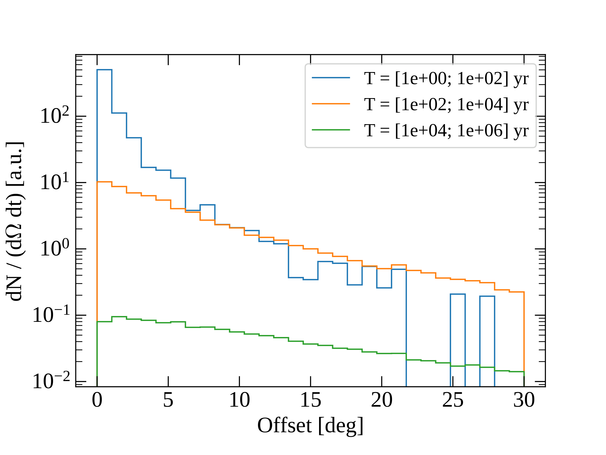
图注：Surface brightness profiles of the secondary extended emission in the energy range above 1~PeV for different time delay ranges.
对应解读：对应“建议重点查看的图表”第3项不同时间/磁场条件下角向面亮度剖面、第4项耀发回声时间演化，以及“关键图表逐图导读”图3和图4关于\(I_\gamma(\theta)\)与时间延迟的解读。
入选理由：这张图直接给出>1 PeV二级延展辐射的表面亮度剖面，并按不同时间延迟分组，是判断回声是否能形成多度尺度结构、峰值半径如何随延迟变化、剖面是否中心集中或外移的核心证据。相比单纯能谱图，它更直接支撑日报中关于角尺度和耀发回声形态的主要解读。
来源与置信度：\(arxiv_source\)；high；\(arxiv_source\) / main.tex:figure[2]
Fig01
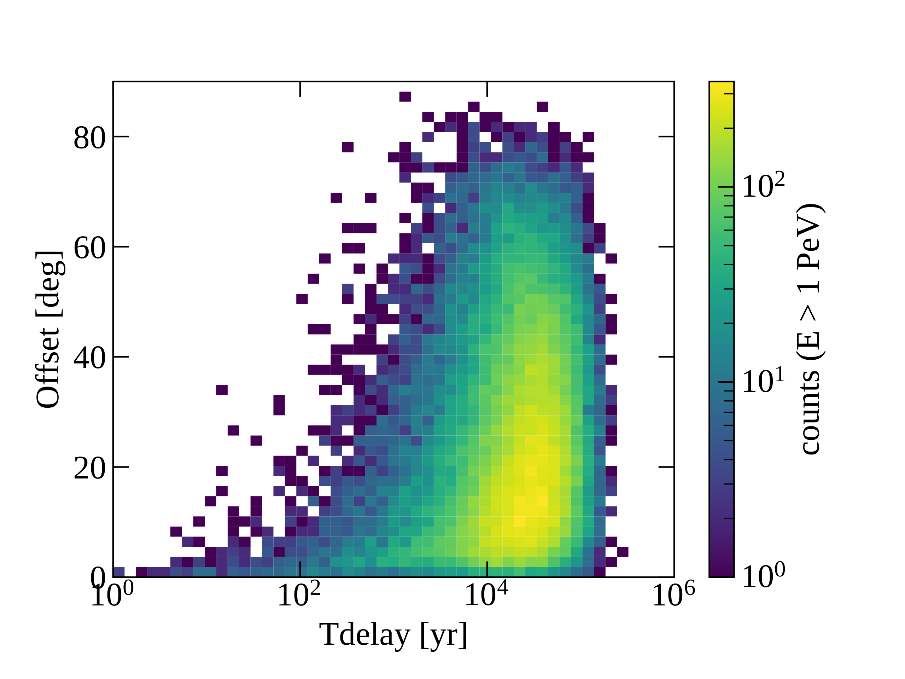
图注：Secondary photon observed offsets as function of their arrival on the time delay. The distribution is plotted for the photon energies above 1~PeV.
对应解读：对应“建议重点查看的图表”第1项级联/时延几何关系和第4项耀发回声时间演化，也对应“关键图表逐图导读”图1关于二级光子到达路径与时延机制的说明。
入选理由：图中展示>1 PeV二级光子的观测偏离角与到达时间延迟之间的关系，直接把几何时延、角向扩展和回声传播联系起来。它是理解为什么一个点状母源可产生多度尺度、且随时间演化的延展结构的关键诊断图。
来源与置信度：\(arxiv_source\)；high；\(arxiv_source\) / main.tex:figure[1]
Fig03
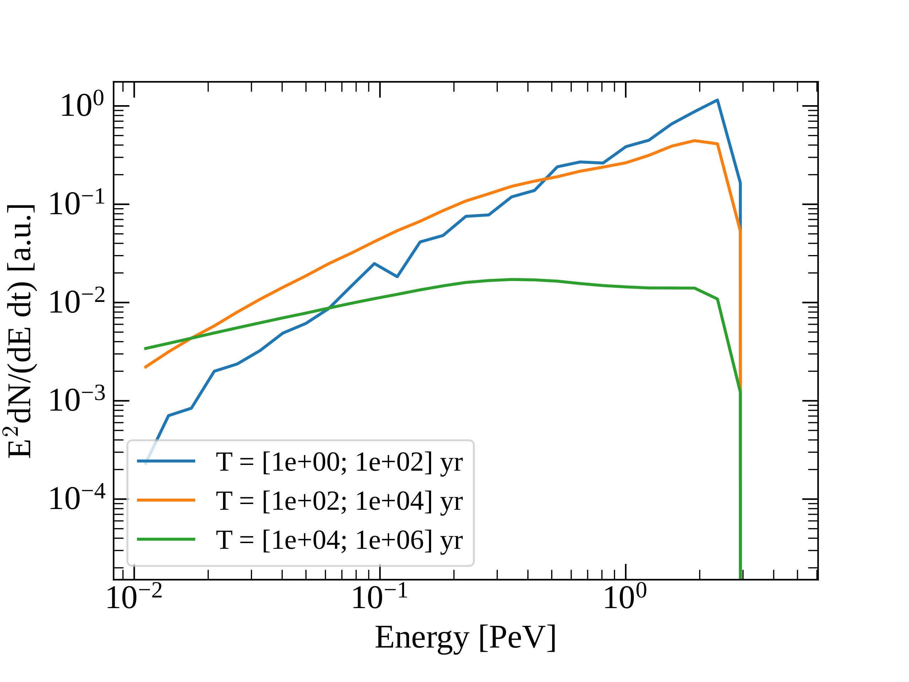
图注：Spectrum of the secondary signal as a function of the time delay.
对应解读：对应“建议重点查看的图表”第4项耀发回声时间演化和第6项能谱或能量相关尺寸图，以及“关键图表逐图导读”图6关于模型能谱是否在不同能段自洽的讨论。
入选理由：该图给出二级信号能谱随时间延迟的变化，可用于判断耀发回声在不同延迟阶段的能量分布是否仍集中在PeV端，以及是否可能与较低能段约束冲突。它补充了角向剖面图无法展示的能谱维度。
来源与置信度：\(arxiv_source\)；high；\(arxiv_source\) / main.tex:figure[3]
Fig04
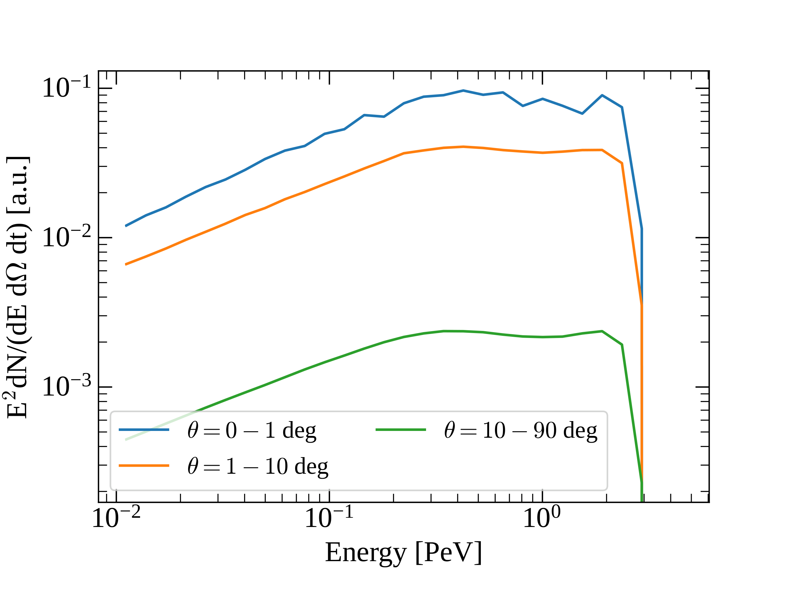
图注：Spectrum of the secondary signal as a function of the off-source angle for a stationary source.
对应解读：对应“建议重点查看的图表”第6项能谱或能量相关尺寸图，以及模型拟合段落中关于能量相关形态、径向剖面与参数退化的讨论。
入选理由：该图展示稳态源情况下二级信号能谱随离源角的变化，能检验不同角距离处的谱形是否一致或发生软化/硬化，从而支撑日报中强调的能量相关形态诊断。其与具体耀发回声的关联弱于Fig01和Fig02，但对判断模型是否只在单一能段成立仍有价值。
来源与置信度：\(arxiv_source\)；high；\(arxiv_source\) / main.tex:figure[4]
强相关工作
这篇工作与两类文献直接相关。第一类是银河 PeVatron 和天鹅座区域观测，包括 LHAASO、HAWC、Tibet AS\(\gamma\) 对 \(100\,\mathrm{TeV}\) 以上源和 Cygnus Cocoon 的研究。它们通常从强子宇宙线、脉冲星风云或恒星形成区集体加速角度解释延展辐射。检索关键词可用 “LHAASO Cygnus PeVatron extended source”, “Cygnus Cocoon TeV gamma rays”, “Tibet AS gamma PeV Cygnus”。
第二类是电磁级联和 pair halo 文献，尤其是高能伽马射线在背景光场中吸收后形成延展辐射的理论。河外 blazar pair halo 研究常讨论 \(\gamma\gamma\) 吸收、星际/星系际磁场偏转和延迟辐射；本文把类似思路搬到银河 PeV 源和宇宙微波背景主导的能段。检索关键词可用 “gamma gamma absorption CMB PeV gamma rays”, “pair halo inverse Compton cascade Galactic”, “electromagnetic cascade PeVatrons”。
与潜在相反观点的关系也很重要。天鹅座的大尺度高能辐射常被解释为 Cygnus OB2 或 Cygnus Cocoon 中的年轻宇宙线与气体相互作用，或者多个未分辨源叠加。本文的回声模型若要胜出，需要证明形态与气体柱密度、恒星形成区模板或已知脉冲星风云模板的相关性不如与 Cygnus X-3 过去耀发的几何回声相符。
同一事件 / 同类源线索：
相似工作：
基础理论 / 方法工作：
- https://ui.adsabs.harvard.edu/abs/1967PhRv..155.1404G/abstract
- https://ui.adsabs.harvard.edu/abs/1970RvMP...42..237B/abstract
相反观点 / 张力线索：
3. Using Muon Rings for the Calibration of the Cherenkov Telescope Array: An Analytical Solution for the Dual-Mirror Telescope Using Vector Geometry
- 来源：arXiv / astro-ph.IM
- 链接：https://arxiv.org/abs/2607.14365v1
- 作者：Markus Gaug, Víctor Giráldez-Segalàs, Fiona Redmen
- 评分：novelty 8/10，importance 8/10，relevance 10/10，final 9.70/10
- 推荐理由：High-priority IACT/CTA instrumentation paper deriving an analytical muon-ring calibration solution for dual-mirror telescopes, with direct CTAO calibration relevance and sizable corrections to existing methods.
中文题目：用 μ 子环校准切伦科夫望远镜阵列：基于矢量几何的双反射镜望远镜解析解
做了什么：这篇文章解决的是成像大气切伦科夫望远镜中一个很具体但很关键的校准问题：如何用局地宇宙线 μ 子产生的环像，定量标定双反射镜望远镜的光学吞吐量和点扩散函数。以往 μ 子环解析模型主要适用于单镜面、近似平面反射面的望远镜；作者用矢量几何和符号代数推导出包含主镜、次镜、相机遮挡以及倾斜 μ 子几何效应的双镜系统解析描述。结果显示，对 CTAO 的 Schwarzschild-Couder Telescope 这类双镜设计，次镜及其挡光结构会让倾斜 μ 子的切伦科夫光遮挡修正相对旧方法偏离最高约 \(40\%\)，这会直接影响用 μ 子环做绝对光学校准的精度。
为什么重要：CTAO 的能量标定、有效面积和长期灵敏度监测都依赖光学吞吐量的可靠追踪。μ 子环是 IACT 领域少数能够在观测现场、利用真实光路、接近逐夜监测光学效率的校准源。如果双镜望远镜继续沿用单镜或近似遮挡模型，光学效率可能被系统性估错，最终传播到 γ 射线能谱、能量阈值和跨望远镜一致性。
理论 / 观测 / 仪器方法价值：论文的价值不在于发现新天体，而在于给 CTAO 类复杂光学系统提供一套可计算、可验证、可嵌入校准流水线的解析工具。它把 μ 子环亮度、环形不完整性、相机与次镜阴影、主镜曲率修正和像差效应放进统一矢量几何框架，为仪器响应函数、蒙特卡洛校验和长期光学监测提供了更干净的基准。
为什么应该关注：如果你关心 CTAO 的系统误差预算，这篇文章值得看。μ 子环校准看似是仪器细节，但它会进入每个源的通量归一化、能谱硬度、截止能量和多望远镜联合重建。尤其对双镜小像素、高角分辨率设计，遮挡和像差不再是可忽略的小修正，而可能成为仪器响应中显著的、方向相关的校准项。
展开详细解读：文章讲解、背景、理论、重点章节、图表与相关工作
文章详细讲解
科学问题：IACT 通过记录大气切伦科夫光成像来反推 γ 射线空气簇射的方向、能量和粒子类型。望远镜的光学吞吐量会随镜面老化、尘埃、相机量子效率变化和夜间环境改变而漂移，因此需要独立校准。局地 μ 子几乎沿直线穿过望远镜附近大气时，会在相机中产生几何清晰的切伦科夫环；环半径主要由切伦科夫角决定，环亮度则和光学效率直接相关。问题在于，CTAO 中的双反射镜望远镜并不是简单的单镜面光阑：次镜、相机、支撑结构和挡光筒都会遮挡一部分 μ 子光，且遮挡量依赖 μ 子入射方向、撞击参数和光子发射高度。
作者怎么做：论文用矢量几何重写 μ 子发光点、光子传播方向、主镜反射、次镜遮挡和相机遮挡之间的空间关系。相比早期把反射面近似为平面或只处理单镜口径积分的做法，这里显式跟踪光线与不同光学元件的交点，并用 SageMath 进行符号化推导和 Taylor 展开，从而得到可分析、可计算的表达式。作者还把新形式退化到已知的单镜或简化几何情形，检查是否回到文献中的解析结果；对无法完全用旧解对照的复杂项，则检查极限行为是否符合物理预期。
关键结果：最突出的发现是，双镜系统中倾斜 μ 子的阴影修正可以很大，特别是 Schwarzschild-Couder Telescope 设计中包围次镜的 baffle 会改变环上不同方位角处的光子收集量。相对于此前使用的近似方法，局部或积分的遮挡修正可出现最高约 \(40\%\) 的偏差。论文还给出两个副产品：第一，主镜曲率会改变 μ 子光子可被镜面接收的最大有效发射高度，作者给出一阶修正；第二，在单镜抛物面望远镜中，彗差会让 μ 子环出现可解析描述的畸变，这对用环宽或环形残差监测光学点扩散函数有用。
局限和下一步：这是一篇解析几何与校准方法论文，不是完整 CTAO 校准流水线的最终性能评估。实际应用还要把镜面分块、反射率非均匀性、相机像素化、夜空背景、触发选择、图像清洗、光电子统计、电子学响应和真实 μ 子能谱放入仿真或数据拟合。下一步最重要的是把该解析解嵌入 CTAO 的 μ 子事件重建，对全阵列不同望远镜类型做端到端蒙特卡洛验证，并用原型望远镜或早期 CTAO 数据检查由新遮挡模型带来的光学吞吐量修正是否与其他校准手段一致。
关键结果是怎么做出来的
本文最重要的证据链围绕“旧的 μ 子环校准遮挡模型在双镜系统中会出现显著系统偏差”展开。样本不是天体事件样本，而是一组参数化的 μ 子几何配置和望远镜结构参数：μ 子方向、撞击参数、切伦科夫光锥方位角、主镜曲率、次镜半径、相机尺寸以及 Schwarzschild-Couder Telescope 的次镜 baffle。作者通过解析表达式扫描这些参数，比较完整矢量几何解与以往近似方法在收光路径长度、有效光阑和环上方位角亮度分布上的差异。
显著性在这里不是通常观测论文中的 \(p\) 值或 \(\sigma\) 探测显著性，而是系统误差量级和极限一致性检验。作者首先要求新公式在单镜、无次镜遮挡、平面反射面等极限下回到已知解析解；这是内部一致性检验。然后在双镜遮挡项上，作者检查当次镜半径趋零、μ 子倾角趋零、挡光结构移除或发射高度取极限时，结果是否表现出正确的几何缩放。这类检验等价于证明公式没有在物理边界条件上产生伪效应。
支撑核心结论的图表应包括参数扫描图和几何示意图：一类图展示 μ 子环上不同方位角的收光量或遮挡因子，另一类图比较完整解与旧方法的相对偏差，第三类图展示倾角、撞击参数或次镜 baffle 尺寸变化时偏差如何增长。读者应特别看偏差是否集中在环的某些方位角，还是影响整个环的归一化；前者更会污染点扩散函数或环完整性诊断，后者则更直接影响光学吞吐量估计。
系统误差方面，论文重点处理的是几何遮挡的解析误差，而不是所有观测误差。像素化、夜空背景、镜面反射率非均匀、图像清洗阈值和真实触发偏置没有在同一层级内完全展开。因此，约 \(40\%\) 的偏差不应被误读为最终光学校准必然错到 \(40\%\)，而是说明在某些几何配置下，遮挡项本身若建模不当可达到这个量级。端到端分析会通过事件选择和拟合权重减弱或重新分配这些偏差，但不能凭经验忽略它。
稳健性检验的核心是解析解的退化验证和物理极限检查。对专业读者来说，最值得复核的是：Taylor 展开保留到的阶数是否足以覆盖 CTAO 双镜实际几何；倾斜 μ 子下遮挡边界是否连续；主镜曲率对最大发射高度的一阶修正是否在典型口径和焦距下足够小；彗差项是否会与点扩散函数监测中的真实光学退化混淆。
展开背景、理论、公式、模型、章节和图表导读
背景知识
成像大气切伦科夫望远镜不是直接探测 γ 射线，而是记录 γ 射线或宇宙线在大气中产生的切伦科夫光。能量重建对光学吞吐量非常敏感：镜面反射率、相机光探测效率、前端电子学增益和大气透明度都会影响图像亮度。若光学校准偏低，重建能量和通量会系统偏移；若不同望远镜之间校准不一致，阵列联合重建也会受到影响。
μ 子环校准的基本想法很优雅。高能宇宙线在大气中产生的局地 μ 子会穿过望远镜附近并沿短路径发出几乎固定角度的切伦科夫光。对单个 μ 子而言，相机图像常呈现完整或部分环，环半径给出切伦科夫角，环亮度与望远镜接收到的光子数相关。由于几何可计算、事件率高、与天体源无关，μ 子环成为 IACT 光学监测的标准工具之一。
历史上，Whipple、HEGRA、H.E.S.S.、MAGIC 和 VERITAS 等 IACT 的 μ 子校准多基于单镜望远镜几何，或者将反射面近似为一个有效孔径。这样的近似在 Davies-Cotton 或抛物面单镜系统中已经相当有用。但 CTAO 引入多种望远镜类型，其中 Schwarzschild-Couder 双镜设计使用主镜和次镜共同成像，具有更小的板尺度和更好的离轴像质，同时也引入更复杂的遮挡和光路。
为什么现在值得重新看？因为 CTAO 的目标不仅是探测源，而是提供高精度、多能段、长期稳定的 γ 射线观测能力。阵列由不同尺寸、不同光学设计的望远镜组成，任何跨类型校准偏差都会进入阵列响应函数。双镜望远镜的次镜和 baffle 不是“小遮挡”，在倾斜 μ 子情形下会选择性切掉环上某些方位角的光，从而改变亮度分布和拟合残差。
一个常见误区是把 μ 子环当作“几何上完全标准”的光源。实际上，μ 子能量、发射高度、大气折射率剖面、望远镜光阑、相机阴影、像素响应和事件选择都会影响可观测环像。另一个误区是认为只要总环亮度拟合得好，方位角结构就不重要；但对双镜系统，方位角非均匀性正是遮挡模型是否正确的诊断量，也会影响点扩散函数和图像清洗偏置。
基础理论 / 方法脉络
基础物理图像从切伦科夫辐射开始：当带电粒子在介质中的速度超过该介质中的光相速度时，会沿锥面发射相干辐射。对相对论性 μ 子，大气折射率 \(n\) 略大于 \(1\)，因此切伦科夫角通常在一度量级。望远镜相机看到的是这个光锥与光学系统视场的投影；若 μ 子轨迹接近望远镜，投影会形成环或弧。
μ 子环亮度取决于单位路径长度产生的光子数、光子能否打到主镜、是否被次镜或相机遮挡、镜面和探测器效率，以及图像分析保留下来的光电子数。单镜解析模型通常把有效收光长度写成 μ 子轨迹与由镜面孔径定义的几何区域的交叠长度。双镜系统中，这个“有效区域”不再只是主镜圆盘，而要扣除次镜、相机及 baffle 在不同光线方向上的投影阴影。
本文的模型假设核心是用矢量表达所有几何对象。μ 子轨迹可用方向单位矢量和撞击参数表示；每个切伦科夫光子方向由围绕 μ 子方向的锥面方位角表示；光线与主镜、次镜、相机平面的交点由直线参数方程求得。这样可以判断某一发射点、某一锥面方位角的光子是否被望远镜接收，进而积分得到环上方位角相关的光产额。
观测上，最终拟合的不是连续光子场，而是相机像素中的光电子图像。环半径、环心、环宽、沿环方位角的亮度分布和背景水平共同约束 μ 子方向、撞击参数、光学效率和点扩散函数。常见退化包括：光学效率与 μ 子撞击参数的相关性，环宽与光学点扩散函数、像素尺寸和多重散射的混合，环不完整性与遮挡模型、触发阈值和图像清洗阈值的混合。
系统误差的关键在于选择效应。触发系统更容易接受亮环或穿过有利相机区域的环；图像清洗会削弱低亮度弧段；遮挡模型若不对，会把真实几何缺光误解释成镜面效率低或点扩散函数差。本文的解析解主要服务于把几何因素从这些仪器效应中剥离出来，让后续校准拟合更接近物理量本身。
公式与推导
第一步是切伦科夫角。设 μ 子速度为 \(v=\beta c\)，大气折射率为 \(n(h)\)，则发光条件和锥角满足
这里 \(h\) 是发射高度，\(\theta_{\rm C}\) 是相对 μ 子方向的切伦科夫角。对高能 μ 子 \(\beta\simeq 1\)，且 \(n-1\ll 1\)，所以 \(\theta_{\rm C}\) 对高度和气压剖面敏感。
第二步是单位路径长度的光子产额。Frank-Tamm 公式给出波长区间 \([\lambda_1,\lambda_2]\) 内
其中 \(\alpha_{\rm em}\) 是精细结构常数，\(z=1\) 对 μ 子成立，\(x\) 是沿 μ 子轨迹的路径长度。这个公式连接了可计算的几何路径长度和最终环亮度。
第三步把 μ 子轨迹写成矢量形式。若参考点为 \(\mathbf{r}_0\)，μ 子方向单位矢量为 \(\hat{\mathbf{u}}\)，则发射点为
其中 \(s\) 是沿轨迹的参数。切伦科夫光子方向 \(\hat{\mathbf{k}}\) 位于以 \(\hat{\mathbf{u}}\) 为轴的锥面上，满足
锥面方位角决定相机环上的位置，也是遮挡随方位角变化的来源。
第四步判断光线是否打到某个光学面。对从 \(\mathbf{r}_\mu(s)\) 出发、方向为 \(\hat{\mathbf{k}}\) 的光线，任意平面或近似局部面上的交点可写成
其中 \(t\) 由该光学面的几何方程决定。若 \(\mathbf{r}_{\rm int}\) 落在主镜有效孔径内，同时不落入次镜、相机或 baffle 的投影阴影内，则该光子对环亮度有贡献。
第五步定义方位角相关的有效收光函数。可把几何接受度写成指示函数 \(A_{\rm geom}(s,\phi)\)，其中 \(\phi\) 是切伦科夫锥面方位角：
这里各个 \(H\) 是孔径或遮挡的阶跃函数。本文的解析工作本质上就是把这些函数在双镜几何中显式求出或展开。
第六步得到环上光子数。若系统总效率为 \(\eta(\lambda,\mathbf{r})\)，则某一环方位角附近的期望光电子数可写成
这个量是 μ 子环校准拟合的核心：几何项已知后，归一化主要约束光学吞吐量。
第七步描述主镜曲率对最大发射高度的修正。若平面近似给出的最大有效路径参数为 \(s_{\max}^{(0)}\)，主镜曲率半径或曲面参数引入小量 \(\epsilon\)，则一阶展开可写成
论文的一个副产品就是给出类似 \(s_{\max}^{(1)}\) 的解析修正。它说明曲率不只改变成像，也改变哪些高处发出的 μ 子光能进入有效孔径。
第八步连接到像素数据的似然。若像素 \(i\) 的观测光电子数为 \(q_i\)，模型期望为 \(m_i(\boldsymbol{\Theta})\)，在光电子计数主导时可用泊松似然
参数 \(\boldsymbol{\Theta}\) 包括环心、半径、撞击参数、光学效率、背景和点扩散函数。错误的 \(A_{\rm geom}\) 会系统性移动 \(\eta\) 或残差结构。
第九步给出系统偏差诊断。比较完整模型 \(m_i^{\rm full}\) 与近似模型 \(m_i^{\rm approx}\) 时，可定义方位角或积分相对偏差
论文报告的最高约 \(40\%\) 偏差应理解为这个几何遮挡层面的相对差异，而不是所有校准环节合并后的最终误差。
模型拟合 / 应用方法
在实际 μ 子环分析中，拟合对象通常是相机像素光电子数或清洗后沿环抽取的一维亮度剖面。基本参数包括环心位置、环半径 \(\theta_{\rm C}\)、环宽、μ 子撞击参数、环的方位角亮度归一化、均匀或非均匀背景，以及代表望远镜光学吞吐量的效率因子。本文提供的是这些拟合中几何预测项的更准确表达，尤其是双镜遮挡的 \(\phi\) 依赖。
似然可以是像素级泊松似然，也可以在光电子数较高时近似为高斯 \(\chi^2\)。若使用像素级方法，模型需要把连续环亮度卷积上点扩散函数、像素响应和相机积分窗口；若使用环方位角剖面，则要小心图像清洗和弧段选择导致的非平凡选择函数。遮挡模型错误时，残差不会只是整体偏高或偏低，而会沿环方位角呈现结构化缺口。
主要退化关系包括光学效率与撞击参数的退化：更远的 μ 子通常产生更短或更暗的有效弧段，若几何路径估计错误，会被吸收到效率因子中。环宽与点扩散函数也退化，因为环宽可由光学像差、像素化、μ 子多重散射和发射高度分布共同贡献。双镜遮挡还会和相机边缘截断、baffle 阴影及触发阈值产生退化，因此仅用总光量拟合会丢失关键信息。
系统误差需要分层处理。本文主要减少几何模型误差；真实数据中还要考虑镜面反射率空间非均匀、相机增益标定、夜空背景、坏像素、触发偏置、大气折射率剖面和 μ 子能量阈值。稳健做法是比较不同事件选择、不同环完整度阈值、不同撞击参数范围和不同望远镜指向下得到的光学效率，检查是否出现随几何参数变化的残余趋势。
模型可能失败的场景也很清楚：如果望远镜结构与理想 CAD 几何有偏差，解析遮挡边界会不准；如果 baffle 或相机边缘的散射、反射不是纯吸收，阶跃遮挡函数会过于理想化；如果图像清洗阈值强烈依赖局部夜空背景，弱弧段会被系统性移除。实际应用中，解析解最适合作为快速、可解释的几何核心，再由蒙特卡洛和实测数据校正二阶效应。
重点章节 / 结果段落怎么读
数据/问题设定部分应先读作者如何定义 μ 子轨迹、切伦科夫锥面、主镜、次镜和相机坐标系。这里决定了后文所有符号的几何含义，尤其要确认撞击参数、倾角和环方位角的定义是否与常见 μ 子校准文献一致。
方法部分的重点是矢量几何推导。读者应关注光线与各光学元件交点的求法、遮挡条件如何写成解析边界，以及 SageMath/Taylor 展开在哪些小参数上展开。不要只看最终公式；真正影响可用性的，是这些公式在极端几何下是否连续、是否容易数值实现。
验证部分应按退化极限来读。作者把新解与已有单镜解析解或简化配置比较，这是判断推导可信度的核心。对复杂双镜项，则应看极限检验：次镜半径趋零、μ 子倾角趋零、baffle 移除、主镜曲率趋平时，结果是否回到直觉。
结果部分应重点看参数扫描和偏差图。约 \(40\%\) 的差异来自特定双镜遮挡配置，读者要辨别它发生在哪些倾角、撞击参数和环方位角，而不是把它理解为普遍全局误差。若图中显示偏差高度局域化，则对环形残差和事件选择的影响可能比对总吞吐量更复杂。
讨论和副结果部分包括主镜曲率对最大 μ 子发射高度的一阶修正，以及单镜抛物面彗差对 μ 子环的影响。这些内容看似旁支，但对高精度点扩散函数监测和未来更精细的 μ 子环模型很有用。
建议重点查看的图表
-
几何定义图：检查坐标系、μ 子方向、切伦科夫锥、主镜、次镜、相机和 baffle 的相对位置。最关键的是确认哪些角度是相对光轴，哪些是相对 μ 子轨迹。
-
单镜或简化极限验证图：看新解析解是否与已知解析结果重合。应关注残差是否只在数值边界附近变大，还是在整个参数范围存在系统偏移。
-
双镜遮挡因子随环方位角变化的图：重点看次镜和 baffle 在环上造成的非均匀缺光位置、宽度和深度。这是论文最直接的新物理/几何效果。
-
完整解与旧近似方法的相对偏差图：检查纵轴是否为局部方位角偏差还是积分光量偏差。约 \(40\%\) 的数值需要结合定义阅读。
-
倾斜 μ 子参数扫描图：看偏差如何随 μ 子倾角、撞击参数或发射高度变化。若偏差在事件选择常用区域内很大，对校准流水线影响更直接。
-
主镜曲率修正图或表：检查一阶修正相对平面近似的大小，判断它在 CTAO 望远镜尺寸下是可忽略项还是需要进入默认模型。
-
彗差导致的环畸变图：看环心、环宽或方位角残差是否呈现可与点扩散函数退化混淆的模式。
关键图表逐图导读
图 1：应是望远镜和 μ 子光锥的几何示意。横纵坐标或三维坐标通常表示光轴方向、镜面平面和横向孔径；μ 子轨迹用一条斜线表示，切伦科夫光锥用锥面或若干光线表示。读这类图时不要只看美观结构，要把 \(\hat{\mathbf{u}}\)、\(\hat{\mathbf{k}}\)、撞击参数和环方位角 \(\phi\) 对应到后文公式。
图 2：可能展示新解析解在单镜或无次镜情形下与旧解析公式的比较。横轴一般是撞击参数、发射高度或环方位角，纵轴是有效路径长度、收光量或相对残差。关键结论应是曲线在简化极限下重合；读图陷阱是忽略边界处由阶跃遮挡函数导致的尖锐残差。
图 3：应关注双镜遮挡随环方位角的分布。横轴多半是环方位角 \(\phi\)，纵轴是遮挡因子、归一化光量或有效孔径。完整模型线与旧近似模型线的分离说明次镜和 baffle 对倾斜 μ 子不是简单常数遮挡。读图时要看缺光区域是否对称；不对称性通常意味着 μ 子倾角和望远镜结构共同作用。
图 4：可能是相对偏差热图或参数扫描。横轴和纵轴可能分别为 μ 子倾角与撞击参数，颜色表示 \(\Delta\)。这类图最能判断约 \(40\%\) 偏差的适用范围。读图陷阱是把颜色条最大值当成典型误差；应同时看事件分布在参数空间中的权重。
图 5：若论文给出主镜曲率对最大发射高度的修正，坐标轴可能是镜面曲率参数、撞击参数或 μ 子倾角，对应的纵轴是 \(s_{\max}\) 或相对修正。关键是判断一阶项在实际望远镜参数下是否达到校准误差预算量级。
图 6：若展示彗差对单镜抛物面 μ 子环的影响，读者应看环像是否出现方位角相关展宽或中心偏移。陷阱是把所有环宽变化都归因于光学点扩散函数；彗差、发射高度分布和几何投影也会产生类似残差。
论文原图 / 可嵌入图片
Fig09
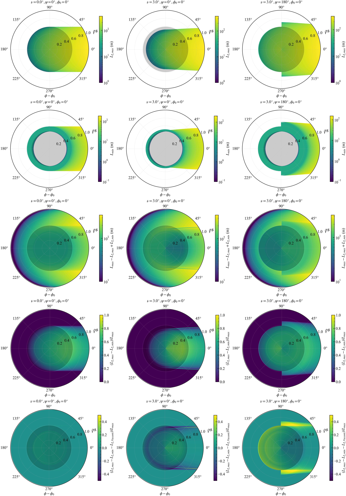
图注：Shadow parameters shown for muons with different normalized impact distances $\rho_R$ and impact angles $\phi_0$, for the parameters of an SCT. In the left panels, the muon is not inclined, in the center, it is inclined toward the left ($\psi =0^\circ$), and in the right panels, it is inclined to the right ($\psi=180^\circ$), with a fixed inclination angle $\nu=3^\circ$. Note that the azimuthal axis represents the photon emission angle $\phi-\phi_0$; see also Fig.~\(\ref{fig:Shadowcondition}\) for further details. From top to bottom, the panels show: the maximum shadow distance, $L_{2,\mathrm{max}}$; the minimum shadow distance, $L_{2,\mathrm{min}}$; the total imaged muon track length, $L_{\mathrm{max}}-L_{2,\mathrm{max}}+L_{2,\mathrm{min}}$; the relative shadow contribution with respect to the unshadowed case; and the relative shadow contribution compared with the simplified case of a hole of radius $R_\textit{sb}$ using Vacanti's formula. The grey shaded region in the center indicates the central hole in the primary mirror.
对应解读：建议重点查看的图表 3、4、5；关键图表逐图导读中关于双镜遮挡随环方位角变化、完整解与旧近似方法相对偏差、倾斜 μ 子参数扫描的部分。
入选理由：这张图同时给出 SCT 参数下的最大/最小遮挡距离、总成像 μ 子轨迹长度、相对遮挡贡献，以及相对于 Vacanti 简化孔径公式的偏差，直接对应日报强调的约 40% 偏差、方位角依赖遮挡和倾斜 μ 子导致的非均匀缺光，是支撑论文核心结论的最关键图。
来源与置信度：\(arxiv_source\)；high；\(arxiv_source\) / main.tex:figure[9]
Fig05
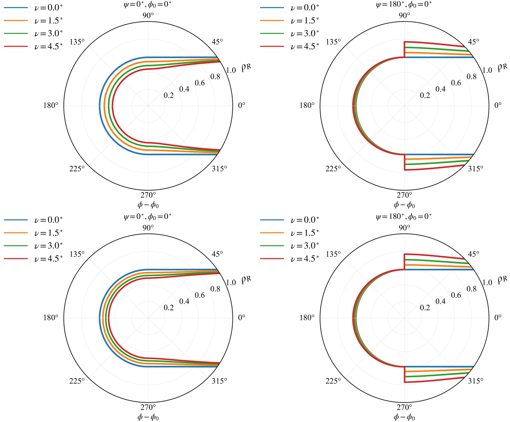
图注：Shadow condition (Eq.~\ref{eq:shadowcondition}) shown for muons with different normalized impact distances $\rho_R$, at fixed impact angle $\phi_0$, for the parameters of an SCT. Top figures neglect the effects of the M2 baffles, while the bottom figures include their contribution using Eq.~\(\ref{eq:shadowcondition2}.\) A Cherenkov angle of 1.3$^\circ$ is assumed. The region enclosed by the colored curves corresponds to trajectories experiencing shadowing along the muon path. \ccol{Different muon impact points have been simulated located on a line connecting the center with left-most part of the outer ring, corresponding to $\rho_R=1$. The radial axis $\rho_R$ denotes the impact distance on that line}. The azimuthal axis represents the photon emission angle ($\phi-\phi_0$). By convention, $(\phi-\phi_0=0^\circ)$ corresponds to the longest chord on the mirror; photons emitted in that direction are always shadowed, as they propagate toward the mirror center and thus toward the secondary mirror. Photons emitted in the opposite direction are shadowed only until the muon reaches $R_\mathrm{shadow}$. In the left-hand \(\ccol{panel},\) the muon is inclined toward the left with varying inclination angles $\nu$; in the right-hand panel, it is inclined toward the right. Sharp transitions are visible at $(\phi-\phi_0=90^\circ)$ and $(\phi-\phi_0=270^\circ)$ when the muon is inclined toward the secondary mirror, along with a slight increase of $R_\mathrm{shadow}$ for all directions of $(\phi-\phi_0)$.
对应解读：建议重点查看的图表 3 和 5；关键图表逐图导读中关于双镜遮挡随环方位角分布、baffle 造成缺光位置与宽度的部分。
入选理由：该图明确比较有无 M2 baffle 时的 shadow condition，并以 photon emission angle \(\phi-\phi_0\)、归一化撞击距离 (\
\(ho_R\)) 和 μ 子倾角 (\
u) 展示遮挡区域，最适合说明 baffle 如何在环方位角上产生非对称、突变的遮挡结构。
来源与置信度：\(arxiv_source\)；high；\(arxiv_source\) / main.tex:figure[5]
Fig06
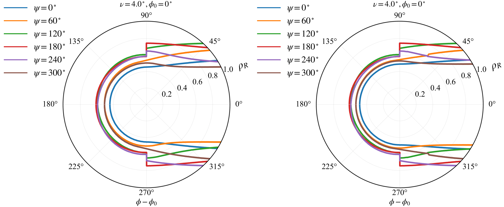
图注：Shadow condition (Eq.~\ref{eq:shadowcondition}) shown for muons with different normalized impact distances $\rho_R$, at fixed impact angle $\phi_0$, for the parameters of an SCT. The left panel neglects the effect of the M2 baffles, while the right panel includes their contribution using Eq.~\(\ref{eq:shadowcondition2}.\) Here, the muon has a fixed inclination angle of $\nu=4^\circ$, with varying azimuthal projections $\psi$. See also Figure~\(\ref{fig:Shadowcondition}.\)
对应解读：建议重点查看的图表 5；模型拟合段落中关于遮挡模型与 μ 子入射方向、撞击参数退化关系的讨论。
入选理由：该图固定倾角 (\
\(u=4^\circ\)) 并扫描 μ 子方位投影 \(\psi\)，直接展示遮挡边界如何随入射方向变化；它补充 Fig05 的倾角扫描，有助于判断偏差是否出现在实际事件选择常见的几何区域。
来源与置信度：\(arxiv_source\)；high；\(arxiv_source\) / main.tex:figure[6]
Fig04
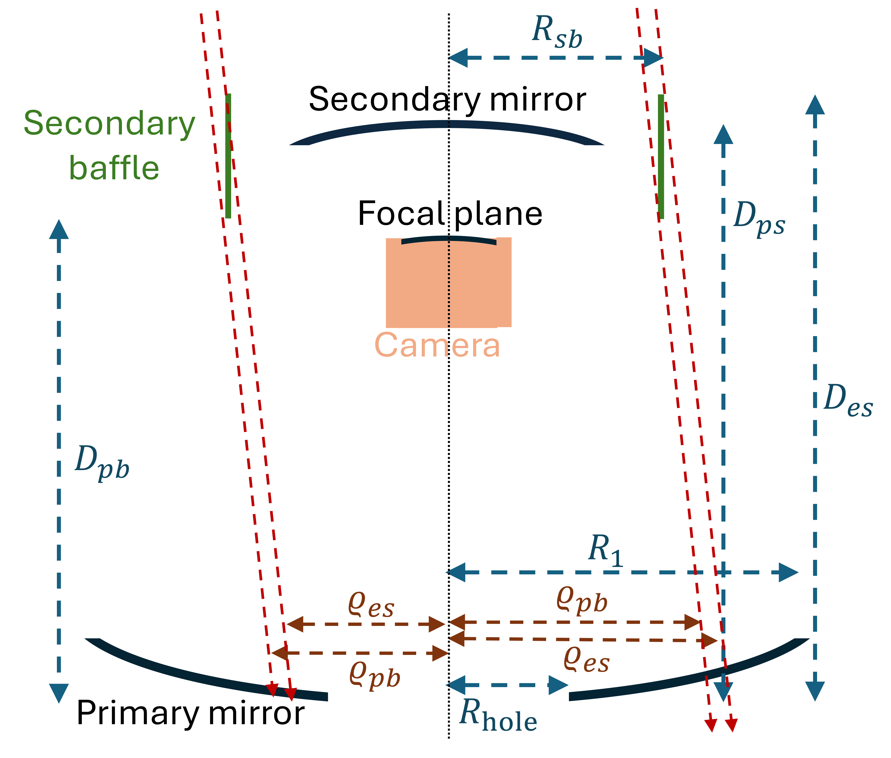
图注：Schematic illustration of the parameters used in this work for the dual-mirror telescope. The red arrows denote limiting cases of muons traversing the protective baffles of the secondary mirror.
对应解读：建议重点查看的图表 1；关键图表逐图导读中关于双镜望远镜几何、次镜、相机和 baffle 相对位置的部分。
入选理由：这张双镜望远镜几何示意图包含 secondary mirror protective baffles，并标出 μ 子穿过 baffle 的限制情形，比普通参数草图更直接支撑后文双镜遮挡公式和遮挡边界的物理解释。
来源与置信度：\(arxiv_source\)；high；\(arxiv_source\) / main.tex:figure[4]
Fig02
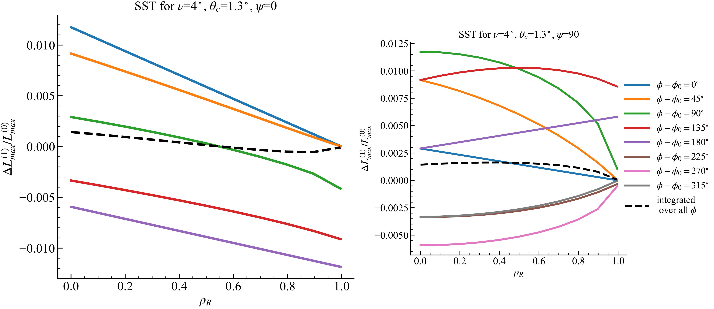
图注：Relative magnitudes of the first-order corrections $\Delta L_\mathrm{max}^{(1)}$ on the canonical version of $L_\mathrm{max}^{(0)}$~\(\citep{vacanti}\) for a maximally inclined muon ($\nu=4^\circ$) imaged by a Small-Sized-Telescope (SST) camera, for two different azimuthal projections $\psi$ of the muon incidence angle on ground and different photon emission angles with respect to the muon impact point on the mirror, $\phi-\phi_0$. The primary mirror of the SST has been approximated to a parabolic shape. The color-coded legend on the right side applies to both figures, however, some angles show a degeneracy and are therefore not visible on the left-hand side.
对应解读：建议重点查看的图表 6；关键图表逐图导读中关于主镜曲率对最大发射高度一阶修正的部分。
入选理由：该图量化 parabolic SST 主镜下 \(\Delta L_\mathrm{max}^{(1)}\) 相对于 canonical \(L_\mathrm{max}^{(0)}\) 的大小，并按 μ 子方位投影和发射角分解，是判断主镜曲率修正是否进入校准误差预算的主要证据。
来源与置信度：\(arxiv_source\)；high；\(arxiv_source\) / main.tex:figure[2]
Fig03
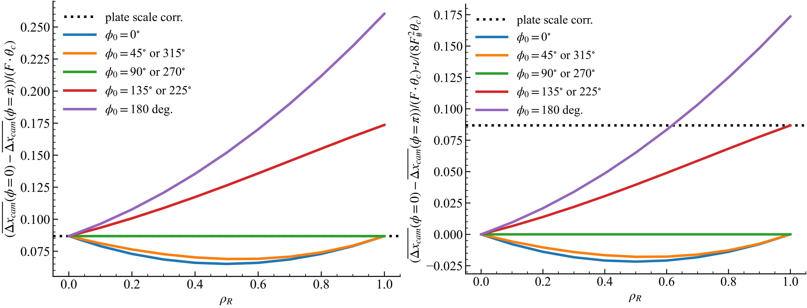
图注：Tangential-coma-induced bias between the outer and inner edges of the muon ring for a parabolic telescope with $f_\#=1.2$, muon Cherenkov angle $\theta_c=1^\circ$, and inclination angle $\nu=1^\circ$, shown without plate-scale correction (left) and with plate-scale correction (right). The expected bias for parallel light, typically used for a plate-scale correction, is indicated by the black dotted line. Note the different vertical-axis scales in the two panels.
对应解读：建议重点查看的图表 7；关键图表逐图导读中关于彗差导致单镜抛物面 μ 子环畸变的部分。
入选理由：该图展示 tangential coma 在 μ 子环内外边缘之间引入的偏差，并比较是否进行 plate-scale correction，能够支撑日报中关于环宽、环心或方位角残差可能与点扩散函数退化混淆的讨论。
来源与置信度：\(arxiv_source\)；high；\(arxiv_source\) / main.tex:figure[3]
强相关工作
这篇工作属于 IACT 仪器校准和 CTAO 双镜光学建模的交叉。直接相近的文献包括早期 μ 子环校准方法、H.E.S.S./MAGIC/VERITAS 的 μ 子效率监测、CTA 小尺寸双镜 Schwarzschild-Couder Telescope 的光学设计与原型测试，以及 CTAO 仪器响应函数的系统误差研究。建议检索关键词：“muon ring calibration imaging atmospheric Cherenkov telescope”、“IACT optical throughput muon calibration”、“Schwarzschild-Couder telescope muon rings”、“CTAO calibration optical throughput”。
与本文形成张力的不是某个天体解释，而是校准近似的适用性。旧方法在单镜或弱遮挡情形下足够好，但双镜系统中次镜和 baffle 引入方向相关阴影，可能使“有效孔径乘常数效率”的简化失效。后续需要用 CTAO 原型或早期阵列数据比较不同校准手段，例如 μ 子环、星场光度、激光/LED 标定和大气监测，检验本文解析修正是否减少跨望远镜的能量尺度差异。
同一事件 / 同类源线索：
相似工作：
（未提供）
基础理论 / 方法工作：
相反观点 / 张力线索：
（未提供）
4. Cosmological $γ$-$γ$ Pair-Production Background
- 来源：arXiv / astro-ph.HE
- 链接：https://arxiv.org/abs/2607.14276v1
- 作者：Mika A. Gelowicz, Thomas Siegert, Saurabh Mittal, Laura Eisenberger, Dimitris Tsatsis, Niklas C. Bauer, Rudi Reinhardt, Patrik Ehrmann
- 评分：novelty 8/10，importance 8/10，relevance 10/10，final 9.70/10
- 推荐理由：计算宇宙光子背景自相互作用产生的γ-γ对产生、正负电子传播及MeV-GeV次级辐射，声称可贡献宇宙伽马射线背景20%左右；直接影响CGB/MeV背景建模和伽马射线天文解释，优先级高。
中文题目：宇宙学尺度的 \(\gamma\)-\(\gamma\) 对产生背景
做了什么：这篇论文计算了宇宙光子背景自身发生 \(\gamma\gamma\to e^+e^-\) 反应时，在 \(z\leq 10\) 范围内产生的正负电子对、随后的湮灭辐射、逆康普顿辐射和轫致辐射。作者把从微波到高能 \(\gamma\) 射线的宇宙光子背景表示为一组随红移演化的灰体成分，显式积分能量、角度和 \(\gamma\)-\(\gamma\) 截面，再把产生的电子对沿宇宙学传播并计算能量损失。主要结论是：对产生率在 \(z\simeq 2.7\) 达峰，局域发射率约从 \(2\times10^{-36}\,\mathrm{cm^{-3}\,s^{-1}}\) 升至 \(1.8\times10^{-31}\,\mathrm{cm^{-3}\,s^{-1}}\)，总宇宙对产生率量级为 \(10^{54}\,\mathrm{s^{-1}}\)。这些二级粒子的逆康普顿辐射可在 \(1\,\mathrm{MeV}\) 到 \(1\,\mathrm{GeV}\) 对宇宙 \(\gamma\) 射线背景贡献约 \(20\%\)，因此不是一个可随意忽略的小修正。
为什么重要：正电子起源和 \(\mathrm{MeV}\) 波段宇宙 \(\gamma\) 射线背景都是高能天体物理中的长期缺口。通常我们把 \(\gamma\)-\(\gamma\) 吸收看成高能光子传播中的衰减项，但这篇文章强调：被吸收的能量不会消失，而会转化为宇宙学分布的 \(e^\pm\) 与二级辐射。这给出了一个由已存在的宇宙光子场决定的“最低背景项”，会影响对活动星系核、星暴星系、暗物质湮灭或早期黑洞等贡献的反演。
理论 / 观测 / 仪器方法价值：理论上，本文把宇宙光子背景、\(\gamma\)-\(\gamma\) 截面、电子对传播和宇宙 \(\gamma\) 射线背景联系成一个闭合预算；观测上，它为解释 \(\mathrm{MeV}\)-\(\mathrm{GeV}\) 背景提供了一个应纳入的基线模板；方法上，它展示了如何从多成分灰体光子场出发构造红移依赖的二级辐射背景，可用于未来 \(\mathrm{MeV}\) 探测器、\(\gamma\) 射线背景分解和星系外背景光模型检验。
为什么应该关注：如果你研究宇宙 \(\gamma\) 射线背景、星系外背景光、正电子预算、\(\mathrm{MeV}\) 天文学或高能光子的宇宙学传播，这篇文章提醒你：传播吸收本身会生成一个非局域、非点源的二级背景。忽略它可能会把一部分已由标准辐射场决定的辐射误归因给未解析源族、暗物质或仪器系统误差。
展开详细解读：文章讲解、背景、理论、重点章节、图表与相关工作
文章详细讲解
科学问题：宇宙中正电子的来源仍不完整，尤其是把银河系内 \(511\,\mathrm{keV}\) 湮灭、星系外 \(\mathrm{MeV}\) 背景和高能光子传播联系起来时，常见模型往往只关注源端注入，而较少系统计算宇宙光子背景自身的 \(\gamma\)-\(\gamma\) 相互作用。本文要问的是：如果把整个宇宙光子背景，从低能的宇宙微波背景、红外和光学星系外背景光，一直到 \(\mathrm{X}\) 射线和 \(\gamma\) 射线背景，都作为一个随红移演化的目标场和入射场，那么它们彼此碰撞产生的 \(e^+e^-\) 数量有多大？这些电子对最终会给今天观测到的宇宙 \(\gamma\) 射线背景留下多强的二级辐射？
作者怎么做：论文把宇宙光子背景分解为一组灰体函数，每个灰体成分按源类型的光度函数和红移演化处理。这样的表示既比单一黑体灵活，也比直接拼接观测数据更适合做跨红移积分。随后，作者对 \(\gamma\gamma\to e^+e^-\) 的能量阈值、相互作用角度和 Breit-Wheeler 截面做全积分，得到每个红移处单位体积、单位时间的对产生率。产生出的 \(e^\pm\) 再在宇宙学背景中传播，经历红移损失、逆康普顿损失、轫致辐射和湮灭等过程，最后把各红移层的辐射沿视线积分到 \(z=0\)。
关键结果：他们得到的对产生发射率随红移强烈演化，在 \(z=0\) 约为 \(2\times10^{-36}\,\mathrm{e^\pm\,cm^{-3}\,s^{-1}}\)，到 \(z\simeq2.7\) 达到 \(1.8\times10^{-31}\,\mathrm{e^\pm\,cm^{-3}\,s^{-1}}\)，之后下降。这个峰值红移并不意外，因为它大致对应宇宙恒星形成、星系辐射场和高能背景活动较强的时期。积分到 \(z=10\) 后，总对产生率为 \(10^{54}\,\mathrm{e^\pm\,s^{-1}}\) 量级。更重要的是，二级逆康普顿辐射在 \(1\,\mathrm{MeV}\) 至 \(1\,\mathrm{GeV}\) 可成为宇宙 \(\gamma\) 射线背景的显著部分，最高可达总背景的约 \(20\%\)。这意味着它足以改变我们对 \(\mathrm{MeV}\) 背景缺口的理解，而不是只在极高能传播中表现为吸收修正。
局限和下一步：该结果依赖宇宙光子背景的多成分模型、各源族光度函数的红移外推、高红移高能背景的不确定性，以及电子对传播中对星系际介质和磁场环境的简化。论文给出的是一种由已知光子场诱导的最低二级辐射水平，但不是最终的全背景分解。下一步应把这个模板与未解析活动星系核、星暴星系、Ia 型超新星、结构形成激波、暗物质模型以及未来 \(\mathrm{MeV}\) 任务的响应函数一起做联合拟合，并检查各能段观测归一化之间是否仍存在张力。
关键结果是怎么做出来的
数据和样本选择的核心不是单个瞬变事件，而是全天各向同性宇宙光子背景的谱能量密度模型。作者将宇宙光子背景拆成多个灰体成分，并让这些成分随红移演化，覆盖 \(z=0\) 到 \(z=10\)。这相当于建立一个用于积分的“光子样本”：每个红移处都有不同能量 \(\epsilon\) 的光子数密度 \(n(\epsilon,z)\)，这些光子既可作为高能入射光子，也可作为低能靶光子。读者需要注意，本文的样本量不是事件计数，而是由背景辐射场模型给出的连续相空间密度。
主要证据链从 \(\gamma\)-\(\gamma\) 对产生阈值开始。只有满足质心能量超过 \(2m_ec^2\) 的光子对才能产生 \(e^+e^-\)。作者对两个光子的能量、夹角和截面加权积分，得到每个红移处的对产生发射率。文摘中报告的数值给出了最直接的量级检验：\(z=0\) 的发射率约 \(2\times10^{-36}\,\mathrm{cm^{-3}\,s^{-1}}\)，峰值在 \(z=2.7\) 附近达到 \(1.8\times10^{-31}\,\mathrm{cm^{-3}\,s^{-1}}\)。这说明主贡献来自宇宙辐射场最活跃的时期，而不是今天的局域宇宙。
统计显著性在这类理论背景计算中不是传统的“发现 \(N\) 个事件后给出 \(\sigma\)”形式，而是模型分量与已测宇宙 \(\gamma\) 射线背景之间的强度比较。关键诊断应包括：二级逆康普顿、湮灭和轫致辐射分别对观测背景的比例；模型总和是否超过 COMPTEL、SMM、EGRET、Fermi-LAT 等背景测量；在 \(1\,\mathrm{MeV}\) 到 \(1\,\mathrm{GeV}\) 区间对总背景贡献约 \(20\%\) 的结论是否落在观测误差与模型系统误差允许范围内。若论文给出 \(\chi^2\)、残差或背景分量比较图，应优先看这些图而非只看峰值对产生率。
支持结论的图表应至少包括红移依赖的对产生发射率、不同能量段或不同灰体成分的贡献、电子对能量损失通道、以及今天观测到的二级辐射谱与宇宙 \(\gamma\) 射线背景数据的对比。最重要的不是某一个归一化数值，而是谱形：逆康普顿分量是否自然落入 \(\mathrm{MeV}\)-\(\mathrm{GeV}\) 区间，湮灭线及连续谱是否被宇宙学红移展宽，轫致辐射是否相对次要，以及这些分量叠加后是否能缩小已有 \(\mathrm{MeV}\) 观测与源族模型之间的差距。
系统误差主要来自三个层面。第一，宇宙光子背景在远红外、\(\mathrm{MeV}\) 和高红移段都并非精确已知，灰体分解会影响阈值匹配和反应率。第二，高能背景光子的源族演化会改变 \(z\sim2\) 附近的峰值和高红移尾部。第三，电子对传播涉及星系际磁场、气体密度、离子化状态和能量损失函数，若这些环境量变化较大，二级辐射的角分布和谱形也会变化。稳健性检验应包括改变背景光模型、关闭或开启特定能量损失通道、比较不同红移上限、以及检查是否违反已知的宇宙 \(\gamma\) 射线背景强度上限。
展开背景、理论、公式、模型、章节和图表导读
背景知识
研究对象是宇宙光子背景，即贯穿宇宙的各向同性或近各向同性辐射场。它包括宇宙微波背景、星光和尘埃再辐射形成的星系外背景光、宇宙 \(\mathrm{X}\) 射线背景、以及 \(\gamma\) 射线背景。不同波段的光子数密度和能量密度相差很大，但在 \(\gamma\)-\(\gamma\) 对产生中，重要的是高能光子与低能光子的阈值匹配，因此低能背景和高能背景必须放在同一个相互作用框架内。
历史上，\(\gamma\)-\(\gamma\) 对产生最常被用于解释 TeV 光子从遥远 blazar 传播到地球时的吸收。高能光子与红外或光学背景光相互作用，导致源谱出现能量和红移依赖的衰减，这也是用 TeV blazar 约束星系外背景光的一种方法。但这种视角往往把相互作用看作“光子消失”。本文关心的是另一半账本：吸收产生的 \(e^+e^-\) 会继续辐射，构成宇宙 \(\gamma\) 射线背景的一部分。
为什么现在值得重新看？一方面，\(\mathrm{MeV}\) 天文学正在进入重新建设阶段，AMEGO、e-ASTROGAM、COSI 等概念或任务推动人们重新审视 \(\mathrm{MeV}\) 背景的成分。另一方面，Fermi-LAT 已经较好测量了 \(\mathrm{GeV}\) 区间的各向同性背景和未解析源贡献，但 \(\mathrm{MeV}\) 到亚 \(\mathrm{GeV}\) 之间仍存在模型连接不顺的问题。若存在一个由宇宙光子背景自相互作用产生的基线项，它会直接影响这些源族预算。
该领域一个常见误区是把“宇宙 \(\gamma\) 射线背景”当作若干源族光度函数的简单叠加，而忽略传播过程本身也会生成新光子。另一个误区是认为 \(\gamma\)-\(\gamma\) 反应只对 TeV 以上光子重要；实际上，阈值由两光子能量乘积和碰撞角决定，高能背景的某些部分与低能背景相互作用后产生的电子对，可通过逆康普顿把能量重新分配到 \(\mathrm{MeV}\)-\(\mathrm{GeV}\) 区间。还有一个容易混淆的问题是正电子“数量”与“可见 \(511\,\mathrm{keV}\) 线”并不等价；星系外产生的正电子湮灭信号会被红移展宽，并且很多能量先通过连续过程释放。
基础理论 / 方法脉络
最基本的物理图像是两个光子在质心系中具有足够能量时，可以通过量子电动力学过程产生一对电子和正电子。由于光子静质量为零，单个光子在真空中不能自发裂变为 \(e^+e^-\)，但两个光子的总四动量可以提供非零质心能量。这个反应的效率由 Breit-Wheeler 截面控制，截面在阈值处为零，随后上升并在若干倍阈值附近达到峰值，再在更高能量处缓慢下降。
宇宙学环境中，反应率由光子相空间密度决定。一个能量为 \(E\) 的高能光子与能量为 \(\epsilon\) 的背景光子碰撞，若夹角为 \(\theta\)，阈值大致由 \(E\epsilon(1-\cos\theta)\) 决定。因此同一高能光子会优先与特定波段的背景光子相互作用。对全天各向同性背景而言，需要对碰撞角做平均；对红移演化背景而言，还要把各红移处的光子能量和密度演化纳入。
本文的模型假设是把宇宙光子背景表示为多组灰体辐射。灰体可以理解为带有温度、归一化和发射率修正的黑体近似，适合描述尘埃、恒星集成光或其他宽谱背景成分。每个成分不是静止不变的，而是根据相应源族的光度函数随红移演化。这样得到的 \(n(\epsilon,z)\) 是后续所有积分的输入，也是在不同背景模型之间产生系统差异的主要来源。
产生的 \(e^\pm\) 不会原地立即全部湮灭。它们会经历逆康普顿散射，把低能背景光子提升到更高能；在有气体的介质中发生轫致辐射；在能量降低后可能形成湮灭线和正电子素连续谱；还会因宇宙膨胀发生绝热能量损失。本文把这些损失作为宇宙学、星系际的能量损失函数处理，并按红移逐层计算二级辐射，再积分为今天的背景强度。
主要退化和系统误差来自背景光强度、红移演化和能损环境。增加高红移高能光子密度会提高对产生率，但类似效果也可能由增强低能靶光子密度造成；二者在积分结果中有退化。逆康普顿谱形受电子注入谱和靶光子谱共同控制，因此某个 \(\mathrm{MeV}\) 过量既可能来自更多电子对，也可能来自更强的低能光子场。观测上还要区分真正的各向同性背景、银河前景残差和未解析点源贡献。
公式与推导
第一步是写出两光子体系的不变量。设高能光子能量为 \(E\)，背景光子能量为 \(\epsilon\)，二者夹角为 \(\theta\)，令 \(\mu=\cos\theta\)，则质心能量平方为
这里 \(s\) 是 Mandelstam 不变量，适用于局域惯性系中的两光子碰撞。对产生阈值要求质心能量至少为两个电子静能，即
因此给定 \(E\) 和 \(\mu\) 时，靶光子最低能量为
这个式子说明正碰撞 \((\mu\simeq-1)\) 最有效，而同向光子 \((\mu\simeq1)\) 几乎不能达到阈值。
第二步是截面。定义
其中 \(\beta c\) 是产生出的电子或正电子在质心系中的速度。Breit-Wheeler 截面可写为
这里 \(\sigma_T\) 是 Thomson 截面。该式在阈值 \(\beta=0\) 处为零，在中等 \(s\) 达峰，是本文角度和能量积分的物理核心。
第三步是从单个光子推广到背景场。若各向同性光子数密度为 \(n(E,z)\)，单位能量间隔内的对产生率密度可形式化写为
因子 \((1-\mu)c\) 是两光子的相对速度因子，前面的 \(1/2\) 避免在同一光子背景内双重计数。本文的主要数值结果，即 \(z\) 依赖的对产生发射率，正是这类积分在多灰体 \(n(E,z)\) 上的实现。
第四步是说明灰体背景如何进入。一个灰体成分可写成近似形式
其中 \(A_i(z)\) 是归一化，\(T_i(z)\) 是有效温度，\(\eta_i(\nu,z)\) 是频率依赖的灰体修正。强度与数密度的关系为
这两式把观测或光度函数给出的辐射背景转换为反应率积分所需的光子数密度。
第五步是电子对能量损失。若电子或正电子洛伦兹因子为 \(\gamma_e\)，在各向同性辐射场能量密度 \(u_{\rm rad}\) 中的 Thomson 极限逆康普顿损失率为
同时宇宙膨胀带来绝热损失
实际计算中还可加入轫致辐射、库仑损失和湮灭项；哪一项主导决定二级光子谱形。
第六步是把逆康普顿发射与观测背景联系起来。在 Thomson 近似下，被散射光子的特征能量约为
这解释了为什么由高能光子吸收产生的 \(e^\pm\) 能把微波、红外或光学背景重新加工到 \(\mathrm{MeV}\)-\(\mathrm{GeV}\) 区间。若共动体发射率为 \(j_E(E,z)\)，今天观测到的各向同性强度可写为
这里 \(E_0\) 是今天观测能量，\((1+z)E_0\) 是发射能量，分母中的 \((1+z)\) 体现能量间隔和时间膨胀修正。该式是把各红移层二级辐射加到宇宙 \(\gamma\) 射线背景上的关键桥梁。
第七步是与观测比较。若观测背景强度为 \(I_k^{\rm obs}\)，模型为 \(I_k^{\rm mod}(\boldsymbol{\Theta})\)，协方差为 \(C_{kl}\)，常用残差统计量为
这里 \(\boldsymbol{\Theta}\) 包括灰体归一化、源族演化和能损参数。即使本文重点是理论预测，这个式子也说明了应如何检验“二级背景占 \(20\%\)”是否改善或破坏对宇宙 \(\gamma\) 射线背景的拟合。
模型拟合 / 应用方法
本文本身更接近前向建模而不是从数据直接反演参数。拟合量的起点是宇宙光子背景的多灰体分解：每个成分有温度、归一化、谱形修正和红移演化。实际应用中，这些参数可以来自星系光度函数、背景光测量、源计数和已有的 \(\gamma\) 射线背景模型；然后固定或带先验地传播到 \(\gamma\)-\(\gamma\) 对产生率和二级发射谱。
若要把本文模型用于观测拟合，最自然的似然是对宇宙 \(\gamma\) 射线背景谱点构造高斯或近似高斯似然，同时把银河前景模型、仪器本底、未解析源族和本文的二级背景作为分量相加。拟合参数可包括各源族归一化、二级背景整体缩放、星系外背景光模型选择、以及 \(\mathrm{MeV}\) 仪器交叉定标因子。关键不是只让总谱过点，而是检查残差是否在 \(\mathrm{MeV}\)-\(\mathrm{GeV}\) 区间出现系统性弯曲。
参数退化非常明显。增强活动星系核或星暴星系未解析分量，可能在某些能段模拟二级逆康普顿背景；提高高红移光子背景归一化也可能与改变电子能损函数产生相似谱形。\(\mathrm{MeV}\) 区间的仪器归一化不确定性还会和模型归一化相互吸收。因此，最好联合使用谱形、各向异性、源计数、红移演化和多波段背景光约束，而不要只依赖总强度。
残差诊断应特别关注三点。第一，加入本文二级分量后，\(\mathrm{MeV}\) 背景模型是否从系统性偏低变为更平滑地连接到 \(\mathrm{GeV}\) 背景。第二，模型是否在 \(\mathrm{GeV}\) 以上超过 Fermi-LAT 各向同性背景，若超过则说明高能注入或背景光模型过强。第三，湮灭相关谱形是否与观测上对红移展宽 \(511\,\mathrm{keV}\) 或正电子素连续谱的限制相容。
模型可能失败的地方包括：灰体分解不能准确描述真实宇宙光子背景的窄谱或非热成分；高红移 \(\gamma\) 射线背景外推过于乐观；星系际介质密度和磁场影响电子对传播，使发射不再简单各向同性；以及银河前景扣除误差在 \(\mathrm{MeV}\) 区间被误认为星系外背景。对未来实际拟合而言，本文模型应作为一个物理模板进入联合后验，而不是作为固定无误差的背景常数。
重点章节 / 结果段落怎么读
数据/背景光模型部分应先读。重点看作者如何定义宇宙光子背景、采用多少个灰体成分、每个成分对应哪些源族，以及红移演化如何由光度函数给出。这里决定了 \(n(E,z)\)，也决定了后面对产生率的所有归一化和阈值匹配。
方法部分应关注 \(\gamma\)-\(\gamma\) 积分。读者应检查是否完整处理了角度因子、能量阈值、截面形状和双重计数问题。若有数值积分细节或能量网格说明，也应看其是否足以覆盖从微波到 \(\gamma\) 射线的巨大动态范围。
电子对传播和二级辐射部分是本文从“吸收”走向“背景贡献”的关键。应看作者如何写能量损失函数，是否包含逆康普顿、轫致辐射、湮灭和宇宙学红移损失，以及每一过程在哪些能区主导。这个部分直接影响 \(1\,\mathrm{MeV}\) 到 \(1\,\mathrm{GeV}\) 的结论。
结果部分应重点读红移发射率、总对产生率和今天的二级辐射谱。文摘给出的峰值 \(z=2.7\) 和总率 \(10^{54}\,\mathrm{s^{-1}}\) 是读图时的校准点。若图中分解了不同光子背景成分或不同红移壳层，应优先理解哪些组合贡献最大。
讨论和稳健性检验部分应看作者如何处理与已有宇宙 \(\gamma\) 射线背景测量的关系，特别是是否会超出观测总背景、是否缓解 \(\mathrm{MeV}\) 缺口、以及对未来任务的可检验预言。附录若包含截面、积分网格、灰体参数或不同背景模型比较，也值得仔细核对。
建议重点查看的图表
-
宇宙光子背景谱及灰体分解图：看横轴能量或频率覆盖范围、各灰体成分归一化、模型是否穿过已有背景测量；尤其注意 \(\mathrm{IR}\)、光学、\(\mathrm{X}\) 射线和 \(\gamma\) 射线段的不确定区。
-
对产生率随红移变化图：看 \(z=0\) 到 \(z=10\) 的发射率曲线是否在 \(z\simeq2.7\) 达峰，峰值和局域值是否对应文摘数值；检查高红移尾部是否对总率有较大贡献。
-
对产生率的能量或成分分解图：看哪些入射光子和靶光子组合主导，例如高能 \(\gamma\) 与红外/光学背景，或其他波段组合；这决定了结论对不同背景光模型的敏感性。
-
电子对能量损失通道图：看逆康普顿、轫致辐射、湮灭和绝热损失的相对强弱，尤其是哪些电子能量和红移区间把功率送入 \(\mathrm{MeV}\)-\(\mathrm{GeV}\) 波段。
-
今天二级辐射谱与宇宙 \(\gamma\) 射线背景观测对比图：看模型分量是否在 \(1\,\mathrm{MeV}\) 到 \(1\,\mathrm{GeV}\) 达到约 \(20\%\)，同时不超过总背景数据点及误差带。
-
残差或比例图：若有二级背景占总背景比例随能量变化的图，应检查峰值能量、宽度和不确定带；这比绝对强度图更能说明它是否真能填补 \(\mathrm{MeV}\) 模型缺口。
-
稳健性或模型比较表：看更换宇宙光子背景模型、红移上限、光度函数演化或能损假设后，总对产生率和 \(\mathrm{MeV}\)-\(\mathrm{GeV}\) 贡献变化多大。
关键图表逐图导读
图 1：建议把它理解为宇宙光子背景输入图。横轴通常应是光子能量、频率或波长，纵轴可能是 \(\nu I_\nu\)、能量密度或光子数密度。数据点代表不同波段的背景测量或约束，模型线代表多个灰体成分及其总和。读图陷阱是不要只看能量密度峰；\(\gamma\)-\(\gamma\) 反应对光子数密度和阈值匹配敏感，因此某些看似能量密度不高的波段仍可能重要。
图 2：应是对产生发射率随红移变化的核心图。横轴为 \(z\)，纵轴为 \(\dot n_{e^\pm}\) 或相近的单位体积单位时间产生率，通常会用对数坐标。关键是曲线从 \(z=0\) 的极低值快速上升，在 \(z\simeq2.7\) 附近达到 \(1.8\times10^{-31}\,\mathrm{cm^{-3}\,s^{-1}}\)，之后下降。读图时要注意纵轴单位是否计每个电子、每个正电子，还是每一对；这会带来因子 \(2\) 的解释差异。
图 3：若论文给出能量-红移二维图或不同背景成分贡献图，应看颜色或曲线标示的主贡献区域。横轴可能是红移或电子注入能量，纵轴可能是光子能量，颜色表示反应率。主要结论是哪些能段组合控制总率。读图陷阱是积分贡献不等于局部最大值；一个窄能区的高反应率未必主导总发射，必须结合相空间体积和背景光子密度。
图 4：电子对传播或能量损失图通常以电子能量或 \(\gamma_e\) 为横轴，纵轴为损失时间、损失率或分支比例。模型线可能分别表示逆康普顿、轫致辐射、湮灭和绝热冷却。若逆康普顿在相关能量范围占优，就支持二级 \(\mathrm{MeV}\)-\(\mathrm{GeV}\) 背景的主要解释。读图时要确认是否处于 Thomson 极限；若进入 Klein-Nishina 区域，简单 \(\gamma_e^2\) 标度会失效。
图 5：最重要的观测对比图应把今天的二级辐射强度与宇宙 \(\gamma\) 射线背景数据放在一起。横轴为观测能量 \(E_0\)，纵轴为 \(E_0^2 I_{E_0}\)、\(\nu I_\nu\) 或微分强度。数据点可能来自 \(\mathrm{MeV}\) 和 \(\mathrm{GeV}\) 仪器，模型线分为逆康普顿、湮灭、轫致辐射及总和。关键读法是看二级总和在 \(1\,\mathrm{MeV}\) 到 \(1\,\mathrm{GeV}\) 是否达到总背景约 \(20\%\)，且不造成超额。
图 6：若有比例图或残差图，横轴为能量，纵轴为 \(I_{\rm secondary}/I_{\rm CGB}\) 或 \((I_{\rm obs}-I_{\rm model})/\sigma\)。这张图最能判断“填补缺口”是否可信。若比例只在观测误差很大的区间高，结论应谨慎；若加入该分量后残差在多个相邻能段系统性减小，则说明它是有物理价值的背景项。
论文原图 / 可嵌入图片
Fig10
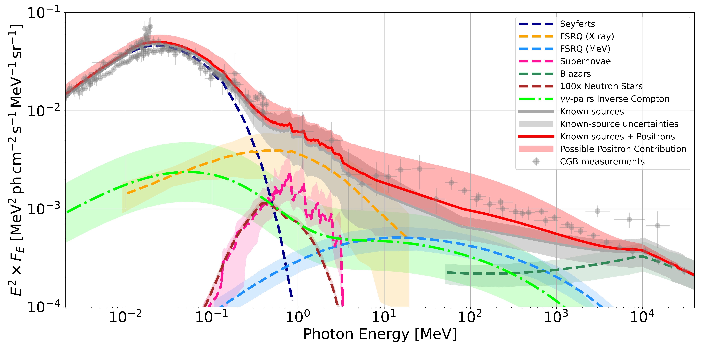
图注：{A composition of the CPB from $\SI{20}{keV}$ to $\SI{40}{GeV}$. The individual contributions from established astrophysical source populations are shown separately with dashed lines, including Seyfert galaxies (darkblue) from \(\citet{Gilli+2007},\) X-ray FSRQs (orange) from \(\citet{Ajello2009},\) FSRQs (blue) from \(\citet{Ajello2012},\) supernovae (pink) from \(\citet{Ruiz-Lapuente2016},\) blazars (darkgreen) from \(\citet{Qu+2019},\) and neutron stars (brown) from \(\citet{Ruiz-Lapuente_2020}.\) Shaded regions indicate uncertainties from the respective paper. The combined intensity is represented by a gray line. The emission from Inverse Compton scattering, which is the dominant energy loss process of positrons, is shown as a green dash-dotted line. The sum of the known-source background and the IC contribution defines the total expected emission, shown as the red band. The red shaded region indicates the uncertainty range associated with the IC component, corresponding to 0.075–5.1 times the fiducial IC contribution added to the known-source background. Measurements of the cosmic gamma-ray background from multiple instruments are overlaid as data points with corresponding error bars from \(\citet{Ajello2009}\) with some additional data points from \citet{Ackermann_2015}.}
对应解读：对应“建议重点查看的图表”第5、6、7点，以及“图5/图6”式的今天二级辐射谱、已知源背景、观测数据和不确定带对比；也直接支撑模型拟合段落中关于MeV–GeV缺口、未解析源族退化和IC分量不确定性的讨论。
入选理由：这是最能检验论文核心结论的图：把20 keV到40 GeV的已知天体源背景、二级逆康普顿贡献、总预期背景红色不确定带和多仪器CGB观测点放在同一图中。相比单独的二级谱图，它更直接回答二级分量是否可填补MeV–GeV背景缺口、是否超过观测误差，以及IC归一化不确定性对结论有多大影响。
来源与置信度：\(arxiv_source\)；high；\(arxiv_source\) / main.tex:figure[10]
Fig09
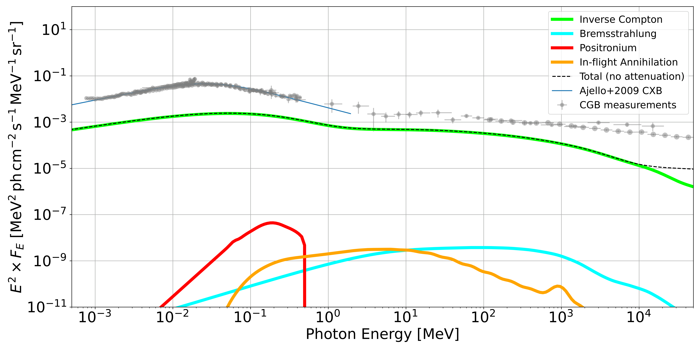
图注：Secondary emission from pairs produced via $\gamma$-$\gamma$ absorption of the CPB with itself. The total, unabsorbed, spectrum is shown as dashed black line. The emission is dominated by Inverse Compton scattering off the CPB fields (green), with minor contributions from positron annihilation (red and orange) and bremsstrahlung (cyan). Previous CGB measurements are shown as gray data points from a compilation by \(\citet{Ajello2009}\) {and \citet{Ackermann_2015}}.
对应解读：对应“建议重点查看的图表”第5点和“关键图表逐图导读”中的图5：今天二级辐射谱与宇宙γ射线背景观测对比，分解逆康普顿、湮灭和轫致辐射贡献。
入选理由：该图直接展示由γ-γ吸收产生的电子对所形成的二级辐射总谱及各物理通道，其中绿色IC分量占主导，红/橙湮灭和青色轫致辐射为次要贡献，并叠加CGB观测点。它是判断论文“1 MeV到1 GeV可贡献约20%背景”这一结论的核心物理图。
来源与置信度：\(arxiv_source\)；high；\(arxiv_source\) / main.tex:figure[9]
Fig06
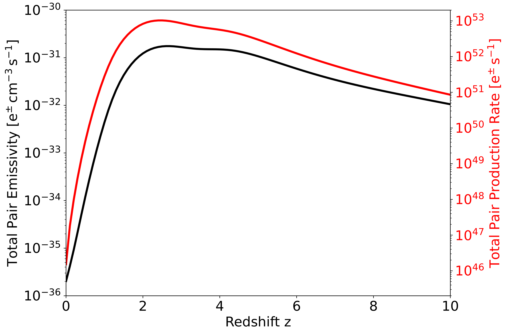
图注：Total pair emissivity (left axis, black) and total pair production rate (right axis, red) from $\gamma$-$\gamma$ pair-production as a function of redshift per redshift bin of $\Delta z = 0.1$. The local contribution therefore integrates up to a distance of $\approx 200$\,Mpc.
对应解读：对应“建议重点查看的图表”第2点和“关键图表逐图导读”中的图2：对产生发射率和总对产生率随红移变化。
入选理由：该图给出总对产生发射率和总对产生率随红移的演化，是验证文摘数值的关键图，包括局域低发射率、随红移快速上升、在宇宙活动高峰附近达到峰值以及高红移回落。它直接支撑总率约10^54 e± s^-1和z≈2.7峰值的核心结果。
来源与置信度：\(arxiv_source\)；high；\(arxiv_source\) / main.tex:figure[6]
Fig01
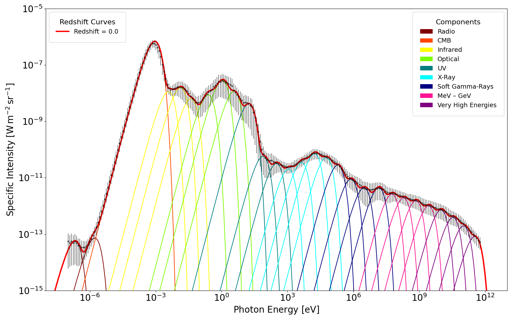
图注：CPB spectrum \(\citep\)[black data points; data and uncertainties taken from][]{Hill2018} together with decomposition into blackbody functions. The colors indicate the different ranges (see Tab.\,\ref{tab: sources and ranges CPB}).
对应解读：对应“建议重点查看的图表”第1点和“关键图表逐图导读”中的图1：宇宙光子背景谱及多黑体/灰体分解输入。
入选理由：本文所有γ-γ对产生率和二级辐射都建立在CPB谱分解之上。该图展示观测数据点与黑体成分分解，能检查不同波段背景模型是否合理覆盖红外、光学、X射线和γ射线段，是理解后续反应率敏感性的基础输入图。
来源与置信度：\(arxiv_source\)；high；\(arxiv_source\) / main.tex:figure[1]
Fig04
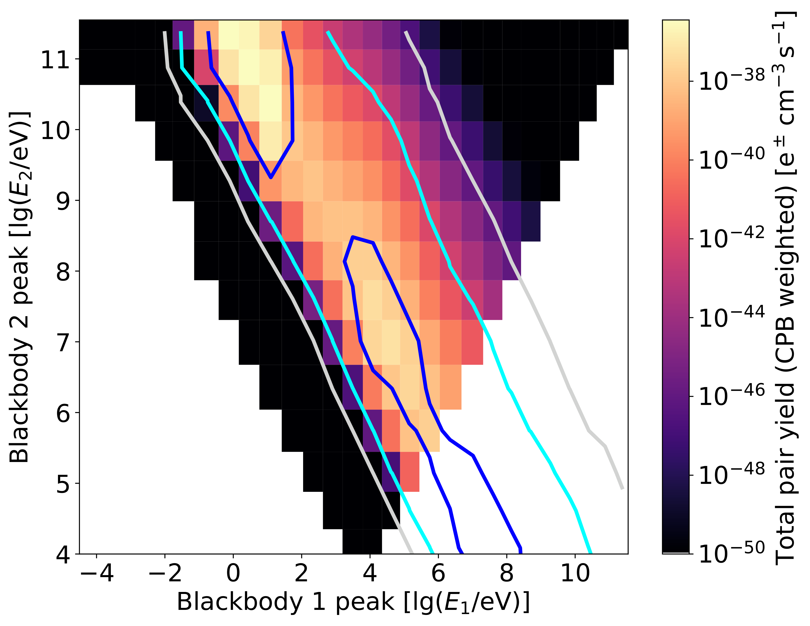
图注：Pair yield contribution from diluted blackbodies interacting among themselves as a function of blackbody temperature for $z=0$. The levels are $10^{-38}$ (blue), $10^{-42}$ (cyan), and $10^{-46}\,\mathrm{e^\pm\,cm^{-3}\,s^{-1}}$ (gray), respectively. The two maxima indicate the high-energy bump above 1\,GeV (top left) and the low-energy, power-law-index $-1$ tail (bottom right). The peak temperature of the blackbodies is calculated via $E_{1/2} \approx 2.82\,k_\mathrm{B}T_{1/2}$ for illustration purpose.
对应解读：对应“建议重点查看的图表”第3点和“关键图表逐图导读”中的图3：不同黑体温度成分相互作用对对产生率的贡献分解。
入选理由：该图用二维温度空间展示不同CPB成分彼此碰撞产生电子对的贡献，直接揭示哪些高能和低能背景组合主导γ-γ反应。它比单一注入谱更能说明结论对不同背景光模型和波段归一化的敏感性。
来源与置信度：\(arxiv_source\)；high；\(arxiv_source\) / main.tex:figure[4]
Fig08
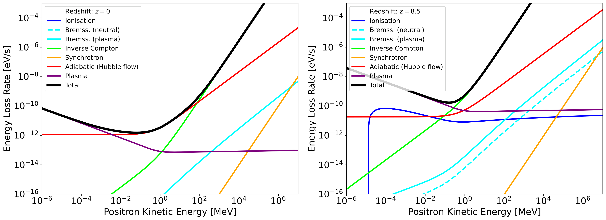
图注：Cosmological energy loss rates for different processes at redshift $z=0$ (top) and $z=8.5$ (bottom).
对应解读：对应“建议重点查看的图表”第4点和“关键图表逐图导读”中的图4：电子对传播中的宇宙学能量损失通道。
入选理由：该图比较z=0和高红移z=8.5下不同能量损失过程的速率，能够判断逆康普顿、轫致辐射、湮灭和其他损失在不同电子能量与红移下的相对重要性。它为为什么二级辐射主要由IC主导并落入MeV–GeV波段提供物理依据。
来源与置信度：\(arxiv_source\)；high；\(arxiv_source\) / main.tex:figure[8]
强相关工作
这篇工作与传统的星系外背景光吸收研究直接相关。经典研究通常利用 blazar 或伽马暴的高能谱衰减来约束 \(\gamma\)-\(\gamma\) 光深，关注的是原初光子的消光；本文则把消光产生的电子对和二级辐射继续算下去。可检索关键词包括 “extragalactic background light gamma gamma absorption”, “Breit-Wheeler pair production cosmological background”, “secondary cascade cosmic gamma-ray background”。
它也与宇宙 \(\gamma\) 射线背景分解研究相关，尤其是 Fermi-LAT 对各向同性 \(\gamma\) 射线背景、未解析 blazar、星暴星系和射电星系贡献的估计，以及 COMPTEL/SMM/INTEGRAL 时代的 \(\mathrm{MeV}\) 背景测量。本文提出的二级背景可能降低 \(\mathrm{MeV}\) 数据与源族模型之间的缺口，但也可能与某些未解析源族贡献产生退化。可检索关键词包括 “MeV gamma-ray background”, “cosmic gamma-ray background unresolved sources”, “isotropic gamma-ray background Fermi LAT”, “cosmic positron annihilation background”。
同类或相反观点的工作包括电磁级联背景、TeV blazar 约束星系际磁场、暗物质湮灭对各向同性背景的贡献等。这些研究同样涉及高能光子吸收和二级辐射，但源端假设不同：有的从离散高能源出发，有的从暗物质注入出发，而本文从宇宙光子背景自身的相互作用出发。阅读时应比较它们对高红移源演化、背景光模型和级联各向同性的处理。
同一事件 / 同类源线索：
相似工作：
- https://arxiv.org/abs/1410.3696
- https://arxiv.org/abs/1002.3603
- https://arxiv.org/abs/0805.1841
- https://arxiv.org/abs/1101.1303
基础理论 / 方法工作：
- https://doi.org/10.1103/PhysRev.46.1087
- https://doi.org/10.1103/PhysRev.155.1408
- https://doi.org/10.1146/annurev.nucl.46.1.197
相反观点 / 张力线索：
5. Multiwavelength study of non-thermal emission in the Swift J1834.9-0846/W41 region
- 来源：arXiv / astro-ph.HE
- 链接：https://arxiv.org/abs/2607.14356v1
- 作者：Manoel F. Sousa, Rita C. Dos Anjos, Vitor de Souza
- 评分：novelty 7/10，importance 8/10，relevance 10/10，final 9.40/10
- 推荐理由：Directly relevant TeV gamma-ray source study of Swift J1834.9-0846/W41/HESS J1834-087, comparing leptonic and hadronic scenarios and forecasting CTA discrimination of morphology and spectra.
中文题目：Multiwavelength study of non-thermal emission in the Swift J1834.9-0846/W41 region
做了什么：本文研究 Swift J1834.9−0846/W41 区域从 radio 到 TeV 的非热辐射起源。作者在单一扩展源和“两成分：扩展 SNR + 中心点状 MWN”两种形态假设下，用 MCMC 对 leptonic 与 lepto-hadronic SED 模型进行拟合。
核心结论是：纯轻子模型虽然可能形式上解释部分高能通量，但需要不现实的低磁场，因此物理上不受偏好；lepto-hadronic 模型给出的磁场和非热能量预算更符合演化超新星遗迹 W41 加速宇宙线的图像。在两成分解释中，扩展 TeV 辐射主要来自 W41 中强子宇宙线与环境气体相互作用，中心超额则可由 Swift J1834.9−0846 驱动的 leptonic magnetar wind nebula 解释，并暗示磁星初始周期需较短，约 $P_0\lesssim0.2$ s。作者还预测 CTAO 约 30 h 观测可区分单源与两成分形态，并把谱测量推进到 $\sim10$ TeV 以上。
为什么重要：本文的重要性在于它把 HESS J1834−087/W41 的 TeV 形态争议转化为可量化的物理模型比较：单一扩展 SNR 是否足够，还是必须加入中心 MWN 成分。这个问题直接影响我们对该区域 TeV 辐射起源、宇宙线加速效率以及磁星能量注入历史的理解。
它还强调了未来 CTA/CTAO 对复杂 Galactic sources 的决定性作用。若 30 h 观测确能区分单源和两成分模型，并在 $>10$ TeV 给出更精确谱形，那么 W41/Swift J1834.9−0846 将成为检验 SNR 强子加速与磁星风云共存模型的高价值目标。
理论 / 观测 / 仪器方法价值：本文的主要价值在于把同一区域的形态信息、宽波段 SED 和物理能量预算放到同一个模型比较框架中，而不是只给出单一最佳拟合曲线。对于 W41/HESS J1834−087 这类复杂 Galactic plane 源，区分 SNR 强子辐射、PWN/MWN 轻子辐射和多源混叠，是判断其是否为有效 Galactic cosmic-ray accelerator 的关键。
方法上，MCMC 拟合使读者可以关注参数后验和退化，特别是纯轻子模型中的低磁场问题、强子模型中的 $W_p-n_{\rm H}$ 退化，以及 MWN 模型中的能量注入约束。观测上，论文给出 CTA 未来观测可检验的具体预期，使结论不是停留在事后解释，而是可通过高能端谱形和空间分辨能力继续验证。
为什么应该关注：这篇论文值得关注，因为它处理的是高能天体物理中一个典型而困难的问题：在 SNR、TeV 源、GeV 源和磁星空间重叠的区域，如何避免把所有辐射归因于单一源。它展示了为什么“能拟合 SED”不等于“物理可信”，尤其是纯轻子模型中异常低磁场这一类常见陷阱。
对于关心 Galactic cosmic rays 的读者，W41 扩展 TeV 辐射若确实由 hadronic interactions 主导，将支持演化 SNR 仍能有效加速或释放宇宙线的图像。对于关心磁星和 PWN/MWN 的读者，中心 TeV 超额若能由 Swift J1834.9−0846 的 MWN 解释，则会提供磁星早期快速自转和高能粒子注入的约束。
展开详细解读：文章讲解、背景、理论、重点章节、图表与相关工作
文章详细讲解
本文的科学问题可以概括为：Swift J1834.9−0846/W41 区域的 GeV-TeV 非热辐射究竟主要来自 SNR W41 中被加速的强子宇宙线，还是来自电子主导的 PWN/MWN 类源，或者两者叠加？论文把这个问题进一步落实到可检验的模型比较：单一扩展 TeV 源能否自洽解释 radio 到 TeV 的 SED；若 H.E.S.S. 形态确实包含扩展成分和中心增强成分，那么扩展部分是否更像 SNR 强子辐射，中心部分是否更像 Swift J1834.9−0846 驱动的磁星风云。
方法上，论文收集 radio、GeV、TeV 等多波段 SED 点，并在 leptonic 与 lepto-hadronic 模型中进行 MCMC 采样。核心拟合参数应包括粒子谱归一化、谱指数、截断或断裂能量、磁场强度、粒子总能量，以及在强子模型中与气体密度/距离耦合的质子能量预算。两成分模型还需要分别为扩展 SNR 和中心 MWN 指定粒子谱与辐射场假设，例如摘要中提到中心 MWN 使用 ECBPL electron spectrum。读者应检查论文是否固定了距离、年龄、气体密度和背景辐射场，还是把其中一部分作为自由参数或先验。
关键结果是纯轻子模型虽然可能在形式上拟合部分 SED，却需要不现实的低磁场，因此在物理上不受偏好。这个结论的强弱取决于作者如何定义“不现实”：是低于典型 ISM 磁场，低于演化 SNR 壳层预期，还是与 X-ray/radio 上限矛盾。对于研究生读者，最重要的不是记住“leptonic bad”，而是看 Fig02/Fig03 中低 $B$ 如何同时压低同步辐射并维持 IC，参数后验是否被先验边界推着走，以及残差是否集中在某个能段。
\(\nlepto-hadronic\) 方案给出的解释更接近一个演化 SNR 加速宇宙线的图像：扩展 TeV 发射由 W41 区域的强子相互作用主导，所需磁场和非热粒子能量预算与 SNR 环境更一致。若两成分形态成立，中心 TeV 超额则可由 Swift J1834.9−0846 的磁星风云解释。摘要中 $P_0\lesssim0.2$ s 的推断说明：为了给 MWN 电子提供足够能量，磁星早期必须拥有相当可观的旋转能库。这个约束与磁星年龄、制动指数、当前自转参数和能量注入历史密切相关，需要在正文中核查其假设链。
本文的局限也很清楚。第一，区域位于复杂银道背景，GeV 和 TeV 源的空间模板、背景建模和源混叠会影响 SED 分解。第二，强子模型中的 $W_p$ 与 $n_{\rm H}$ 高度退化，若没有独立气体测量，能量预算的物理解释不唯一。第三，MWN 模型对初始自转周期的约束依赖注入历史和电子逃逸/冷却假设。第四，CTA 模拟给出 30 h 可区分形态的预测，但它仍依赖输入模型、IRF、背景和源扩展假设。
下一步修复或增强这篇论文结论的方向，是把 SED 拟合与空间模板拟合更紧密结合：用 radio 壳层、CO/HI 气体图、X-ray/MWN 候选结构、H.E.S.S. excess map 和未来 CTA 模板共同建模，而不是只在 SED 层面分量相加。此外，应重点检查 CTA 模拟是否真正能区分“单一扩展源”和“中心点源 + 扩展源”，还是主要通过高能谱硬度差异来间接区分。
关键结果是怎么做出来的
第一条结果链来自数据和形态选择。论文不是把 Swift J1834.9−0846/W41 当作单一未解析源处理，而是受到 H.E.S.S. 对 HESS J1834−087 形态研究的启发，比较单一扩展源与“中心点状成分 + 扩展成分”两种情形。Fig01 是这个选择的观测依据：W41 radio extent、Fermi-LAT GeV counterpart、H.E.S.S. TeV extension 和磁星位置在同一区域内重叠。这里没有简单的事件数统计可从摘要确认；读者应在正文中核查各频段 SED 点来自哪些观测、是否使用 upper limits、是否区分 extended 和 point-like extraction regions。
第二条结果链是纯轻子模型被物理上 disfavored。根据摘要，这个结论在单源和两成分情形下都成立，原因是需要 unrealistically low magnetic field strengths。统计上，这可能并不意味着 $\chi^2$ 很差，而是最佳拟合落在物理先验不可信区域。检查 Fig02 和 Fig03 时，应看模型如何通过降低 $B$ 来减少同步辐射，同时用 IC 解释 TeV；再看参数表或 posterior 是否显示 $B$ 被推向先验边界。如果低 $B$ 只是因为 radio/X-ray 数据稀疏导致的退化，那么“disfavored”的证据强度应谨慎表述。
第三条结果链是 lepto-hadronic 模型为扩展 W41/SNR 辐射提供更自洽解释。摘要称该模型给出的 field intensities 和 non-thermal energy budgets 与演化 SNR 的 efficient cosmic-ray acceleration 一致。这里读者应具体核查：所需质子能量 $W_p$ 占 $10^{51}$ erg 爆炸能量的比例是多少；采用的 $n_{\rm H}$、距离和年龄是否来自文献；$K_{\rm ep}=10^{-1}$ 是否固定，若改成更常见的 $10^{-2}$ 或更低会怎样；GeV 数据是否真正支持 hadronic 谱形，还是 TeV alone 也能由硬 IC 拟合。
第四条结果链是两成分模型下的物理归因：扩展 TeV 发射由 W41 的 hadronic interactions 主导，而中心超额由 Swift J1834.9−0846 驱动的 leptonic magnetar wind nebula 解释。Fig04 是主要证据载体，因为它同时展示 SNR lepto-hadronic 与 MWN ECBPL electron spectrum 的联合 SED。应检查中心成分使用的数据点是否独立于扩展成分，是否有 X-ray 或 radio MWN 约束，以及 ECBPL 的断裂能量、低高能谱指数是否合理。若中心成分主要靠 TeV excess 定义，其 MWN 解释仍需形态和能量预算共同支撑。
第五条结果链是初始自转周期约束 $P_0\lesssim0.2$ s。这个结论不是直接观测到的周期，而是由 MWN 所需电子能量与磁星早期旋转能库闭合推出。读者应沿着 $E_{\
m rot,0}=2\pi^2I/P_0^2$、注入效率、年龄和冷却损失逐项核查。如果论文没有系统扫描制动指数、初始磁场、能量转化效率和粒子逃逸，那么这个 $\(P_0\)$ 更适合作为模型内条件，而不是精确测量。
第六条结果链是 CTA 预测。摘要称 30 h CTAO observation 可区分两种形态配置，并把光谱测量延伸到 $\sim10$ TeV 以上。这里的关键不是“CTA 更灵敏”这个一般事实，而是模拟是否显示单源和两成分模型在高能谱形或空间分布上产生可测差异。应核查作者使用的 CTA response、背景模型、能量阈值、源扩展模板、显著性计算和是否包含系统误差。若 30 h 预测只基于统计误差，真实 Galactic plane 背景可能降低判别力。
展开背景、理论、公式、模型、章节和图表导读
背景知识
W41 是一个位于银道面拥挤区域的演化超新星遗迹，长期以来被认为与 TeV 源 HESS J1834−087、GeV 辐射以及附近致密天体存在空间关联。Swift J1834.9−0846 则是一颗磁星候选/确认磁星，位于该复合区域附近。这样一个“超新星遗迹 + TeV 扩展源 + GeV 对应体 + 磁星/可能的风云”组合，正是高能天体物理中最容易出现多源混叠和物理解释退化的场景：同一条宽波段 SED 可以由电子逆康普顿散射解释，也可以由质子与气体碰撞产生的中性 pion 衰变解释，还可能是两者叠加。
这篇论文关注的核心对象不是一个孤立点源，而是 Swift J1834.9−0846/W41 区域的非热辐射整体。已有 H.E.S.S. 形态研究提示 HESS J1834−087 可能并非单一平滑扩展源，而可能包含一个嵌入扩展 TeV 辐射中的中心增强成分。论文因此把问题拆成两个层次：第一，若把 TeV 辐射看作单一扩展源，宽波段 SED 需要什么粒子谱和环境参数；第二，若将其分为扩展 SNR 成分与中心点状/紧致成分，扩展辐射和中心超额是否分别对应 W41 的强子宇宙线与 Swift J1834.9−0846 驱动的磁星风云。
历史上，SNR 与 TeV 源的关联常被视作寻找 Galactic cosmic-ray accelerators 的关键证据，但“空间重合”本身并不等于“强子起源”。演化 SNR 内部或边缘的高能电子可以通过同步辐射和逆康普顿产生从 X 射线到 TeV 的非热辐射；高能质子则通过 $pp$ 碰撞产生 $\pi^0$ 并衰变为伽马射线。若缺少可靠的气体密度、距离、磁场和形态分解，纯轻子、纯强子和 lepto-hadronic 模型往往都能在有限能段内拟合数据，因此模型优劣要同时看 SED、能量预算、磁场是否物理、以及形态是否与源类一致。
本文的动机还来自一个常见误区：只要纯轻子模型能穿过 GeV-TeV 数据点，就认为它是可接受的。实际上，若拟合要求磁场低到远低于 SNR 或 PWN/MWN 环境中的合理值，或者要求电子总能量超过可用自转/爆炸能量，就应被视作物理上不自然。摘要指出，论文发现纯轻子模型在单源和两成分情形下都倾向于需要不现实的低磁场；相反，lepto-hadronic 解给出的磁场强度和非热粒子能量预算更接近演化 SNR 的预期。
另一个需要警惕的误区是把中心 TeV 超额自动归因于磁星。磁星风云不同于普通年轻脉冲星风云，其能量来源可能包括早期快速自转、磁能释放和与 SNR 环境相互作用。论文摘要中提到，两成分模型下中心超额可由 Swift J1834.9−0846 驱动的 leptonic magnetar wind nebula 解释，并暗示初始自转周期 $P_0 \lesssim 0.2\\,\mathrm{s}$。读者应把这理解为“在所采用的 MWN 能量注入与电子谱假设下得到的约束”，而不是一个完全独立、无模型依赖的测量。
基础理论 / 方法脉络
理解本文需要从非热粒子辐射的三条基本通道出发。相对论电子在磁场中产生同步辐射，主导 radio 到 X-ray 的非热连续谱；同一批电子还会散射 CMB、红外和星光背景光子，产生 GeV-TeV 逆康普顿辐射；相对论质子或原子核与周围气体发生非弹性碰撞，产生 $\pi^0$，随后 $\pi^0\to 2\gamma$，形成强子伽马射线谱。宽波段 SED 拟合的本质，是用这些通道的组合去同时解释不同频段的 flux points，同时避免能量、磁场和环境密度落入不合理区域。
在纯轻子框架中，电子谱通常被写成幂律、指数截断幂律或 broken power law。同步辐射峰位与 $B E_e^2$ 相关，而逆康普顿峰位与 $E_e^2\epsilon_{\rm ph}$ 相关，因此 radio/X-ray 与 TeV 数据共同限制电子能谱和磁场。若 TeV 通量很强而 radio/X-ray 同步通量相对弱，拟合可能通过降低 $B$ 来压低同步辐射，同时保留强 IC 辐射。这正是许多 SNR/PWN 纯轻子解释的关键诊断：低磁场不是统计拟合坏，而是物理解释可能不自然。
在 lepto-hadronic 框架中，电子仍可解释 radio 同步辐射和部分 IC，但 TeV 扩展辐射主要由质子与气体碰撞解释。此时伽马射线亮度近似与 $W_p n_{\rm H}/d^2$ 成正比，其中 $W_p$ 是高能质子总能量，$n_{\rm H}$ 是靶气体密度，$d$ 是距离。因此强子模型的关键不是只看谱形能否拟合，而要检查所需 $W_p$ 是否为超新星爆炸能量 $10^{51}\\,\mathrm{erg}$ 的合理比例、所需密度是否与 CO/HI 或分子云观测一致、以及 TeV 形态是否与 SNR 壳层或云团空间分布相符。
本文还引入两种形态假设。单一扩展源模型把 TeV 辐射作为 W41/SNR 区域整体来解释；两成分模型则把扩展 SNR 成分与中心点状 MWN 成分分开。这个分解非常重要，因为 SED 拟合中的“一个数据点属于谁”会改变物理结论：若中心 TeV 超额混入扩展 SNR SED，可能高估强子成分；若扩展背景被误分配给中心源，可能高估磁星风云的能量需求。
统计上，摘要明确说论文使用 Markov Chain Monte Carlo sampling。MCMC 的价值在于给出参数后验分布和退化结构，而不仅是一个最佳拟合曲线。对于这类模型，最常见的退化包括 $B$ 与电子归一化的退化、$W_p$ 与 $n_{\rm H}$ 的退化、截断能量与谱指数的退化、以及源距离与总能量的退化。读者阅读时应重点看 posterior corner plot、最佳拟合 SED、credible intervals、以及不同形态/物理模型之间是否有定量证据比较，而不是只看曲线是否穿过误差棒。
公式与推导
可以用一条从粒子分布到观测 SED、再到模型比较的推导链来读本文。首先假设非热粒子分布为截断幂律或断裂幂律。对单一粒子种类 $i=e,p$，常用形式为
其中 $N_i(E)$ 是单位能量粒子数，$\alpha_i$ 是谱指数，$E_{\rm cut}$ 是截断能量。若是 broken/ECBPL，则在断裂能量 $E_b$ 前后使用不同谱指数；本文摘要提到 MWN 使用 ECBPL electron spectrum，因此应在正文中检查其精确定义。
电子同步辐射的特征频率近似为
其中 $B$ 为磁场，$\gamma_e=E_e/(m_ec^2)$。这一式说明 radio/X-ray 同步峰位由 $B\gamma_e^2$ 决定；若为了压低同步辐射而把 $B$ 调得很低，就会直接影响纯轻子模型的物理可信度。
单个电子的同步损失率为
其中 $U_B$ 是磁场能量密度。与 IC 损失率
比较，可得 Thomson 极限下 IC 与同步 luminosity 的近似比例
这就是为什么强 TeV IC 加弱 radio/X-ray 同步通常会把拟合推向低 $B$：降低 $U_B$ 会提高 $L_{\rm IC}/L_{\rm syn}$。
逆康普顿散射的典型光子能量在 Thomson 区近似为
其中 $\epsilon_{\rm ph}$ 是背景光子能量。对 CMB、红外和星光场，产生 TeV 光子的电子能量不同，因此 IC 谱形也依赖辐射场模型；读者应检查论文采用的 interstellar radiation field 是否固定，以及 Klein-Nishina 抑制是否纳入。
强子伽马射线的总标度可用
其中 $W_p$ 是高能质子总能量，$n_{\rm H}$ 是靶气体密度，$\sigma_{pp}$ 是非弹性截面，$\kappa_{pp}$ 是非弹性系数，$\eta_\gamma$ 表示进入伽马射线的能量比例。由观测通量 $F_\gamma$ 可得
这揭示了强子模型最重要的退化：距离越大或密度越低，所需质子能量越高。
观测 SED 与模型的连接通常写为
两成分模型则进一步变为
其中 $\theta_{\rm SNR}$ 和 $\theta_{\rm MWN}$ 是两套参数。读 Fig04 时要看总 SED 是否只是两条曲线相加后好看，还是每个分量分别有独立观测约束。
MCMC 拟合的统计核心可写成高斯误差近似下的似然
若包含 upper limits 或非高斯 flux likelihood，应使用相应的单边或 profile likelihood。后验为
其中 $\pi(\theta)$ 是先验。判断“模型被 disfavored”时，应区分 posterior 物理不自然、拟合优度差、还是被信息准则惩罚。
对于磁星风云能量预算，可用初始旋转能近似
其中 $I$ 是中子星转动惯量，$P_0$ 是初始周期。若 MWN 需要电子总能量 $W_e$ 和效率 $\eta_e$，则需满足
这给出对 $P_0$ 的约束方向：所需 $W_e$ 越大，允许的 $P_0$ 越短。摘要中的 $P_0\lesssim0.2\\,\mathrm{s}$ 应按这个能量闭合条件来理解，并需核查作者采用的 $I$、效率和年龄假设。
模型拟合 / 应用方法
本文的拟合对象是从 radio 到 TeV 的宽波段 SED，物理模型至少包括纯轻子和 lepto-hadronic 两类，并在形态上比较单一扩展源与两成分源。拟合量应包括 flux points 或 upper limits；模型参数包括粒子谱归一化、谱指数、截断/断裂能量、磁场强度、电子和质子总能量，以及与强子辐射相关的靶气体密度或其固定值。两成分情形还引入扩展 SNR 与中心 MWN 的独立参数集，因此参数数量与退化明显增加。
MCMC sampling 的关键输出不是单一最佳拟合，而是后验分布。读者应检查作者采用的先验范围是否物理合理：例如 $B$ 的下界是否低到允许亚微高斯量级，$E_{\rm cut}$ 是否允许超过冷却或加速极限，$W_p$ 是否允许超过超新星能量预算。若“纯轻子模型需要不现实低磁场”的结论来自后验峰值靠近先验下界，则应进一步看改变先验后结果是否稳定。
残差诊断应按能段分开。radio 段主要检验同步辐射和电子低能谱；X-ray 若有探测或上限，可强烈约束高能电子和磁场；GeV 段决定 hadronic pion-decay 与 leptonic IC/bremsstrahlung 的连接；TeV 段检验最高能粒子和 cutoff。若模型在 GeV 到 TeV 连接处存在系统偏差，说明单一粒子谱可能过于简单，或者不同空间成分被混合到同一 SED 中。
参数退化是本文最重要的拟合风险。纯轻子模型中，$B$、电子归一化和辐射场能量密度共同决定 synchrotron/IC 比值；强子模型中，$W_p$ 与 $n_{\rm H}$ 几乎按反比退化；两成分模型中，扩展 SNR 和中心 MWN 在 TeV 能段的贡献可能互相补偿。若没有 spatial likelihood 或独立模板约束，仅靠 SED 很难唯一分解两成分。
模型比较不能只依赖视觉拟合。理想情况下，应报告 $\chi^2$/dof、log-likelihood、AIC/BIC 或 Bayesian evidence；如果论文没有给出这些量，读者至少要比较参数物理性和残差分布。两成分模型自由度更高，天然更容易贴合数据，因此必须用形态证据、能量预算和未来 CTA 可检验性来支撑其优越性。
系统误差方面，GeV/TeV 背景建模、源扩展模板、能量标定、flux extraction aperture、radio 壳层混入热辐射、气体密度估计和距离不确定性都会影响结果。尤其在 Galactic plane，未建模邻近源可能改变 Fermi-LAT 和 H.E.S.S. flux points。稳健性检验应包括改变 $K_{\rm ep}$、改变密度/距离、移除某些能段、改变中心与扩展分量归属、以及对 CTA 模拟加入系统误差。
重点章节 / 结果段落怎么读
-
Introduction/Source context：重点读 W41、HESS J1834−087、Swift J1834.9−0846 和 Fermi-LAT counterpart 的历史关联。要分清“空间相关”“可能物理相关”和“模型证明相关”三个层级，并记录论文采用的距离、年龄和环境密度。
-
Observational data/SED construction：检查 radio、GeV、TeV 数据点如何汇总，是否来自不同孔径或形态假设。特别要看中心点状成分与扩展成分的数据是否独立提取，因为两成分模型的可信度依赖这个步骤。
-
Emission models：阅读 leptonic、lepto-hadronic 和 MWN ECBPL 模型定义。需要记录电子/质子谱形式、$K_{\rm ep}$、磁场、辐射场、气体密度、距离和总能量的处理方式。若某些参数固定，应问固定值来自观测还是为了减少退化。
-
MCMC fitting/results tables：重点读参数后验、中位数、credible intervals 和最佳拟合值。特别关注磁场是否被先验边界限制，$W_p$ 与 $n_{\rm H}$ 是否退化，MWN 能量是否逼近可用旋转能。
-
Model comparison/discussion：不要只读作者的定性结论，应找定量比较：拟合优度、残差、AIC/BIC/Bayes factor 或至少参数物理性比较。把单源 SNR 图与两成分 SNR+MWN 图并排看，判断两成分增加的自由度是否被形态和能量预算充分支持。
-
CTA simulation/conclusion：检查 30 h CTA 预测如何生成，尤其是源模板、能量范围和系统误差。若论文声称 CTA 可区分形态，需要确认这是来自空间分辨能力、谱形差异，还是二者共同作用。
建议重点查看的图表
-
H.E.S.S. 显著性/形态图：看 Swift J1834.9−0846、W41 radio 圆、Fermi-LAT GeV 对应体、H.E.S.S. TeV 扩展区域是否真正同心或只是近似重叠；注意平滑核、显著性阈值、1σ extension 与源真实边界不能混为一谈。
-
纯轻子 SED 拟合图：检查 radio、X-ray、GeV、TeV 点分别由同步辐射和 IC 哪些部分解释；重点读最佳拟合 $B$ 是否低到不合理，是否贴近先验下界，以及模型是否牺牲 radio/X-ray 来匹配 TeV。
-
扩展 SNR lepto-hadronic SED 图：看同步、IC、bremsstrahlung、$pp/\pi^0$ 各分量的相对贡献；如果 TeV 由强子主导，应检查 GeV 谱形是否自然连接，是否出现 pion bump 相关证据或只是高能段整体归因。
-
两成分联合 SED 图：看扩展 SNR 与中心 MWN 的数据点是否被清楚区分；不要只看总曲线，应分别看 SNR lepto-hadronic 组件和 MWN ECBPL 组件在 GeV-TeV 能段的交叉位置。
-
单一扩展源模型对照图：将其与两成分模型比较，检查单源模型是否需要更极端的粒子能量、磁场或截断能量；若曲线拟合质量相近，则形态信息和物理先验会成为判别关键。
-
MCMC posterior/corner plot 或参数表：看谱指数、截断能量、磁场、电子/质子总能量、密度或距离缩放之间的退化；特别注意后验是否非高斯、是否被 prior range 截断。
-
CTA 模拟图：看 30 h 曝光下的模拟 flux points、误差棒和高能端延伸是否足以区分模型；重点检查 $>10$ TeV 的预测差异是否大于统计误差和系统误差。
-
残差或拟合优度表：若论文提供 residuals、$\chi^2$、AIC/BIC、Bayes factor 或 likelihood comparison，应优先阅读。仅凭视觉上曲线穿过误差棒不足以判定模型优劣。
关键图表逐图导读
图 1：这是 H.E.S.S. VHE gamma-ray significance map，横纵轴应为空间坐标或 Galactic/equatorial 坐标，颜色表示 TeV 显著性，经过 $0.05^\circ$ 高斯平滑。黑色星号标出 Swift J1834.9−0846，绿色圆表示 W41 radio extent，青色圆表示 Fermi-LAT GeV 对应体，白色圆是 H.E.S.S. 测得的 TeV 1σ extension。读图时首先看 TeV excess 是否覆盖 W41 radio 区域，其次看磁星是否落在 excess 中心或只是位于增强附近。陷阱是把平滑后的显著性峰直接当作真实物理中心；平滑、PSF 和背景模型会改变峰位与扩展。
图 2：该图对应 Leptonic model，应是纯轻子 SED 拟合的关键图。横轴通常为频率或 photon energy，纵轴为 $\
u F_\
u$ 或 $\(E^2\) dN/dE$。模型线应包括 synchrotron 与 IC，可能还包括 bremsstrahlung。读者要看 radio/X-ray 数据或上限是否压制同步分量，同时 TeV 数据是否由 IC 解释；若最佳拟合磁场极低，曲线可能视觉上很好但物理上不自然。残差诊断应关注 GeV-TeV 连接处是否系统偏离，以及低能同步段是否被低 $B$ 人为压低。
图 3：该图是 Extended Component: SNR 的 Leptonic model，重点是扩展 SNR 成分单独用电子解释时的表现。读图应比较电子同步部分与 radio 壳层通量是否匹配，以及 IC 是否能覆盖 HESS 扩展 TeV flux。若需要非常大的电子能量或异常低 $B$，说明扩展 TeV 辐射更可能需要强子成分。陷阱是把扩展 SNR 的轻子模型与中心 MWN 轻子模型混为一谈；两者环境磁场、年龄、注入历史和空间尺度不同。
图 4：这是论文最核心的两成分 SED 图。caption 指出扩展 SNR 使用 lepto-hadronic-$K_{\rm ep}=10^{-1}$ 粒子谱，中心 MWN 使用 ECBPL electron spectrum。读图时要分清扩展 SNR 的 $pp$、电子同步/IC 分量与中心 MWN 的电子辐射分量，尤其看 TeV 能段中哪一段由 SNR hadronic 主导，哪一段由中心 MWN 补充。若总曲线很好但两个分量在相同数据点上高度重叠，则形态分解的独立性需要进一步核查。
图 5：这是 Single-Source TeV Model - SNR 的对照图，用来评估把 TeV 辐射全部归为单一 SNR 源时是否也能解释 SED。读图要与图 4 比较：单源模型是否要求更高 $W_p$、更低/更高 $B$、更硬的谱指数或更高 cutoff；它是否在中心超额相关能段留下系统残差。陷阱是只根据拟合曲线外观判断两成分模型更好；真正的比较应结合拟合优度、自由参数数量、形态证据和 CTA 可分辨性。
若论文还有 CTA 模拟图，应按“模型预测差异是否大于误差棒”来读，而不是只看未来数据点延伸到 $>10$ TeV。30 h CTA 曝光若能区分单源与两成分，通常需要高能端谱形或空间模板有明显差异；读者应看模拟中采用的源扩展、背景、IRF 和系统误差是否与真实 Galactic plane 观测复杂度相匹配。
论文原图 / 可嵌入图片
Fig04
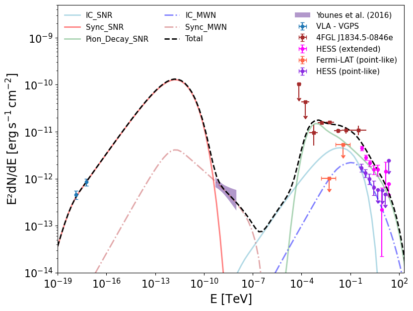
图注：Combined SEDs of the best-fit models for the region around Swift~J1834–0846, assuming a two-component VHE morphology consisting of an extended SNR component and a central point-like MWN component. The SNR emission is modeled using the lepto-hadronic-$K_{\rm ep} = 10^{-1}$ particle spectra, while the MWN emission is described by an {\(\it\) ECBPL} electron spectrum.
对应解读：对应“建议重点查看的图表”中主要数据与模型比较；也是摘要核心结论中两成分形态、扩展SNR强子主导与中心MWN轻子成分的关键SED拟合图。
入选理由：该图直接展示两成分VHE形态假设下扩展SNR与中心点状MWN的联合宽波段SED最佳拟合，是论文最核心的物理结论载体；相比单一模型图，它同时呈现lepto-hadronic SNR与ECBPL MWN两类成分如何解释观测数据，最适合支撑日报对模型比较和非热辐射起源的解读。
来源与置信度：\(arxiv_source\)；high；\(arxiv_source\) / main.tex:figure[4]
Fig01
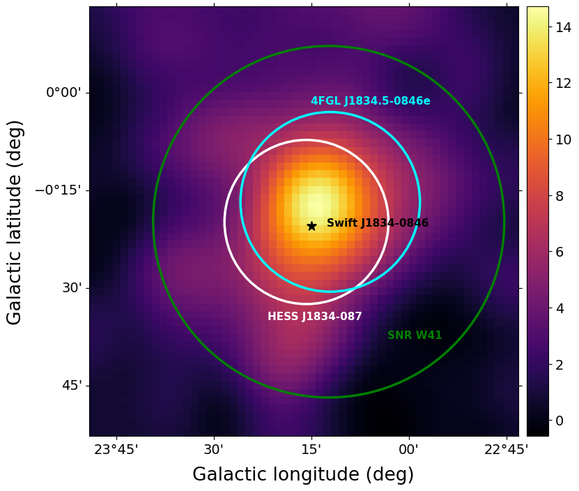
图注：H.E.S.S. VHE gamma-ray significance map of the region surrounding SNR~W41 and Swift~J1834--0846~\(\citep{2018A&A...612A...1H},\) smoothed with a Gaussian kernel of width $0.05^{\circ}$. The black star marks the position of the magnetar Swift~J1834--0846~\(\citep{2014ApJS..212....6O}.\) The green circle indicates the radio extent of W41, with a radius of $27'$ ~\(\citep{2007ApJ...657L..25T, 2025JApA...46...14G}.\) The cyan circle represents the GeV counterpart detected by \(\textit{Fermi}-LAT\)~\(\citep{2022ApJS..260...53A},\) while the white circle corresponds to the $1\sigma$ extension of the TeV source as measured by H.E.S.S.~\(\citep{2018A&A...612A...1H}.\) The map illustrates the spatial coincidence between the extended TeV emission of HESS~J1834--087 and the radio boundary of the SNR, motivating the multi-component interpretation explored in this work.
对应解读：对应“建议重点查看的图表”中主要数据与源区形态诊断；用于理解为什么论文要比较单一扩展源与中心点源嵌入扩展辐射的两种情形。
入选理由：该H.E.S.S.显著性图给出W41、Swift J1834--0846、Fermi-LAT GeV对应体和TeV扩展源的空间关系，是两成分解释的观测动机。它比纯SED模型图更能说明论文问题的出发点：TeV辐射与SNR壳层、磁星位置及多波段对应体的形态重合。
来源与置信度：\(arxiv_source\)；high；\(arxiv_source\) / main.tex:figure[1]
Fig05
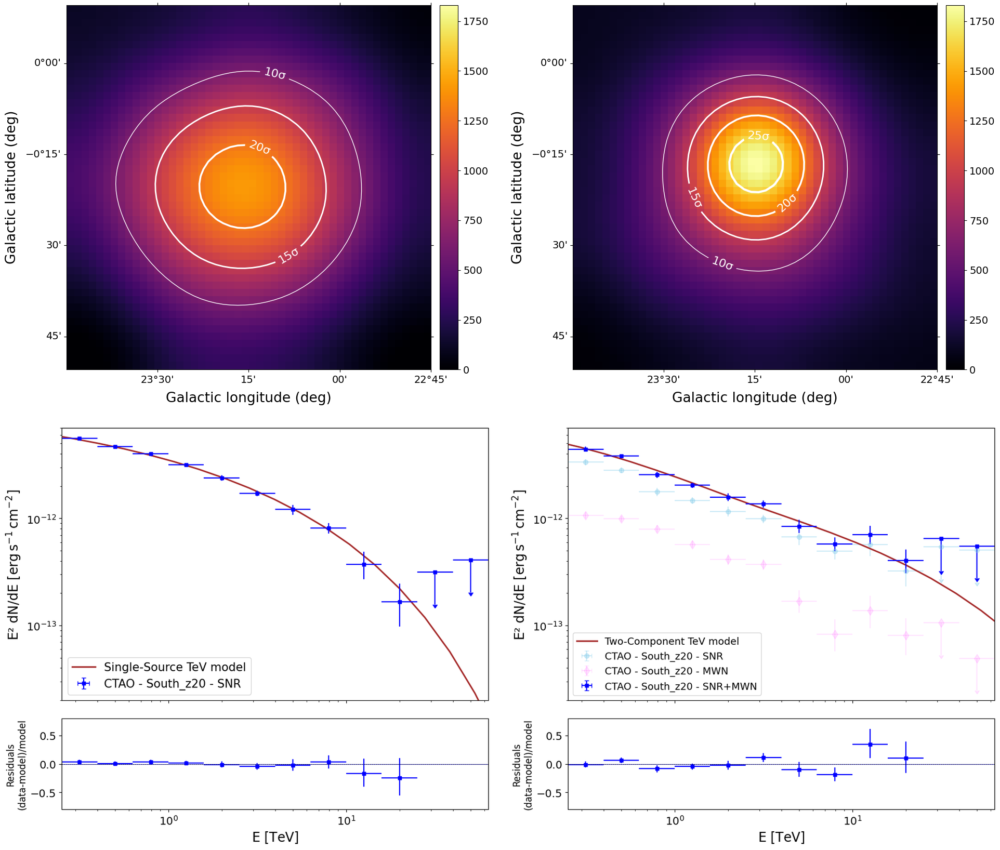
图注：Single-Source TeV Model - SNR
对应解读：对应“模型拟合”与模型比较段落中单一扩展源情形的SED拟合结果；可与两成分模型图进行对照。
入选理由：该图展示Single-Source TeV Model下SNR作为单一源解释TeV辐射的拟合，是检验论文两种形态假设的必要对照图。与Fig04一起嵌入可以帮助读者判断两成分模型相对于单一扩展源模型的科学增益。
来源与置信度：\(arxiv_source\)；high；\(arxiv_source\) / main.tex:figure[5]
Fig02
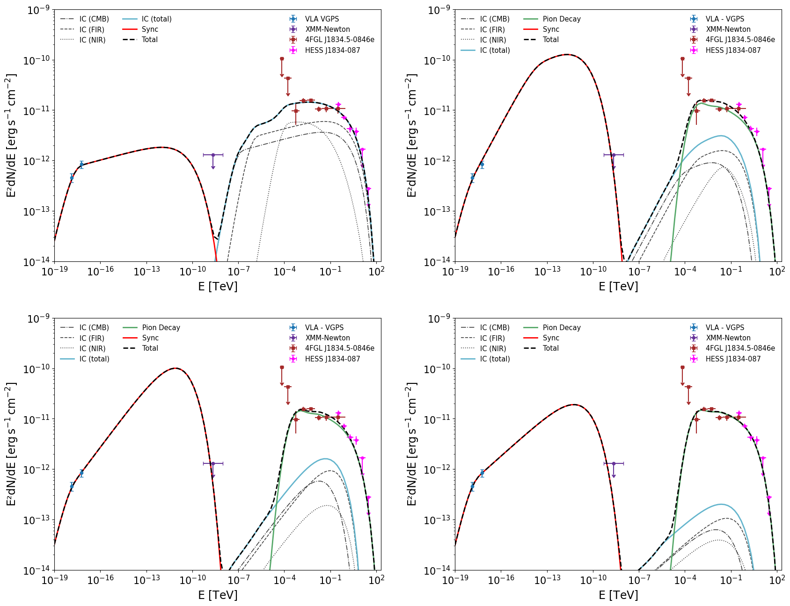
图注：Leptonic model
对应解读：对应“模型拟合”中纯轻子模型被排除或不受偏好的论证。
入选理由：摘要明确指出纯轻子模型在不同情形下需要不现实的低磁场，因此轻子模型图是理解模型排除依据的重要诊断图。尽管候选图注较简略，但其图号与标题明确对应Leptonic model，可支撑对纯轻子方案局限性的讨论。
来源与置信度：\(arxiv_source\)；high；\(arxiv_source\) / main.tex:figure[2]
Fig03
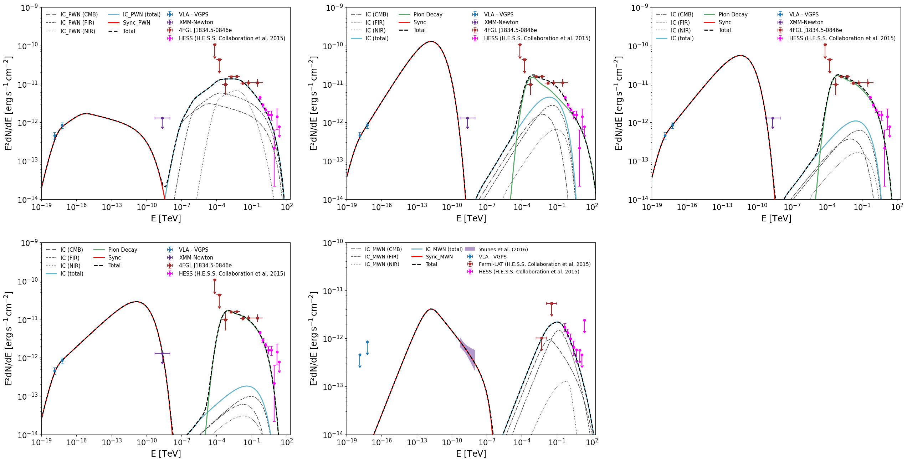
图注：Leptonic model - Extended Component: SNR
对应解读：对应扩展SNR成分的轻子模型诊断，辅助理解为何扩展TeV辐射更倾向于lepto-hadronic解释。
入选理由：该图聚焦Extended Component: SNR的Leptonic model，可作为Fig02的细分补充，帮助检查扩展成分在纯轻子框架下是否需要异常磁场或能量预算。其重要性低于总体两成分SED和形态图，但对模型排除逻辑仍有价值。
来源与置信度：\(arxiv_source\)；high；\(arxiv_source\) / main.tex:figure[3]
强相关工作
这篇论文涉及明确命名源和区域，因此相关文献应按 same-source、same-region、same-class 和 prototype 四条线检索。same-source/same-region 关键词包括 “W41 supernova remnant”, “HESS J1834-087”, “Swift J1834.9-0846”, “magnetar wind nebula”, “Fermi-LAT W41”。已有 H.E.S.S. 对 HESS J1834−087 的形态和谱研究、Fermi-LAT 源表/扩展源分析、Swift J1834.9−0846 的 X-ray/磁星研究，以及 W41 radio/分子云环境研究，都是理解本文数据来源和物理假设的直接背景。可优先在 arXiv、NASA ADS、H.E.S.S. collaboration publications、Fermi-LAT catalogs 和 SIMBAD/VizieR 中检索这些名称。
\(\nsame-class\) 文献应覆盖 SNR-分子云相互作用中的强子伽马射线、PWN/MWN 的 leptonic SED 模型、以及复合 SNR 区域的源混叠问题。典型参照对象包括 W28、W44、IC 443 等与分子云相互作用且有 GeV-TeV 强子解释的 SNR；PWN/MWN 方面可比较 HESS J1825−137 等扩展 PWN 的能量依赖形态，但磁星风云的能量注入历史与普通 pulsar wind nebula 不完全相同。检索时应特别关注“low magnetic field leptonic fit”“hadronic origin TeV SNR molecular cloud”“CTA simulation extended Galactic source”等关键词。
基础方法文献包括非热辐射过程教材/综述、$pp$ 相互作用伽马射线参数化、naima 或类似 SED modeling 工具、以及 CTA 性能预测论文。若要寻找张力线索，应查是否有文献将 HESS J1834−087 解释为 PWN、SNR shell、molecular cloud illumination 或混合模型；还应查 Swift J1834.9−0846 是否已有独立 MWN 证据，以及磁星当前自转能损率是否足以支持观测到的高能辐射。
可靠公共入口可从以下页面检索：arXiv 本文页面 https://arxiv.org/abs/2607.14356 ，H.E.S.S. publication list https://www.mpi-hd.mpg.de/hfm/HESS/pages/publications/ ，Fermi-LAT catalogs 页面 https://fermi.gsfc.nasa.gov/ssc/data/access/lat/ ，NASA ADS 搜索 https://ui.adsabs.harvard.edu/ 。对于具体论文标识，若正文 bibliography 给出 H.E.S.S. 2018 A&A 612 A1、Fermi-LAT 4FGL/扩展源 catalog、Swift J1834.9−0846 X-ray catalog 等条目，应优先以原文参考文献为准，避免用相似源名误引。
同一事件 / 同类源线索：
（未提供）
相似工作：
（未提供）
基础理论 / 方法工作：
（未提供）
相反观点 / 张力线索：
（未提供）
6. Einstein Probe Fast X-ray Transients Extend the Physical Parameter Space of Relativistic Jets
- 来源：arXiv / astro-ph.HE
- 链接：https://arxiv.org/abs/2607.14317v1
- 作者：Connery Chen, Yihan Wang, Bing Zhang
- 评分：novelty 8/10，importance 8/10，relevance 9/10，final 9.35/10
- 推荐理由：针对Einstein Probe快速X射线暂现源与GRB/XRF离轴喷流统一解释的物理检验，指出标准Type II GRB离轴模型无法解释部分低峰能高能量FXT；与GRB和相对论喷流高度相关，值得读。
中文题目：爱因斯坦探针快速 X 射线暂现源拓展相对论喷流的物理参数空间
做了什么：这篇文章讨论爱因斯坦探针（Einstein Probe, EP）发现的一类快速 X 射线暂现源（FXTs）是否可以简单理解为经典长伽马暴（Type II GRBs）的离轴观测版本。作者把不同喷流结构模型放到观测的 \(E_{\rm iso}\)-\(E_{\rm p}\) 平面上，并加入可探测性估计，比较 EP FXTs、X 射线闪（XRFs）、低光度 GRBs 和 GRB 170817A 一类事件的位置。结论是：标准单组分或多组分喷流确实能解释一部分离轴低能事件，但仅靠经典长暴的视角效应无法把一些能量不低、峰值能量却异常低的 EP FXTs 拉到观测位置。这意味着 EP FXTs 可能不是旧族群的观测角度尾巴，而是在探测较低洛伦兹因子、不同角结构、塌缩核心角动量较低或辐射机制不同的相对论爆发现象。
为什么重要：重要性在于它把 EP 新发现的 FXTs 放进了 GRB 物理最常用的 \(E_{\rm iso}\)-\(E_{\rm p}\) 诊断图中，直接检验“只是离轴 GRB”这一最自然解释是否成立。若不成立，FXTs 就可能代表相对论喷流参数空间中此前被高能触发器漏掉的一块区域，而不是分类学上的小修补。
理论 / 观测 / 仪器方法价值：对理论来说，文章给出了标准结构喷流在软 \(E_{\rm p}\)、低或中等 \(E_{\rm iso}\) 区域的可达范围，指出哪些 FXTs 需要更低 \(\Gamma\)、更软本征谱或非标准喷流。对观测来说，它强调 EP 的软 X 射线灵敏度会系统性选择传统 \(\gamma\) 射线监测器不敏感的爆发现象。对方法来说，它展示了如何把喷流角结构、相对论退束缚和仪器可探测性结合起来，而不是只用经验分类名称讨论 FXTs。
为什么应该关注：如果你关心 GRB、塌缩星喷流、XRFs、低光度 GRBs 或多信使暂现源，这篇文章值得看，因为它说明 EP 可能正在改变我们对“相对论爆发人口”的抽样方式。它也提醒读者：\(E_{\rm p}\) 很低并不自动等于普通 GRB 离轴，也不自动等于同一种中心引擎；需要把能量、谱峰、视角、喷流结构和触发选择效应一起算。
展开详细解读：文章讲解、背景、理论、重点章节、图表与相关工作
文章详细讲解
科学问题：EP 发现的 FXTs 在时间尺度和快速爆发性质上与 GRB/XRF 家族有相似之处，但其谱峰 \(E_{\rm p}\) 明显偏低，很多事件主要在软 X 射线能段被发现。最直接的解释是：这些事件也许本来就是普通长 GRB，只是观测者偏离喷流轴线，导致相对论多普勒因子降低，观测到的 \(E_{\rm p}\) 和 \(E_{\rm iso}\) 同时变小。本文要问的是，这个解释能否覆盖 EP FXTs 在 \(E_{\rm iso}\)-\(E_{\rm p}\) 平面上的位置，尤其是那些 \(E_{\rm iso}\) 不算极低但 \(E_{\rm p}\) 极软的事件。
作者怎么做：作者采用与 Type II GRBs 相关的多种喷流结构，包括近似顶帽喷流、角向能量和洛伦兹因子变化的结构喷流，以及单组分和多组分结构。对每种结构，作者改变观测角 \(\theta_{\rm v}\)，计算观测到的等向能量 \(E_{\rm iso}\) 和谱峰 \(E_{\rm p}\) 如何随视角移动，并把这些轨迹与经典 GRBs、XRFs、低光度 GRBs、GRB 170817A 和 EP FXTs 的观测分布比较。文章的核心不是拟合某一个事件的完整光变曲线，而是检验一个人口层面的物理可达性问题：标准 GRB 喷流在合理视角和探测阈值下能不能落到 EP FXTs 所在区域。
关键结果：标准喷流结构可以产生一些已知离轴或低能事件的观测性质。例如 GRB 170817A 这类弱 \(\gamma\) 射线事件、部分低光度 GRBs，以及 XRFs 在 \(E_{\rm iso}\)-\(E_{\rm p}\) 连续体低端的位置，可以由中等离轴视角或非均匀喷流结构解释。这说明“离轴效应”不是错的，它确实是 GRB 观测多样性的一部分。但对于若干 EP FXTs，观测 \(E_{\rm p}\) 太低，而 \(E_{\rm iso}\) 又没有按标准退束缚关系降到足够低，导致它们无法由普通 Type II GRB 仅通过增大 \(\theta_{\rm v}\) 自然得到。
局限和下一步：这类分析依赖喷流结构、谱形、本征 \(E_{\rm p}\) 分布、红移、触发阈值和样本完整性。EP FXTs 的红移和宿主信息若不完整，\(E_{\rm iso}\) 会带有额外不确定性；若爆发谱演化强，单一 \(E_{\rm p}\) 也可能不是最稳健的物理量。下一步需要对单个 FXT 做多波段跟踪、寻找余辉和宿主红移，并在群体模型中同时拟合事件率、持续时间、谱形和触发选择函数。若这些事件确实要求低 \(\Gamma\) 或不同中心引擎，它们会成为塌缩星相对论外流的新约束。
关键结果是怎么做出来的
本文最重要的证据链从样本在 \(E_{\rm iso}\)-\(E_{\rm p}\) 平面的位置开始。作者关注 EP 已报道的河外 FXTs，并把它们与已知长 GRBs、XRFs、低光度 GRBs 和 GRB 170817A 这类离轴候选事件放在同一诊断图上。这里的样本选择重点不是构建完整率校正的宇宙学样本，而是挑出具有可估计距离或能量、且可与 GRB 物理量比较的 EP 事件。关键可观测量是等向能量 \(E_{\rm iso}\) 与观测或本征峰值能量 \(E_{\rm p}\)，因为二者对相对论多普勒因子和喷流角结构非常敏感。
统计思路更接近物理可达性检验，而不是传统意义上给出某个模型的单一最优 \(\chi^2\)。作者计算不同喷流结构在改变 \(\theta_{\rm v}\) 后的预测轨迹或允许区域，然后叠加仪器可探测性边界，检查观测点是否落在标准 Type II GRB 离轴模型能够覆盖的区域内。如果一个 FXT 的 \(E_{\rm p}\) 需要很小的多普勒因子才能解释，那么同一退束缚通常也会显著压低 \(E_{\rm iso}\)；若观测到的 \(E_{\rm iso}\) 仍偏高，就形成张力。
支撑结论的图表应主要是 \(E_{\rm iso}\)-\(E_{\rm p}\) 图、喷流结构参数对视角的轨迹图、以及带有 EP 探测阈值或可探测区域的比较图。读者应检查 FXTs 是否只是落在模型轨迹边缘，还是明显偏离所有标准结构；也要看低光度 GRBs、XRFs 和 GRB 170817A 是否能被同一套模型自然连接。如果模型能解释后者却不能解释前者，这比单纯说“模型失败”更有信息量，因为它指出问题集中在极软但不够暗的区域。
显著性或置信度在本文中更可能通过参数空间排除和趋势不匹配体现，而非一个简单的 \(n\sigma\) 声明。系统误差包括 EP 触发选择、光谱拟合中 \(E_{\rm p}\) 是否落在仪器带内、红移缺失导致的 \(E_{\rm iso}\) 不确定性、以及样本是否混入不同物理起源的暂现源。稳健性检验的重点应是更换喷流角结构、改变本征 GRB 能量和谱峰分布、改变探测阈值，结论是否仍然保持：某些 EP FXTs 很难只是经典长暴离轴版本。
本文最值得关注的结果不是“所有 FXTs 都不是 GRB”，而是更细的判断：标准喷流可以解释 XRFs 和部分离轴/低光度事件，但 EP FXTs 把参数空间推到了更软、更难由普通 \(\Gamma\) 和普通角结构解释的区域。因此，后续如果有红移、余辉、宿主星形成环境和射电晚期余辉约束，将能直接检验这些事件是否属于低 \(\Gamma\) 喷流、失败喷流、冲击 breakout 或其他辐射机制。
展开背景、理论、公式、模型、章节和图表导读
背景知识
FXTs 是持续时间从几十秒到几千秒不等、主要在 X 射线能段快速增亮并衰减的暂现源集合。这个名称本身是观测分类，不保证单一物理起源；其中可能包括恒星耀发、潮汐瓦解事件的早期高能辐射、磁星活动、GRB/XRF 相关爆发、以及其他紧致天体暂现现象。EP 的优势在于宽视场软 X 射线监测，使得过去由硬 X 射线或 \(\gamma\) 射线触发器漏掉的软爆发更容易进入样本。
GRB 研究中早已有 XRFs 和低光度 GRBs 这两个与普通长暴相邻但不完全相同的类别。XRFs 的 \(E_{\rm p}\) 比典型 GRBs 低，低光度 GRBs 的 \(E_{\rm iso}\) 显著低于宇宙学长暴。历史上，它们被解释为离轴 GRBs、低 \(\Gamma\) 喷流、喷流突破恒星包层时的 shock breakout，或一类本征不同的中心引擎活动。GRB 170817A 之后，离轴结构喷流成为解释弱硬瞬变的重要基准模型。
为什么现在值得重新看，是因为 EP 正在系统性填补软 X 射线暂现源的发现空间。传统 GRB 探测器如 Swift/BAT、Fermi/GBM 对较硬能段更敏感，触发算法也偏向快速、高信噪的硬爆发；若某类喷流或爆发的 \(E_{\rm p}\) 落在几 keV 到几十 keV，过去的样本会有强烈选择偏差。EP 让我们看到的可能不是“新物理突然出现”，而是旧仪器窗口之外的真实人口。
该领域常见误区之一是把“软”直接等同于“离轴”。离轴确实会降低观测 \(E_{\rm p}\)，但同一多普勒因子变化也会降低通量和 \(E_{\rm iso}\)，因此 \(E_{\rm p}\) 与 \(E_{\rm iso}\) 不能分开解释。另一个误区是把所有 FXTs 都当作同一物理类别；实际上 FXT 是暂现现象的入口标签，后续必须靠红移、宿主、光谱、余辉、重复性和多波段对应体来拆分。本文的贡献正是把“离轴 GRB”这一解释放到定量参数空间中检查。
基础理论 / 方法脉络
相对论喷流的核心图像是：爆发源在狭窄角度内释放能量，流体以洛伦兹因子 \(\Gamma\) 向外运动。由于相对论光行差和多普勒增强，沿喷流轴线附近的观测者会看到更高的光子能量和更强的辐射通量；偏离轴线的观测者则看到谱峰变软、能量变低、光变变宽。这个效应是解释 GRB 观测多样性的第一层物理。
如果喷流是顶帽结构，即角度 \(\theta_{\rm j}\) 内能量和 \(\Gamma\) 近似均匀、外部急剧下降，那么当 \(\theta_{\rm v}\lesssim\theta_{\rm j}\) 时观测性质接近普通 GRB；当 \(\theta_{\rm v}>\theta_{\rm j}\) 时，辐射受到强烈退束缚。结构喷流则更平滑，能量面密度 \(\epsilon(\theta)\) 和 \(\Gamma(\theta)\) 随极角变化，离轴观测者仍可能看到来自宽角翼部或亮核心边缘的辐射。这也是 GRB 170817A 后广泛使用的喷流描述。
本文的关键物理量是 \(E_{\rm iso}\)、\(E_{\rm p}\)、\(\theta_{\rm v}\)、\(\Gamma\) 和喷流角结构。\(E_{\rm iso}\) 是把观测到的流量按各向同性释放换算得到的能量，不等于真实喷流能量；\(E_{\rm p}\) 是 \(\nu F_\nu\) 谱的峰值能量，反映辐射粒子能谱、磁场、光球或内耗散条件，也受多普勒因子影响。离轴模型的限制来自二者的耦合变化：软化通常伴随变暗。
观测上，EP 的软 X 射线响应改变了样本选择函数。若 \(E_{\rm p}\) 太低，硬 X 射线/\(\gamma\) 射线仪器可能只看到谱尾或根本不触发；EP 则可在较低能段直接捕捉峰值附近的光子。这会把 \(E_{\rm iso}\)-\(E_{\rm p}\) 平面上过去稀疏的区域填出来，但也引入系统误差：若 \(E_{\rm p}\) 位于能段边缘，谱形假设会影响峰值；若红移不明，能量尺度会漂移。
常见退化关系包括：低 \(\Gamma\) 与大 \(\theta_{\rm v}\) 都能让事件变软；较低本征 \(E_{\rm p}\) 与更强离轴退束缚也能给出相似观测 \(E_{\rm p}\)；喷流角翼部的真实辐射与核心离轴泄漏也可能混淆。因此本文强调不能只用一个观测量分类，而要同时看能量、谱峰和可探测性。
公式与推导
从相对论运动的多普勒因子开始。对以速度 \(\beta c\) 运动、洛伦兹因子 \(\Gamma=(1-\beta^2)^{-1/2}\) 的辐射单元，观测方向与速度夹角为 \(\psi\)，多普勒因子为
这里 \(\psi\) 由喷流局部角度和观测角 \(\theta_{\rm v}\) 决定。该式说明离轴观测时 \(\psi\) 增大，\(\delta\) 下降，光子能量和到达率都会降低。
若共动系谱峰为 \(E'_{\rm p}\)，红移为 \(z\)，则观测谱峰近似为
对同一类本征辐射，\(E_{\rm p}\) 的软化首先反映 \(\delta\) 的减小；但如果 \(E'_{\rm p}\) 本身偏低，低 \(\Gamma\) 或不同辐射机制也能造成类似结果。
各向同性等效能量由观测能流量积分得到，常写为
其中 \(d_L\) 是光度距离，\(S_{\rm bol}\) 是经过能段和宇宙学修正后的总 fluence。该式是把观测量放进 \(E_{\rm iso}\)-\(E_{\rm p}\) 平面的基本换算。
在简单离轴近似中，若本征谱形不变，辐射能量会随多普勒因子按幂律缩放，可写成
其中 \(E_{\rm iso,on}\) 是轴上等效能量，\(\delta_{\rm on}\) 是轴上多普勒因子，指数 \(k\) 通常在 \(2\) 到 \(3\) 附近，取决于瞬时辐射、时间积分和谱形。它表达了本文张力的核心：让 \(E_{\rm p}\) 大幅降低的同一 \(\delta\) 也会让 \(E_{\rm iso}\) 大幅降低。
结构喷流把轴上常数推广为角分布。例如高斯结构可写为
其中 \(\epsilon_c\) 和 \(\Gamma_c\) 是核心能量面密度和核心洛伦兹因子，\( heta_c\) 是核心角尺度。不同角度单元对观测者的贡献由其 \(\delta\) 和 \(\epsilon\) 共同决定。
更一般地，观测等效能量可写成角面积分的形式
其中 \(d\Omega=\sin\theta d\theta d\phi\)，\(\phi\) 是方位角，\(\delta_{\rm ref}\) 是归一化多普勒因子。这个公式连接喷流角结构与 \(E_{\rm iso}\)-\(E_{\rm p}\) 轨迹。
仪器可探测性可以用计数数目表示为
其中 \(A_{\rm eff}(E)\) 是有效面积，\(N_E(E,t)\) 是光子谱流量。EP 对软 X 射线的 \(A_{\rm eff}\) 和触发策略决定了哪些低 \(E_{\rm p}\) 事件能进入样本。
若背景计数为 \(B\)，一个简化的触发显著性可写为
其中 \(\sigma_{\rm sys}\) 表示背景建模或仪器系统误差。本文中的可探测性估计本质上是在问：模型轨迹上的事件不仅物理上存在，而且是否能被 EP 或传统 GRB 仪器触发。
最后，可用经验的 Amati 型关系作为比较基准，形式为
其中 \(E_{\rm p,rest}=(1+z)E_{\rm p,obs}\)，\(K\) 和 \(m\) 由长 GRB 样本标定。FXTs 若系统性落在该关系外，且不能由离轴 \(\delta\) 变化拉回，就提示本征喷流或辐射机制可能不同。
模型拟合 / 应用方法
本文的模型拟合可理解为在喷流参数空间中寻找能覆盖观测点的区域。拟合量或比较量主要是 \(E_{\rm iso}\)、\(E_{\rm p}\) 以及事件是否超过仪器探测阈值，而不是完整多波段余辉拟合。自由参数包括喷流核心能量、核心角 \(\theta_c\)、开角 \(\theta_j\)、核心洛伦兹因子 \(\Gamma_c\)、角向结构形式、观测角 \(\theta_{\rm v}\)、本征谱峰和红移。
若要把这类工作写成严格统计模型，可以定义每个事件在观测空间 \(\mathbf{x}_i=(\log E_{{\rm iso},i},\log E_{{\rm p},i})\) 的似然，并对隐藏参数如 \(\theta_{\rm v}\)、\(z\)、喷流能量和 \(\Gamma\) 积分。本文更强调物理轨迹与可探测区域的重叠，因此读者应把图中的轨迹、包络和阈值线当作模型比较的主要证据。若 EP FXTs 位于所有标准轨迹外侧，就说明需要额外自由度。
参数退化很强。降低 \(\Gamma\) 会降低典型 \(E_{\rm p}\) 并改变辐射效率；增大 \(\theta_{\rm v}\) 也会降低 \(E_{\rm p}\)，但同时强烈降低 \(E_{\rm iso}\)；扩大喷流角翼部能量可让离轴事件不那么暗，但可能过度增加可探测离轴 GRB 的事件率；改变本征谱峰分布也可软化事件，但会影响与经典 GRB 样本的统一性。好的拟合不应只追一个点，而要同时避免破坏已知 GRB、XRF 和低光度 GRB 的分布。
系统误差主要来自观测选择和谱参数估计。若 \(E_{\rm p}\) 位于 EP 能段下边缘或上边缘，Band 函数、截止幂律或黑体加非热成分的选择都会改变 \(E_{\rm p}\)。若红移未知，\(d_L\) 和 \(k\)-修正会直接影响 \(E_{\rm iso}\)。背景扣除、触发时间窗、峰值流量与 fluence 的关系，也会影响事件是否被归入 FXT 或 GRB 样本。
实际应用上，这套框架可用于未来 EP 事件的快速物理分类。只要得到暂现源的谱峰、fluence、持续时间和候选宿主红移，就可把事件放到 \(E_{\rm iso}\)-\(E_{\rm p}\) 图上，检查其是否位于标准离轴喷流区、XRF 区、低光度 GRB 区或异常软高能区。若后续射电余辉显示强烈晚期增亮，则支持离轴结构喷流；若没有典型余辉而有热谱或超新星相关信号，则可能指向 shock breakout 或低 \(\Gamma\) 外流。
重点章节 / 结果段落怎么读
-
引言和问题设定：应重点看作者如何定义 EP FXTs 与 XRFs、低光度 GRBs、经典长 GRBs 的关系。这里的关键是不要把 FXT 当作物理类别，而要看作者为什么选择 \(E_{\rm iso}\)-\(E_{\rm p}\) 平面作为检验离轴假说的主工具。
-
样本和观测量整理：读者应检查 EP FXTs 的红移、fluence、谱峰和能量估计来源，以及这些量的不确定性。尤其要注意 \(E_{\rm p}\) 是直接落在观测能段内，还是由谱模型外推得到；这会影响结论的稳健性。
-
喷流结构和视角计算：这是论文方法核心。需要看作者采用了哪些单组分和多组分结构，\(\epsilon(\theta)\) 与 \(\Gamma(\theta)\) 如何随角度变化，以及 \(\theta_{\rm v}\) 改变时预测点如何在 \(E_{\rm iso}\)-\(E_{\rm p}\) 平面移动。
-
可探测性估计：这一部分决定模型轨迹上哪些事件真的会被 EP 或传统 GRB 仪器看见。读者应关注阈值、能段、触发时间窗和谱形假设，因为这些选择会影响“EP 发现新参数空间”的强度。
-
结果和讨论：重点看作者如何区分“可由离轴解释的 XRF/低光度事件”和“难以由标准 Type II GRB 离轴解释的 EP FXTs”。讨论部分提出的低 \(\Gamma\)、低角动量塌缩核心、替代喷流结构或替代辐射机制，是后续观测检验的路线图。
建议重点查看的图表
-
\(E_{\rm iso}\)-\(E_{\rm p}\) 总览图：检查 EP FXTs、经典 GRBs、XRFs、低光度 GRBs 和 GRB 170817A 的相对位置，尤其是 EP FXTs 是否位于低 \(E_{\rm p}\) 但非极低 \(E_{\rm iso}\) 区域。
-
不同喷流结构的视角轨迹图：看顶帽、高斯、功率律或多组分喷流在 \(\theta_{\rm v}\) 增大时如何移动，是否能覆盖 FXTs。
-
可探测性或阈值图：关注 EP 与传统 \(\gamma\) 射线仪器的能段差异，低 \(E_{\rm p}\) 事件是否只在 EP 窗口中容易触发。
-
参数空间包络图：检查 \(\Gamma\)、\(\theta_c\)、\(\theta_j\)、喷流翼部能量变化后，模型允许区域是否仍排除部分 FXTs。
-
与 XRFs 和低光度 GRBs 的比较图或表：看这些已知软/低能事件是否自然连接到普通 GRBs，还是也需要额外物理。
-
稳健性检验图表：若有附录或补充图，应检查改变谱形、本征 \(E_{\rm p}\) 分布、探测阈值或红移假设后，核心张力是否消失。
关键图表逐图导读
图 1：通常应是 \(E_{\rm iso}\)-\(E_{\rm p}\) 平面的样本总览。横轴多半为 \(E_{\rm iso}\) 或其对数，纵轴为静止系 \(E_{\rm p}\) 或观测修正后的 \(E_{\rm p}\)。数据点应包括普通长 GRBs、XRFs、低光度 GRBs、GRB 170817A 和 EP FXTs。读图时不要只看 FXTs 是否“低”，而要看它们相对 Amati 型趋势和离轴轨迹的方向是否异常。
图 2：可能展示不同喷流结构随 \(\theta_{\rm v}\) 改变产生的轨迹。模型线若从高 \(E_{\rm iso}\)、高 \(E_{\rm p}\) 区域向低值移动，表示观测角增大。陷阱是模型线的终点不一定代表可探测事件；极离轴点即使物理存在，也可能低于 EP 或其他仪器阈值。
图 3：若论文给出 EP 可探测性估计，应关注坐标轴上的 fluence、峰值流量、\(E_{\rm p}\) 或红移依赖。模型线穿过可探测区域才有观测意义。读者应检查阈值是否对持续时间和谱形敏感，因为 FXTs 的持续时间与传统 GRB 触发时间窗不完全相同。
图 4：若展示标准喷流与多组分喷流的比较，应看多组分模型是否只是扩大了低能端，还是能真正到达 EP FXTs 的软高能区域。多组分喷流往往能解释 GRB 170817A 和部分低光度事件，但若仍不能解释某些 FXTs，就说明问题不是简单角结构不足。
图 5：若有参数敏感性或稳健性图，重点看改变 \(\Gamma\)、\( heta_c\)、本征 \(E_{\rm p}\) 和探测阈值时，异常 FXTs 是否仍保持偏离。读图陷阱是单个参数调节可能能碰到某个点，但会导致事件率、普通 GRB 分布或其他观测量不合理。
论文原图 / 可嵌入图片
Fig06
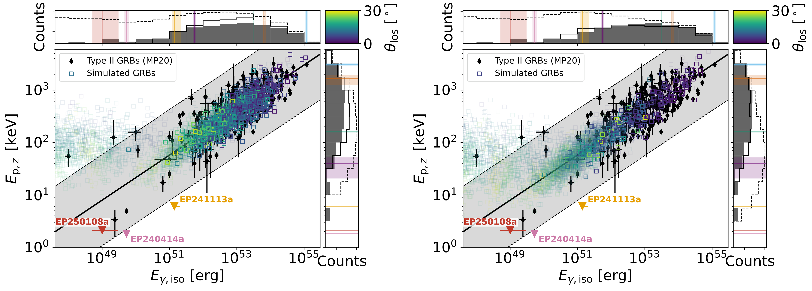
图注：Simulated and observed Type II GRBs on the $E_{\gamma, \rm iso}$--$E_{{\rm p}, z}$ plane. Simulated bursts are shown for single-component (left panel) and multi-component (right panel) jet structures, with parameters sampled according to Tables~\(\ref{tab:single_dist}\) and~\(\ref{tab:multi_dist},\) respectively. Simulated bursts are color-coded by viewing angle $\theta_v$, with opacity indicating Swift/BAT detectability (opaque for detectable bursts, semi-transparent for non-detections). 275 observed Type II GRBs (black diamonds) from~\(\cite{mp_20}\) are plotted alongside the Amati relation and its 3$\sigma$ scatter. FXTs (Section~\ref{sec:obs}) are plotted in select colors with corresponding labels in the lower-right list. Marginal histograms along the top and right axes show the distributions of $E_{\gamma, \rm iso}$ and $E_{{\rm p}, z}$, respectively, where solid lines represent the detectable (full) sample and the filled histogram represents the observational sample.
对应解读：对应“不同喷流结构的视角轨迹图”“参数空间包络图”以及关键图表导读中的图2/图4式模型比较段落。
入选理由：这是最核心的模型检验图：在同一个 \(E_gamma,iso--E_p,z\) 平面上同时给出单组分与多组分 Type II 喷流模拟、观测 Type II GRBs、Amati 关系、EP FXTs，并用颜色标出观测角、透明度标出 Swift/BAT 可探测性。它直接回答标准 Type II GRB 离轴喷流能否覆盖 EP FXTs，是日报关于“部分 FXTs 位于所有标准轨迹外侧”的主要证据。
来源与置信度：\(arxiv_source\)；high；\(arxiv_source\) / main.tex:figure[6]
Fig01
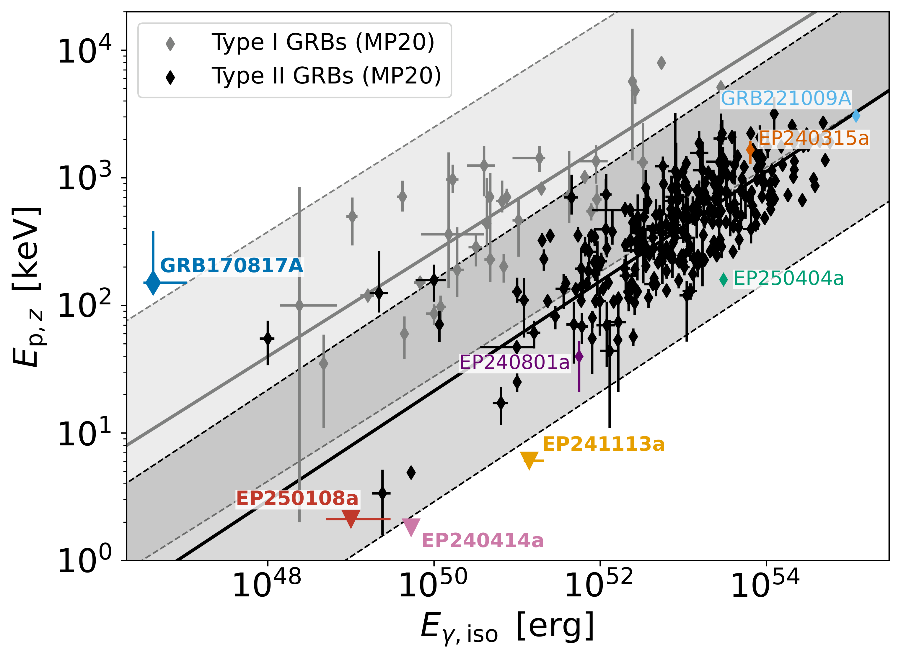
图注：Observed GRBs with known redshift in the $E_{\gamma, \rm iso}$--$E_{{\rm p},z}$ plane~\(\citep{mp_20}.\) Grey and black diamonds represent Type I and Type II GRBs, respectively. The solid line and shaded region represent the Amati relation (Eq.~\ref{eq:amati}) and its $3\sigma$ scatter. Colored markers and corresponding labels indicate EP-detected FXTs and GRBs~\(\citep{liu_25_240315a, ep240414a, jiang_25_240801, ep250108a, ep250404a},\) GRB 170817A~\(\citep{zhang_18}\) and GRB 221009A~\(\citep{frederiks_23}.\) EP-detected FXTs occupy a region of unusually low $E_{{\rm p},z}$ relative to $E_{\gamma, \rm iso}$, softer than the canonical Amati relation; their corresponding labels are bolded. Downward arrows represent upper limits.
对应解读：对应“\(E_iso-E_p\) 总览图”和关键图表导读中的图1。
入选理由：该图是观测样本总览，明确展示经典 GRBs、Type I/II GRBs、EP-detected FXTs、GRB 170817A、GRB 221009A 以及 Amati 关系和 3σ 离散带。图注直接指出 EP FXTs 处在相对 \(E_gamma,iso\) 异常低 \(E_p,z\) 的区域，是理解论文科学问题和异常性的起点。
来源与置信度：\(arxiv_source\)；high；\(arxiv_source\) / main.tex:figure[1]
Fig09
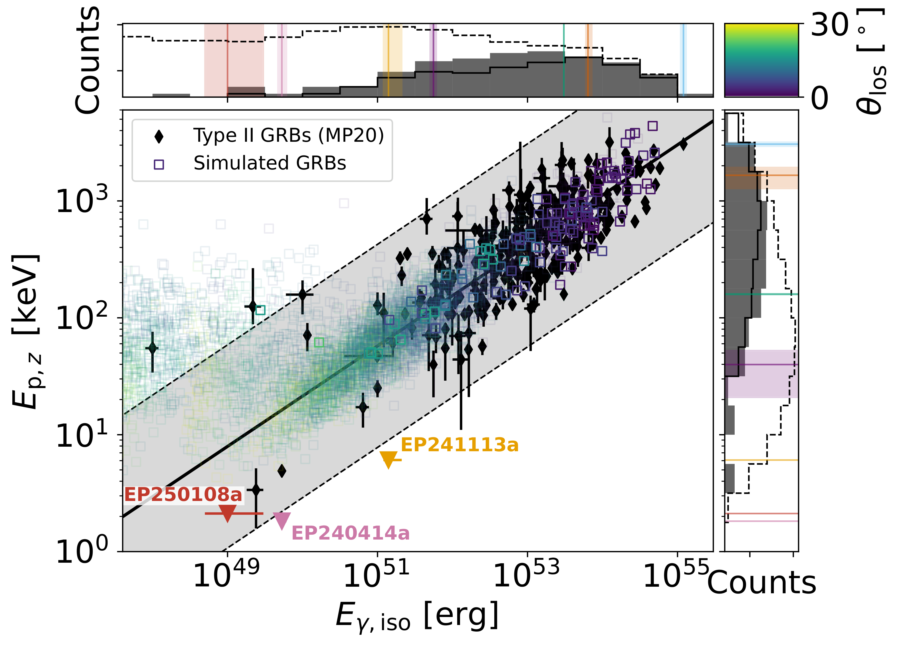
图注：Simulated and observed Type II GRBs with the multi-component jet structure on the $E_{\gamma, \rm iso}$--$E_{{\rm p}, z}$ plane. Opacity indicates whether a burst is detectable by KW (opaque) or not (semi-transparent). For comparison, the Swift/BAT-detectable population is shown in the right panel of Fig.~\(\ref{fig:sim_type2}.\)
对应解读：对应“可探测性或阈值图”以及模型拟合段落中关于仪器选择函数、KW 与 Swift/BAT 能段差异的讨论。
入选理由：该图把多组分 Type II 喷流模拟放到 \(E_gamma,iso--E_p,z\) 平面，并用透明度表示 KW 可探测性，可与 Fig06 的 Swift/BAT 情况对照。它最适合支撑日报中关于低 \(E_p\) 事件是否受探测器能段和触发阈值影响的解读。
来源与置信度：\(arxiv_source\)；high；\(arxiv_source\) / main.tex:figure[9]
Fig08
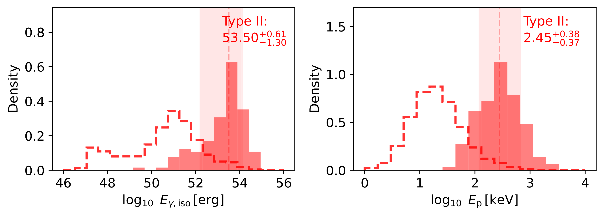
图注：$E_{\gamma, \rm iso}$ and $E_{\rm p}$ distribution densities for Type II GRBs with a multi-component jet structure, assuming KW detectability. KW-detectable bursts are represented by the filled histogram, while the full simulated sample including undetectable bursts is shown as the dashed step histogram. Compared to Swift/BAT-detectable bursts (Fig.~\ref{fig:multi_dist}), KW-detectable bursts have higher $E_{\gamma, \rm iso}$ and $E_{\rm p}$ due to the higher energy bandpass of KW.
对应解读：对应“可探测性或阈值图”和“系统误差/探测选择”段落。
入选理由：该图展示 KW 可探测条件下 Type II 多组分喷流的 \(E_gamma,iso\) 与 \(E_p\) 分布，并与全模拟样本区分。它不如 Fig09 直观显示 FXTs 在二维平面中的位置，但能清楚说明高能仪器会偏向探测更高 \(E_iso\) 和更高 \(E_p\) 的事件，从而支撑 EP 软 X 射线发现窗口的重要性。
来源与置信度：\(arxiv_source\)；high；\(arxiv_source\) / main.tex:figure[8]
Fig05
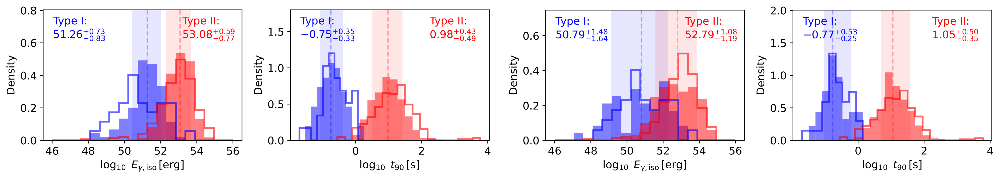
图注：$E_{\gamma,\rm iso}$ and $t_{90}$ distribution densities of simulated and observed Type I (blue) and Type II (red) GRBs. The upper panels correspond to the single-component jet structure, and the lower panels correspond to the multi-component jet structure. Simulated events are represented by filled histograms, and the observational sample from \(\cite{mp_20}\) is shown as solid step histograms. The median and $1\sigma$ range of the distributions are indicated by dashed vertical lines and shaded regions, respectively, with values listed at the top of each panel.
对应解读：对应模型拟合段落中对模拟群体是否合理复现已知 GRB 分布的检验。
入选理由：该图比较单组分和多组分喷流下模拟与观测 Type I/II GRBs 的 \(E_gamma,iso\) 和 t90 分布，给出中位数和 1σ 范围。它不能直接显示 FXTs 异常位置，但可作为模型校准和稳健性背景，说明作者并非任意调参追逐个别 FXT 点。
来源与置信度：\(arxiv_source\)；high；\(arxiv_source\) / main.tex:figure[5]
Fig03
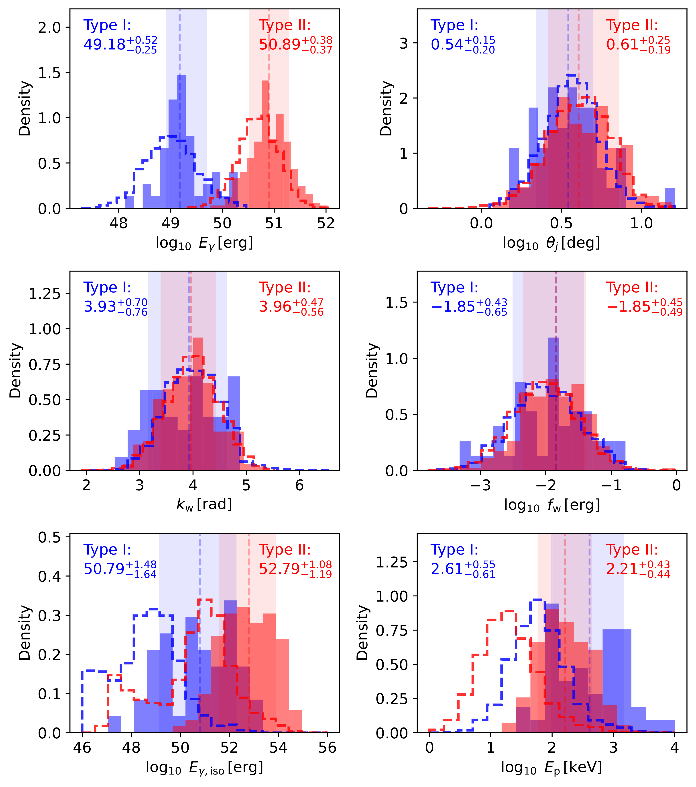
图注：Same as Fig.~\(\ref{fig:single_dist}\) but for the multi-component model.
对应解读：对应“参数空间包络图”和模型拟合段落中关于多组分喷流自由参数分布的讨论。
入选理由：该图给出多组分模型的参数分布及 Swift/BAT 可探测样本与全模拟样本差异，有助于理解多组分喷流为何能扩大低能端和改变可探测群体。相较 Fig06、Fig09，它与 \(E_iso-E_p\) 异常诊断的关系较间接，因此排序靠后。
来源与置信度：\(arxiv_source\)；high；\(arxiv_source\) / main.tex:figure[3]
强相关工作
这篇工作与 GRB 170817A 后的结构喷流研究直接相关。GRB 170817A 是双中子星并合 GW170817 的电磁对应体，其弱 \(\gamma\) 射线信号和后续余辉被广泛解释为离轴结构喷流或 cocoon 相关辐射。本文使用这类事件作为“离轴模型确实能解释某些低能爆发”的标尺，但进一步指出 EP FXTs 的某些位置比 GRB 170817A 或低光度 GRBs 更难用同一物理缩放覆盖。检索关键词可用 “GRB 170817A structured jet off-axis prompt emission”。
它也与 XRFs、低光度 GRBs 和 Amati 关系文献相连。XRFs 历来被视为 GRB 连续体的软端，但软端究竟来自离轴、本征低 \(E_{\rm p}\)、低 \(\Gamma\) 还是 shock breakout，一直存在争论。本文把 EP FXTs 加入这条历史线索，强调新仪器选择函数可能正在暴露一个传统 GRB 样本没有充分覆盖的区域。检索关键词可用 “X-ray flashes off-axis GRB”, “low-luminosity GRB shock breakout”, “Amati relation XRF”, “Einstein Probe fast X-ray transients”。
同一事件 / 同类源线索：
- https://arxiv.org/abs/2607.14317
- https://arxiv.org/abs/1710.05832
- https://arxiv.org/abs/1710.05446
- https://arxiv.org/abs/astro-ph/0205230
相似工作：
基础理论 / 方法工作：
相反观点 / 张力线索：
（未提供）
7. Cosmogenic photon fluxes at ultra-high energies
- 来源：arXiv / astro-ph.HE
- 链接：https://arxiv.org/abs/2607.14670v1
- 作者：Marcus Niechciol, Chiara Jane Papior, Markus Risse
- 评分：novelty 7/10，importance 8/10，relevance 9/10，final 9.05/10
- 推荐理由：Strongly relevant UHECR/cosmogenic photon paper quantifying ultra-high-energy gamma-ray fluxes under source-composition scenarios and current experimental constraints.
中文题目：超高能宇宙线传播产生的宇宙源光子通量
做了什么：这篇文章系统计算了超高能宇宙线在宇宙空间传播时，由光强子相互作用和核级联过程产生的宇宙源光子通量。作者比较了不同注入谱、最大能量、质量组成和源距离下的光子产额，并把这些结果用于若干源模型，包括能较好描述 Pierre Auger Observatory 数据的混合组成情形，以及纯质子和纯铁的“最大/最小”基准情形。主要结论是：若源在最高能端含有显著质子成分，\(E_\gamma>10^{18}\,\mathrm{eV}\) 的宇宙源光子可能接近现有或下一代实验灵敏度；而不含初始质子的混合组成模型通常比当前光子上限低超过约 \(1.5\) 个数量级。部分纯质子参数空间已被现有超高能光子限制排除。
为什么重要：超高能宇宙线的质量组成和源分布仍是高能天体物理的核心难题。宇宙源光子是传播过程的副产物，虽然通量很低，却对原初粒子是否为质子、源是否足够近、最大加速能量是否足够高非常敏感。与只看宇宙线能谱和 \(X_{\max}\) 相比，光子上限或未来探测能提供独立约束，尤其能直接检验纯质子或高质子分数模型。
理论 / 观测 / 仪器方法价值：本文的价值不在于提出全新的相互作用物理，而在于把“单个源距离下的光子产额”和“全体源群的可观测光子通量”连接起来，给出一套可与 Auger 光子上限、未来 GRAND/POEMMA/GCOS 类实验灵敏度比较的基准图景。它对理论模型筛选、观测策略设计和多信使约束都有直接用途：如果未来看到 \(10^{18}\,\mathrm{eV}\) 以上光子，哪些组成和源距最自然；如果继续看不到，哪些质子主导模型会先被压缩。
为什么应该关注：如果你关心超高能宇宙线到底是质子还是重核、源在几十兆秒差距内还是更远、以及下一代超高能光子搜索是否有现实发现空间，这篇文章值得看。它告诉我们：宇宙源光子不是简单地“质子多就多”，而强烈依赖源距、注入谱和核质量级联；同时也提醒，当前非探测结果已经在约束一些看似合理的纯质子模型。
展开详细解读：文章讲解、背景、理论、重点章节、图表与相关工作
文章详细讲解
科学问题：超高能宇宙线在传播中不可避免地与宇宙微波背景和河外背景光相互作用，产生 \(\pi^0\) 衰变光子、级联电子正电子以及更低能的电磁级联辐射。问题是，在 \(E_\gamma>10^{18}\,\mathrm{eV}\) 的极高能段，这些“宇宙源光子”的可观测通量到底有多大？它对宇宙线源的注入谱、最大能量、质量组成和源距离有多敏感？当前 Auger 等实验的光子上限已经排除了哪些源模型？
作者怎么做：论文先计算不同原初粒子在给定源距离下的光子产额，把注入宇宙线的总能量固定后比较纯质子、较重核以及不同传播距离的差异。随后他们把这个“单源产额”扩展到源群模型，考虑能描述 Pierre Auger Observatory 超高能宇宙线能谱和质量组成趋势的混合组成情形，也构造纯质子和纯铁的基准极端模型，用来给出接近“最大”和“最小”的光子通量包络。关键思想是把传播物理与实验上限放在同一张能量积分通量或微分通量图上比较。
关键结果：对于 \(E_\gamma>10^{18}\,\mathrm{eV}\) 的宇宙源光子，单源光子产额在质子源、源距离约 \(15\,\mathrm{Mpc}\) 左右时最大。距离太近时光强子相互作用长度不够，产生的光子少；距离太远时虽然产生更多二级光子，但高能光子又会在背景辐射场中被吸收并级联到较低能量。对于相同注入总能量，质子始终比重核产生更多高能光子，但源距离增大后，重核光致裂解产生的次级核子也会参与产生光子，使质子与重核之间的差距缩小。
对源模型的结论更直接：那些不含初始质子的混合组成模型，其预测的宇宙源光子通量通常比当前实验上限低超过约 \(1.5\) 个数量级，短期内很难被现有探测器看到。相反，如果最高能端有实质性质子分数，\(E_\gamma>10^{18}\,\mathrm{eV}\) 的光子通量可能进入现有或近期未来实验的可及范围。某些纯质子注入参数组合已经与当前光子上限相冲突，因此超高能光子非探测本身已经是对源组成的有效约束。
局限和下一步：这类计算不可避免地依赖注入谱形、最大刚度、源演化、源距分布、宇宙背景光模型、超高能强子相互作用模型以及河外磁场对带电粒子传播的影响。本文更像是给出参数空间中的物理趋势和基准通量，而不是唯一的反演答案。下一步需要把光子、宇宙线能谱、\(X_{\max}\)、中微子通量、源各向异性和真实源目录联合起来做统一似然分析，并用未来更低光子上限或候选事件来检验这些模型。
关键结果是怎么做出来的
本文最核心的证据链从“单源光子产额”开始。作者把不同原初粒子以相同总注入能量送入传播计算，比较到达地球附近的 \(E_\gamma>10^{18}\,\mathrm{eV}\) 光子数量随源距离的变化。这个设计避免了把源光度归一化和组成差异混在一起，因此可以直接回答：如果一份能量最初放在质子、氦、氮、硅或铁中，最终高能光子产额差多少。结果显示，质子源在约 \(15\,\mathrm{Mpc}\) 附近出现峰值，这是产生效率和光子吸收之间的平衡点。
第二步是把单源结果推广到源群通量。作者考虑混合组成场景，尤其是那些已知能较合理描述 Auger 能谱和 \(X_{\max}\) 趋势的参数组合。这里的样本不是事件列表，而是一组传播模型和注入参数集合：注入谱指数、最大刚度、元素分数、源演化或距离分布等共同决定地球处的宇宙线和光子通量。论文把这些模型的预测与现有光子积分上限比较，从而判断哪些情形离可探测范围近，哪些仍低得多。
显著性或排除强度在这篇文章中主要不是通过报告某个 \(n\sigma\) 发现来体现，而是通过“模型预测通量是否超过实验上限”来判断。若某一纯质子模型给出的积分光子通量 \(\Phi_\gamma(>E_0)\) 高于 Auger 等实验给出的 \(95\%\) 置信上限，通常就意味着该参数组合在相应置信水平下受到约束。若预测低于上限 \(1.5\) 个数量级以上，则当前非探测对该模型几乎没有排除力，但可为下一代实验设定灵敏度目标。
支撑结论的关键图表应包括：光子产额随源距离变化的曲线、不同原初质量的产额比较、不同源模型下的积分或微分光子通量、以及与当前实验上限和未来灵敏度的叠加图。读者应特别检查曲线是否按相同注入能量归一化，阈值是否固定为 \(10^{18}\,\mathrm{eV}\) 或其他能量，通量比较用的是全天平均还是某种源分布假设，以及不同背景光模型或源演化假设是否改变数量级结论。
主要系统误差来自传播物理和天体物理假设两端。传播端包括光致介子产生截面、光致裂解模型、宇宙背景光谱、无线电背景和电磁级联处理；天体物理端包括源距离分布、源演化、最大刚度、注入谱指数和组成分数。稳健性检验的关键不是某一条曲线是否精确，而是趋势是否稳定：质子主导模型光子多、无质子混合模型光子少、近邻几十兆秒差距源对 \(E_\gamma>10^{18}\,\mathrm{eV}\) 光子特别重要，这些结论是否在参数变化下仍成立。
展开背景、理论、公式、模型、章节和图表导读
背景知识
研究对象是宇宙源光子，即超高能宇宙线从源到地球传播时与背景光子场相互作用产生的高能伽马射线。这里的“宇宙源”不是指某个天体本身直接发出的 TeV 或 PeV 伽马射线，而是指宇宙线传播过程中的二级产物。对于 \(E\gtrsim10^{18}\,\mathrm{eV}\) 的能量，主要相关背景包括宇宙微波背景、河外背景光，某些情况下还包括无线电背景和磁场控制下的电磁级联。
历史上，超高能宇宙线领域长期围绕 \(\mathrm{GZK}\) 截断、源组成和源分布展开。若最高能宇宙线主要是质子，那么它们与宇宙微波背景发生光致介子产生，导致能谱在 \(\sim5\times10^{19}\,\mathrm{eV}\) 附近压低，同时产生中微子和光子。若主要是重核，则能量损失更多体现为光致裂解，二级核子再参与相互作用，光子和中微子产额一般更低。因此光子通量可以作为区分质子和重核传播图景的独立观测量。
观测上，Pierre Auger Observatory、Telescope Array 等实验已经对超高能光子给出严格上限。光子诱发的空气簇射通常比质子或核诱发簇射发展得更深，缪子含量更低，并可能受 \(\mathrm{LPM}\) 效应和地磁预簇射影响。这些特征使实验能从大量强子背景中寻找光子候选，尽管到目前为止没有建立令人信服的超高能宇宙源光子发现。
为什么现在值得重新看？一方面，Auger 的能谱和 \(X_{\max}\) 数据越来越倾向于最高能端组成变重，而这会降低宇宙源光子预期；另一方面，下一代大面积探测概念正在推动 \(10^{17}\) 到 \(10^{19}\,\mathrm{eV}\) 光子灵敏度下降一个或更多数量级。理论上也需要把“能解释 Auger 数据的混合组成模型”和“光子上限”放在一起检验，而不是只讨论理想化纯质子情形。
常见误区有几个。第一，不能把宇宙源光子通量简单等同于源的伽马射线发光能力；它主要由传播相互作用决定。第二，质子多通常意味着光子多，但源太远时高能光子会被吸收并级联到较低能量，因此 \(E_\gamma>10^{18}\,\mathrm{eV}\) 的产额不随距离单调增加。第三，重核并非完全不产生光子，因其光致裂解产生的次级核子仍能触发光致介子过程，只是效率和能量分配不同。第四，现有光子上限约束的是一族模型假设，而不是单独给出质量组成的无模型判决。
基础理论 / 方法脉络
基础物理图像是：一个超高能带电粒子从源出发，在宇宙背景光子海中传播。对质子而言，主要能量损失过程包括绝热红移、电子正电子对产生和光致介子产生；其中光致介子产生会通过 \(p\gamma\rightarrow p\pi^0\) 或 \(p\gamma\rightarrow n\pi^+\) 等通道生成 \(\pi^0\)，而 \(\pi^0\rightarrow2\gamma\) 直接给出高能光子。对重核而言，首先发生的常常是光致裂解，核子被剥离后再以较低单核子能量参与后续相互作用。
一个重要阈值来自质心系能量。背景光子在宇宙线粒子静止系中的能量近似与 \(\Gamma\epsilon(1-\cos\theta)\) 成正比，其中 \(\Gamma\) 是宇宙线洛伦兹因子，\(\epsilon\) 是背景光子能量，\(\theta\) 是碰撞角。只有当该能量超过光致介子或光致裂解阈值时，相应过程才高效发生。这解释了为什么最高能质子对宇宙微波背景特别敏感，也解释了为什么重核的关键控制量常是最大刚度和单核子能量。
本文使用的模型假设可概括为：源注入某种能谱和组成，粒子经过传播后，在地球处形成可观测的宇宙线和二级光子通量。关键量包括注入谱指数 \(\alpha\)、最大刚度 \(R_{\max}\)、元素电荷 \(Z\)、源距离 \(D\)、光子能量阈值 \(E_0\)、积分光子通量 \(\Phi_\gamma(>E_0)\) 以及相对于实验上限的比值。对于固定总注入能量，比较不同原初质量的光子产额可以隔离组成效应。
观测方法上，超高能光子不是用传统卫星伽马望远镜直接计数，而是通过大气簇射间接识别。地面阵列和荧光望远镜测量簇射到达方向、能量、纵向发展最大深度 \(X_{\max}\)、地面信号形态和缪子相关量。光子候选选择效率和强子误判率进入上限计算，因此理论通量与实验限制比较时，必须确认所用的是相同能量阈值、全天暴露和置信水平。
常见退化关系包括：较硬注入谱和较高 \(R_{\max}\) 都会增加最高能粒子，从而增加光子；更强的正源演化会增加远处源贡献，但高能光子又更易被吸收；较重组成会压低光子，但若总功率或源距分布改变，部分影响可被补偿。系统误差还包括宇宙背景光模型、无线电背景、河外磁场、空气簇射强子模型和光子识别效率。
公式与推导
第一步，从源注入谱写起。若某元素 \(i\) 的注入微分谱为
其中 \(Q_i(E)\) 是单位时间单位能量注入率，\(Q_{0,i}\) 是归一化，\(\alpha\) 是谱指数，\(Z_i\) 是电荷数，\(R_{\max}\) 是最大刚度。该式说明最大能量按 \(E_{\max,i}=Z_iR_{\max}\) 缩放，因此重核可有更高总能量但未必有更高单核子能量。
第二步，固定总注入能量时，不同组成的归一化由
给出。这里 \(L_{\mathrm{CR}}\) 是宇宙线注入功率，\(E_{\min}\) 和 \(E_{\max}\) 是积分范围。本文比较“同一总能量下”的光子产额，本质上就是在相同 \(L_{\mathrm{CR}}\) 条件下改变 \(Q_i(E)\) 的组成分量。
第三步，传播中的相互作用率可写成背景光子场上的卷积。对近似各向同性背景光子数密度 \(n(\epsilon)\)，粒子洛伦兹因子为 \(\Gamma\) 时，反应率可形式化写为
这里 \(\lambda(E)\) 是相互作用长度，\(\epsilon'\) 是宇宙线静止系中的光子能量，\(\epsilon'_\mathrm{thr}\) 是阈值，\(\sigma\) 是截面，\(K\) 是非弹性系数。该式解释了为什么相互作用强烈依赖粒子能量和背景光谱。
第四步，二级光子的产生可用源项表示为
其中 \(N_i(E,D)\) 是传播到距离 \(D\) 处的粒子谱，\(Y_{i\rightarrow\gamma}\) 是每次相互作用产生能量为 \(E_\gamma\) 的光子产额核。质子与重核的差异主要进入 \(\lambda_i\)、\(N_i\) 和 \(Y_{i\rightarrow\gamma}\)。
第五步，高能光子还会被背景光子吸收，近似满足
其中 \(s\) 是传播路径长度，\(\lambda_{\gamma\gamma}\) 是 \(\gamma\gamma\rightarrow e^+e^-\) 的平均自由程。若忽略能量再分配，该方程给出产生与吸收竞争的直观图像，也是为什么光子产额随源距存在峰值。
第六步，对单个距离为 \(D\) 的源，地球处微分光子通量可写成
其中 \(\tau_{\gamma\gamma}(E_\gamma,l)=\int_0^l ds/\lambda_{\gamma\gamma}(E_\gamma,s)\) 是光学深度。几何稀释给出 \(D^{-2}\)，而指数项给出吸收；二者与源内到地球路径上的产生项共同决定最优距离。
第七步，实验常比较积分光子通量
其中 \(E_0\) 是阈值，例如 \(10^{18}\,\mathrm{eV}\)。本文关于“超过当前上限多少”或“低于上限多少数量级”的判断，多数可以转化为该积分量与实验上限的比较。
第八步，若实验暴露为 \(\mathcal{E}(E_\gamma)\)，理论预期事件数为
这里 \(\mathcal{E}\) 包含有效面积、观测时间、视场和选择效率。无候选或少候选时，\(\mu_\gamma\) 与泊松上限直接相连，因此可把理论通量映射为可排除或可发现的事件数。
第九步，模型是否受限可用简单比值诊断
若 \(\mathcal{R}>1\)，模型在对应置信水平和实验假设下受到压力；若 \(\mathcal{R}\ll1\)，当前光子搜索还不足以检验该模型。本文“不含初始质子的混合组成模型低于上限超过 \(1.5\) 个数量级”的表述，可理解为 \(\mathcal{R}\lesssim10^{-1.5}\)。
模型拟合 / 应用方法
这类工作的拟合对象通常包括地球处宇宙线能谱、质量敏感的 \(X_{\max}\) 分布，以及二级光子和中微子通量。源模型参数包括注入谱指数 \(\alpha\)、最大刚度 \(R_{\max}\)、各元素注入分数 \(f_i\)、源演化函数、最小和最大源距离、总归一化 \(L_{\mathrm{CR}}\) 或等效发射率。本文强调的是在若干已能描述 Auger 数据的混合组成模型上计算光子预言，并用纯质子、纯铁情形构造高低通量基准。
统计上，能谱拟合常使用泊松似然或带协方差的 \(\chi^2\) 统计量，\(X_{\max}\) 可用分布矩、模板似然或均值与方差联合拟合。光子上限的纳入则更像单边约束：给定模型通量和实验暴露，计算预期光子事件数，再与候选数和背景估计比较。若理论预测的 \(\mu_\gamma\) 超过上限对应的允许事件数，模型被排除或显著受压。
残差诊断很重要。一个模型可能很好拟合总能谱，却在 \(X_{\max}\) 上要求过轻组成；也可能拟合 \(X_{\max}\)，但为了产生足够高能端事件而引入较高 \(R_{\max}\) 或质子尾，从而提高光子通量。读者应检查模型在最高能几个能箱是否系统偏离观测，以及光子通量是否主要由能谱中统计最少、系统误差最大的最高能端决定。
参数退化包括 \(\alpha\) 与 \(R_{\max}\) 的退化、组成分数与源演化的退化、近邻源密度与光子通量的退化。硬谱加低最大刚度的混合组成模型可以模拟某些 Auger 趋势，但会给出与传统软谱质子模型完全不同的光子预言。源距离分布尤其关键，因为 \(E_\gamma>10^{18}\,\mathrm{eV}\) 光子对几十兆秒差距内的产生和吸收平衡很敏感。
模型可能失败的方式有几类。若实际河外磁场强到显著延长带电粒子路径，传播距离和相互作用概率会改变；若背景无线电模型不同，极高能光子吸收长度会变；若空气簇射模拟低估光子或强子识别系统误差，实验上限解释会变化；若真实源是少数离散近邻天体而非连续均匀分布，全天平均通量和各向异性都需要重新计算。本文的结论应被看作参数化源族的可检验预言，而不是对所有可能源模型的一次性判决。
重点章节 / 结果段落怎么读
一、引言和物理动机部分应先读清楚作者对“宇宙源光子”的定义，以及他们为什么把 \(E_\gamma>10^{18}\,\mathrm{eV}\) 作为重点阈值。这里通常会说明当前实验上限、Auger 组成结果以及纯质子模型受到挑战的背景。
二、传播和产额计算部分是技术核心。读者应关注注入谱如何设定、总能量如何归一化、原初粒子种类如何选择、背景光场和相互作用模型采用哪些默认设置。特别要看单源距离扫描，因为“约 \(15\,\mathrm{Mpc}\) 的质子源给出最大产额”是全文后续通量判断的基础。
三、混合组成源模型部分要与 Auger 数据联系起来读。作者使用的混合组成情景不是任意组合，而是与能谱和质量组成观测相容的模型族。读者应检查这些模型是否含初始质子、最高能端质子分数多大、最大刚度如何，以及这些参数如何影响光子通量。
四、纯质子和纯铁基准模型部分可视为上下包络或压力测试。纯质子情形给出较高光子通量，可用来判断现有上限已经排除了哪些参数；纯铁情形给出低通量参考，可说明重组成极限下光子探测有多困难。
五、讨论和结论部分应重点看作者如何把预测与实验上限和未来灵敏度比较。这里的关键不是某一条曲线的精确数值，而是数量级关系：哪些模型低于上限 \(1.5\) 个数量级以上，哪些模型接近可探测，哪些纯质子参数组合已受限。
建议重点查看的图表
-
单源光子产额随源距离的图：看横轴 \(D\) 是否为兆秒差距，纵轴是否为固定注入能量下的 \(E_\gamma>10^{18}\,\mathrm{eV}\) 光子产额；重点确认质子曲线是否在约 \(15\,\mathrm{Mpc}\) 附近峰值。
-
不同原初质量的产额比较图：看质子、氦、氮、硅、铁等曲线的相对高低，以及距离增大后质子与重核差距是否缩小。
-
混合组成模型的积分光子通量图：看无初始质子模型与当前 Auger 或其他实验上限之间的数量级差距，尤其是否低于上限超过约 \(1.5\) 个数量级。
-
纯质子“最大”基准情形图：看哪些注入谱指数、最大能量或源演化组合超过现有光子上限；这直接支撑“部分纯质子模型已受限”的结论。
-
纯铁或低通量“最小”基准图：看最低通量包络与未来实验灵敏度的距离，用于判断即使下一代实验也可能难以检验的模型空间。
-
与实验限制叠加的综合图或表：看理论曲线、当前上限和未来灵敏度是否在相同置信水平、能量阈值和通量定义下比较；不同实验的暴露和天空覆盖差异是读图陷阱。
-
若有稳健性检验图或表：检查背景光模型、源演化、最大距离或相互作用模型改变后，主要结论是否只发生归一化移动，还是会改变模型排序。
关键图表逐图导读
图 1：建议把它当作单源传播物理图来读。横轴通常应是源距离 \(D\)，纵轴是某个能量阈值以上的光子产额或归一化通量。不同颜色或线型代表不同原初粒子。重点看质子曲线是否先升后降，并在约 \(15\,\mathrm{Mpc}\) 附近达到 \(E_\gamma>10^{18}\,\mathrm{eV}\) 的最大产额。读图陷阱是不要把这个峰值理解成源本身更亮，而应理解为传播产生效率与光子吸收的平衡。
图 2：若展示不同质量组成的比较，横轴可能仍是距离或能量阈值，纵轴为光子产额比值或绝对产额。数据/模型线应显示质子高于重核，但在更大距离处差距缩小。要注意曲线是否按相同总注入能量归一化；若按相同粒子数归一化，物理解释会不同。
图 3：混合组成场景的光子通量图应重点看理论带与实验上限的垂直距离。横轴常为光子能量阈值 \(E_0\) 或能量 \(E_\gamma\)，纵轴为积分通量 \(\Phi_\gamma(>E_0)\) 或微分通量。若无初始质子的模型带整体低于当前上限约 \(1.5\) 个数量级以上，说明当前光子非探测尚不能强力检验这些 Auger 相容混合组成模型。
图 4：纯质子基准图应看哪些曲线越过上限线。越过上限并不代表实验“看到了”光子，而是说明若该模型为真，预期事件数应超过当前非探测允许范围。读者要检查上限线对应的置信水平和能量标定系统误差，因为最高能端通量通常对能量尺度非常敏感。
图 5：纯铁或最小通量图用于理解负结果。横轴和纵轴与图 3 类似，但曲线通常显著低于上限。若未来实验灵敏度线仍高于这些预测，说明即使下一代实验继续无光子发现，也未必能排除重组成模型。
图 6：若论文给出参数扫描或汇总表，应把它当作模型选择图来看。坐标轴可能是 \(\alpha\)、\(R_{\max}\)、质子分数或源演化强度，颜色表示 \(\Phi_\gamma\) 或与上限的比值 \(\mathcal{R}\)。重点看受限区域是否集中在硬谱、高最大刚度、高质子分数的角落，以及混合组成最佳拟合区是否远离排除边界。
论文原图 / 可嵌入图片
Fig07
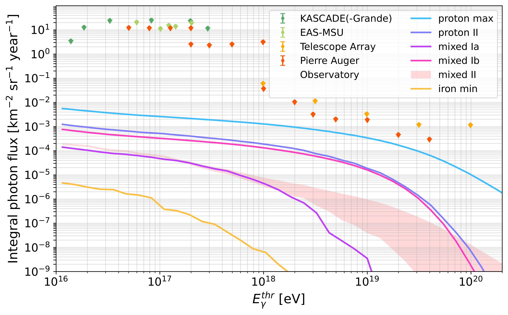
图注：Integral flux of cosmogenic photons as a function of photon energy threshold $E_\gamma^{\text{thr}}$ of the six considered source scenarios. Also shown the present experimental upper limits on photons (taken from~\cite{PierreAuger:2025jwt}).
对应解读：“建议重点查看的图表”第3、5、6项；“关键图表逐图导读”图3、图5；以及模型通量与实验上限比较段落。
入选理由：这是最直接支撑论文核心结论的综合图：横轴为光子能量阈值，纵轴为积分宇宙源光子通量，并叠加当前实验光子上限。它能同时检验混合组成模型是否低于上限约1.5个数量级、纯质子高通量情形是否接近或超过限制、纯铁/低通量情形距离实验灵敏度有多远，比单独的产额图更能支撑日报关于可观测性和模型受限性的解读。
来源与置信度：\(arxiv_source\)；high；\(arxiv_source\) / main.tex:figure[7]
Fig03
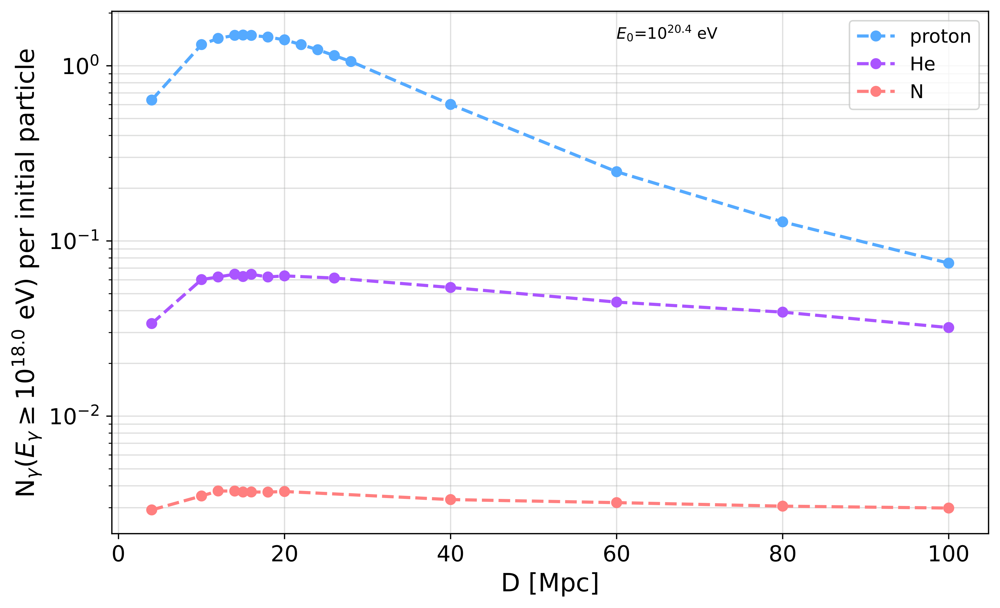
图注：Number of photons at Earth above $10^{18}$~eV for different nuclei with initial energy of $10^{20.4}$~eV against the propagated distance.
对应解读：“建议重点查看的图表”第1、2项；“关键图表逐图导读”图1、图2；详细解释中关于15 Mpc峰值和不同原初质量差异的段落。
入选理由：该图以固定初始能量下的传播距离为横轴，比较不同原初核在地球处产生的高于10^18 eV光子数，正好对应日报强调的单源传播物理。它可以直接检查质子曲线是否在约15 Mpc附近达到最大产额，也能展示质子相对重核的优势以及距离增大后差距缩小的趋势。
来源与置信度：\(arxiv_source\)；high；\(arxiv_source\) / main.tex:figure[3]
Fig10
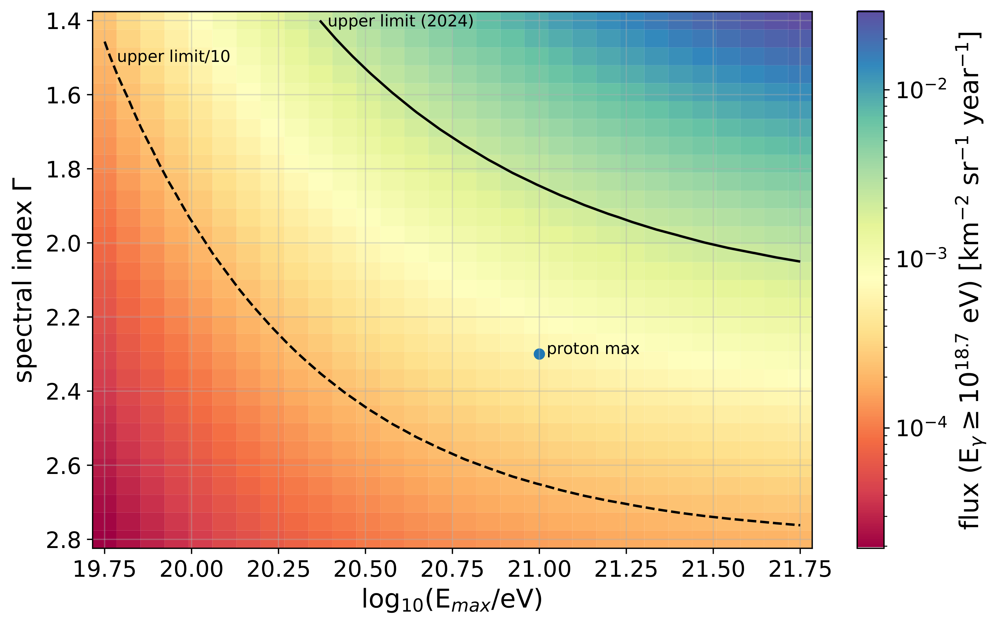
图注：Integral photon fluxes above $10^{18.7}$~eV expected for pure-proton scenarios similar to the
proton max'' scenario when varying $E_\text{max}$ (cf.~Eq.~(\ref{eq:cutoff_simple})) and spectral index $\Gamma$. Values for theproton max'' scenario are marked. Lines indicate the present upper limit~\(\cite{PierreAuger:2024ayl}\) and the flux level in case of a factor 10 improvement.对应解读：“建议重点查看的图表”第4、6项；“关键图表逐图导读”图4、图6；模型拟合中关于纯质子参数组合被当前上限约束的段落。
入选理由：该图扫描纯质子场景的最大能量和注入谱指数，并给出高于10^18.7 eV的积分光子通量，同时标出现有上限和未来十倍改进水平。它最适合支撑‘某些纯质子参数组合已被当前光子上限限制’这一结论，也能展示受限区域如何依赖硬谱和高最大能量。
来源与置信度：\(arxiv_source\)；high；\(arxiv_source\) / main.tex:figure[10]
Fig01
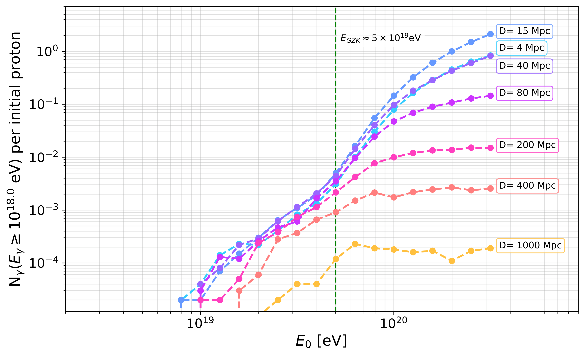
图注：Number of photons at Earth above $10^{18}$~eV from initial protons depending on initial energy $E_0$ and source distance. The onset of the GZK process is indicated. For very low photon yields, the effect of statistical fluctuations becomes visible.
对应解读：“建议重点查看的图表”第1项；“关键图表逐图导读”图1；详细解释中关于质子源距离、GZK过程和光子产生/吸收平衡的段落。
入选理由：该图展示初始质子在不同初始能量和源距离下产生的E_gamma>10^18 eV光子数，并标示GZK过程起始位置。它能补充Fig03，说明15 Mpc附近峰值并非单一能量点的偶然现象，而是与质子能量和传播相互作用阈值有关。
来源与置信度：\(arxiv_source\)；high；\(arxiv_source\) / main.tex:figure[1]
Fig02
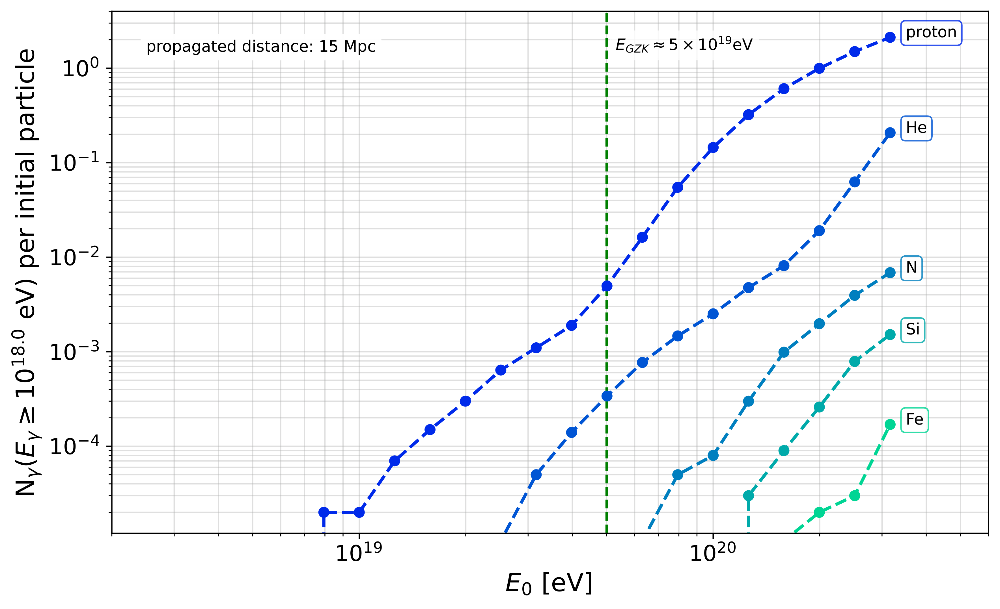
图注：Number of photons at Earth above $10^{18}$~eV for different nuclei propagated over a distance of $\SI{15}{Mpc}$ against the initial energy $E_0$.
对应解读：“建议重点查看的图表”第2项；“关键图表逐图导读”图2；详细解释中关于相同总注入能量下质子比重核产生更多光子的段落。
入选理由：该图固定15 Mpc传播距离，比较不同原初核随初始能量变化的高能光子产额。它能帮助读者确认质量组成对光子产额的影响，尤其是在峰值距离附近质子、氦、氮、硅、铁等原初粒子的相对高低，是Fig03的能量维度补充。
来源与置信度：\(arxiv_source\)；high；\(arxiv_source\) / main.tex:figure[2]
Fig06
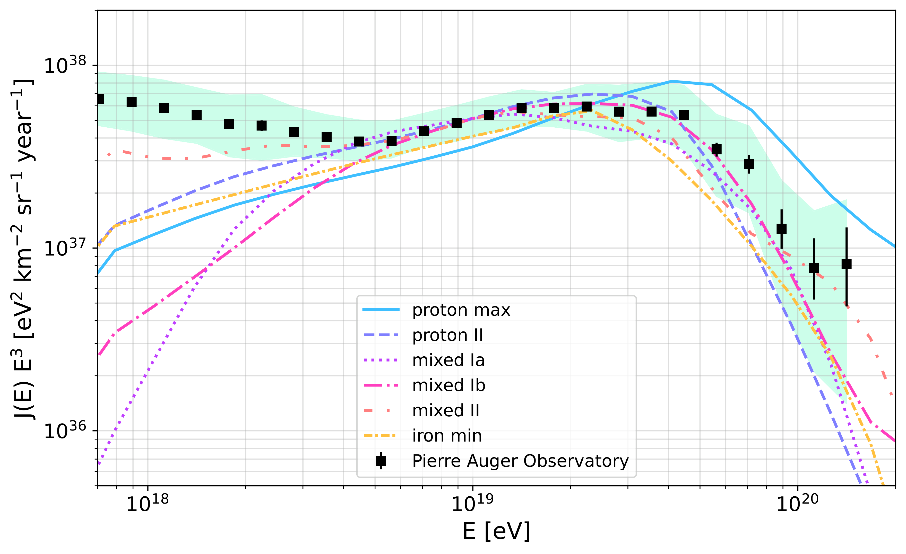
图注：Cosmic-ray fluxes of the six considered source scenarios and the flux measured by the Pierre Auger Observatory~\(\cite{PierreAuger:2021hun}.\) The error bar indicates the statistical and the band the added statistical and systematic uncertainty.
对应解读：模型拟合段落；详细解释中关于六个源场景需先能描述Pierre Auger宇宙线能谱的部分。
入选理由：该图不是光子通量主图，但它显示六个源场景的宇宙线通量与Auger观测及统计/系统误差的比较，可用于说明这些光子预言不是任意模型，而是建立在能谱约束下的源场景之上。它对理解后续Fig07中各模型光子通量差异的物理前提有辅助价值。
来源与置信度：\(arxiv_source\)；high；\(arxiv_source\) / main.tex:figure[6]
强相关工作
这篇工作与超高能宇宙线传播、多信使副产物和 Auger 组成拟合文献直接相连。同类研究通常检索关键词包括“cosmogenic photons ultra-high-energy cosmic rays”、“UHECR photon limits Pierre Auger Observatory”、“cosmogenic gamma rays proton iron composition”、“UHECR mixed composition propagation”。若要找相似观测，应优先查 Auger 关于超高能光子上限的系列论文、Telescope Array 的光子搜索，以及未来实验如 GRAND、POEMMA、GCOS 对超高能光子和中微子的灵敏度预估。
基础理论方面，应回到 \(\mathrm{GZK}\) 机制、光致介子产生、光致裂解和电磁级联传播的经典工作。相反或存在张力的观点主要来自两类模型：一类是传统纯质子或高质子分数模型，它们容易产生较高宇宙源光子和中微子通量，因而被光子/中微子上限压缩；另一类是 Auger 倾向的最高能端较重组成模型，它们能降低二级信使通量，但需要解释源加速、最大刚度和能谱形状。检索时可组合“Auger combined fit spectrum composition”、“UHECR maximum rigidity mixed composition”、“cosmogenic neutrino photon constraints”。
本论文不对应某个单一瞬变或命名天体源，而是同类源群和传播模型研究。因此 \(source_context_links\) 主要给出同类观测、目录或基础页面，而不是同一事件链接。读者若要扩展，应在 NASA ADS 或 arXiv 以论文题名、作者名和上述关键词追踪引用链。
同一事件 / 同类源线索：
- https://arxiv.org/abs/2607.14670
- https://www.auger.org/science/publications
- https://www.telescopearray.org/
相似工作：
基础理论 / 方法工作：
- https://doi.org/10.1103/PhysRevLett.16.748
- https://doi.org/10.1134/S0021364000240027
- https://doi.org/10.1146/annurev.nucl.57.090506.123020
相反观点 / 张力线索：
8. Ultra-long simulations of collisionless relativistic shocks in front-comoving frame: evidence for a steady state and its properties
- 来源：arXiv / astro-ph.HE
- 链接：https://arxiv.org/abs/2607.14235v1
- 作者：Mikhail Garasev, Evgeny Derishev
- 评分：novelty 8/10，importance 8/10，relevance 8/10，final 9.00/10
- 推荐理由：超长2D3V PIC模拟无磁化相对论电子-正电子激波，提出前沿共动框架和稳态证据，并质疑真正幂律Fermi尾形成；对GRB/PWN/喷流等高能源激波辐射和粒子加速理论有基础意义。
中文题目：在激波前沿共动系中进行超长无碰撞相对论激波模拟：稳态及其性质的证据
做了什么：这篇论文用二维空间、三维速度的粒子-in-cell模拟研究未磁化相对论正负电子对等离子体激波，重点不是再做一个更大的短时模拟，而是通过“激波前沿共动系”和下游移动墙边界条件，把计算域大小固定下来，从而把演化时间推进到超过 \(100000\,\omega_p^{-1}\)。作者发现，下游区域趋向一个与具体数值实现无关的渐近稳态，主要由注入边界的上游温度决定；上游前驱区演化更慢，并保留对上游盒长的依赖。一个重要物理结论是，典型费米型加速在这些未磁化对激波中被限制在有限能量范围内，没有形成真正的幂律非热尾；另一个结论是，下游磁场呈现类似孤子斑点的结构，每个磁化核心外包弱磁化区域，径向剖面近似洛伦兹型。
为什么重要：相对论无碰撞激波是伽马暴余辉、脉冲星风星云、相对论喷流终端激波等高能天体问题的基础构件，但过去很多PIC模拟受计算时间和盒长限制，难以判断看到的是暂态还是渐近态。这篇文章的价值在于把模拟时间推到远超以往的尺度，直接检验“未磁化对激波会不会自然进入稳态、会不会持续产生幂律非热粒子、Weibel磁场是否长期维持”等长期悬而未决的问题。
理论 / 观测 / 仪器方法价值：对理论而言，它给出了一个负面但很有分量的约束：在作者模拟的未磁化相对论 \(e^{-}e^{+}\) 激波条件下，不能简单假设无限延伸的费米幂律尾。对数值方法而言，前沿共动系加移动墙边界显著降低了超长演化的成本，为以后研究离子-电子激波、弱磁化激波、辐射冷却或三维效应提供了可移植框架。对观测解释而言，它提醒我们，许多同步辐射模型中作为输入的 \(p\)、\(\epsilon_e\)、\(\epsilon_B\) 也许不是普适常数，而可能取决于下游稳态微结构。
为什么应该关注：如果你在做伽马暴余辉、相对论喷流、PWN或高能暂现源辐射建模，这篇文章直接触及一个常被默认跳过的环节：激波是否真的给你一个稳定的非热电子幂律和可参数化的磁场。若结果成立，许多把微物理压缩成固定 \(\epsilon_e\)、\(\epsilon_B\) 和单一幂律电子谱的模型需要更谨慎地解释；若你做PIC模拟，它也提供了一个值得复现和扩展的长时标边界条件方案。
展开详细解读：文章讲解、背景、理论、重点章节、图表与相关工作
文章详细讲解
科学问题：未磁化相对论正负电子对激波长期以来被当作高能天体中无碰撞激波微物理的“干净实验室”。在这类激波中，上游冷或温的对等离子体以相对论速度撞入下游，Weibel/filamentation不稳定性产生小尺度磁场，磁场再散射粒子并形成热化和可能的非热加速。关键难题是，传统PIC模拟只能覆盖有限的 \(\omega_p^{-1}\) 时间和有限盒长，因此很难区分暂态增长、边界反射和真正渐近稳态。本文直接问：如果把演化时间拉得足够长，未磁化对激波会稳定下来吗？下游磁场和粒子谱的长期形态是什么？
作者怎么做：论文采用 \(2\mathrm{D}3\mathrm{V}\) PIC模拟，也就是二维空间网格但保留三维动量/速度分量。模拟对象是未磁化相对论 \(e^{-}e^{+}\) 对等离子体激波。与常见“墙反射”或“注入流撞墙”设置不同，作者把计算放在激波前沿共动系中，并在下游使用移动墙边界条件，同时在上游边界连续注入粒子。这样激波前沿大体固定在盒内，计算域不必随着下游区域线性增长，从而允许总演化时间超过 \(100000\,\omega_p^{-1}\)，比过去公开模拟长数倍。作者还系统改变上游/下游长度、横向盒宽、每格粒子数等数值参数，用来检查结论是不是边界或噪声导致。
关键结果：最核心的结果是下游区域出现强证据支持渐近、时间无关的稳态。这里的“稳态”不是说每个磁丝静止，而是统计量，例如粒子分布、能量密度分区、磁场结构的统计分布，不再随总演化时间系统漂移。作者报告，下游稳态主要由注入边界处的上游温度决定，而不依赖某一次数值实现。相反，上游前驱区演化较慢，并且对上游盒长仍敏感；这意味着前驱区的长期结构在当前计算中尚未完全成为盒长无关的天体极限。粒子加速方面，作者没有看到真正形成幂律尾，而是发现类费米加速被限制在有限能量范围。磁场方面，下游磁场不是均匀湍流海，而是由相互较独立的磁化斑点组成：每个斑点有紧凑强磁化核心，周围是更宽的弱磁化包层，围绕斑点中心的磁场分布近似洛伦兹型。
局限和下一步：本文仍是二维空间模拟，虽然速度是三维的，但三维Weibel湍流、磁丝合并和粒子回返通道可能与二维不同。模拟也限定在未磁化 \(e^{-}e^{+}\) 对等离子体，不能直接外推到电子-离子激波、有限上游磁化 \(\sigma\)、高辐射冷却或强外部光子场环境。上游前驱区仍有盒长依赖，说明与最高能粒子回游和远上游扰动有关的部分尚未完全收敛。下一步最自然的是用同类前沿共动方法做三维验证、扫描上游温度和洛伦兹因子、引入有限磁化及离子质量比，并把下游稳态结构转化为可用于同步辐射/逆康普顿模型的有效输运和辐射参数。
关键结果是怎么做出来的
这篇文章最重要的证据链从样本设计开始。作者不是只给一组“最长模拟”，而是做了一系列 \(2\mathrm{D}3\mathrm{V}\) PIC运行，改变上游长度、下游长度、横向尺寸以及每格粒子数。所有运行都针对未磁化相对论 \(e^{-}e^{+}\) 对激波，且采用前沿共动系：上游边界连续注入，下游用移动墙保持激波在固定计算域内。最长运行超过 \(100000\,\omega_p^{-1}\)，这是判断长期统计量是否收敛的关键。
下游稳态的判据应主要看随时间分段的统计剖面是否停止漂移：例如下游粒子能谱、磁能密度 \(\epsilon_B\)、动能到热能的转换、磁场相关长度和斑点分布等。论文摘要称跨越不同盒长、横向尺寸和粒子数的模拟都支持下游渐近稳态，且稳态只依赖注入边界的上游温度。这意味着作者的模型比较不是传统意义上两个解析模型的贝叶斯因子，而是数值收敛检验：若改变数值实现而下游统计量一致，则把差异归为有限盒长或粒子噪声的可能性降低。
关于非热加速，关键应看粒子能谱在不同时刻的高能端是否持续向高能移动，以及是否存在稳定指数区间。作者的结论是费米型加速有能量上限，真正幂律尾从未形成。因此支撑这一点的图表应包括 \(dN/d\gamma\) 或 \(\gamma dN/d\gamma\) 的时间序列、最高能量随时间的曲线、以及把热峰和可能的高能肩部区分开的拟合残差。若幂律只在不到一个数量级能区出现，或指数随时间和空间窗口改变，就不应称为稳健非热尾。
磁场结构的证据链应来自二维磁场图、斑点中心对齐后的叠加剖面以及统计分布。作者报告下游磁场呈现孤子状结构：独立磁域包含强磁化核心和弱磁化外包层，围绕中心的剖面近似洛伦兹型。这里需要检查斑点识别算法是否依赖阈值、横向盒宽是否限制了大尺度合并、以及不同粒子数是否改变核心强度。若洛伦兹剖面在不同时间窗口和不同盒宽中都成立，说明它不只是瞬时磁丝投影，而可能是下游稳态的基本单元。
主要系统误差来自有限维度、有限横向尺寸、有限上游长度、粒子噪声和边界条件。摘要明确指出上游前驱区仍随上游长度变化，这本身就是一个重要的稳健性边界：论文对下游辐射相关区域的结论较强，对远上游前驱区的天体极限结论较弱。读者应特别关注作者是否把前驱区的盒长依赖与下游稳态分开讨论，以及是否展示了把诊断窗口放在远离边界和激波前沿瞬态区后的结果。
展开背景、理论、公式、模型、章节和图表导读
背景知识
研究对象是相对论无碰撞激波，特别是由正负电子对等离子体组成、上游无外加磁场的情形。无碰撞并不表示粒子不相互作用，而是说库仑碰撞时间远大于动力学时间，激波厚度和热化由集体电磁场、等离子体不稳定性和波粒相互作用控制。对等离子体没有质子-电子质量比带来的额外尺度，因此常被用作研究相对论激波微物理的基准系统。
历史上，Weibel或filamentation不稳定性被认为能在未磁化相对论激波中从各向异性流中抽取能量，生成横向电流丝和小尺度磁场。这一机制为伽马暴余辉等模型中需要的局地磁场提供了自然来源。早期PIC模拟显示激波能热化粒子，并在某些设置中出现非热高能尾，但这些结论常受限于模拟时间、盒长、维度和边界条件。
为什么现在值得重新看？因为很多天体辐射模型把激波微物理简化为几个参数，例如电子能量分数 \(\epsilon_e\)、磁场能量分数 \(\epsilon_B\) 和电子谱指数 \(p\)。这些参数在观测拟合中往往被当作常数或缓慢变化量，但它们实际应由激波下游的非线性等离子体状态决定。如果PIC模拟尚未达到稳态，那么从短时模拟读出的 \(\epsilon_B\) 或非热尾可能只是暂态。
该领域一个常见误区是把“出现一段高能肩部”直接等同于“形成费米加速幂律”。真正的幂律要求在足够宽能区内有稳定斜率，并且最高能量或截止能量的演化与加速和逃逸机制一致。另一个误区是把二维PIC中看到的磁丝寿命直接外推到三维天体激波；二维几何会限制某些湍流级联和磁丝绕行方式。因此本文的长时二维结果非常有价值，但仍需要三维和不同等离子体组成的检验。
还有一个容易忽略的背景是前驱区与下游辐射区的区别。高能粒子可回到上游，在激波前方激发扰动；这一区域对最高能粒子加速很重要，但许多同步辐射光子主要来自压缩、热化后的下游。本文发现前驱区仍有盒长依赖，而下游更接近稳态，这意味着不同观测问题对数值收敛性的要求不同。
基础理论 / 方法脉络
物理图像可从两个相向流或一束相对论流撞向已热化下游开始。上游粒子带有有序动能，在激波过渡层中通过自洽电磁场散射，动能转化为随机热能和磁场能。由于库仑碰撞无效，决定激波厚度的不是平均自由程，而是等离子体频率 \(\omega_p\)、皮肤深度 \(c/\omega_p\) 和由不稳定性产生的场结构。
未磁化对等离子体激波中最重要的不稳定性是Weibel/filamentation模式。当粒子动量分布各向异性时，微小电流扰动产生磁场，磁场又把同向电流聚束，形成正反馈。对激波而言，这些磁丝既提供散射，也提供下游辐射所需的小尺度磁场。本文的特殊之处在于不只关注磁场生成，而是关注这些磁场在极长时间后是否形成统计稳态。
PIC方法把等离子体表示为宏粒子，粒子按洛伦兹力推进，电流沉积到网格后再用麦克斯韦方程更新电磁场。\(2\mathrm{D}3\mathrm{V}\) 表示位置依赖两个空间坐标，但粒子速度和电磁场分量可为三维。这样的设置比全三维便宜很多，能把时间推得更长，但也可能改变湍流拓扑和粒子散射路径。
本文采用的前沿共动系和移动墙边界，本质上是一种让激波不在盒中快速漂移的数值坐标选择。传统固定墙模拟中，下游区域随时间增长，若要保持完整结构，盒长也要增长；本文通过在下游移动边界并持续上游注入，固定计算域大小，从而把计算资源集中在激波附近和有限下游窗口。这种方法的关键风险是边界反射或移动墙算法是否改变下游统计，因此作者必须用不同盒长和粒子数做收敛检验。
常见退化包括物理稳态与数值稳态的混淆、有限横向盒宽造成的磁斑合并饱和、有限粒子数导致的噪声加热，以及上游边界过近导致最高能粒子无法完整回游。本文结论中下游稳态较强、上游前驱区较弱，正反映了这些选择效应：下游热化区对边界较不敏感，而前驱区涉及长程回游和慢演化。
公式与推导
第一步是确定基本尺度。对正负电子对等离子体，若每种粒子的本征数密度为 \(n\)，常用非相对论形式的等离子体频率可写为
其中 \(e\) 是元电荷，\(m_e\) 是电子质量。对应皮肤深度为 \(c/\omega_p\)。本文把演化时间写成 \(\omega_p^{-1}\) 的倍数，因此超过 \(100000\,\omega_p^{-1}\) 意味着模拟覆盖了大量集体振荡和散射时间。
第二步是粒子动力学。PIC中每个宏粒子满足洛伦兹力方程
其中 \(q\) 是粒子电荷，\(\mathbf{p}=\gamma m_e\mathbf{v}\)，\(\gamma=(1-v^2/c^2)^{-1/2}\)。无碰撞激波的热化来自 \(\mathbf{E}\) 和 \(\mathbf{B}\) 的集体散射，而不是二体碰撞。
第三步是场的自洽更新。电磁场满足
其中 \(\mathbf{J}\) 由宏粒子电流沉积得到。Weibel不稳定性就是粒子分布各向异性通过 \(\mathbf{J}\) 放大 \(\mathbf{B}\) 的过程。
第四步是用能量通量理解激波。上游冷流的能量通量量级可写为
其中 \(\Gamma_0\) 是上游相对下游或激波参考系的洛伦兹因子，系数会随参考系和焓定义改变。激波下游若达到稳态，热能、磁能和粒子非热能分数应围绕稳定值波动。
第五步是定义磁化能量分数。常用诊断量为
其中 \(e_{\rm int}\) 是下游内能密度。本文关于下游磁场稳态和磁化斑点的结论，可通过 \(\epsilon_B\) 的空间分布、时间平均和概率分布来检查。
第六步是粒子能谱。若存在标准非热幂律，通常写成
其中 \(A\) 是归一化，\(p\) 是谱指数，\(\gamma_{\rm cut}\) 是截止洛伦兹因子。本文的结论是未形成真正幂律尾，因此读者应检查是否存在稳定的 \(p\) 和足够宽的 \(\gamma\) 区间，而不只是短暂高能肩部。
第七步是费米型加速的时间尺度估计。若散射近似扩散，加速时间常写为
其中 \(r_L=\gamma m_e c^2/(eB)\) 是拉莫尔半径，\(\eta\) 表示散射效率。若磁场相关长度有限、前驱区有限或回返概率下降，\(t_{\rm acc}\) 会迅速变长，导致最大能量饱和。
第八步是磁斑洛伦兹剖面。摘要称斑点中心附近磁场近似洛伦兹型，可用示意式
其中 \(B_0\) 是核心超出背景的场强，\(r_0\) 是核心尺度，\(B_{\rm bg}\) 是弱磁化包层或背景。若许多斑点在中心对齐后仍符合该式，说明磁场组织成相对稳定的局域结构。
第九步是稳态检验。可把某个诊断量 \(Q\) 在不同时间窗口 \([t_i,t_{i+1}]\) 的平均写为
若 \(\bar Q_i\) 在误差内不再随 \(t_i\) 单调漂移，且对盒长和粒子数变化不敏感，就支持统计稳态。这里 \(Q\) 可以是 \(\epsilon_B\)、谱截止 \(\gamma_{\rm cut}\)、热峰温度或磁斑尺度。
第十步是数值收敛的残差式诊断。两组模拟 \(a\) 和 \(b\) 的相对差异可写为
其中 \(\sigma_a\) 和 \(\sigma_b\) 是时间波动、空间采样或粒子噪声带来的不确定度。若下游多个 \(Q\) 的 \(\Delta_Q\) 接近或小于数值噪声预期，而上游前驱区的 \(\Delta_Q\) 随盒长显著变化，就正对应本文“下游稳态强、前驱区收敛较弱”的结论。
模型拟合 / 应用方法
这类PIC论文的“拟合”不同于观测论文中的光谱拟合，更多是对模拟输出的统计模型化。核心拟合量包括下游粒子能谱的热分布参数、高能端是否可由幂律或截断幂律描述、磁能分数 \(\epsilon_B\) 的空间/时间平均、磁斑尺度 \(r_0\)、核心场强 \(B_0\) 和背景场 \(B_{\rm bg}\)。本文摘要特别指出磁场斑点剖面近似洛伦兹型，因此一个自然拟合是对斑点中心对齐后的 \(B(r)\) 或 \(B^2(r)\) 做洛伦兹剖面拟合。
粒子谱方面，模型比较的关键不是能否局部拟合一段幂律，而是热分布、截断高能肩部和真正幂律尾之间的区分。应比较 Maxwell-Jüttner热分布加截断项、热分布加幂律尾、以及纯经验截断幂律等模型。若幂律指数 \(p\) 对时间窗口、空间选区或能区边界高度敏感，就不应把它解释为稳定费米加速的产物。
似然或统计量可采用对谱箱计数的泊松似然，也可对高计数区域使用 \(\chi^2\) 近似。磁场剖面拟合则常面对空间相关噪声，普通独立误差假设会低估参数不确定度。更稳妥的做法是用时间分块、空间分块或不同随机种子给出样本方差；本文通过改变盒长、横向尺寸和每格粒子数，实际是在做数值系统误差的外部检验。
主要退化包括 \(B_0\) 与 \(r_0\) 的退化：较强但较窄的核心和较弱但较宽的核心可能给出相近的总磁能。粒子谱中 \(p\) 与 \(\gamma_{\rm cut}\) 也强退化，尤其当可用高能动态范围不足一个数量级时。上游温度会影响下游热峰宽度和有效散射，若不固定或不扫描上游温度，可能把温度效应误认为普适稳态性质。
模型可能失败的地方也很清楚。二维几何会改变磁斑合并和湍流级联，移动墙边界可能在下游引入弱反射或选择性移除结构，有限上游盒长会限制最高能粒子的回游距离。实际应用中，若要把这些结果用于伽马暴余辉或喷流辐射，应把下游稳态输出转化为随距离变化的电子分布和磁场相关函数，而不是只提取单一 \(\epsilon_B\) 数值。
重点章节 / 结果段落怎么读
-
数值设置和边界条件：这应是最值得先读的部分。重点看作者如何定义激波前沿共动系、移动墙如何实现、上游连续注入的温度和洛伦兹因子如何设定，以及边界是否会影响下游统计量。理解这一节后，才能判断超长运行是否真比传统盒子更接近天体极限。
-
模拟套件和收敛测试：建议检查不同上游长度、下游长度、横向尺寸、每格粒子数的表格。不要只看最长模拟；真正支撑结论的是参数扫描后下游统计量一致，而前驱区仍显示盒长依赖。这里也是识别数值噪声和有限尺寸效应的关键。
-
下游稳态诊断：这一部分应包括磁能、粒子能谱、密度和场结构随时间的演化。读者要看作者如何定义“稳态”，是单点时间快照，还是多个时间窗口的统计平均。若有时间分块结果，应优先看分块均值和误差。
-
粒子加速和能谱：这里直接关系到“没有真正幂律尾”的强结论。读者应检查高能端动态范围、拟合能区、截止能量随时间变化，以及是否比较了不同空间区域的粒子谱。若论文只以线性坐标展示能谱，最好转换成双对数或能量加权形式重新理解。
-
磁场孤子状斑点结构：这一节应展示二维磁场图、斑点识别、中心对齐剖面和洛伦兹拟合。重点看这些斑点是否随时间独立演化、是否受横向盒宽限制、以及核心和包层对总磁能的贡献。
建议重点查看的图表
-
模拟几何和边界示意图：看上游注入、激波位置、下游移动墙之间的相对关系，确认为什么计算域能保持固定。
-
激波结构的二维快照：检查密度、磁场或电流图中激波前沿、下游斑点和上游前驱区的位置，注意是否有明显边界伪影。
-
下游诊断量随时间曲线：重点看 \(\epsilon_B\)、平均粒子能量、热峰温度或磁场相关长度是否在晚期进入平台。
-
不同盒长/粒子数的收敛比较图：看下游曲线是否重合、前驱区曲线是否分离，这是本文结论强弱分界。
-
粒子能谱时间序列：检查高能端是否持续延伸，是否存在稳定幂律斜率，以及截止能量是否饱和。
-
磁斑中心对齐后的径向剖面：看洛伦兹型拟合是否覆盖核心和包层，残差是否系统偏离。
-
斑点统计表或分布图：检查斑点大小、峰值磁场、间距和寿命的分布，判断“独立磁域”是否有统计支撑。
关键图表逐图导读
图 1：如果论文给出模拟设置示意图，横轴通常是激波法向坐标，纵向表示横向盒宽。读图时要确认上游注入边界、激波前沿和下游移动墙的位置关系。主要结论应是前沿共动设置如何避免下游区域无限增长。陷阱是不要把坐标静止误认为流体静止；这是数值参考系选择。
图 2：二维密度、磁场或电流快照通常最能展示激波微结构。坐标轴应以 \(c/\omega_p\) 为单位，颜色表示 \(B\)、\(B^2\)、密度或电流强度。应看下游是否充满斑点状强磁化核心，以及上游是否存在前驱扰动。陷阱是颜色条动态范围会夸大弱背景或压低强核心，需要结合定量剖面。
图 3：下游平均量随时间的曲线应以 \(t\omega_p\) 为横轴，以 \(\epsilon_B\)、平均能量或场相关长度为纵轴。若晚期曲线进入平台并且不同数值设置重合，就是稳态证据。陷阱是局部平台可能只是短时间饱和；本文的优势在于时间延伸到 \(100000\,\omega_p^{-1}\)，应看平台是否覆盖足够长时间。
图 4：不同上游盒长或横向盒宽的比较图应区分下游和前驱区。若下游统计曲线相近而前驱区诊断量随上游长度改变，说明结论不能一刀切外推到整个模拟盒。陷阱是只看全盒平均会把前驱区未收敛和下游已收敛混在一起。
图 5：粒子能谱图通常用 \(\gamma\) 或动能为横轴，\(dN/d\gamma\) 或能量加权谱为纵轴。应寻找稳定直线段、热峰、高能截止和不同时刻最高能量变化。本文关键结论是没有真正幂律尾，因此如果图中只有很窄的近似直线段，不应过度解读为费米加速成功。
图 6：磁斑径向剖面图应以距斑点中心的半径 \(r\) 为横轴，以平均 \(B\)、\(B^2\) 或 \(\epsilon_B\) 为纵轴，并叠加洛伦兹型模型线。重点看核心、包层和远背景是否都被同一函数合理描述。陷阱是斑点中心选择和阈值会影响剖面，最好查看不同阈值的稳健性。
图 7：若有附录稳健性图，应优先检查每格粒子数和随机种子变化。粒子噪声会影响小尺度电流和高能尾，若增加粒子数后结论不变，非幂律尾和磁斑结构才更可信。
论文原图 / 可嵌入图片
Fig03
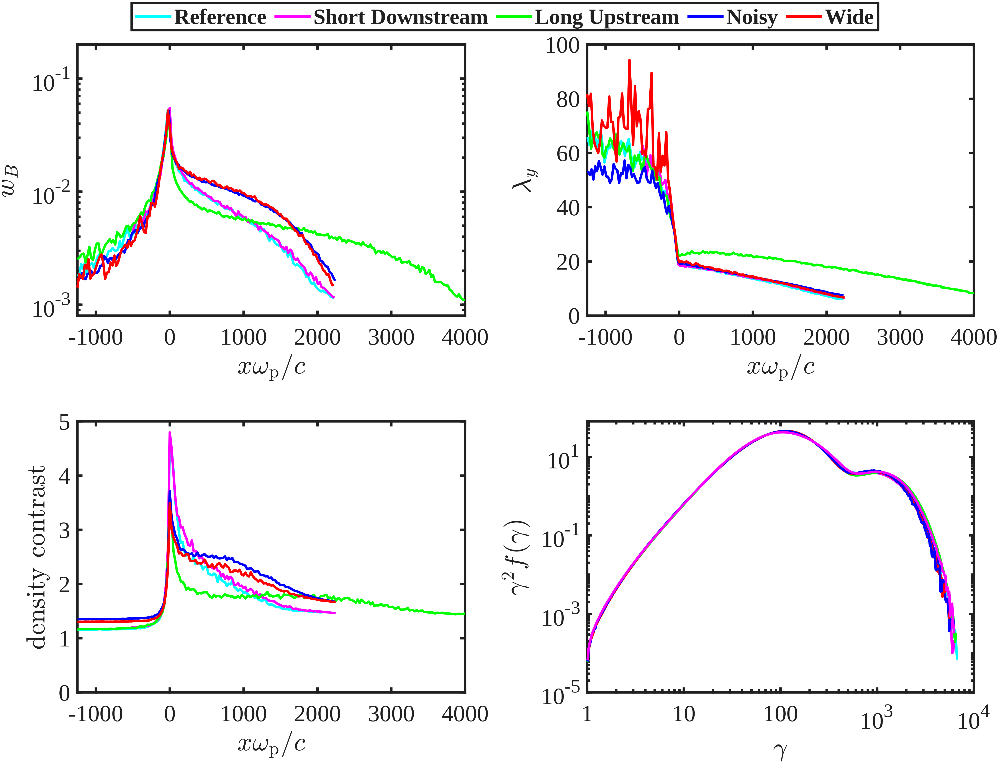
图注：Late-time profiles of the magnetic energy density $w_\mathrm{_B}$, correlation length $\lambda_y$ and density contrast as a function of coordinate along the flow and particle energy distribution for 5 simulations --- \(\simmain,\) \(\simshort,\) \(\simshortl,\) \(\simlong,\) and \(\simwide{}\) (see Table~\(\ref{SummaryTable}\) for summary of their parameters).
对应解读：对应“不同盒长/粒子数的收敛比较图”和关键图表导读图4；也支撑下游稳态与前驱区盒长依赖的核心结论。
入选理由：该图直接并列5组模拟的晚期磁能密度、横向相关长度、密度反差和粒子能谱，是判断不同上游/下游长度、横向盒宽设置下哪些诊断量收敛的最关键证据。相比单次模拟图，它最能支撑日报中强调的“下游曲线重合、前驱区曲线分离”这一结论边界。
来源与置信度：\(arxiv_source\)；high；\(arxiv_source\) / apssamp.tex:figure[3]
Fig06
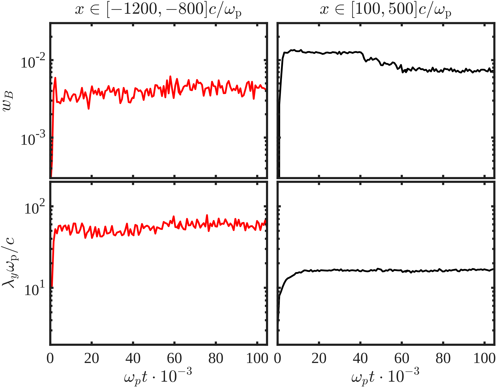
图注：Evolution of magnetic field characteristics behind (left {panels}) and ahead of (right {panels}) the shock front in \(\simmain{}\) simulation. {\(\it\) Top panels:} the average magnetic energy density in fixed downstream ($x \in [-1200, -800]c/\omega_\mathrm{p}$) and upstream ($x \in [100, 500]c/\omega_\mathrm{p}$) slabs. {\(\it\) Bottom panels:} the magnetic-field transverse coherence scale $\lambda_y$. All quantities are given as functions of simulation time.
对应解读：对应“下游诊断量随时间曲线”和关键图表导读图3；重点是\(\epsilon_B\)与磁场横向相干尺度是否在晚期进入平台。
入选理由：该图以模拟时间为横轴，分别给出激波后方和前方固定区域内的平均磁能密度与横向相干尺度演化，最直接检验\(t\omega_p\sim10^5\)长时段内下游是否达到统计稳态，同时显示上游前驱区演化较慢。
来源与置信度：\(arxiv_source\)；high；\(arxiv_source\) / apssamp.tex:figure[6]
Fig01
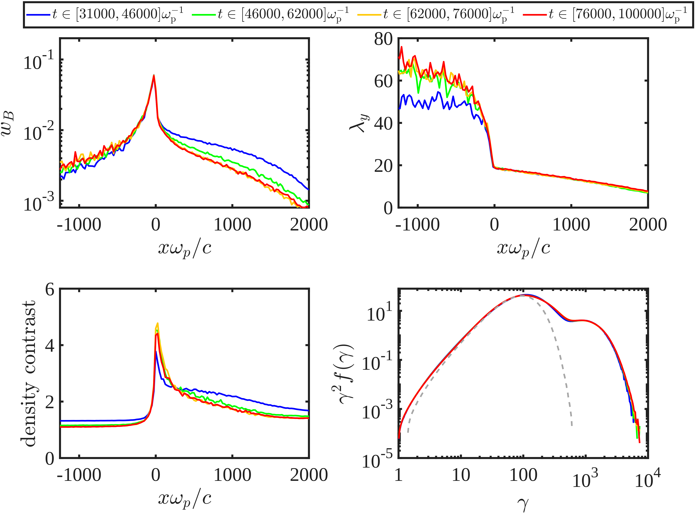
图注：Evolution of normalized magnetic energy density, correlation length, density contrast as a function of coordinate along the flow and particle energy distribution in the downstream region ($-750
入选理由：该图展示主模拟中下游区域的磁能、相关长度、密度反差随流向坐标的时间平均演化，并包含粒子能量分布及低能热成分虚线拟合。它同时支撑晚期平台、粒子谱早期稳定以及没有清晰幂律尾等多个日报重点。
来源与置信度：\(arxiv_source\)；high；\(arxiv_source\) / apssamp.tex:figure[1]
Fig05
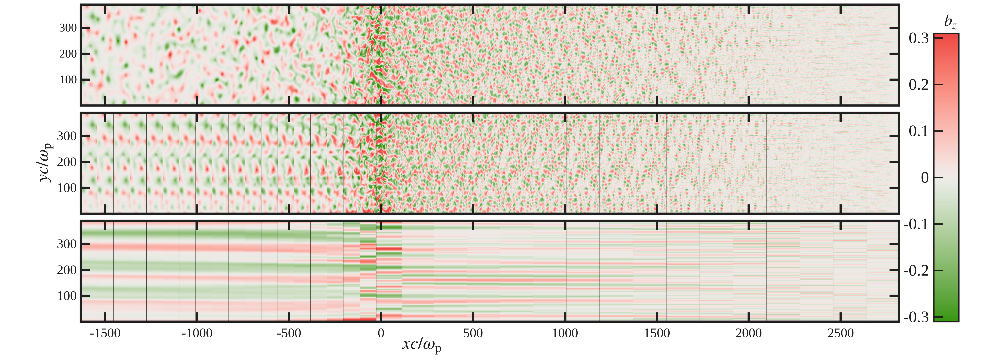
图注：Normalized out-of-plane magnetic field $b_z = B_z/\sqrt{8\pi n_{0}E_0}.$ {\(\it\) Upper panel}: instantaneous snapshot at $t\approx 96600\omega_\mathrm{p}^{-1}$ after the start of the simulation. {\(\it\) Middle panel}: composite map showing the evolution of the magnetic field within a fluid element in the locally-comoving (Lagrangian-like) frame. The element enters the simulation domain at $t = 91100\,\omega_p^{-1}$ (the rightmost snapshot) and approaches the downstream boundary at $t \approx 96600\,\omega_p^{-1}$ (the leftmost snapshot). Snapshots are taken every $\delta t=160\omega_p^{-1}$. For each snapshot the positions of the element’s leading and trailing edges are calculated by integrating the bulk velocity along the flow. More details on the technique are given in the text. The vertical lines mark the boundaries between consecutive snapshots. {\(\it\) Bottom panel}: each segment of the middle panel is averaged over the $x$-coordinate and multiplied by 2. This way we expose the secular evolution of the magnetic field topology.
对应解读：对应“激波结构的二维快照”和关键图表导读图2；用于查看下游斑点状强磁化核心、上游/下游结构以及边界伪影。
入选理由：该图给出归一化面外磁场的二维瞬时快照，并进一步用随流体元演化的拼接图展示磁场拓扑的长期变化，是候选图中最能直观看到下游磁斑结构和磁场形态演化的图。
来源与置信度：\(arxiv_source\)；high；\(arxiv_source\) / apssamp.tex:figure[5]
Fig04
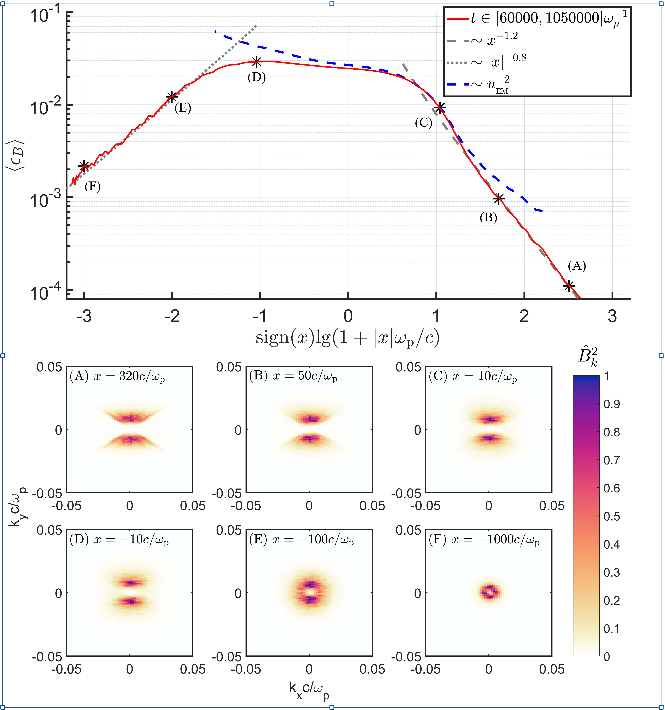
图注：{\(\it\) Top panel.} Red line -- trasversely and time-averaged magnetization profile $\langle\epsilon_B\rangle$ as function of distance to the shock front, time-averaged over the steady-state interval $t\in(60000, 105000)\,\omega_p^{-1}$ for the \(\simmain{}\) simulation. The gray lines are the power-law asymptotics for the upstream ($x>0$, dashed) and the downstream ($x<0$, dotted). Blue dashed line --- the amplification of the magnetic field due to compression of the flow (see the text). The black asterisks show the points at which the local spatial power spectra were calculated for panels (A)-(F). {\(\it\) Panels (A)-(F):} time-averaged (over $t\in(60000, 105000)\,\omega_p^{-1}$ interval) and normalized spatial power spectra $\hat B_k^2$ at different locations along the flow, shown in the top panel. Each spectrum is calculated in a window of width $\Delta x = 200c/\omega_p$; the windows are centered at $x\in\{-1000, -100, -10, 10, 50, 320\}\,c/\omega_p$ relative to the shock front position. The spectra were calculated in the front-comoving frame (i.e, in the mesh frame) and normalized to a harmonic with the largest amplitude. Further upstream of point (A) the numerical noise becomes noticeable.
对应解读：对应磁场空间结构、\(\epsilon_B\)空间剖面和局域功率谱诊断；补充关键图表导读中关于下游/上游磁场结构差异的定量解读。
入选理由：该图给出相对激波前沿距离的时间平均磁化剖面，并在多个位置展示局域空间功率谱，可定量说明磁场从下游到上游的空间衰减、谱结构和数值噪声边界。它比单纯快照更适合支撑磁场相关长度与湍动尺度的物理解释。
来源与置信度：\(arxiv_source\)；high；\(arxiv_source\) / apssamp.tex:figure[4]
Fig11
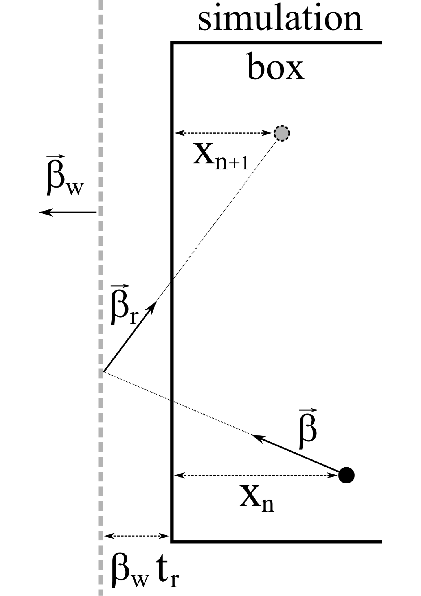
图注：A schematic representation of the moving-wall boundary condition. The solid black line outlines the edges of the simulation box. At the beginning of each timestep, the moving wall (thick dashed gray line) is placed at the boundary of the simulation box and then recedes from it with constant velocity $\beta_{w}$. It reflects particles acting as a mirror in its comoving frame. Positions of a particle at the start and at the end of each timestep are marked by black and gray circles respectively, and its trajectory is shown by thin dotted line.
对应解读：对应“模拟几何和边界示意图”以及关键图表导读图1；说明移动墙边界条件如何让计算域保持固定。
入选理由：该图是移动墙边界条件的示意图，明确显示移动墙在每个时间步中的位置、退行速度和粒子反射方式。虽然不是主要物理结果图，但它对理解前沿共动框架为何能实现超长时PIC模拟非常必要。
来源与置信度：\(arxiv_source\)；high；\(arxiv_source\) / apssamp.tex:figure[11]
强相关工作
这篇工作属于相对论无碰撞激波PIC模拟的同类研究，最直接的历史脉络包括Weibel介导激波、伽马暴余辉微物理、相对论对激波中的粒子加速效率，以及二维/三维PIC结果差异。建议检索关键词：\(\mathrm{relativistic\ collisionless\ shocks}\)、\(\mathrm{pair\ plasma\ PIC}\)、\(\mathrm{Weibel\ instability}\)、\(\mathrm{Fermi\ acceleration\ relativistic\ shocks}\)、\(\mathrm{gamma\ ray\ burst\ afterglow\ microphysics}\)。
与早期工作相比，本文的张力主要在“非热幂律尾是否自然形成”。一些PIC研究在特定磁化、倾角或维度下发现相对论激波可产生非热粒子；另一些研究则指出未磁化或特定几何下加速会受前驱区尺度、散射效率和磁场衰减限制。本文用超长时标强调，在未磁化对激波的下游稳态中，真正幂律尾并未出现。这不是否定所有相对论激波加速，而是把可行条件收窄。
同源或同一事件并不适用，因为本文是理论/数值模拟论文，不研究某个具名天体源或暂现事件。相关的“同类源”是伽马暴余辉、脉冲星风终端激波和相对论喷流激波；“历史原型”则是Weibel不稳定性生成磁场和早期PIC相对论激波模拟。
同一事件 / 同类源线索：
相似工作：
基础理论 / 方法工作：
相反观点 / 张力线索：
9. Black-Hole Spin Measurements from X-ray Reflection Spectroscopy: Quality Criteria and Community Recommendations
- 来源：arXiv / astro-ph.HE
- 链接：https://arxiv.org/abs/2607.14368v1
- 作者：Javier A. Garcia, Riley Connors, Laura W. Brenneman, James F. Steiner
- 评分：novelty 7/10，importance 8/10，relevance 8/10，final 8.70/10
- 推荐理由：Useful and potentially influential community framework for assessing X-ray reflection black-hole spin measurements, directly relevant to high-energy X-ray methodology and future observatory science.
中文题目：用 X 射线反射谱测量黑洞自旋：质量判据与社区建议
做了什么：这篇文章不是提出一个新的黑洞自旋测量，而是为“哪些 X 射线反射谱自旋结果值得信任”制定一套实用评估框架。作者把可靠性拆成三个核心要求：必须能清楚探测到相对论反射信号，必须能把内盘反射与连续谱、远处反射、吸收和仪器效应区分开，且自旋结果必须在合理改变模型、数据选择和吸积态处理后保持稳定。文章给出质量分类和报告清单，目标是为未来高通量、高分辨率 X 射线时代建立可复现、可维护的黑洞自旋测量目录。
为什么重要：反射谱自旋测量已被广泛用于恒星级黑洞和活动星系核，但不同论文的证据强度差异很大：有些结果由清晰的宽铁线和 Compton hump 支撑，有些则依赖模型假设或有限能段。若没有统一质量标准，自旋分布、喷流—自旋关系、黑洞增长史和强引力检验都会混入不可控系统误差。本文的重要性在于把“看起来有拟合结果”与“物理上可评估、统计上可复现的自旋约束”区分开。
理论 / 观测 / 仪器方法价值：对理论而言，它提醒使用自旋样本做人口统计或反馈模型时必须纳入质量等级，而不能把所有发表值等权处理。对观测而言，它把数据覆盖、信噪比、吸积态、远处反射、吸收和交叉定标等问题转化为可检查的报告项目。对仪器和方法而言，它为 XRISM、Athena、HEX-P/eXTP 类任务的模拟、观测设计和数据产品规范提供了判据框架。
为什么应该关注：如果你会引用黑洞自旋值、比较连续谱法与反射法、研究喷流或吸积盘截断，或者计划用未来 X 射线数据做反射谱拟合，这篇文章相当于一份“质控说明书”。它能帮助你判断某个 \,a_*\, 是否只是模型给出的数字，还是由数据真正要求的物理量。
展开详细解读：文章讲解、背景、理论、重点章节、图表与相关工作
文章详细讲解
科学问题：X 射线反射谱通过内吸积盘辐照后产生的宽铁线、软 X 射线反射结构和高能 Compton hump 来约束黑洞自旋。核心物理是最内稳定圆轨道半径与无量纲自旋 \,a_*\, 相关，而内盘发射在强引力场中受到多普勒展宽、引力红移和光线弯曲影响。问题在于，实际谱中这些特征并不总是唯一解释：连续谱弯曲、复杂吸收、远处冷反射、堆积效应、背景和交叉定标都可能制造或削弱类似的谱形。因此本文关注的不是“反射法是否有用”，而是“怎样判断一个已发表的反射法自旋测量是否稳健”。
作者怎么做：文章基于 2025 年 Wake Forest 黑洞自旋测量研讨会的讨论，提出一个面向社区使用的质量评估框架。框架的三根支柱是 detectability、uniqueness 和 robustness。detectability 要求数据中存在无歧义的相对论反射特征；uniqueness 要求该特征不能被连续谱、远处反射、吸收或仪器效应同样好地解释；robustness 要求自旋约束在合理改变模型假设、能段、时间选择、吸积态选择和校准处理后不发生灾难性漂移。作者进一步把这些原则转译成质量分类方案和未来论文应报告的 checklist。
关键结果：本文最有价值的结果是一套可操作语言，而不是某个新数值。它建议将反射自旋测量分为 robust、provisional 和 not assessable 等质量层级。robust 不仅意味着误差条小，还意味着相对论反射信号可探测、替代解释被测试、拟合残差合理、自旋对合理系统变化稳定。provisional 则可能有反射信号但缺少足够模型比较、能段覆盖或稳健性检验。not assessable 并不一定表示结果错误，而是公开信息不足，外部读者无法判断其可靠性。
局限和下一步：这篇文章有意保持为社区建议和方法框架，没有完成大规模模拟标定，也没有对所有历史自旋测量重新打分。作者明确指出，具体阈值需要由伴随模拟论文来校准，例如在不同信噪比、能段覆盖、吸收复杂度和仪器响应下，自旋误差与误判率如何变化。下一步应包括盲测、公开模拟挑战、统一报告模板、历史样本重评估，以及面向未来任务的观测策略优化。
关键结果是怎么做出来的
本文的核心证据链不是来自一个天体样本的事件计数，而是来自对反射谱测量流程中失效模式的系统拆解。作者选取的是一个“方法学样本”：已有恒星级黑洞 X 射线双星和活动星系核反射谱自旋文献中反复出现的问题，包括宽能段缺失、连续谱—反射退化、远处反射未分离、吸收未建模、状态依赖未处理和仪器系统误差。这类文章的样本选择标准并非统计完备目录，而是围绕社区讨论中最常见、最影响结论可复现性的案例类型。
质量分类的关键在于三个问题逐级过滤。第一，数据是否真的要求相对论反射分量？这通常需要看宽铁线红翼、蓝翼、反射连续谱和 Compton hump 是否在多个能段上彼此一致，而不只是某一窄能段残差。第二，相对论反射是否唯一？这里应比较含内盘反射模型、复杂吸收模型、远处反射模型和不同连续谱模型的拟合优度、残差结构与物理合理性。第三，自旋值是否稳健？同一数据在改变能段、辐照率参数化、盘倾角处理、铁丰度、密度、离化梯度或交叉定标常数后，若 \,a_*\, 从高自旋跳到低自旋，就不能称为 robust。
显著性和置信度在本文框架中被重新定位。作者并不主张只用一个 \,\Delta\chi^2\, 或贝叶斯因子就决定可靠性，因为反射模型是非线性、多参数、存在边界和系统误差的问题。更合理的做法是把统计改进、残差形态、参数后验、模拟恢复实验和替代模型比较结合起来。换言之，一个形式上很小的统计误差并不等于高质量自旋约束；若模型空间太窄或系统误差未探索，误差条可能只是条件误差。
支撑结论的图表类型应包括质量分类流程图、报告 checklist 表、系统误差来源矩阵、以及未来模拟标定计划。即使本文没有给出新的天体谱图，读者也应把这些图表当作“审稿量表”使用：检查某篇自旋论文是否报告了能段、曝光、计数率、状态分类、模型族、残差、参数协方差、替代模型和数据筛选敏感性。真正的结果不是某张曲线，而是把反射谱自旋从经验性拟合推进到可审计的测量程序。
主要系统误差在文章中被分成观测、天体物理和模型三层。观测层包括响应矩阵、背景、pile-up、交叉定标和能量增益；天体物理层包括吸收、远处反射、时间变源、盘风和状态变化；模型层包括薄盘到达 \,r_{\rm ISCO}\, 的假设、固定盘密度、单一区域离化、简化辐照率和铁丰度退化。稳健性检验的重点就是让这些误差逐项进入拟合，而不是只报告最佳模型下的统计置信区间。
展开背景、理论、公式、模型、章节和图表导读
背景知识
研究对象是吸积黑洞周围的 X 射线反射谱。热或非热的日冕光子照射相对论吸积盘后，会在盘表面产生荧光线、吸收边和 Compton 散射连续谱。最著名的特征是铁 \,K\alpha\, 线，其静止能量约在 \,6.4\, 到 \,6.97\,{\(\rm\) keV}\, 之间，取决于铁的离化态。内盘越靠近黑洞，线形越受广义相对论效应影响，红翼越宽，自旋约束也越强。
历史上，反射谱法与热连续谱法是电磁波段测黑洞自旋的两条主线。连续谱法主要用于恒星级黑洞软态，需要已知质量、距离和倾角；反射谱法则可用于 X 射线双星和 AGN，并且不直接依赖距离，但更依赖谱分解和反射模型。随着 XMM-Newton、Chandra、Suzaku、NuSTAR 和 NICER 等任务积累了大量数据，反射法产生了大量 \,a_*\, 估计值，也带来了“哪些值可靠”的问题。
为什么现在值得重新看？一方面，当前和下一代 X 射线任务正在进入更高光谱分辨率、更宽能段和更高通量时代，系统误差将不再被统计误差掩盖。另一方面，社区越来越希望使用自旋目录做人口统计：例如检验 SMBH 的混沌吸积还是相干吸积历史，研究 X 射线双星喷流与自旋的相关性，或比较电磁自旋与引力波自旋分布。若输入目录质量参差不齐，后续推论会被伪精度污染。
该领域常见误区之一是把“拟合软件给出很窄的 \,a_*\, 误差”直接理解为“自旋被精确测量”。事实上，误差条通常是给定模型族、给定校准、给定数据筛选条件下的条件误差。另一个误区是把宽铁线的存在等同于自旋测量成功。宽线说明内区相对论反射可能存在，但自旋还需要内盘半径与 \,r_{\rm ISCO}\, 的联系成立，并且其他谱成分不能解释同一残差。
还有一个常见误区是认为 AGN 和 X 射线双星可以用完全相同的经验标准。两者的物理机制相似，但质量尺度、变时尺度、吸收环境、宿主贡献、盘温度、可观测能段和数据质量很不同。本文的价值正是把标准抽象到 detectability、uniqueness 和 robustness 三个层次，使其可跨源类应用，同时允许具体阈值由源类和仪器决定。
基础理论 / 方法脉络
基础物理图像从吸积盘和日冕开始。盘内物质释放引力势能，部分能量以热辐射形式出现，另一部分可能加热紧凑日冕，产生近似幂律的硬 X 射线连续谱。该连续谱照射盘表面后被吸收、荧光再发射和 Compton 散射，形成反射谱。反射谱在盘局部坐标系中已经包含离化、密度、元素丰度和入射角依赖；再经过强引力传播后，观察者看到的是被红移、展宽和透镜放大的总谱。
反射法测自旋的关键假设是盘的内边界半径 \,r_{\rm in}\, 接近最内稳定圆轨道半径 \,r_{\rm ISCO}(a_)\,。在 Kerr 度规中， \,r_{\rm ISCO}\, 随 \,a_\, 单调变化：顺行高自旋黑洞的 \,r_{\rm ISCO}\, 更小，因此允许更强的引力红移和更宽的红翼。谱拟合并不是直接“看见”自旋，而是先约束 \,r_{\rm in}\,、倾角、辐照率、离化和丰度，再通过 \,\(r_{\rm in}\approx\) r_{\rm ISCO}\, 映射到 \,a_*\,。
本文强调的退化关系来自谱分解。连续谱的曲率可以与宽反射混淆；远处中性反射可以贡献窄铁线和高能 hump；吸收体或盘风可以在铁线附近制造边和槽；高铁丰度、高密度反射或复杂离化结构也会改变软 X 射线和铁线形状。若能段只覆盖 \,2\text{--}10\,{\(\rm\) keV}\,，就很难同时约束铁线和 \,20\text{--}40\,{\(\rm\) keV}\, 的 Compton hump，uniqueness 会变弱。
观测方法上，实际数据是源光谱经过仪器响应、有效面积、能量重分布、背景和时间筛选后的计数谱。反射拟合应检查 unfolded 谱之外的计数空间残差，因为视觉上的 unfolded 谱容易受模型先验影响。对 X 射线双星还要考虑 pile-up、死时间、亮源定标和吸积态；对 AGN 要考虑 warm absorber、部分遮挡、远处环面反射和长时标变源。
本文的三原则可理解为测量论要求。detectability 对应信号存在性，要求相对论反射分量有可分辨的统计和形态证据。uniqueness 对应可识别性，要求参数和模型族之间没有同等可行的替代解释。robustness 对应稳定性，要求结论不依赖某个任意选择的能段、初值、冻结参数或数据片段。
公式与推导
第一步是定义自旋。Kerr 黑洞的无量纲自旋写作
其中 \,J\, 是角动量，\,M\, 是黑洞质量，\,G\, 是引力常数，\,c\, 是光速。反射谱法真正约束的是内盘发射半径，再借助 Kerr 几何把它映射到 \,a_*\,。
第二步是最内稳定圆轨道。以 \,r_g=GM/c^2\, 为单位，Kerr 黑洞的 \,r_{\rm ISCO}\, 可写为
这组公式说明高顺行自旋会把 \,r_{\rm ISCO}\, 推向更小半径，增强红移和线宽；反行自旋则相反。
第三步是局部到观测者的能量变换。若盘面局部发射能量为 \,E_{\rm em}\,，观察到的能量为
其中 \,g\, 是总红移因子，包含引力红移、多普勒效应和光线传播效应。宽铁线的红翼主要来自小 \,g\, 的光子，因此它对 \,r_{\rm in}\, 和 \,a_*\, 很敏感。
第四步是反射谱的卷积形式。观测通量可概念化写为
其中 \,I_{\rm ref}\, 是局部反射强度，\,\xi\, 是离化参数，\,A_{\rm Fe}\, 是铁丰度，\,n_e\, 是盘表面电子密度，\,T\, 是相对论传输函数，\,i\, 是倾角，\,d\Omega\, 是观察者天空上的立体角元。因子 \,g^3\, 来自 \,I_E/E^3\, 的不变量。
第五步是离化参数，它控制铁线能量、边结构和反射连续谱形状：
其中 \,F_X\, 是照射盘表面的入射 X 射线通量，\,n_e\, 是气体密度。若把真实的径向离化梯度简化成单一 \,\xi\,，可能把谱形变化误归因于 \,a_*\, 或 \,A_{\rm Fe}\,。
第六步是辐照率参数化。常见经验形式为
其中 \,q\, 是辐照率指数。较大的 \,q\, 会增强内盘贡献，可能与更小的 \,r_{\rm in}\, 或更高的 \,a_*\, 产生退化。因此 robustness 检验应改变单幂律、折断幂律或灯柱几何。
第七步是计数空间的仪器响应。第 \,j\, 个能道的模型计数为
其中 \,t_{\rm exp}\, 是曝光时间，\,R_j(E)\, 是能量重分布，\,A_{\rm eff}(E)\, 是有效面积，\,b_j\, 是背景计数。本文强调仪器效应必须进入质量评估，因为源谱特征最终是在计数空间被检验。
第八步是似然或拟合统计量。对泊松计数常用 Cash 统计量，形式为
其中 \,n_j\, 是观测计数，\,\mu_j\, 是模型计数。若计数足够高，也常近似使用 \,\chi^2\,。但无论使用哪种统计量， \,a_*\, 的误差都只是给定模型族下的条件约束。
第九步是模型比较。加入相对论反射分量后的统计改进可写作
其中 \,S\, 可以是 \,C\,、\,\chi^2\, 或负对数似然相关统计量。detectability 要求 \,\(\Delta\) S\, 和残差形态共同支持相对论反射；uniqueness 还要求复杂吸收、远处反射或连续谱变化不能给出等价解释。
第十步是稳健性诊断。若不同合理模型 \,m\, 给出后验 \,p(a_*|D,m)\,，可用模型平均表达系统不确定性：
这里 \,D\, 表示数据，\,P(m|D)\, 是模型权重。本文的 robustness 原则实质上要求不同 \,m\, 下的 \,p(a_*|D,m)\, 不应互相矛盾到改变物理结论。
模型拟合 / 应用方法
反射谱拟合的观测量是多仪器、多能段的计数谱，而拟合参数通常包括连续谱斜率、截止能量、归一化、反射分数、盘倾角、内半径或自旋、铁丰度、离化参数、盘密度、辐照率、远处反射强度、吸收柱密度和交叉定标常数。本文建议评估自旋测量时不要只看 \,a_\, 的最佳值，而要检查这些参数是否被数据共同约束，以及是否出现不合理的极端值，例如异常高的 \,A_{\rm Fe}\, 或被边界锁住的 \,a_\,。
似然层面，X 射线光谱通常在计数空间拟合，使用 \,\chi^2\,、Cash statistic 或 W-statistic 等。自旋约束可以通过 profile likelihood、MCMC 后验或嵌套采样得到。质量评估的重点是：模型比较是否包括无相对论反射、不同连续谱、不同吸收模型、远处反射、不同辐照率形式和不同能段选择；若只报告单一模型的统计误差，很难满足 robustness。
参数退化是反射法的核心困难。\,a_*\, 与 \,r_{\rm in}\, 直接相关，但 \,r_{\rm in}\, 又与倾角、辐照率、离化梯度和铁丰度耦合。倾角影响蓝翼，多普勒增强可模拟一部分半径效应；陡峭辐照率增强内盘权重，可能推动高自旋解；复杂吸收可改变铁线附近曲率，影响红翼判断。对 AGN，warm absorber 和 partial covering 尤其关键；对 X 射线双星，吸积态、热盘连续谱和 Comptonization 形状更关键。
残差诊断应比 unfolded 谱更重要。读者应检查数据与模型在铁线区、软 X 射线区和 Compton hump 区是否同时一致；若只在 \,6\text{--}7\,{\(\rm\) keV}\, 附近改善，而高能反射 hump 不匹配，就说明反射解释可能不完整。还应检查不同探测器之间是否存在系统残差，背景主导能段是否被过度解释，以及高计数率观测是否受 pile-up 或 deadtime 影响。
模型可能失败的方式包括：薄盘未延伸至 \,r_{\rm ISCO}\,，盘厚度或风改变辐射转移，日冕几何与简单幂律辐照率不符，盘密度和离化结构过于简化，反射模型的原子数据或角分布不充分，或者源在观测期间显著变时。本文提出的 checklist 实际上就是要求作者显式说明这些失败模式是否被测试、如何测试、以及对 \,a_*\, 结论的影响。
重点章节 / 结果段落怎么读
第一，导论和动机部分应重点读作者如何界定反射谱自旋测量的成功条件。这里的关键不是重复反射法原理，而是理解为什么社区需要统一质量标准：历史文献中自旋值很多，但可复现性、系统误差报告和模型比较深度不均一。
第二，关于 detectability 的段落应作为第一道筛选。读者应看作者如何定义“无歧义相对论反射信号”：是否要求宽铁线、反射连续谱和 Compton hump 的联合证据，是否区分统计显著性和物理可解释性，以及是否强调计数空间残差。
第三，关于 uniqueness 的段落是全篇最实用的部分之一。它要求把相对论反射与连续谱弯曲、远处反射、吸收和仪器效应区分开。读者可把这里当作阅读任何自旋论文的方法清单：作者是否测试了替代模型？是否报告了参数协方差？是否存在同样好但自旋不同的解？
第四，关于 robustness 的段落决定一个测量能否进入可靠目录。应重点看作者建议哪些数据切分和模型变体：能段选择、仪器组合、吸积态、时间分辨谱、辐照率形式、密度和离化处理、铁丰度、校准不确定性等。
第五，质量分类与报告 checklist 是本文的落地部分。读者应把 robust、provisional 和 not assessable 的区别理解为证据链完整度，而不是作者对某篇论文的价值判断。not assessable 的重点是公开信息不足，不等于数值必错。
第六，关于未来模拟标定的讨论应与下一篇 companion paper 结合阅读。本文提出原则，但具体阈值，例如所需信噪比、能段覆盖、系统误差上限和误判率，需要由端到端模拟和盲测给出。
建议重点查看的图表
-
质量分类流程图：检查 robust、provisional、not assessable 的分支条件是否清楚，尤其是 detectability、uniqueness、robustness 是否按逻辑顺序排列。
-
报告 checklist 表：重点看必须报告的观测信息、模型信息、稳健性检验和系统误差项是否足以让外部读者复现判断。
-
系统误差来源矩阵：应关注每类误差影响的是信号探测、模型唯一性还是自旋稳健性，例如吸收主要破坏 uniqueness，状态变化主要破坏 robustness。
-
反射谱组成示意图或模型分解图：若有，应看连续谱、相对论反射、远处反射和吸收分别在哪些能段贡献最大，避免把单一能段残差误解为完整证据。
-
模拟标定路线图：检查作者计划如何通过合成谱、盲恢复和仪器响应测试来量化误判率，而不是只给定主观标准。
-
质量等级示例表：若文中列出示例，应看每个等级对应缺失了哪一步证据，而不是只看最终标签。
关键图表逐图导读
图 1：若为概念流程图，横向或纵向通常应从“数据中是否存在相对论反射信号”走到“是否排除替代解释”，再到“自旋是否对合理变化稳定”。读图时不要把它理解成简单打分表；它更像逻辑门。若第一步 detectability 不成立，后面的高精度 \,a_*\, 没有物理意义。
图 2：若为质量分类或 checklist 表，行通常对应观测、建模、统计、系统误差和报告项目，列对应 robust、provisional、not assessable 的要求。读者应关注哪些项目是必要条件，哪些是增强证据的推荐项。陷阱是把 checklist 当成形式主义；实际关键在于每项是否有数据支持，而不只是论文中提到过。
图 3：若为反射谱成分示意或残差示例，横轴多为能量，纵轴可能是计数率、通量或数据与模型比值。应看宽铁线红翼、蓝翼、窄线核心、软 X 射线反射和 Compton hump 是否由同一模型同时解释。读图陷阱是 unfolded 谱受模型依赖，真正应检查计数空间残差和多仪器一致性。
图 4：若为系统误差分类图，坐标可能按误差来源和影响环节组织。应关注吸收、远处反射、连续谱形状和仪器响应是否被列为能产生假宽线或假高自旋的因素。一个好的稳健性框架应说明这些误差如何被诊断，而不是只列名字。
图 5：若为模拟标定计划或未来任务展望图，应看不同仪器能段、分辨率和有效面积如何改善 detectability 与 uniqueness。高分辨率有助于分离窄吸收和窄发射，高能覆盖有助于约束 Compton hump，高通量则要求更严格处理校准系统误差。
论文原图 / 可嵌入图片
Fig03
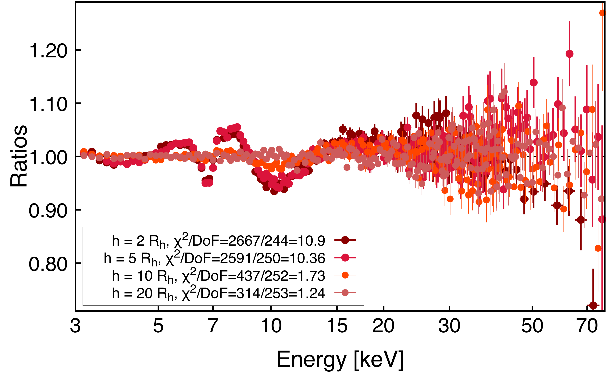
图注：Ratio spectra of fits of Schwarzschild solutions ($a_*=0$) to simulated {\(\it\) NuSTAR} spectra based on maximal intrinsic spin ($a_*=0.998$). The simulated spectra are all based upon an exposure time of 20\,ks, but at variable intrinsic lamppost height (specified in terms of the horizon radius, $R_h$), and by association, both reflection fraction and emissivity across the accretion disk. The intrinsic ($2-10$\,keV) source flux is 300\,mCrab.
对应解读：对应“关键图表逐图导读”中关于反射谱残差示例、模型分解/残差诊断，以及“模型拟合”段落中自旋—辐照率—反射分数退化的讨论。
入选理由：这张图直接展示用零自旋模型拟合真实为极高自旋模拟谱时的 ratio spectra，并系统改变 lamppost 高度，从而把反射分数、盘面辐照率和自旋判别能力联系起来。它比单纯概念图更能支撑日报中关于残差诊断、模型退化、辐照率假设可能推动高自旋解以及需要模拟标定误判率的解读。
来源与置信度：\(arxiv_source\)；high；\(arxiv_source\) / \(spins_wake_forest.tex\):figure[3]
Fig02
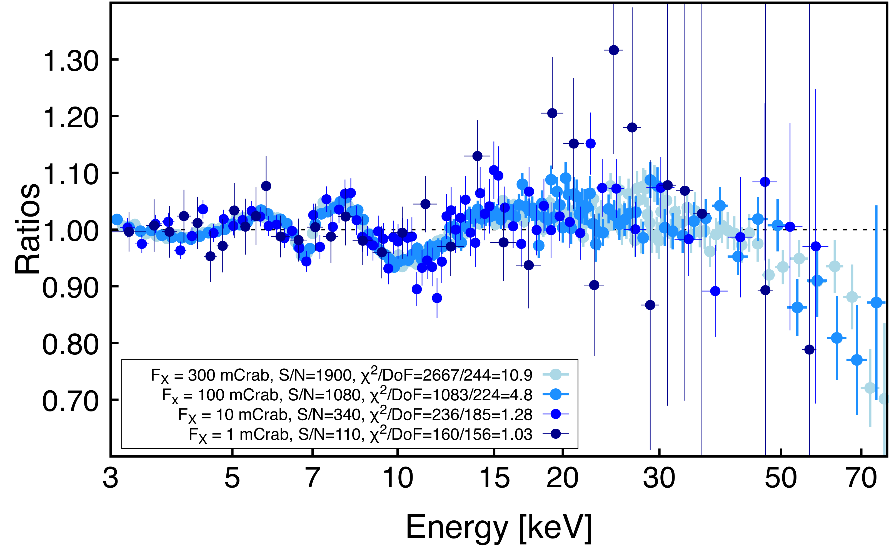
图注：Ratio spectra of fits of Schwarzschild solutions ($a_*=0$) to simulated {\(\it\) NuSTAR} spectra based on maximal intrinsic spin ($a_*=0.998$). The simulated spectra are all based upon an exposure time of 20 ks, but at variable intrinsic source flux.
对应解读：对应“建议重点查看的图表”中的模拟标定路线图/残差示例，以及“模型拟合”段落中关于信噪比、能段覆盖和计数空间残差对 detectability 与 robustness 的影响。
入选理由：这张图通过不同源通量下的 NuSTAR 模拟 ratio spectra，展示高自旋谱若强行用 Schwarzschild 解拟合会留下怎样的系统残差，直接服务于 detectability 的量化判断。它能说明自旋测量质量不仅取决于最佳拟合值，还取决于数据质量是否足以区分相对论反射特征和替代模型。
来源与置信度：\(arxiv_source\)；high；\(arxiv_source\) / \(spins_wake_forest.tex\):figure[2]
Fig01
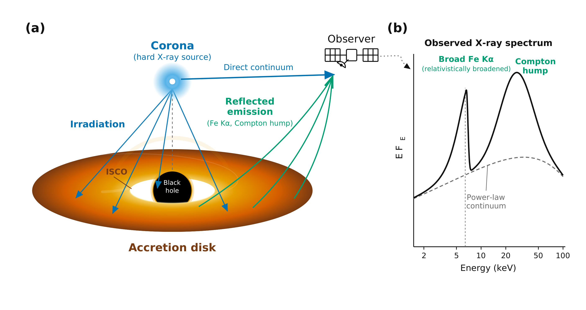
图注：Concept of X-ray reflection spectroscopy. Hard X-rays from a compact corona illuminate an optically thick accretion disk, producing a reflection spectrum with fluorescent lines (notably Fe K-shell transitions) and a Compton hump due to electron scattering. Relativistic Doppler shifts, gravitational redshift, and light bending imprint characteristic broadening that constrains the inner disk radius (ISCO), enabling inference of the black hole spin $a_*$.
对应解读：对应“建议重点查看的图表”中的反射谱组成示意图，以及“详细解读”开头关于宽铁线、Compton hump、内盘半径和黑洞自旋物理基础的说明。
入选理由：这张图概括了日冕照射吸积盘、荧光线、Compton hump 以及相对论展宽如何共同构成反射法自旋测量的物理图像。虽然它不是质量分类流程图或 checklist，但在候选图中最适合帮助读者建立反射谱各成分与自旋约束之间的基本联系。
来源与置信度：\(arxiv_source\)；high；\(arxiv_source\) / \(spins_wake_forest.tex\):figure[1]
强相关工作
这篇文章属于同类方法学和社区标准化工作，而不是同一源或同一事件论文。应把它与反射谱模型发展、黑洞自旋综述、连续谱法自旋测量、以及 NuSTAR/XMM-Newton 时代 AGN 和 X 射线双星宽铁线观测放在一起读。检索关键词可用 “black hole spin reflection spectroscopy review”、“relativistic reflection spin systematics”、“reflionx relxill black hole spin”、“X-ray reflection continuum degeneracy”。
基础理论方面，应追溯 Kerr 黑洞 \,r_{\rm ISCO}\, 与自旋关系、Novikov-Thorne 薄盘模型、铁线相对论展宽模型、以及现代反射谱模型如 \,relxill\,、\,xillver\,、\,reflionx\,。相反或张力观点主要来自复杂吸收模型、盘风解释、部分遮挡 AGN 模型、以及对高自旋样本选择效应的质疑。检索关键词可用 “partial covering versus relativistic reflection”、“warm absorber broad iron line”、“spin bias X-ray reflection”、“black hole spin population systematics”。
同一事件 / 同类源线索：
相似工作：
基础理论 / 方法工作：
- https://ui.adsabs.harvard.edu/abs/1973blho.conf..343B/abstract
- https://ui.adsabs.harvard.edu/abs/1989MNRAS.238..729F/abstract
- https://ui.adsabs.harvard.edu/abs/2005MNRAS.358..211R/abstract
- https://ui.adsabs.harvard.edu/abs/2014ApJ...782...76G/abstract
相反观点 / 张力线索：
10. CRESCENDO II: Spectral cosmic rays with improved energy losses and realistic supernova seeding
- 来源：arXiv / astro-ph.HE
- 链接：https://arxiv.org/abs/2607.14363v1
- 作者：Daniel Karner, Ludwig M. Böss, Klaus Dolag, Ildar Khabibullin
- 评分：novelty 7/10，importance 8/10，relevance 8/10，final 8.70/10
- 推荐理由：Relevant cosmic-ray numerical-methods paper improving spectrally resolved CR electron/proton losses and supernova seeding in cosmological simulations, with implications for non-thermal emission modeling.
中文题目：CRESCENDO II：改进能量损失与真实超新星注入的谱分辨宇宙线模拟
做了什么：这篇文章扩展了宇宙学流体模拟代码 OpenGadget3 中的谱分辨宇宙线求解器 CRESCENDO，重点改进宇宙线电子和质子的能量损失、能量与压强计算，以及由超新星遗迹驱动的宇宙线注入模型。作者不再把所有宇宙线都近似为超相对论粒子，而是在谱空间中更准确地计算粒子能量、压强和能量通量；同时加入电子和质子的多种损失过程，并把超新星注入与正在形成恒星的气体单元联系起来。论文的主要价值不是给出某个天体的新观测结果，而是为未来星系和星系团的全物理宇宙学模拟提供更可信的非热粒子模块，使模拟能够更直接地连接宇宙线微物理、星系反馈、射电同步辐射和伽马射线观测。
为什么重要：宇宙线反馈在星系形成、星系团非热辐射和磁化等离子体能量预算中可能很重要，但它高度依赖粒子能量。只演化一个总能量或假设固定谱形，很容易把冷却、输运、再加速和辐射预测混在一起。CRESCENDO II 的重要性在于，它把宇宙线作为随动的谱分布来处理，并且把损失项、注入谱和能量压强计算做得更接近物理，从而减少由过度简化的亚网格模型带来的系统误差。
理论 / 观测 / 仪器方法价值：对理论建模来说，这篇工作提供了一个可以嵌入大规模宇宙学模拟的谱宇宙线框架，能比较不同损失处理、谱截断、超新星注入假设对反馈和辐射的影响。对观测解释来说，它有助于把模拟中的宇宙线电子谱、质子谱与同步辐射、逆康普顿辐射、轫致辐射和强子相互作用产生的伽马射线联系起来。对数值方法来说，论文指出了连续损失与灾变损失处理、超相对论近似、解析能量通量近似和谱斜率重构失败等实际陷阱。
为什么应该关注：如果你关心星系风、星系团射电晕、宇宙线压强支撑、非热伽马射线约束，或者想用模拟预测 SKA、CTA、Fermi-LAT、LOFAR 等观测量，那么这篇文章值得看。它讨论的是很多模拟论文默认藏在亚网格里的部分：宇宙线到底以什么能谱注入、怎样损失、怎样从谱格点变成能量和压强，以及这些选择会怎样影响可观测非热辐射。
展开详细解读：文章讲解、背景、理论、重点章节、图表与相关工作
文章详细讲解
科学问题：宇宙线不是单一能量流体。电子的同步辐射和逆康普顿损失强烈依赖能量，质子的强子损失、库仑损失和可能的伽马射线产额也依赖能量；输运、再加速和谱老化同样不能只用一个总能量变量概括。很多宇宙学模拟为了计算成本，把宇宙线作为一个带有效绝热指数的流体组分处理，或者假定一个固定幂律谱。这在研究大尺度动力学时可能足够，但一旦要比较射电、硬 X 射线或伽马射线观测，就会把谱形误差直接带入辐射预测。
作者怎么做：本文是 CRESCENDO 系列的第二篇，目标是在 OpenGadget3 中推进随模拟运行的谱分辨宇宙线求解器。作者实现了电子和质子的多个新能量损失过程，并改进从离散谱分布计算宇宙线能量密度和压强的方法，尤其避免在低能端仍强行使用超相对论近似。另一个核心改进是超新星遗迹宇宙线注入的亚网格模型：注入不再只是一个任意归一化的谱，而是和正在形成恒星的气体以及超新星能量预算耦合，谱形也更接近物理上常用的幂律加截断形式。
关键结果：论文通过理想化测试展示新损失项和注入模型的行为，而不是直接给出大规模宇宙学样本结果。测试表明，强子损失作为连续能量损失还是灾变损失处理，会导致不同的谱演化和能量预算；灵活的谱截断比固定截断更适合处理注入和冷却后形成的弯曲谱；放弃超相对论近似能改善低能宇宙线对能量和压强的贡献估计。作者还指出，用解析近似计算能量通量可能导致谱斜率重构失败，这是谱方法中很容易被忽略但会影响稳定性的数值问题。
局限和下一步：本文主要是方法和验证论文，使用理想化算例检查物理模块与数值实现，并未系统展示星系群、星系团或宇宙学体积中的预测差异。因此，它还不能单独回答宇宙线反馈到底有多强、星系团伽马射线为何未被普遍探测到、射电晕能否由某类模型解释等问题。下一步关键是把该谱宇宙线模型放入完整星系形成模拟，结合磁流体、各向异性扩散或流动、恒星反馈、AGN 反馈和辐射后处理，检验其对可观测量的预测是否能同时满足射电与伽马射线约束。
关键结果是怎么做出来的
本文最重要的证据链来自一系列理想化数值实验，而不是观测样本或统计显著性检验。作者选择可控的初始谱分布、给定气体环境和注入条件，逐项打开电子或质子的损失过程，检查谱形、总能量和压强随时间的演化是否符合解析预期或物理直觉。这类测试的重点不是事件数，而是守恒性、稳定性、谱重构精度以及不同损失离散化方案之间的差异。
在能量损失测试中，作者比较了不同损失项对谱分布的影响。电子方面，相关过程通常包括库仑损失、轫致辐射、同步辐射和逆康普顿损失；质子方面，重点包括库仑损失和强子相互作用损失。论文强调，当损失时间尺度强烈依赖动量或能量时，谱格点之间的通量计算决定了谱形是否会出现非物理振荡、过度扩散或斜率重构失败。因此支撑结论的关键诊断量是谱随时间的曲线、能量密度误差、压强误差和相邻谱 bin 的斜率行为。
强子损失的连续处理与灾变处理是论文中特别值得注意的比较。连续处理把相互作用近似为粒子能量逐渐流失，适合某些平均化能量预算；灾变处理则把相互作用视为粒子从原始能量 bin 中被移除或转化为次级粒子和辐射产物，更接近某些反应过程的物理图像。两者在总能量衰减上可能被调到相似，但在谱形、低能积累以及后续辐射预测上并不等价。这一结果提醒读者：即使两个宇宙线模型给出相似的总压强，也未必会给出相似的伽马射线或射电信号。
超新星注入测试把谱模型与恒星形成区域耦合。作者在正在形成恒星的气体中注入具有物理动机的宇宙线电子和质子谱，检查注入归一化、谱斜率和截断是否能被谱求解器稳定表示。这里的模型比较更像数值稳健性测试，而不是贝叶斯模型选择；读者应关注注入后谱形是否保持预期幂律、总注入能量是否与超新星能量预算一致、不同分辨率或谱 bin 设置是否改变结论。
系统误差主要来自亚网格假设和谱离散化。超新星能量耦合效率、电子质子注入比、最大动量截断、局部气体密度和磁场、以及是否包含各向异性输运都会影响结果。论文的稳健性价值在于明确展示了若干数值细节会怎样破坏谱斜率重构或能量通量计算，而不是把它们隐藏在一个总的宇宙线能量方程中。
展开背景、理论、公式、模型、章节和图表导读
背景知识
研究对象是星系和星系团中的宇宙线电子与质子。宇宙线是非热粒子，能量密度在银河系中与磁场和湍动能量密度同量级，在星暴星系、星系团冷核、AGN 喷流和超新星遗迹附近也可能影响等离子体动力学。电子由于辐射损失快，常用于追踪近期加速和磁场；质子寿命长，更容易积累并提供长期压强支撑，同时通过强子碰撞产生中性 pion 衰变伽马射线和次级电子。
历史问题在于宇宙线微物理和宇宙学尺度之间差了很多数量级。超新星遗迹激波可以把粒子加速到高能，但宇宙学模拟无法解析激波前沿、磁湍流散射和粒子扩散长度。因此模拟通常需要亚网格模型：给每次超新星或激波一个宇宙线注入效率，再用简化输运方程演化。早期模型多把宇宙线当作一个有效流体，其优点是便宜，缺点是无法自洽预测谱老化和频率依赖辐射。
观测背景也在推动谱模型。低频射电巡天逐渐揭示星系团射电晕、遗迹和星系尺度 synchrotron 结构；Fermi-LAT 对星系团强子伽马射线的非探测给出了严格限制；未来 CTA 和 SKA 会进一步压缩模型空间。如果模拟不能输出可靠的电子和质子能谱，就很难同时解释射电亮度、谱指数、伽马射线上限和星系风动力学。
现在值得重新看这个问题，是因为全物理宇宙学模拟已经能较好地处理恒星形成、金属冷却、黑洞反馈和磁场，但宇宙线模块常仍停留在简化阶段。随着计算资源增加，谱分辨宇宙线求解器开始变得可行；同时观测数据越来越多，要求模型不仅解释总能量，还要解释频率和能量依赖的信号。
常见误区之一是把宇宙线总压强看作足够完整的描述。实际上，两个拥有相同总压强的谱分布，在射电和伽马射线波段可能相差很大。另一个误区是认为高能宇宙线都可用超相对论近似处理；但低能粒子对库仑损失、加热和压强可能重要，错误的能量动量关系会影响反馈预算。还有一个误区是把强子损失简单视为连续冷却；对辐射产物和谱形而言，灾变相互作用的处理方式可能显著改变结果。
基础理论 / 方法脉络
基础物理图像是：宇宙线由某种加速机制注入，例如超新星遗迹激波，然后在磁化等离子体中随流体平流、绝热压缩或膨胀、扩散或流动，并经历能量损失。对电子而言，高能端通常受同步辐射和逆康普顿损失快速削弱；低能端受库仑损失影响。对质子而言，辐射损失弱得多，强子碰撞和库仑损失控制其长期演化和可观测伽马射线产额。
谱分辨方法的核心变量不是单个宇宙线能量密度，而是相空间分布或动量分布 \(f(p)\)，其中 \(p\) 是粒子动量。数值上把动量空间划分为多个 bin，在每个 bin 中保存粒子数、能量或谱斜率等信息。这样可以计算不同能量粒子对应的不同损失率 \(b(p)=-{\mathrm d p}/{\mathrm d t}\)，并预测依赖粒子能量的辐射过程。
本文特别关注从谱分布计算能量和压强时的物理一致性。超相对论近似下可令粒子动能近似正比于 \(p c\)，压强和能量密度之间常有简单关系；但当 \(p\) 接近或低于 \(m c\) 时，粒子速度 \(v(p)\) 和动能 \(T(p)\) 都不能这样近似。若低能粒子数很多，错误近似会改变库仑加热、压强贡献和能量守恒检查。
超新星注入模型通常假设一部分超新星机械能进入宇宙线，注入谱近似为幂律并带最大动量截断。这一选择来自弥散激波加速的基本结果，但实际谱斜率、电子质子比和截断取决于激波马赫数、磁场放大、逃逸过程和环境密度。在宇宙学模拟中，这些细节不能解析，只能通过亚网格参数化并用观测约束。
常见退化包括：较高注入效率与较强能量损失可以给出相近的总宇宙线能量；较陡注入谱和较强高能冷却都能产生软化的射电谱；电子谱归一化与磁场强度在同步辐射亮度中强烈退化；质子谱归一化与气体密度在强子伽马射线中退化。因此，一个谱宇宙线模型的价值不仅在于增加变量数，更在于让这些退化能被多波段观测和数值诊断显式检查。
公式与推导
第一步是定义各向同性宇宙线动量分布。若 \(f(p)\) 是相空间分布函数，单位体积内动量在 \(p\) 到 \(p+{\mathrm d}p\) 的粒子数为
这里 \(p\) 为动量，\(n\) 为粒子数密度。谱分辨求解器的任务就是在离散动量 bin 中演化这个分布，而不是只演化一个总能量。
第二步是从相对论能量动量关系得到单粒子动能，避免低能端使用超相对论近似：
其中 \(m\) 是粒子静质量，\(c\) 是光速。当 \(p\gg mc\) 时有 \(T(p)\simeq pc\)；当 \(p\ll mc\) 时有 \(T(p)\simeq p^2/(2m)\)。本文强调的改进之一正是不要在所有 bin 中都默认 \(T(p)\simeq pc\)。
第三步是计算能量密度。对一个谱分布，宇宙线动能密度为
这里 \(p_{\min}\) 和 \(p_{\max}\) 是谱网格边界。这个积分决定反馈能量预算、冷却损失和辐射归一化，低能端处理错误会直接影响 \(\varepsilon_{\rm cr}\)。
第四步是压强。各向同性粒子群的压强为动量通量平均：
其中粒子速度为
在超相对论极限可得 \(P_{\rm cr}\simeq \varepsilon_{\rm cr}/3\)，但低能粒子不满足这个关系，这正是本文改进能量和压强计算的物理原因。
第五步是谱输运的最简形式。忽略空间扩散时，动量空间中的连续损失可写为
这里 \(\dot p={\mathrm d}p/{\mathrm d}t\) 表示连续动量变化，\(Q(p,t)\) 是注入项，\(\tau_{\rm cat}\) 是灾变损失时间尺度。连续损失改变粒子动量并在谱空间产生通量，灾变损失则移除粒子；本文比较了这两种处理在强子损失中的差异。
第六步是超新星注入谱的常用参数化。若超新星向宇宙线注入的谱为幂律加指数截断，可写作
其中 \(s\) 是谱指数，\(p_{\rm cut}\) 是截断动量，\(\kappa\) 控制截断形状，\(Q_0\) 由能量归一化确定。灵活截断有助于避免固定截断在谱重构中造成非物理误差。
第七步是能量归一化。若每单位时间超新星给宇宙线的能量注入率为 \(\dot E_{\}}\)
m cr,SN})，则应满足
这里 \(\zeta_{\rm cr}\) 是宇宙线加速效率，\(E_{\rm SN}\) 是单次超新星机械能，\(\dot N_{\rm SN}\) 是超新星率。本文的超新星 seeding 模型本质上就是把这个能量预算与恒星形成区域联系起来。
第八步是典型辐射损失标度。高能电子的同步辐射和逆康普顿损失常可概括为
其中 \(\sigma_{\rm T}\) 是 Thomson 截面，\(\gamma\) 是 Lorentz 因子，\(\beta=v/c\)，\(U_B\) 是磁场能量密度，\(U_{\rm rad}\) 是辐射场能量密度。该式说明高能电子损失随 \(\gamma^2\) 增强，因此谱高能端对损失项和时间步长特别敏感。
第九步是强子碰撞的损失时间尺度估计：
这里 \(n_{\rm gas}\) 是气体数密度，\(\sigma_{pp}\) 是质子-质子非弹性截面，\(K_{pp}\) 是非弹性能量损失比例。若把它作为连续冷却，会进入 \(\dot p\)；若作为灾变过程，会进入 \(f/\tau_{\rm cat}\)。两种写法对总能量可能接近，但对谱形和次级产物不同。
第十步是数值诊断。谱 bin 中的相对能量误差可定义为
这里 \(E_{\rm num}\) 是数值积分得到的能量，\(E_{\rm ref}\) 是解析解或高精度参考解。本文讨论的斜率重构失败、解析通量近似误差和不同损失方案差异，最终都可以通过类似的能量、压强和谱形残差来量化。
模型拟合 / 应用方法
这篇论文不是传统意义上的观测拟合论文，因此没有对某个数据集进行最大似然拟合或给出参数后验。它的“拟合”主要体现在数值模型的参数化和验证：给定注入谱指数、截断动量、宇宙线加速效率、电子质子比、损失过程开关以及谱 bin 设置，检查数值解是否与解析标度或高精度参考解一致。读者应把它看作一个物理-数值模型校准问题，而不是源参数反演问题。
若把该框架用于真实星系或星系团模拟，待拟合量通常包括宇宙线注入效率 \(\zeta_{\rm cr}\)、谱指数 \(s\)、电子质子比、扩散系数或流动速度、磁场模型和损失项参数。可观测量则可能是射电表面亮度、射电谱指数、伽马射线通量上限、星系风质量载荷、热气体熵剖面等。似然函数可以针对多波段数据构造，但必须经过辐射后处理和观测选择函数。
主要退化关系很强。同步辐射亮度同时依赖电子归一化和磁场强度，增加电子注入效率与增强磁场都能提高射电通量；强子伽马射线依赖质子谱和气体密度，星系团中气体密度剖面误差会传递到质子约束；谱指数变陡和高能冷却增强都能造成射电谱软化。谱分辨模型不能自动消除退化，但能让这些退化以能量依赖的方式暴露出来。
系统误差主要分两类。第一类是物理亚网格误差，例如超新星遗迹加速效率是否常数、最大动量是否由局部环境决定、电子与质子是否共享同一谱指数、是否忽略了再加速和各向异性输运。第二类是数值误差，例如动量 bin 数不足、bin 边界放置不合理、能量通量近似不适用于弯曲谱、时间步长无法解析快速冷却。本文对后一类问题的讨论尤其有用，因为它们会在大型模拟中悄悄积累。
实际应用中，残差不应只看总能量。一个模型可能很好地守恒总宇宙线能量，却在高能电子端产生错误谱斜率，从而导致射电高频谱或逆康普顿 X 射线预测错误。合理的诊断应包括每个动量 bin 的粒子数残差、能量密度残差、压强残差、谱斜率残差，以及由谱后处理得到的辐射残差。
重点章节 / 结果段落怎么读
第一，读引言和模型动机时，应关注作者为什么坚持谱分辨处理。这里的关键不是“宇宙线很重要”这一泛泛表述，而是能量依赖损失、输运和辐射如何让单流体近似失效。读者可把这部分和自己熟悉的宇宙线流体模型对照，判断哪些科学问题确实需要谱信息。
第二，读能量与压强计算部分时，应重点看作者怎样从离散谱恢复 \(\varepsilon_{\rm cr}\) 和 \(P_{\rm cr}\)，以及为什么放弃普遍使用超相对论近似。这里直接影响反馈力、有效绝热响应和能量守恒，是全论文的方法核心之一。
第三，读损失过程实现部分时，应分电子和质子两条线看。电子损失决定高能谱老化和射电/逆康普顿预测；质子损失决定长期能量库和强子伽马射线产额。特别要注意强子损失连续处理和灾变处理的差别，这会影响后续物理解读。
第四，读超新星 seeding 部分时，应关注注入谱形、归一化和恒星形成耦合。这里是把微物理加速图像接入宇宙学模拟的接口，参数选择会直接影响星系尺度宇宙线能量预算。
第五，读测试和讨论部分时，应把图中的谱形演化、能量误差和斜率重构问题当作主要结果。本文最有价值的结论往往不是某个漂亮的最终模拟图，而是指出哪些看似合理的近似在谱求解中会失败。
建议重点查看的图表
-
初始谱与注入谱测试图：看横轴是否为动量或能量，纵轴是粒子数、能量密度还是加权谱；重点检查幂律段斜率和高能截断是否按设定重构。
-
电子损失演化图：看不同时间的电子谱如何从高能端向低能端老化；重点关注同步辐射和逆康普顿损失是否产生预期的高能软化。
-
质子损失比较图：重点比较库仑损失、强子连续损失和强子灾变损失下的谱形差别，而不仅是总能量衰减。
-
能量与压强误差诊断图：检查使用完整相对论表达式与超相对论近似时，低能端对 \(\varepsilon_{\rm cr}\) 和 \(P_{\rm cr}\) 的影响。
-
谱斜率重构或能量通量误差图：看哪些解析近似会导致重构失败；关注误差是否集中在截断附近、低粒子数 bin 或谱曲率较大的区域。
-
超新星注入与恒星形成耦合测试图：检查注入能量是否随恒星形成活动出现，谱归一化是否符合超新星能量预算，是否存在时间步长或分辨率造成的伪波动。
关键图表逐图导读
图 1：如果论文开头给出 CRESCENDO II 的谱网格或模型流程图，应把它当作读全篇的地图。横向通常是流体单元、恒星形成、超新星注入、谱演化和损失模块之间的信息流；纵向可能区分电子和质子。读图陷阱是不要把流程图理解为所有物理都已解析求解，许多步骤仍是亚网格参数化。
图 2：注入谱或谱重构测试图通常以动量 \(p\) 或无量纲动量为横轴，以 \(p^q f(p)\)、粒子数密度或能量加权谱为纵轴。数据点代表离散 bin，曲线代表目标解析谱。重点看幂律区间是否平直、截断附近是否出现振荡，以及 bin 数变化是否改变斜率。
图 3：电子损失演化图通常展示不同时间的谱曲线。高能端应因 \(\gamma^2\) 型辐射损失快速下降，低能端则可能受库仑损失影响。读图时要区分谱形变陡是物理冷却造成，还是数值扩散造成；若图中有参考解或误差面板，应优先看残差而非主图视觉重合。
图 4：质子强子损失连续与灾变处理的比较图是本文的关键读图对象。横轴仍是动量或能量，纵轴为谱密度或能量密度贡献。连续处理可能表现为粒子向低能迁移或能量平滑衰减，灾变处理则更像按时间尺度移除粒子。读图陷阱是只比较总能量曲线；真正重要的是同一总能量下谱形是否不同。
图 5：能量和压强计算图可能比较完整相对论表达式与超相对论近似。应重点看低动量端的偏差，因为低能粒子虽然不一定主导辐射，却可能影响压强和加热。若图中显示相对误差，注意误差是否在某些谱指数或低动量截断选择下急剧增大。
图 6：数值通量或斜率重构失败图通常是方法论文中最容易被跳过但最有用的图。坐标可能是谱 bin、时间或误差幅度。应检查失败是否发生在谱截断、谱曲率大或粒子数很低的位置；这些区域在大型模拟中可能对应局部突发注入或强冷却环境。
图 7：超新星 seeding 测试图若存在，通常展示恒星形成活动、超新星能量注入和宇宙线谱响应之间的对应关系。读者应看注入能量积分是否等于设定的超新星宇宙线能量预算，以及电子和质子归一化是否按假定比例变化。
论文原图 / 可嵌入图片
Fig11
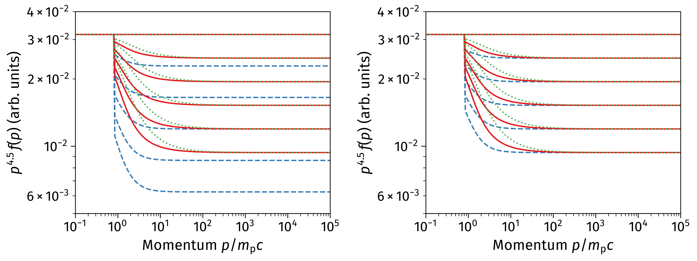
图注：A freely cooling CRp spectrum with initial condition $f_\mathrm{ini}(p) = f_0(p/p_\mathrm{min})^{-4.5}$ undergoes hadronic losses for 500~Myr, where the spectrum is plotted every 100~Myr (time increases from top to bottom). We use three different numerical approaches to evolve $f_\mathrm{ini}(p)$. The blue dashed line is the catastrophic approach~\(\eqref{eq: analytical solution for catastrophic hadronic losses}.\) For the continuous approach we use Eq.~\(\eqref{eq: analytical solution for f due to loss processes}\) to compute $f(p,t)$, where we use the implicit equation~\(\eqref{eq: pu hadronic implicit}\) for $p_u$ (green dotted line) and the numerical approximation~\(\eqref{eq: analytical approximation for pu_hadronic}\) (red solid line). Left: The same cross section $\sigma_\mathrm{pp}=30$~mb is used for all lines. Right: the cross section has been rescaled according to Eq.~\(\eqref{eq: rescaled cross section for hadronic losses}\) for the catastrophic approach (blue dashed lines).
对应解读：关键图表逐图导读中的“质子强子损失连续与灾变处理比较图”，以及详细解读中关于连续/灾变强子损失导致不同谱演化和能量预算的段落。
入选理由：这张图直接比较强子损失的灾变处理、连续处理以及连续处理中不同初始动量求解方法，并且分左右面板讨论截面重标定影响，是理解本文最核心数值差异的图。它比单纯展示一种质子冷却过程的图更能支撑日报中“不要只看总能量，要看谱形差别”的重点。
来源与置信度：\(arxiv_source\)；high；\(arxiv_source\) / main.tex:figure[11]
Fig12
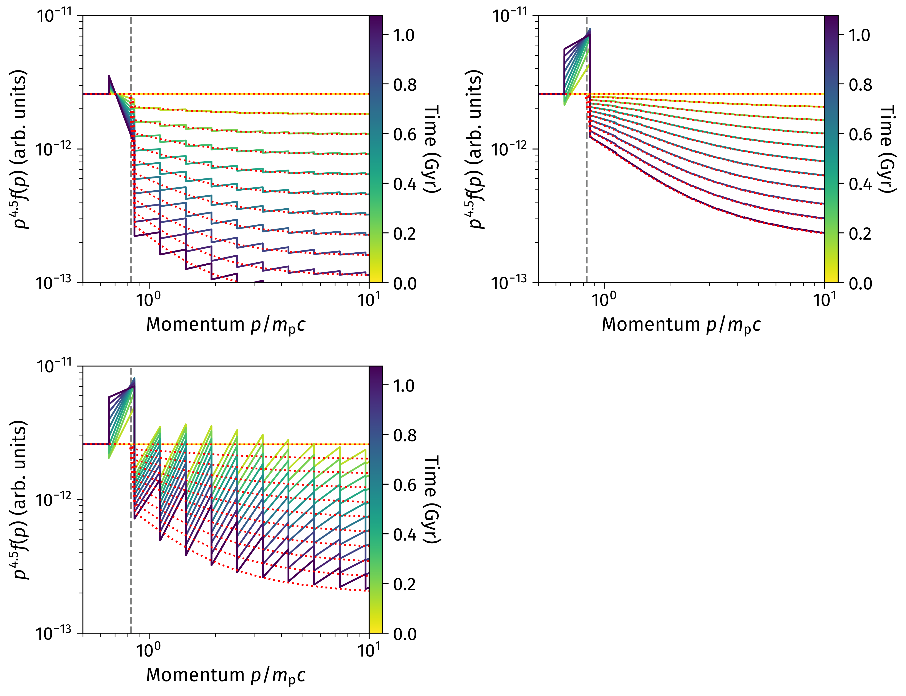
图注：A CR proton spectrum is cooled via hadronic losses using three different numerical methods. This is a zoom-in close to the threshold momentum $\hat{p}_\mathrm{thr} = 0.828$ for pion production (vertical gray dashed line), where the red dotted lines are the corresponding analytical solutions from Fig.~\(\ref{fig: comparison between continouos and catastrophic hadronic losses}.\) Left: Catastrophic approach~\(\eqref{eq: analytical solution for catastrophic hadronic losses}\) without accumulation of protons near $\hat{p}_\mathrm{thr}$, where the slope reconstruction at low momenta gets worse with time. Middle: continuous approach~\(\eqref{eq: hadronic losses: continuous approach},\) where the initial momentum $p_u$ is computed from the implicit equation~\(\eqref{eq: pu hadronic implicit}.\) Note that over time the protons pile up in the bin containing $\hat{p}_\mathrm{thr}$. Right: continuous approach, where $p_u$ is approximated by Eq.~\(\eqref{eq: analytical approximation for pu_hadronic},\) which is inconsistent with the loss rate~\(\eqref{eq: hadronic losses: continuous approach}.\) Hence, the slope reconstruction fails already after a short time.
对应解读：建议重点查看的“谱斜率重构或能量通量误差图”，以及关键图表逐图导读中关于谱截断、阈值附近和斜率重构失败的讨论。
入选理由：该图放大到 pion production 阈值动量附近，逐面板展示灾变法、连续隐式法和近似法的差异，并明确指出近似不一致会导致斜率重构很快失败。它最能支撑日报中关于残差、阈值附近数值误差和大型模拟中隐蔽累积误差的解读。
来源与置信度：\(arxiv_source\)；high；\(arxiv_source\) / main.tex:figure[12]
Fig03
图注：Freely cooling electron spectrum affected by Coulomb, bremsstrahlung and synchrotron/IC losses. The red dotted lines are the analytical solutions~\(\eqref{eq: analytical solution for f due to loss processes}\) for Coulomb and \(\eqref{eq: Kardashev solution}\) for synchrotron/IC losses. On this timescale, the effect of bremsstrahlung losses is not significant yet.
对应解读：建议重点查看的“电子损失演化图”，以及关键图表逐图导读中关于同步辐射/逆康普顿高能软化和库仑低能影响的段落。
入选理由：这张图展示电子谱在 Coulomb、bremsstrahlung、synchrotron/IC 损失下的自由冷却，并叠加解析解。它直接对应日报要求检查的高能端辐射冷却软化和低能端库仑损失，同时有解析参考线，科学诊断价值高。
来源与置信度：\(arxiv_source\)；high；\(arxiv_source\) / main.tex:figure[3]
Fig10
图注：Freely cooling electron spectrum affected only by Coulomb losses. In the left-hand panel the initial momentum $p_u$ (needed for the computation of number and energy fluxes) was calculated by using the approximation~\(\eqref{eq: pu Coulomb Winner},\) whereas in the right-hand panel the implicit equation~\(\eqref{eq: pu Coulomb from implicit equation}\) was solved with Brent's method. Only the latter method is fully consistent with the loss rate~\(\eqref{eq: approximation for dp/dt Coulomb},\) so the slope reconstruction and the agreement with the analytical solution (red-dotted line) is much better.
对应解读：建议重点查看的“谱斜率重构或能量通量误差图”，以及模型拟合段落中关于解析近似计算能量通量可能导致重构失败的系统误差讨论。
入选理由：该图用左右面板直接对比 Coulomb 损失下使用解析近似和使用 Brent 方法求解隐式方程的结果，清楚显示只有后者才能保持与损失率一致并改善斜率重构。它是本文数值方法警示意义最强的图之一。
来源与置信度：\(arxiv_source\)；high；\(arxiv_source\) / main.tex:figure[10]
Fig06
图注：Injection of templated CR spectra by ongoing core-collapse supernovae in a periodic ISM box. We computed the superposition of all CR spectra in the box and then plotted the logarithmic derivative of its kinetic energy (for details see App.~\ref{app: Superposition of piecewise power-law spectra}). Both the proton spectra (left) and the electron spectra (right) converge to a steady-state solution. Note that the flattening of the electron spectrum at high momenta is a feature of the models by \(\citet{Cristofari.etal2021}.\)
对应解读：建议重点查看的“超新星注入与恒星形成耦合测试图”，以及关键图表逐图导读中关于超新星 seeding、电子/质子谱响应和稳态收敛的段落。
入选理由：这张图展示周期性 ISM 盒中由正在发生的 core-collapse supernovae 注入的模板化 CR 质子和电子谱，并比较其稳态收敛行为。它直接支撑日报中关于超新星能量预算、电子质子谱归一化和注入模型物理性的解读。
来源与置信度：\(arxiv_source\)；high；\(arxiv_source\) / main.tex:figure[6]
Fig09
图注：Same as Fig.~\(\ref{fig: CRp adiabatic expansion test},\) but the spectral cut-off is not updated, which leads to an artificial spectral curvature at high momenta.
对应解读：建议重点查看的“初始谱与注入谱测试图”中关于高能截断是否按设定重构的部分，以及详细解读中关于灵活谱截断优于固定截断的段落。
入选理由：该图明确展示如果不更新谱截断，会在高动量端产生人工谱弯曲，是理解本文为何强调 flexible upper cut-off 的关键证据。它比一般流程图更直接对应日报中关于高能截断、谱曲率和数值伪影的诊断要求。
来源与置信度：\(arxiv_source\)；high；\(arxiv_source\) / main.tex:figure[9]
强相关工作
这篇工作属于谱分辨宇宙线流体模拟和星系形成亚网格模型的交叉方向。可与传统单流体宇宙线模型、AREPO 或 GADGET 系列中的宇宙线模块、以及星系团非热辐射模拟相对照。建议检索关键词包括 “spectral cosmic ray hydrodynamics”, “cosmic ray feedback cosmological simulations”, “CRESCENDO cosmic rays OpenGadget3”, “cosmic ray electron losses simulations”, “hadronic losses catastrophic continuous cosmic rays”。
基础理论上，它继承了弥散激波加速、宇宙线输运方程、同步辐射/逆康普顿冷却和强子 \(pp\) 相互作用等经典框架。与观测张力相关的方向包括：星系团中强子模型预测的伽马射线与 Fermi-LAT 上限之间的紧张、射电晕谱形对湍动再加速和强子二级电子模型的区分、以及星系风模拟中宇宙线扩散系数和流动速度的不确定性。这里没有单一同一源或同一事件论文；应按同类方法、同类物理过程和综述文献来建立上下文。
同一事件 / 同类源线索：
相似工作：
（未提供）
基础理论 / 方法工作：
- https://ui.adsabs.harvard.edu/abs/1983RPPh...46..973D/abstract
- https://ui.adsabs.harvard.edu/abs/2007ARNPS..57..285S/abstract
- https://ui.adsabs.harvard.edu/abs/2013A%26ARv..21...70B/abstract
相反观点 / 张力线索：
（未提供）
11. Constraining the Coexistence of Primordial Black Holes and Particle Dark Matter with Neutrino Observations
- 来源：arXiv / astro-ph.HE
- 链接：https://arxiv.org/abs/2607.14253v1
- 作者：Prolay Chanda, Sagnik Mukherjee, James Unwin
- 评分：novelty 7/10，importance 8/10，relevance 8/10，final 8.70/10
- 推荐理由：用高能中微子观测限制PBH与粒子暗物质共存及PBH周围暗物质尖峰湮灭，包含IceCube敏感度和弥散中微子通量约束；虽偏粒子宇宙学，但与高能中微子/暗物质间接探测明确相关。
中文题目：用高能中微子观测限制原初黑洞与粒子暗物质的共存
做了什么：这篇文章研究一种混合暗物质图景：原初黑洞只占引力推断暗物质丰度的一小部分，记为 \(f_{\rm PBH}\lesssim 1\%\)，其余主要由粒子暗物质组成。粒子暗物质会被原初黑洞的引力势俘获并在其周围形成高密度小尖峰，使湮灭率按密度平方显著增强。作者计算这些小尖峰在宇宙学红移上的累积高能中微子强度，并用 IceCube 的弥散中微子观测给出约束。文章的核心结论是：即使原初黑洞只占很小比例，只要暗物质粒子可湮灭到中微子或含中微子终态，小尖峰增强也能把本来很难探测的暗物质湮灭推到高能中微子可见范围；但真实粒子物理模型通常不会只有 \(100\%\) 中微子分支比，还会伴随带电轻子或电磁信号。
为什么重要：它把两个通常分开讨论的问题连起来：原初黑洞能否作为少量暗物质存在，以及粒子暗物质是否会在强引力种子周围产生可观测湮灭信号。重要之处在于约束对象不是纯原初黑洞暗物质，也不是标准光滑晕中的粒子暗物质，而是二者共存时的非线性增强效应。对 \(f_{\rm PBH}\) 很小的情形，传统微透镜、动力学、宇宙微波背景限制可能仍允许较大质量窗口；本文说明高能中微子能切入这些窗口。
理论 / 观测 / 仪器方法价值：理论价值在于改进原初黑洞周围暗物质小尖峰剖面及其红移演化的处理，并把冻结退耦、冻结注入以及玻尔兹曼抑制冻结注入等产生机制放进同一个约束框架。观测价值在于给出两类中微子限制：一种是理想化的 IceCube 事件级灵敏度，另一种是保守地要求预测的河外中微子强度不超过实测弥散通量上包络。方法价值在于展示如何把小尺度暗物质密度结构、宇宙学源分布和探测器事件率连接起来。
为什么应该关注：如果你关注暗物质间接探测，这篇文章提醒你：小比例原初黑洞也可能成为粒子暗物质湮灭的“放大器”，不能只看平均宇宙密度。如果你关注原初黑洞约束，它提供了与微透镜和吸积限制不同的中微子通道。如果你做 IceCube 或下一代中微子望远镜数据分析，它给出一个把弥散通量、事件率和粒子物理模型相连的目标类源。若未来发现高能中微子谱中有各向同性过量或谱形异常，这类混合暗物质模型会是需要排除或检验的背景假设之一。
展开详细解读：文章讲解、背景、理论、重点章节、图表与相关工作
文章详细讲解
科学问题：本文要回答的是，若原初黑洞只构成暗物质的一小部分，粒子暗物质是否仍会在原初黑洞周围形成足够致密的小尖峰，从而产生可被高能中微子望远镜限制的湮灭信号。传统上，原初黑洞暗物质和粒子暗物质常被当作互斥候选者讨论；但在更一般的宇宙学图景中，原初黑洞质量函数可以贡献 \(f_{\rm PBH}\ll 1\)，而剩余的暗物质由热冻结的 WIMP、冻结注入的 FIMP 或其他弱耦合粒子承担。只要粒子暗物质有非零湮灭截面，原初黑洞周围的高密度区域就会把局部湮灭率从光滑背景值大幅提高。
作者怎么做：文章考虑单一质量尺度的原初黑洞，并围绕每个原初黑洞建立暗物质小尖峰密度剖面。相对于较早工作，作者强调小尖峰剖面的更精细处理以及红移演化：小尖峰不是一个静态、无限尖的密度幂律，而会受暗物质湮灭耗尽、宇宙膨胀、结构形成时期以及最大可维持密度的影响。随后他们把单个小尖峰的中微子产额积分到河外宇宙体积上，得到今天可观测的弥散中微子强度。粒子物理方面，他们分别考察标准冻结退耦、冻结注入和玻尔兹曼抑制冻结注入暗物质，并用一个理想化 \(100\%\) 湮灭到中微子的模型作为清晰基准。
关键结果：最直接的结果是，在某些原初黑洞质量 \(M_{\rm PBH}\)、原初黑洞丰度 \(f_{\rm PBH}\)、暗物质质量 \(m_\chi\) 和湮灭截面 \(\langle \sigma v\rangle\) 的组合下，预测的河外中微子强度会超过 IceCube 已测弥散通量，从而被排除。理想化事件级灵敏度通常比保守通量上包络限制更有潜力，因为它可利用能谱形状、事件能量和可能的角向信息；但保守限制更不依赖具体背景建模。文章还指出，在有动机的 \(U(1)_{L_\mu-L_\tau}\) 规范媒介模型中，不能随意假设湮灭全部进入中微子，因为规范相互作用也会产生与 \(\mu\)、\(\tau\) 相关的带电轻子终态，进而受到伽马射线、电磁级联或带电宇宙线约束的牵制。
局限和下一步：本文采用单一质量尺度原初黑洞作为主要参数化，这便于看清物理趋势，但真实原初黑洞形成机制常产生扩展质量函数。小尖峰是否被潮汐剥离、并合历史、早期泊松涨落和小尺度结构破坏，也会影响信号归一化。IceCube 限制部分包括理想化事件级灵敏度和保守强度上包络，两者分别代表乐观和稳健端点；真正的公开似然重分析还需要探测器有效面积、能量重建、背景模型和事件选择的完整实现。下一步自然是把扩展质量函数、银河系内小尖峰、联合伽马射线与中微子限制，以及 KM3NeT、IceCube-Gen2 等未来灵敏度纳入统一框架。
关键结果是怎么做出来的
本文最重要的证据链从样本定义开始：作者不是从某个已知点源或瞬变事件出发，而是构造一个宇宙学小尖峰群体。样本的基本单元是质量近似相同的原初黑洞，每个原初黑洞周围都有由粒子暗物质引力俘获形成的密度增强区。总体源数密度由 \(f_{\rm PBH}\)、\(M_{\rm PBH}\) 和宇宙暗物质平均密度决定；因此事件数不是某张源表中的整数，而是对红移体积和源数密度的连续积分。读者应特别注意论文中关于小尖峰剖面和红移演化的图，因为这些图控制了后续所有中微子强度的归一化。
统计检验分两层。第一层是保守限制：计算模型预测的河外中微子强度 \(\Phi_\nu(E_\nu)\)，要求它不超过 IceCube 已测弥散中微子通量的上包络。这里的置信度不是完整事件似然，而是“不得超过观测包络”的排除准则；它保守、透明，但会牺牲谱形信息。第二层是理想化 IceCube 事件级灵敏度：把模型通量折叠探测器有效面积和曝光时间，得到预期事件数，并与背景或弥散通量模型比较。这一层可利用事件能量分布，因此对窄谱、硬谱或高能端增强更敏感。
模型比较的核心不是某个单一最佳拟合，而是参数空间排除。作者扫描 \(M_{\rm PBH}\)、\(f_{\rm PBH}\)、\(m_\chi\)、\(\langle \sigma v\rangle\) 以及不同暗物质产生机制。对热冻结模型，遗迹丰度倾向于把 \(\langle \sigma v\rangle\) 锁定在接近热截面的数量级；对冻结注入模型，暗物质耦合很弱，晚期湮灭通常更小，但在某些玻尔兹曼抑制场景中仍可能产生可观信号。支撑结论的关键图应是排除曲线或灵敏度曲线：横轴通常为 \(m_\chi\) 或 \(M_{\rm PBH}\)，纵轴为 \(\langle \sigma v\rangle\)、\(f_{\rm PBH}\) 或可等价表示的模型耦合。
系统误差主要来自四个环节。第一是小尖峰密度剖面的内区截断和湮灭平台，它直接决定 \(\int \rho_\chi^2 dV\)。第二是红移演化，包括小尖峰何时形成、早期高红移贡献是否被正确计入、以及宇宙学膨胀对能量和体积元的影响。第三是中微子产额与分支比，尤其理想化 \(100\%\) 中微子终态与真实 \(U(1)_{L_\mu-L_\tau}\) 模型之间的差异。第四是 IceCube 弥散通量本身的测量不确定性、背景组成和能量响应。文章通过同时给出保守上包络限制和理想化事件灵敏度来展示这些系统不确定性对结论强弱的影响。
稳健性方面，最值得检查的是结论是否只依赖某个极端假设。例如，如果把中微子分支比从 \(1\) 降低到真实模型值，限制会按分支比和相关带电终态约束重新缩放；如果把小尖峰内区密度上限降低，湮灭信号会急剧减弱；如果采用扩展原初黑洞质量函数，限制会在不同 \(M_{\rm PBH}\) 上加权平均而非简单平移。本文的价值正在于把这些依赖关系显式暴露出来，使读者可以判断哪些区域是真正由 IceCube 数据排除，哪些区域仍受小尺度结构和粒子模型假设控制。
展开背景、理论、公式、模型、章节和图表导读
背景知识
研究对象是“原初黑洞加粒子暗物质”的混合暗物质模型。原初黑洞是在早期宇宙高密度涨落坍缩形成的黑洞，不需要恒星演化作为前身；粒子暗物质则包括 WIMP、FIMP、轴子样粒子等候选者。当前许多观测已经排除了原初黑洞作为全部暗物质的大片质量区间，但在宽广质量范围内，\(f_{\rm PBH}\) 为 \(10^{-3}\) 到 \(10^{-2}\) 量级仍可能不被现有观测排除。此时原初黑洞虽少，却可作为非常强的小尺度引力势井。
历史问题是：小尺度密度增强会如何改变暗物质间接探测？标准间接探测常把暗物质分布近似为银河晕、星系团晕或宇宙大尺度结构中的光滑加子结构模型，湮灭率与 \(\rho_\chi^2\) 成正比。任何能制造高密度暗物质尖峰的天体，如超大质量黑洞、致密星团或原初黑洞，都可能显著提高湮灭亮度。原初黑洞特别有趣，因为它们在早期宇宙已存在，可以在结构形成之前就开始吸积或俘获粒子暗物质。
观测背景来自高能中微子天文学。IceCube 已经测到 TeV 到 PeV 能区的弥散天体中微子通量，但其源组成仍不完全清楚，可能包括星暴星系、活动星系核、潮汐瓦解事件、伽马暴残余贡献等。暗物质湮灭产生的中微子若足够强，会表现为近似各向同性的河外分量，并在能谱上与常规天体源不同。中微子通道的优势是穿透性强、传播中不被宇宙背景光吸收；劣势是探测有效面积、能量分辨和背景控制较困难。
为什么现在值得重新看：一方面，IceCube 弥散通量测量和事件样本已比十年前成熟，下一代 IceCube-Gen2、KM3NeT 和 Baikal-GVD 也会扩展有效体积。另一方面，原初黑洞约束在许多质量窗口被不断重估，尤其是小丰度情形下，不同观测通道的系统误差差异很大。再加上粒子暗物质模型从单纯热 WIMP 扩展到冻结注入、暗扇区和轻媒介模型，混合情形的参数空间变得更丰富。
常见误区有三个。第一，认为 \(f_{\rm PBH}\ll 1\) 就一定观测无关；事实上源数少可以被单源亮度的 \(\rho_\chi^2\) 增强部分抵消。第二，认为“湮灭到中微子”可以随意设定为 \(100\%\) 而不受其他信道影响；真实规范模型通常要求相关带电轻子或电磁终态。第三，认为中微子限制一定比伽马射线弱；这取决于终态、能区、宇宙吸收和背景建模，在某些高能或隐蔽终态中中微子反而更干净。
基础理论 / 方法脉络
基础物理图像从引力聚焦开始。一个质量为 \(M_{\rm PBH}\) 的原初黑洞嵌在粒子暗物质背景中，会改变周围暗物质粒子的相空间轨道，使其在黑洞附近形成比宇宙平均密度高得多的分布。若暗物质可自湮灭，局部湮灭功率不正比于 \(\rho_\chi\)，而正比于 \(\rho_\chi^2\)。因此剖面内区哪怕体积很小，也可能主导总亮度。
本文的关键模型假设是单一原初黑洞质量尺度和可参数化的小尖峰密度剖面。小尖峰外区由引力吸积或二次坍缩设定，常呈幂律；内区则不能无限增长，因为湮灭会在宇宙年龄内耗尽过高密度，形成所谓湮灭平台。于是实际计算需要在几何内半径、动力学影响半径和湮灭上限之间取一个物理截断。这个截断是限制强弱最敏感的理论输入之一。
从粒子物理看，暗物质产生机制决定今天的湮灭截面与质量范围。热冻结中，暗物质曾与标准模型热平衡，遗迹丰度大致由退耦时的 \(\langle \sigma v\rangle\) 决定。冻结注入中，暗物质从未热化，耦合极弱，丰度由稀少产生过程累积而来；其今天湮灭通常很弱。玻尔兹曼抑制冻结注入则通过阈值或重媒介的指数抑制改变耦合与丰度关系，使间接探测可见性不再按最简单 FIMP 直觉判断。
观测量是到达地球的中微子微分强度，而不是单个源的光度。要从模型到观测，需要三步：先计算单个小尖峰的湮灭率和中微子产额；再乘以原初黑洞的宇宙数密度并对红移积分；最后折叠中微子振荡、宇宙学红移、IceCube 有效面积和曝光时间。若只做通量上包络限制，可以停在强度层面；若做事件级灵敏度，则必须进入探测器响应层面。
主要退化关系包括 \(f_{\rm PBH}\) 与小尖峰亮度归一化的退化、\(m_\chi\) 与中微子谱峰位置的退化、\(\langle \sigma v\rangle\) 与湮灭平台密度的非线性退化，以及中微子分支比与总湮灭截面的退化。选择效应则来自 IceCube 在不同能区和不同天区的有效面积差异；系统误差来自弥散天体中微子背景、 atmospheric 背景、中微子相互作用截面和能量重建。
公式与推导
第一步是把原初黑洞丰度转化为源数密度。若原初黑洞质量近似为单一值 \(M_{\rm PBH}\)，其共动数密度可写为
这里 \(f_{\rm PBH}\) 是原初黑洞占暗物质的比例，\(\rho_{\rm DM}(z)\) 是红移 \(z\) 处暗物质平均密度。若使用物理数密度，\(\rho_{\rm DM}(z)\propto (1+z)^3\)；若使用共动数密度，则相应因子被吸收到体积元中。
第二步是给出小尖峰剖面。常用的物理表达是外区幂律与内区湮灭平台取较小者：
其中 \(\rho_{\rm sp}(r,z)\) 是由引力俘获或吸积形成的尖峰剖面，\(\rho_{\rm ann}(z)\) 是自湮灭能维持的最大密度。这一式子说明信号不会随内半径趋零而无限发散。
第三步是由暗物质数密度写出湮灭率密度。对自共轭暗物质，单位体积单位时间湮灭数为
这里 \(m_\chi\) 是暗物质质量，\(\langle \sigma v\rangle\) 是速度平均湮灭截面，因子 \(1/2\) 避免双计数粒子对；若暗物质不是自共轭，前因子需要相应修改。
第四步是湮灭平台。若高密度区在时间 \(t\) 内因湮灭耗尽，其最大密度近似满足
这表明增大 \(\langle \sigma v\rangle\) 一方面提高瞬时湮灭率，另一方面降低可维持的中心密度；因此总光度对 \(\langle \sigma v\rangle\) 的依赖可能不是简单线性。
第五步是单个小尖峰的中微子光度谱。若每次湮灭产生的中微子谱为 \(dN_\nu/dE_\nu\)，则源系能量 \(E_\nu'\) 下的产生率为
体积积分中的核心量是 \(J_{\rm sp}=\int \rho_\chi^2 dV\)，它把天体物理密度结构与粒子物理产额分离。
第六步是把所有红移上的源加总为河外强度。观测能量 \(E_\nu\) 与发射能量满足 \(E_\nu'=(1+z)E_\nu\)，于是可写成
这里 \(H(z)\) 是哈勃率，\(c\) 是光速，\(4\pi\) 来自各向同性平均。具体文献实现中可能根据共动或物理数密度约定出现额外 \((1+z)\) 因子，读者应检查作者的体积元定义。
第七步是把通量变成 IceCube 事件数。对曝光时间 \(T\) 和有效面积 \(A_{\rm eff}(E_\nu,\Omega)\)，预期信号数为
这一步体现了为什么同样的物理通量在不同能区约束不同：探测器有效面积、地球吸收和背景水平都随能量与方向变化。
第八步是保守上包络限制。若 IceCube 测得弥散强度上包络为 \(\Phi_{\rm IC}^{\rm max}(E)\)，则要求
在相关能区内成立。这不是完整似然，但可直接排除明显超过观测弥散通量的参数点。
第九步是事件级似然的常见形式。若能量分箱 \(i\) 中观测到 \(n_i\) 个事件，模型预期为 \(\mu_i(\theta)=\mu_{s,i}(\theta)+\mu_{b,i}\)，泊松似然为
这里 \(\theta\) 包括 \(M_{\rm PBH}\)、\(f_{\rm PBH}\)、\(m_\chi\)、\(\langle \sigma v\rangle\) 和分支比等。理想化 IceCube 灵敏度本质上就是比较含信号和无信号假设下的这种似然或等价统计量。
模型拟合 / 应用方法
本文的拟合思想更接近参数空间排除而非寻找最佳拟合源。被扫描或约束的核心参数包括 \(M_{\rm PBH}\)、\(f_{\rm PBH}\)、\(m_\chi\)、\(\langle \sigma v\rangle\)、中微子分支比以及具体暗物质产生机制中的媒介质量和耦合。对每个参数点，先计算小尖峰 \(J\) 因子和红移积分通量，再与 IceCube 弥散通量或事件灵敏度比较。
若采用保守通量上包络，统计量相对简单：只要模型谱在任一关键能区超过观测允许上界，就认为该参数点被排除。这种方法的优点是对背景模型、事件选择和探测器响应依赖较小；缺点是不能利用谱形差异和多能区联合约束，也不容易给出严格统一的置信水平。因此读者在解读排除曲线时，应把它视为稳健但偏保守的边界。
事件级灵敏度需要更细的似然。通常会把预期信号和背景投影到重建能量、方向或事件拓扑空间，用泊松似然或 profile likelihood 比较 \(\mu_s=0\) 与 \(\mu_s>0\) 的假设。实际 IceCube 分析还需要 nuisance parameters，例如大气中微子归一化、宇宙线缪子污染、天体中微子背景谱指数、有效面积系统误差和能量尺度误差。本文称为理想化事件级灵敏度，意味着它展示潜在能力，而不等价于合作组完整公开似然。
退化关系是理解图像的关键。\(f_{\rm PBH}\) 增大会增加源数，但 \(M_{\rm PBH}\) 也改变单源小尖峰大小和源数密度，因此限制不一定只依赖 \(f_{\rm PBH}/M_{\rm PBH}\)。\(\langle \sigma v\rangle\) 增大会提高湮灭率，却会通过 \(\rho_{\rm ann}\) 降低中心密度，导致亮度缩放在强湮灭区变平。\(m_\chi\) 同时影响粒子数密度、谱截止和 IceCube 有效面积所在能区，因此质量依赖也不会是简单幂律。
模型可能失效的地方主要有：小尖峰剖面被过度理想化，扩展原初黑洞质量函数被单质量近似替代，早期结构形成和并合对小尖峰存活率的影响被简化，以及粒子物理终态被理想化为 \(100\%\) 中微子。实际应用时，最好把本文曲线看成一套可重标定的模板：给定新模型的 \(dN_\nu/dE\)、分支比和小尖峰假设后，可重新计算通量并与 IceCube、KM3NeT 或 IceCube-Gen2 灵敏度比较。
重点章节 / 结果段落怎么读
数据与观测约束部分应首先读。这里作者说明使用哪类 IceCube 信息：一类是弥散天体中微子通量的上包络，另一类是理想化事件级灵敏度。读者要区分这两者的统计含义，不要把保守上包络误读为合作组完整似然排除。
小尖峰建模部分是论文的技术核心。重点看作者如何定义原初黑洞周围的暗物质密度剖面、内外截断、湮灭平台和红移演化。这里的每个假设都会进入 \(J_{\rm sp}=\int \rho_\chi^2 dV\)，进而平方级或更强地影响中微子亮度。
粒子暗物质产生机制部分决定如何把遗迹丰度与今天的湮灭信号联系起来。热冻结、冻结注入和玻尔兹曼抑制冻结注入对应不同的耦合、质量和 \(\langle \sigma v\rangle\) 关系。读者应检查作者是否把“获得正确遗迹丰度”和“产生可观中微子”同时满足，而不是只自由调节湮灭截面。
结果部分应按参数空间图来读。先看理想化 \(100\%\) 中微子终态下的排除曲线，理解 \(M_{\rm PBH}\)、\(f_{\rm PBH}\)、\(m_\chi\) 与 \(\langle \sigma v\rangle\) 的缩放；再看具体 \(U(1)_{L_\mu-L_\tau}\) 模型中约束如何变化。尤其要注意真实模型中的带电轻子关联终态会引入其他观测限制。
讨论和稳健性段落用于判断结论的可信范围。建议重点看作者如何比较其结果与早期分析，哪些差异来自小尖峰剖面改进，哪些来自红移演化处理，哪些来自中微子数据使用方式。若有附录，应检查其中关于积分规范、谱产额、灵敏度估算和参数重标定的细节。
建议重点查看的图表
-
小尖峰密度剖面图：看横轴半径 \(r\)，纵轴 \(\rho_\chi(r)\)，重点检查内区是否出现湮灭平台、外区幂律斜率多陡、不同红移或不同 \(M_{\rm PBH}\) 下剖面如何变化。
-
单个小尖峰或宇宙总体的中微子谱图：看横轴 \(E_\nu\)，纵轴 \(E_\nu^2 d\Phi_\nu/dE_\nu\) 或类似强度。重点比较模型谱峰与 IceCube 弥散通量能区是否重叠。
-
保守 IceCube 上包络限制图：看模型曲线是否超过观测上包络，尤其在高能端误差较大但背景较低的区域。注意这类图不是严格最佳拟合残差图。
-
参数空间排除曲线：常见横轴为 \(m_\chi\) 或 \(M_{\rm PBH}\)，纵轴为 \(\langle \sigma v\rangle\)、\(f_{\rm PBH}\) 或模型耦合。重点看不同小尖峰处理、不同暗物质产生机制和不同观测准则给出的边界差异。
-
热冻结、冻结注入、玻尔兹曼抑制冻结注入对比图：看正确遗迹丰度线与中微子排除区是否相交。相交区域才是同时有宇宙学动机和可观测约束的区域。
-
\(U(1)_{L_\mu-L_\tau}\) 模型图：看中微子限制与带电轻子、电磁或实验室约束之间的相对位置。不要只看中微子分支比，还要看模型是否要求相关终态。
-
稳健性或系统误差图表：若论文给出不同剖面、不同红移演化或不同 IceCube 处理方式的比较，应检查排除边界移动幅度。这直接反映结论是数据主导还是模型假设主导。
关键图表逐图导读
图 1：若论文的首个关键图展示原初黑洞周围暗物质小尖峰剖面，横轴通常是到原初黑洞的半径 \(r\)，纵轴是暗物质密度 \(\rho_\chi\)。数据点一般不是观测点，而是不同模型假设下的理论曲线。读图时应看内区是否被 \(\rho_{\rm ann}\) 截断，外区幂律斜率是否随 \(M_{\rm PBH}\) 或红移变化；陷阱是把无限幂律外推到黑洞视界附近，这会人为放大湮灭信号。
图 2：中微子强度谱图通常以 \(E_\nu\) 为横轴，以 \(E_\nu^2\Phi_\nu\) 或 \(d\Phi_\nu/dE_\nu\) 为纵轴，并叠加 IceCube 弥散通量带。模型线的峰值位置大致由 \(m_\chi\) 和终态谱决定，归一化由 \(f_{\rm PBH}\)、\(\langle \sigma v\rangle\) 和小尖峰 \(J\) 因子决定。读图陷阱是只比较峰值高度，而忽视 IceCube 在不同能区的误差和有效面积差异。
图 3：保守排除图可能显示 \(m_\chi\) 与 \(\langle \sigma v\rangle\) 平面，或 \(M_{\rm PBH}\) 与 \(f_{\rm PBH}\) 平面。阴影区表示模型通量超过 IceCube 上包络而被排除，曲线可能对应不同 \(M_{\rm PBH}\)、不同剖面或不同终态。应看排除边界是否随小尖峰假设大幅移动；若移动很大，说明理论系统误差比统计误差更重要。
图 4：理想化事件级灵敏度图应比上包络限制更强或形状更细。横纵轴可能与图 3 类似，但曲线代表固定置信度或预期显著性。读者应检查作者采用的背景模型和能量范围；若图中未包含完整 detector nuisance parameters，则不应把它解读为 IceCube 官方排除线。
图 5：不同暗物质产生机制对比图应同时包含正确遗迹丰度要求和中微子可探测区域。热冻结线若落入排除区，表示标准热遗迹在该混合模型中受到强约束；冻结注入区域若仍可见，则说明小尖峰增强克服了弱耦合带来的低湮灭率。陷阱是把自由参数扫描区误认为所有点都满足遗迹丰度。
图 6：\(U(1)_{L_\mu-L_\tau}\) 模型图通常在媒介质量、暗物质质量或规范耦合平面上显示约束。中微子线应与实验室、宇宙学和电磁观测限制一起读。关键结论不是“该模型一定被 IceCube 排除”，而是“完整粒子物理模型会把中微子终态和其他终态锁在一起，不能用任意中微子分支比逃避多信使约束”。
论文原图 / 可嵌入图片
Fig01
图注：Extragalactic neutrino flux from dark matter annihilation in the halo around PBHs for representative dark matter masses, compared with the diffuse neutrino flux measurements from IceCube~\(\cite{Abbasi:2021qfz,IceCube:2025ewu},\) and ANTARES \(\cite{ANTARES:2024ihw}.\) The theoretical flux scales linearly with the primordial black hole fraction, $f_{\rm PBH}$, and the observational upper limits on $f_{\rm PBH}$ are obtained by requiring that the predicted flux does not exceed the measured diffuse neutrino flux over the energy range considered. The log-parabolic (LP) and single-power-law (SPL) parameterizations are taken from Abbasi~\(\textit{et al.}\)~\(\cite{IceCube:2025ewu}.\)
对应解读：对应“建议重点查看的图表”第2、3项，以及“关键图表逐图导读”图2：河外中微子强度谱与 IceCube/ANTARES 弥散通量比较。
入选理由：这张图直接展示模型预言的河外中微子通量与 IceCube 弥散通量测量之间的关系，是本文用中微子观测约束 PBH-粒子暗物质共存场景的核心证据。横轴为中微子能量、纵轴为通量强度，可直接判断谱峰是否落在 IceCube 敏感能区，并说明保守上包络限制如何从“不超过观测弥散通量”得到。
来源与置信度：\(arxiv_source\)；high；\(arxiv_source\) / Neutrino-DM-PBH-\(arxiv_1.tex\):figure[1]
Fig04
图注：Conservative diffuse-flux envelope bound on $f_{\rm PBH}$ for the phenomenological $\chi\bar\chi\to\nu\bar\nu$ channel. The prediction is matched to the observed $\nu_\mu+\bar\nu_\mu$ and solid-angle convention. The grey shaded region shows the range of $M_{\rm PBH}$ and $f_{\rm PBH}$ already ruled out by current observational constraints, including Hawking evaporation, microlensing, gravitational waves, and CMB distortions (see, e.g.~\cite{Carr:2020xqk}).
对应解读：对应“建议重点查看的图表”第3、4项，以及“关键图表逐图导读”图3：保守 diffuse-flux envelope 对 PBH 丰度的排除边界。
入选理由：这张图给出保守弥散通量上包络方法得到的参数空间限制，直接对应日报中关于稳健但偏保守排除边界的讨论。它还叠加已有 PBH 观测排除区，可同时比较中微子限制与传统 PBH 约束，是解读本文主要结论不可缺少的图。
来源与置信度：\(arxiv_source\)；high；\(arxiv_source\) / Neutrino-DM-PBH-\(arxiv_1.tex\):figure[4]
Fig03
图注：Idealized IceCube projected sensitivities to $f_{\rm PBH}$ in the mixed WIMP-PBH scenario. Left: dependence on $m_\chi$ for $M_\bullet=10^{-6}M_\odot$. Right: dependence on $M_\bullet$ for $m_\chi=10^3~{\rm GeV}$.
对应解读：对应“建议重点查看的图表”第4、7项，以及“关键图表逐图导读”图4：理想化 IceCube 事件级灵敏度。
入选理由：这张图展示理想化 IceCube 对混合 WIMP-PBH 场景中 \(f_PBH\) 的投影灵敏度，分别考察对暗物质质量和 PBH 质量的依赖。它与 Fig04 的保守上包络限制形成互补，可体现日报中强调的“事件级灵敏度更强但不等同于官方完整似然排除线”。
来源与置信度：\(arxiv_source\)；high；\(arxiv_source\) / Neutrino-DM-PBH-\(arxiv_1.tex\):figure[3]
Fig06
图注：Conservative freeze-in diffuse-flux envelope bounds for the dimension-six operator. The curves use $m_\chi=(3.5,5,9)\times10^3~{\rm GeV}$ and relic-density-matched $T_{\rm RH}$ values shown in the panels. The left and right panels take $\Lambda=10^5~{\rm GeV}$ and $10^7~{\rm GeV}$, respectively. The grey shaded region shows the parameter regions excluded by standard searches for PBH (see, e.g.~\cite{Carr:2020xqk}).
对应解读：对应“建议重点查看的图表”第5项，以及“关键图表逐图导读”图5：冻结注入、玻尔兹曼抑制冻结注入与中微子排除区域的关系。
入选理由：这张图给出 dimension-six freeze-in 情形下的保守弥散通量上包络限制，并使用满足遗迹丰度的 \(T_RH\) 参数。它比单纯自由参数扫描更能支撑日报中关于“正确遗迹丰度线或区域与中微子排除区是否相交”的解读。
来源与置信度：\(arxiv_source\)；high；\(arxiv_source\) / Neutrino-DM-PBH-\(arxiv_1.tex\):figure[6]
Fig05
图注：Idealized IceCube freeze-in sensitivities for the mixed FIMP-PBH scenario, assuming dimension-six UV freeze-in in Eq.~\(\eqref{eq:freezein-operator},\) with instantaneous reheating and in the Boltzmann-suppressed regime. Left: $f_{\rm PBH}$ versus $m_\chi$ for $M_\bullet=10^{-6}M_\odot$ and $\Lambda=10^5~{\rm GeV}$. Right: $f_{\rm PBH}$ versus $M_\bullet$ for $m_\chi=10^3~{\rm GeV}$, $\Lambda=10^5~{\rm GeV}$, and $T_{\rm RH}\simeq50~{\rm GeV}$
对应解读：对应“建议重点查看的图表”第5项，以及模型拟合段落中对 FIMP-PBH 场景和理想化事件级灵敏度的讨论。
入选理由：这张图展示冻结注入暗物质场景下 IceCube 理想化灵敏度对 \(f_PBH\) 的约束，补充 Fig06 的保守限制。它有助于比较乐观事件级方法和保守上包络方法在 FIMP 场景中的差异，并体现 Boltzmann-suppressed freeze-in 的质量和 PBH 质量依赖。
来源与置信度：\(arxiv_source\)；high；\(arxiv_source\) / Neutrino-DM-PBH-\(arxiv_1.tex\):figure[5]
Fig02
图注：Differential muon flux for contained events (left) and upward-going events (right) arising from the extragalactic $\nu_\mu+\bar\nu_\mu$ intensity produced by dark matter annihilation in PBH minispikes. Results are shown for three dark matter masses. At higher masses the atmospheric background \(\cite{Honda:2015fha}\) falls at large energies. The endpoint is redshift broadened and terminates near $E_\mu\simeq m_\chi$.
对应解读：对应“建议重点查看的图表”第2项，以及模型拟合段落中关于事件级灵敏度、能量范围和大气背景的讨论。
入选理由：这张图不是最终参数排除图，但展示由河外 ν_mu+反ν_mu 强度转化得到的 contained 与 upward-going muon 事件通量，并与大气背景能区相关。它能支撑日报中关于 IceCube 事件级分析为何依赖能量分布、背景模型和高能端优势的说明。
来源与置信度：\(arxiv_source\)；high；\(arxiv_source\) / Neutrino-DM-PBH-\(arxiv_1.tex\):figure[2]
强相关工作
这篇工作与三类文献直接相关。第一类是原初黑洞暗物质约束综述和质量窗口研究，关键词可检索 “primordial black holes dark matter constraints review”、“PBH fraction constraints”、“extended PBH mass function”。这些工作给出 \(f_{\rm PBH}\) 在不同 \(M_{\rm PBH}\) 区间的微透镜、动力学、吸积、引力波和宇宙微波背景限制，是理解本文为什么聚焦小比例原初黑洞的基础。
第二类是原初黑洞诱导暗物质尖峰和间接探测文献，关键词可检索 “dark matter minispikes around primordial black holes”、“PBH dressed with dark matter halos”、“annihilation signals from PBH minihalos”。这些工作通常讨论伽马射线、宇宙线或宇宙微波背景能量注入；本文的区别是把高能中微子作为主要观测通道，并强调小尖峰剖面和红移演化的精细化。
第三类是 IceCube 弥散天体中微子通量和暗物质中微子间接探测。关键词可检索 “IceCube diffuse astrophysical neutrino flux”、“IceCube dark matter annihilation neutrinos”、“extragalactic dark matter neutrino constraints”。同类观测包括银河中心、太阳俘获暗物质、星系团和宇宙学暗物质湮灭中微子限制；与本文存在张力或互补的是伽马射线级联限制，因为许多粒子模型中中微子终态不可避免伴随电磁能量注入。
同一事件 / 同类源线索：
相似工作：
基础理论 / 方法工作：
相反观点 / 张力线索：
12. Zooming in on radio relics -- II. How relic morphology probes density fluctuations at the edge of galaxy clusters
- 来源：arXiv / astro-ph.HE
- 链接：https://arxiv.org/abs/2604.06302v1
- 作者：Joseph Whittingham, Christoph Pfrommer, Maria Werhahn, Léna Jlassi, Philipp Girichidis
- 评分：novelty 7/10，importance 8/10，relevance 8/10，final 8.70/10
- 推荐理由：模拟表明星系团边缘密度涨落的功率谱可由无线电遗迹形态反推，并应用于Toothbrush/Sausage relics；与宇宙线电子、激波加速和星系团非热辐射紧密相关，方法可复用。
中文题目：放大看射电遗迹 II：星系团边缘密度涨落如何写进射电遗迹形态
做了什么：这篇论文用受宇宙学动机约束的激波管模拟，加上宇宙线电子谱演化后处理，研究星系团外围射电遗迹的细丝、双股结构和下游宽度如何反映上游热气体密度涨落。作者系统改变密度涨落的相干长度、幅度和功率谱斜率，生成模拟射电图像，并把结果与 Toothbrush 和 Sausage 两个著名射电遗迹对比。核心结论是：射电遗迹形态不是只由激波马赫数或电子冷却决定，它还携带星系团外缘湍流和密度结构的信息；观测到的双股结构可由弯曲激波面投影产生，其尺度直接追踪涨落相干长度，约为 \(500\,\mathrm{kpc}\) 量级；较大的涨落幅度会加宽遗迹、增强总射电流量并让辐射更斑驳；较陡的密度功率谱更容易产生平行于激波面的细丝和大尺度弯曲结构。
为什么重要：星系团外围的热气体密度、湍流和非热粒子加速很难用传统 X 射线或 SZ 观测精确测量，因为信号在 \(\mathrm{Mpc}\) 半径处迅速变弱。本文提出射电遗迹形态本身可作为一种间接探针，把非热射电图像转化为对上游 ICM 密度涨落功率谱的约束。这对理解星系团并合激波、宇宙线电子加速、外围气体湍流以及重子物质在星系团边界附近的分布都有直接意义。
理论 / 观测 / 仪器方法价值：方法价值在于它把射电遗迹从简单的激波示踪物推进为 ICM 结构诊断工具：不只是用谱指数估计 \(\mathcal{M}\)，而是用宽度、细丝间距、双股尺度、斑驳程度和投影形态共同约束密度涨落的相干长度、幅度和谱斜率。对观测而言，这给 LOFAR、MeerKAT、uGMRT、SKA 路径阵列的高动态范围低频图像提供了新的物理读法；对理论而言，它提醒我们理想平面激波加均匀上游介质的模型会系统低估遗迹宽度并误读复杂形态。
为什么应该关注：如果你关心射电遗迹为何常比电子冷却长度预期更宽、为何出现双股和细丝、为何 X 射线推得的马赫数与射电谱推得的 \(\mathcal{M}\) 常不一致，这篇文章值得读。它给出一个可检验的解释框架：复杂形态不一定意味着多个激波或特殊加速机制，也可能是上游密度涨落把激波面折皱后在投影中留下的几何和辐射印记。
展开详细解读：文章讲解、背景、理论、重点章节、图表与相关工作
文章详细讲解
科学问题：星系团并合激波在外围 ICM 中产生射电遗迹，但遗迹图像往往远比理想模型复杂。经典图像会把遗迹看成一片近似平面激波：电子在激波处被加速，下游随同步辐射和逆康普顿冷却而变暗，于是遗迹宽度主要由下游速度和电子冷却时间决定。然而真实遗迹有双股、细丝、斑驳、弯曲和过宽等特征，尤其 Toothbrush 和 Sausage 这类标志性源显示出很强的二维形态信息。本文要回答的是：这些形态是否能反过来测量星系团边缘上游 ICM 的密度涨落功率谱，而不仅仅是给激波位置画轮廓。
作者怎么做：他们构造了具有宇宙学动机的激波管模拟，在上游介质中人为注入不同统计性质的密度涨落，并系统扫描三个参数：涨落相干长度、涨落幅度和功率谱斜率。激波穿过这些非均匀介质时，冲击面会被折皱，局部 \(\mathcal{M}\) 分布会变宽，下游流场和压缩结构也会随之改变。随后作者用 Crest 宇宙线电子谱求解器进行后处理，追踪电子能谱的加速、输运和冷却，生成一套模拟射电遗迹图像，而不是只看流体变量。
关键结果：模拟显示，相干长度主要决定双股或多股结构的典型横向尺度；涨落幅度越大，遗迹下游延伸越长，总射电流量越高，图像越斑驳，同时激波面上的 \(\mathcal{M}\) 分布更宽；功率谱斜率越陡，大尺度结构越占优，更容易形成类似观测中双股结构的投影特征，并增加平行于激波面的细丝数量和间距。在较高 \(\mathcal{M}\) 的情况下，陡谱涨落还会形成弯曲射电细丝，这些细丝可被理解为大涡旋或大尺度折皱结构的辐射投影。
与 Toothbrush 和 Sausage 的联系：作者把模拟形态与这两个著名遗迹比较，认为它们都显示出约 \(500\,\mathrm{kpc}\) 的典型涨落相干长度信号，但涨落幅度可能并不均匀，且密度功率谱比 Kolmogorov 类标度更陡。这不是说单张射电图已经唯一反演出三维湍流谱，而是说明射电遗迹的形态统计对这些参数有独立响应，因而可成为星系团外围 ICM 诊断的新通道。
局限和下一步：本文采用的是受控激波管而非完整宇宙学 MHD 模拟，因此它更适合分离物理因子、建立形态响应关系，而不是逐源复现实测星系团的全部动力学历史。磁场结构、电子注入效率、再加速种子电子分布、投影角、有限分辨率和干涉仪缺短基线等都会影响观测形态。下一步应把这种形态诊断与偏振、谱指数图、X 射线/SZ 压强跳变、完整观测选择函数和贝叶斯图像拟合结合起来，形成真正可用于数据反演的统计框架。
关键结果是怎么做出来的
本文最重要的证据链来自一组受控数值实验，而不是从观测样本中直接做经验相关。作者先选定激波管几何，让激波在上游非均匀 ICM 中传播；再把上游密度场的统计性质作为可控输入，包括相干长度、幅度和功率谱斜率。每次只改变其中一个或少数几个参数，目的是把射电遗迹形态中的不同可观测特征与具体密度涨落参数对应起来。样本量在这里体现为一系列参数扫描模拟和投影 mock 图，而不是传统意义上的天体数目。
形态判据主要包括几个可直接从射电图像读出的量：遗迹下游宽度、双股结构的分离尺度、平行于激波面的细丝数量和间距、辐射斑驳程度、总射电流量以及局部明亮结构是否随激波面弯曲。作者通过对比不同输入涨落场下的模拟图像，指出相干长度的改变会在双股尺度上留下近似一一对应的印记；幅度的增大会使激波面局部 \(\mathcal{M}\) 分布拉宽，因此既改变亮度分布，也改变积分流量；谱斜率变陡时，大尺度折皱更突出，双股和长细丝更常见。
统计意义的表达不是传统的单一 \(p\) 值或 \(5\sigma\) 探测，而是模型比较式的形态响应：如果某个参数只改变亮度而不改变双股尺度，它就不应被用来解释双股分离；如果某个参数同时改变宽度、斑驳程度和 \(\mathcal{M}\) 分布，则这些量之间必须联合一致。读者应重点检查论文中参数扫描图、mock 射电图、\(\mathcal{M}\) 分布图和形态统计图，看趋势是否单调、是否存在参数退化，以及模拟到观测的卷积处理是否公平。
对 Toothbrush 和 Sausage 的应用是该结果链的观测落点。作者没有声称完整拟合了每个源的三维并合历史，而是把模拟中建立的形态标尺用于解释这些源的双股或细丝结构，得到约 \(500\,\mathrm{kpc}\) 的典型相干长度，并认为需要非均匀涨落幅度和比 Kolmogorov 更陡的谱。支撑这一点的关键图表应是观测图像与不同参数 mock 图的并列比较，以及由细丝间距、下游宽度和斑驳度推断出的参数区间。
主要系统误差包括投影角、磁场放大与取向、电子加速效率对 \(\mathcal{M}\) 的依赖、上游种子电子是否均匀、干涉仪成像对大尺度弥漫辐射的过滤，以及真实星系团中多个激波或接触不连续面的混合。稳健性应通过改变视线方向、卷积到观测分辨率、加入噪声或阈值、比较不同 \(\mathcal{M}\) 以及检查非射电流体量来检验。本文的强点在于它把形态特征分解为可诊断的物理响应；弱点则是这些响应在真实观测中仍需更严格的似然框架量化。
展开背景、理论、公式、模型、章节和图表导读
背景知识
射电遗迹是星系团外围常见的弥漫、陡谱、偏振射电源，通常被解释为并合激波加速或再加速电子后的同步辐射。它们多位于星系团外缘，尺度可达 \(\mathrm{Mpc}\)，常呈弧形，长轴大致垂直于并合方向。由于这些区域热气体密度低，X 射线表面亮度弱，传统热等离子体诊断很难直接测量密度涨落、湍流和激波精细结构。
历史上，射电遗迹研究的一个核心问题是射电谱推断的激波马赫数与 X 射线密度或温度跳变推断的 \(\mathcal{M}\) 往往不一致。理想 DSA 模型给出谱指数和 \(\mathcal{M}\) 的关系，但观测中遗迹很宽、谱指数分布复杂、局部亮斑和细丝明显，这些都提示均匀平面激波模型过于简单。Toothbrush 和 Sausage 是两个原型级案例：它们亮、长、结构丰富，因而常被用来检验遗迹形成模型。
为什么现在值得重新看，是因为低频射电阵列已经能以更高灵敏度和动态范围揭示弥漫源的细节。LOFAR、uGMRT、MeerKAT 以及未来 SKA 不只给出总流量和积分谱，还能给出亚结构、偏振、谱指数和曲率图。与此同时，数值模拟和宇宙线电子谱求解器也足以把流体结构转成可观测射电图像，使形态学不再只是定性描述。
该领域常见误区之一，是把射电遗迹的每条亮脊都直接解释成一条独立激波。本文强调，弯曲激波面在投影中就能产生双股结构，未必需要两道物理上分离的冲击。另一个误区是把遗迹宽度只归因于电子冷却时间；如果上游密度涨落改变了局部 \(\mathcal{M}\)、下游流场和发射率分布，宽度就会被几何和动力学效应显著放大。
还有一个容易忽视的问题是密度涨落与磁场、宇宙线种子电子之间的退化。射电亮度取决于电子数、磁场强度、谱形和投影路径长，单凭亮度不能唯一反演密度。因此本文真正有价值的地方不是说“亮度等于密度”，而是指出宽度、细丝间距、双股尺度和斑驳度这些形态量对密度功率谱的不同参数有相对独立的响应。
基础理论 / 方法脉络
基本物理图像从并合激波开始。星系团并合会在外围低密度 ICM 中驱动弱到中等强度激波，典型 \(\mathcal{M}\) 只有几左右。激波压缩气体、放大磁场，并可能通过 DSA 或再加速机制把电子推到相对论能量。相对论电子在磁场中产生同步辐射，辐射频率与电子能量和磁场有关；离开激波后，电子因同步辐射和 CMB 光子的逆康普顿散射而冷却，所以理想情况下射电亮度应在下游方向衰减。
在均匀上游介质中，激波面近似平滑，局部 \(\mathcal{M}\) 也比较单一。此时遗迹宽度可用下游速度乘以电子冷却时间估计，谱指数沿下游方向逐渐变陡。但如果上游密度存在涨落，激波传播速度会随局部声速和密度结构改变，冲击面会发生折皱；同一条整体激波上出现不同 \(\mathcal{M}\) 的斑块，导致加速效率、注入谱和亮度都出现空间变化。
本文的模型假设是把上游密度涨落描述为具有给定相干长度、幅度和功率谱斜率的随机场。相干长度控制结构的典型尺度，幅度控制密度对比和激波扰动强度，功率谱斜率控制大尺度与小尺度涨落的相对权重。当陡谱随机场由大尺度模式主导时，激波面更容易产生大尺度弯曲；当小尺度功率更强时，图像可能更碎但不一定形成清晰双股。
观测方法上，射电图像给出的不是三维发射率，而是沿视线积分、再被望远镜波束和干涉仪采样函数卷积后的二维亮度。双股结构可能是两片真实发射层，也可能是同一折皱激波面的投影增强。细丝平行于激波面时尤其需要警惕这种几何效应；如果再结合谱指数、偏振方向和法拉第旋转，就能更好地区分磁场片层、激波折皱和电子老化。
常见退化包括 \(\mathcal{M}\) 与电子注入效率的退化、磁场强度与电子密度的退化、投影角与真实宽度的退化，以及观测分辨率与细丝间距的退化。本文的策略是用多种形态量联合破退化：例如相干长度主要影响双股尺度，涨落幅度显著影响下游宽度和斑驳度，谱斜率影响细丝数量和间距。
公式与推导
第一步是激波跳变条件。把上游和下游分别记为 \(1\) 和 \(2\)，绝热指数为 \(\gamma\)，激波马赫数为 \(\mathcal{M}=v_{\rm sh}/c_{\rm s}\)。理想流体 Rankine-Hugoniot 条件给出压缩比
这里 \(\rho\) 是气体密度，\(v_{\rm sh}\) 是激波速度，\(c_{\rm s}\) 是上游声速。该式说明弱激波中 \(r\) 对 \(\mathcal{M}\) 很敏感，所以上游非均匀性会放大为发射率差异。
第二步，把密度涨落写成相对扰动场
其中 \(\bar{\rho}\) 是平均密度。本文关注的不是单个云团，而是 \(\delta(\mathbf{x})\) 的统计性质。
第三步，用功率谱描述随机场：
这里 \(\tilde{\delta}\) 是傅里叶分量，\(P_\delta(k)\) 是密度涨落功率谱，\(\delta_{\rm D}\) 是 Dirac delta 函数。相干长度可粗略对应功率集中波数 \(k_{\rm coh}\) 的倒数，即
这正是双股或大尺度弯曲结构可成为 \(\ell_{\rm coh}\) 标尺的原因。
第四步，若功率谱近似为幂律，可写成
其中 \(A_\delta\) 是幅度，\(n\) 是谱斜率，\(k_0\) 是参考波数。较大的 \(A_\delta\) 表示更强密度对比，较大的 \(n\) 表示大尺度模式权重更高。
第五步，DSA 的简化谱指数与压缩比相关。若相对论电子动量分布为 \(f(p)\propto p^{-q}\)，则
这里 \(s\) 是能量谱 \(N(E)\propto E^{-s}\) 的指数。因为 \(r\) 由 \(\mathcal{M}\) 决定，局部 \(\mathcal{M}\) 的展宽会直接变成电子谱和射电亮度的空间变化。
第六步，同步辐射谱指数满足
其中采用了单次注入、测试粒子 DSA 和 \(\gamma=5/3\) 的近似。该式常被用来从注入谱指数反推 \(\mathcal{M}\)，但本文提醒：若激波面上有一族 \(\mathcal{M}\)，积分谱不再对应单一马赫数。
第七步，电子冷却决定理想遗迹宽度。电子洛伦兹因子为 \(\Gamma_{\rm e}\)，总能量损失近似为
其中 \(B\) 是磁场，\(B_{\rm CMB}\) 是等效 CMB 磁场，\(a\) 包含 Thomson 截面等常数。对应冷却时间为
理想平面模型的宽度约为 \(w\sim v_2 t_{\rm cool}\)，但本文发现密度涨落会使实际宽度超过这一简单预期。
第八步，体发射率可写成近似标度
其中 \(N_0\) 是相对论电子归一化，\(\alpha\) 是同步谱指数，\(\nu\) 是观测频率。观测到的表面亮度是沿视线积分
因此弯曲激波面可通过增加有效路径长度产生亮脊或双股，即使三维空间中并不存在两条完全独立的激波。
第九步，若要把模拟图像与观测量化比较，可定义残差或似然
其中 \(\boldsymbol{\theta}=\{\ell_{\rm coh},A_\delta,n,\mathcal{M},\phi\}\) 可包含涨落参数、平均马赫数和投影角，\(i\) 是图像像素或形态统计 bin，\(\sigma_i\) 是噪声与系统误差。虽然本文主要展示形态响应而非完整贝叶斯反演，这个公式说明未来如何把其方法转化为可检验的参数估计。
模型拟合 / 应用方法
这类工作的拟合对象不是单一光谱点，而是一组图像形态统计量。可拟合量包括遗迹宽度剖面、长轴方向亮度起伏功率谱、双股分离尺度、细丝间距、总射电流量、局部谱指数和 \(\mathcal{M}\) 代理量分布。本文的模拟参数可视为 \(\ell_{\rm coh}\)、\(A_\delta\)、\(n\)、平均 \(\mathcal{M}\) 以及视线投影角的组合；Crest 后处理还引入电子谱演化和辐射冷却相关参数。
严格拟合时，似然应同时包含图像域和派生统计域。图像域能保留空间相关信息，但像素噪声并不独立，干涉仪成像残差也高度相关；统计域如宽度、细丝间距和亮度功率谱更稳健，但会损失相位信息。一个实际方案是用模拟生成 mock 图像，卷积到观测波束，施加相同 \(u\)-\(v\) 覆盖或空间滤波，再比较形态统计量的后验分布。
参数退化是核心难点。增大 \(A_\delta\) 与提高电子注入效率都可增加总流量；改变投影角与增加真实下游宽度都可加宽遗迹；改变磁场强度与改变电子归一化都可影响亮度；较陡的 \(n\) 与较大的 \(\ell_{\rm coh}\) 都可能增加大尺度结构。本文的优势是指出不同形态量对参数的响应方向不同，例如 \(\ell_{\rm coh}\) 更直接进入双股尺度，而 \(A_\delta\) 更强地改变宽度和斑驳度。
残差诊断应重点看空间结构，而不只是总 \(\chi^2\)。如果模型能匹配总流量但无法匹配细丝间距，说明电子归一化或磁场调节不能替代密度涨落谱；如果模型能匹配双股尺度但下游衰减过快，可能需要更强涨落幅度、再加速或磁场拖尾；如果模型只在某一投影角成功，则应检查该角度是否与偏振和星系团并合轴一致。
模型可能失败的地方包括：真实遗迹由多个并合阶段叠加，而激波管只描述单一激波；上游种子电子分布高度非均匀，而模型把主要复杂性放在热气体密度上；磁场湍流和各向异性影响偏振及发射率，但未被完整纳入；低频图像受电离层、去卷积和缺短基线影响，可能把大尺度弥漫结构切碎或重构成假细丝。因此，未来应用中应把射电总强度、谱指数、偏振、X 射线/SZ 激波位置和数值模拟先验联合起来。
重点章节 / 结果段落怎么读
-
数据和模拟设定部分应先读。重点看作者如何构造上游密度涨落：相干长度、幅度和功率谱斜率的定义是什么，波数范围如何截断，激波管的平均 \(\mathcal{M}\) 和边界条件如何设置。这决定了后面所有形态解释是否有清晰物理含义。
-
Crest 后处理和射电 mock 图生成部分很关键。读者应检查电子谱演化是否包括冷却、输运、压缩和加速效率，磁场如何处理，观测频率和分辨率如何选择。因为本文讨论的是射电形态，流体模拟到可观测图像的转换不能被跳过。
-
参数扫描结果是核心章节。建议按三个参数分别读：先看改变 \(\ell_{\rm coh}\) 时双股尺度是否跟着变，再看改变 \(A_\delta\) 时宽度、斑驳度和总流量如何变化，最后看改变 \(n\) 时细丝数量、间距和弯曲程度如何变化。要特别注意这些响应是否彼此独立。
-
与 Toothbrush 和 Sausage 的比较部分是观测意义所在。读者应把模拟形态和实际图像逐项对照，而不是只看一句 \(500\,\mathrm{kpc}\) 的结论。需要问：观测中的双股尺度、细丝间距和下游宽度是否都指向同一组参数？是否存在其他解释如多激波、再加速云或磁场片层？
-
讨论和局限部分应关注作者如何处理投影、马赫数分布、宽度过大问题和 Kolmogorov 类谱的比较。这里最有价值的是判断该方法未来能否发展为反演工具，而不仅是解释性模拟。
建议重点查看的图表
-
上游密度涨落示意图或切片：检查不同 \(\ell_{\rm coh}\)、\(A_\delta\) 和 \(n\) 下密度结构是否直观可分，功率集中尺度是否与参数定义一致。
-
激波面形态和局部 \(\mathcal{M}\) 分布图：看非均匀上游是否真的把激波面折皱，并使 \(\mathcal{M}\) 分布变宽；注意均值和尾部，而不只是颜色图的视觉印象。
-
mock 射电图像参数扫描：重点比较双股分离、细丝数量、亮度斑驳和下游宽度随单个参数变化的趋势。
-
遗迹宽度或下游亮度剖面：检查模拟宽度是否超过简单冷却长度，宽度增加是否随 \(A_\delta\) 单调增强。
-
细丝间距或形态功率谱统计图：看 \(n\) 和 \(\ell_{\rm coh}\) 是否能被区分，误差条或散布是否足够小。
-
Toothbrush 与 Sausage 观测对比图：检查作者用哪些实际形态特征支持 \(\ell_{\rm coh}\sim 500\,\mathrm{kpc}\)，以及是否存在观测分辨率或投影造成的替代解释。
-
稳健性图或附录诊断：看不同视线方向、不同平均 \(\mathcal{M}\)、不同图像卷积处理后结论是否保持。
关键图表逐图导读
图 1：通常应是模拟设置或密度涨落场示意。横纵轴可能为空间坐标，颜色表示 \(\rho/\bar{\rho}\) 或 \(\delta\)。读图时要看相干长度是否对应可见团块尺度，幅度是否只改变颜色对比而不改变尺度，谱斜率变陡是否让大尺度结构更突出。陷阱是不要把单个随机 realization 的形状当成普适结论，应看统计趋势。
图 2：可能展示激波穿过非均匀介质后的流体量，如密度、压力、速度散度或 \(\mathcal{M}\) 分布。坐标轴仍为空间，颜色线或等值线标出激波位置。关键是确认上游涨落如何映射为弯曲激波面，以及局部 \(\mathcal{M}\) 是否出现宽分布。读图陷阱是颜色范围若自动缩放，会夸大不同模型差异。
图 3：应重点关注 mock 射电图像。颜色为 \(I_\nu\) 或归一化表面亮度，可能按不同 \(\ell_{\rm coh}\)、\(A_\delta\)、\(n\) 排列。横向比较同一行或同一列，判断双股结构、细丝间距和下游宽度如何变化。陷阱是投影增强可模拟双股，所以不能把两条亮脊直接等同于两道激波。
图 4：可能是下游亮度剖面或宽度统计。横轴为距激波距离，纵轴为平均 \(I_\nu\) 或归一化亮度。若 \(A_\delta\) 增大使剖面尾部更长，就支持涨落可解释遗迹过宽。读图时要看剖面定义是否沿局部激波法向，还是固定投影方向；后者更容易混入几何展宽。
图 5：可能给出 \(\mathcal{M}\) 的概率分布或局部注入谱指数分布。横轴为 \(\mathcal{M}\) 或 \(\alpha_{\rm inj}\)，纵轴为面积权重、能量通量权重或射电亮度权重。不同权重会给出不同“典型马赫数”，这是解释 X 射线与射电马赫数张力时的关键陷阱。
图 6：若有 Toothbrush 和 Sausage 对比图，应把观测射电等值线、模拟 mock 图和可能的尺度标尺一起看。关键不是视觉上像不像，而是双股分离、细丝平行性、下游宽度和亮度斑驳是否同时匹配。若只匹配其中一个特征，则 \(\ell_{\rm coh}\sim 500\,\mathrm{kpc}\) 的推断应视为启发式而非精确测量。
论文原图 / 可嵌入图片
Fig04
图注：\(\textit{Left panel:}\) Shock-dissipated energy in our $\mathcal{M}=3$, $L_\mathrm{coh} = 75\,\mathrm{kpc}$ simulation at $t=190$~Myr, projected over a depth of 150~kpc. Green arrows indicate the rough position of knots', where the morphology narrows. The coherence length of the upstream density fluctuations is indicated by the vertical barred line. \textit{Middle panel:} As previous, but for our $L_\mathrm{coh} = 150\,\mathrm{kpc}$ simulation. Both simulations otherwise have $\sigma/\mu=0.4$ and $\delta=-5/3$ (see Table~\ref{tab:simulation_vars}). \textit{Right panel:} VLA $L$-band 1–2~GHz high-resolution image of the Toothbrush relic. Data is from \citet{rajpurohit2020}. The beam size is shown in the bottom left corner. The dotted curved line represents a potentially missing part of the relic, discussed in Sect.~\ref{subsec:shock-fragmenetation}. The dashed rectangle, on the other hand, highlights an area with curved filaments, and is discussed in Sect.~\ref{subsec:suite-at-150MHz}. The projected shock surface producesstrand' and `knot' features that directly trace the upstream coherence length. If the elongated filamentary structures in the Toothbrush relic are also produced by this effect, the coherence length in the outer ICM would be $\sim$500~kpc. This is significantly larger than previously assumed.
对应解读：对应“建议重点查看的图表”第6项 Toothbrush 观测对比图，以及“关键图表逐图导读”中关于双股/knots 与 \(\ell_{\rm coh}\sim500\\,\mathrm{kpc}\) 的解读。
入选理由：这张图直接把不同相干长度模拟中的 shock-dissipated energy 形态与 Toothbrush 高分辨率射电图并列，标出了 knots、strand 和尺度条，是论文用遗迹形态反推上游密度涨落相干长度的核心证据。相比单纯的参数示意图，它最直接支撑日报中关于双股分离尺度、投影效应和 \(\sim500\\,\mathrm{kpc}\) 推断的讨论。
来源与置信度：\(arxiv_source\)；high；\(arxiv_source\) / paper.tex:figure[4]
Fig06
图注：\(\textit{Left-most panels:}\) Synchrotron intensity maps at 150~MHz and spectral index maps taken between 1.5~GHz and 150~MHz for the Mach~2 high fluctuation amplitude ($\sigma / \mu$) variations at $t=244$ Myr. The projection depth is 300~kpc. We have masked spectral index values where no emission takes place along the line of sight. Increasing $\sigma / \mu$ increases the extent of the downstream emission and the average intensity. A varying amplitude of upstream fluctuations may explain the variable downstream extent exhibited by the Toothbrush relic (cf. right panel of Fig.~\ref{figure:shock-filaments}). \(\textit{Right-most panels:}\) As previously, but for the power-law slope variations. A steeper power-law slope produces more elongated filaments and causes a greater fraction to be oriented parallel to the shock front. We vary the coherence length in Appendix~\(\ref{appendix:mock-emission-coherence-length}.\) An animated version of the figure can be found \href{https://youtu.be/68OLoUN1IZE}{here}.
对应解读：对应“建议重点查看的图表”第3项 mock 射电图像参数扫描，以及“关键图表逐图导读”图3/图4中关于下游宽度、斑驳度、细丝取向随 \(A_\delta\) 和 \(n\) 变化的解读。
入选理由：这张图展示 Mach 2 情况下 150 MHz 同步辐射强度图和谱指数图，系统比较涨落幅度与功率谱斜率的影响。它同时覆盖日报强调的下游发射延伸、平均亮度增强、亮度斑驳、平行细丝和谱指数信息，是理解形态统计如何区分 \(A_\delta\) 与 \(n\) 的关键图。
来源与置信度：\(arxiv_source\)；high；\(arxiv_source\) / paper.tex:figure[6]
Fig12
图注：\(\textit{Top:}\) Mach number distributions for our $\mathcal{M}=2$ simulations, where cells are weighted by their contribution to the shock surface. Black lines indicate the median taken over all snapshots. Shaded values indicate the interquartile range. The gray, vertical, dashed line marks the critical Mach number above which we inject CR electrons (see Sect.~\ref{sec:methodology}). We additionally allow for a numerical minimum of $\mathcal{M}=1.3$. \(\textit{Bottom:}\) As previous, but for our $\mathcal{M}=3$ simulations. The amplitude of the fluctuations has the greatest impact on the distribution, with higher values producing broader distributions.\
对应解读：对应“建议重点查看的图表”第2项激波面形态和局部 \(\mathcal{M}\) 分布图，以及“关键图表逐图导读”图5中关于 \(\mathcal{M}\) 概率分布、权重和尾部的说明。
入选理由：这张图给出 Mach 2 与 Mach 3 模拟的局部马赫数分布，并带有中位数、四分位范围和电子注入临界马赫数标记，直接验证‘涨落幅度会拓宽 \(\mathcal{M}\) 分布’这一关键物理链条。它比单纯颜色切片更适合支撑日报中要求关注均值、尾部和分布宽度的诊断。
来源与置信度：\(arxiv_source\)；high；\(arxiv_source\) / paper.tex:figure[12]
Fig03
图注：Slices through our $\mathcal{M}=3$ simulations at $t=244$~Myr, where the shock travels from left to right and colours indicate gas density. Dashed regions indicate secondary instabilities (see text). In each column, we vary only one characteristic of the upstream initial conditions (see Table~\ref{tab:simulation_vars}). Increasing the coherence length increases the width of the Rayleigh-Taylor `fingers'. Increasing the amplitude of the fluctuations extends the overall length of shock-compressed region and also enhances mixing. Finally, steepening the power spectra suppresses small-scale power, leading to smoother downstream density substructures but also the formation of large, undisturbed eddies. An animated version of the figure can be found \href{https://youtu.be/oEtSXW41MwI}{here}.
对应解读：对应“建议重点查看的图表”第1项上游/下游密度结构切片和第2项激波穿过非均匀介质后的形态响应，也对应“关键图表逐图导读”图1、图2的物理背景说明。
入选理由：这张图用密度切片系统展示在 Mach 3 模拟中分别改变相干长度、涨落幅度和功率谱斜率后的流体结构变化，包括 Rayleigh-Taylor fingers、混合区长度和大尺度涡旋。它是理解为什么后续 mock 射电图会出现双股、宽尾和弯曲细丝的流体动力学基础。
来源与置信度：\(arxiv_source\)；high；\(arxiv_source\) / paper.tex:figure[3]
Fig11
图注：VLA $L$-band 1–2~GHz high-resolution image of the Sausage relic, as first presented in \(\citet{diGennaro2018}.\) The beam size is shown in the bottom right corner. Green arrows indicate the location of knots' along the relic. The dashed white box indicates a radio spur, as evident in Fig.~\ref{figure:mock-relic-time-series}. The dashed white ellipse indicates a potentially missing part of the relic (cf. Fig.~\ref{figure:shock-gaps}). If produced by shock projection, theknots' along the relic imply a coherence length of $\sim$500~kpc. This is consistent with our analysis of the Toothbrush relic in Fig.~\(\ref{figure:shock-filaments},\) and is difficult to explain through alternative mechanisms.
对应解读：对应“建议重点查看的图表”第6项 Sausage 观测对比图，以及日报中关于 Toothbrush 与 Sausage 都支持 \(\ell_{\rm coh}\sim500\\,\mathrm{kpc}\) 的段落。
入选理由：这张图是 Sausage relic 的高分辨率 VLA 观测图，标出了 knots、radio spur 和可能缺失的遗迹段，直接承接 Fig04 对 Toothbrush 的分析。它对检验作者是否只在单个源上做视觉类比很重要，并支持日报中关于两个经典遗迹共同指向相似相干长度的讨论。
来源与置信度：\(arxiv_source\)；high；\(arxiv_source\) / paper.tex:figure[11]
Fig08
图注：\(\textit{Top row:}\) Synchrotron intensity maps at 1.5~GHz for our Mach~3 $L_\rmn{coh}=150\,\rmn{kpc}$ simulation (with $\delta=-5/3$) shown at 50~Myr intervals. \(\textit{Bottom row:}\) as previous, but for our $\delta=-10/3$ simulation. The dashed white box indicates a radio spur (see text). In contrast to the standard paradigm, in our scenario the radio relic only starts forming when the merger shock collides with an accretion shock. This leads to an (initially) increasing downstream extent over time. Even at early times the properties of our mock relics compare favourably with observations. We note, however, that only the steeper power-law slope ($\delta=-10/3$) can produce coherent `double strand' features.
对应解读：对应“建议重点查看的图表”第3项 mock 射电图像参数扫描、第7项稳健性/时间演化诊断，以及“关键图表逐图导读”中关于陡谱更容易产生 coherent double strand 的说明。
入选理由：这张图给出 Mach 3 模拟在不同时刻的 1.5 GHz 同步辐射强度演化，并比较标准斜率与更陡功率谱斜率。它显示遗迹宽度可随时间增长，并且只有较陡谱模型形成更连贯的 double strand，因此能补充说明双股结构不是任意模型都能产生，而与功率谱斜率和演化阶段有关。
来源与置信度：\(arxiv_source\)；high；\(arxiv_source\) / paper.tex:figure[8]
强相关工作
这篇工作与射电遗迹的经典 DSA 解释、X 射线/射电马赫数张力、以及星系团外围湍流测量直接相关。同类研究通常从谱指数、偏振或 X 射线激波跳变入手，而本文强调二维形态本身携带上游密度功率谱信息。建议检索关键词包括 “radio relic morphology density fluctuations”, “Toothbrush relic double strand”, “Sausage relic CIZA J2242.8+5301”, “cluster merger shocks Mach number discrepancy”, “diffusive shock acceleration radio relics”。
与已有相反或互补观点相比，本文并不否定多激波、电子再加速或磁场片层的重要性，而是指出某些看似需要复杂源结构解释的双股和细丝，可能由单一弯曲激波投影产生。因此后续应寻找能区分这些解释的观测量，例如偏振角连续性、谱指数沿下游的单调老化、X 射线压强跳变是否对应所有射电亮脊、以及不同频率下细丝位置是否一致。
同一类源方面，Toothbrush relic 和 Sausage relic 是必须放在上下文中的原型对象；它们已有大量 LOFAR、WSRT、VLA、uGMRT 和 XMM/Chandra 研究。基础理论方面，应联系 Blandford-Ostriker/Bell 类型 DSA、星系团并合激波综述、以及 ICM 湍流和密度涨落功率谱测量。由于本文编号为 “II”，还应检索同系列第一篇 “Zooming in on radio relics” 以理解作者对遗迹微结构和数值方法的连续设定。
同一事件 / 同类源线索：
相似工作：
基础理论 / 方法工作：
- https://ui.adsabs.harvard.edu/abs/1978ApJ...221L..29B/abstract
- https://ui.adsabs.harvard.edu/abs/1977ICRC...11..132B/abstract
- https://ui.adsabs.harvard.edu/abs/1987PhR...154....1B/abstract
相反观点 / 张力线索：
（未提供）
13. The topology of the magnetic field in Abell 2255 out to its virial radius. Results from the LOFAR Galaxy Cluster Ultra-Deep Field
- 来源：arXiv / astro-ph.HE
- 链接：https://arxiv.org/abs/2607.14209v1
- 作者：A. Botteon, R. J. van Weeren, Y. Hu, F. Vazza, G. Brunetti, K. Rajpurohit, A. Lazarian, T. W. Shimwell
- 评分：novelty 8/10，importance 8/10，relevance 7/10，final 8.65/10
- 推荐理由：336小时LOFAR超深观测Abell 2255，利用同步辐射强度梯度推断整个星系团至维里半径的磁场拓扑；对星系团非热等离子体、宇宙线电子和大尺度磁化研究有重要观测价值。
中文题目：Abell 2255 磁场拓扑延伸到维里半径：LOFAR 星系团超深场结果
做了什么：这篇论文用累计 336 小时、其中 224 小时高质量数据成像的 LOFAR 低频观测，在 \(144\,\mathrm{MHz}\) 对近邻并合星系团 Abell 2255 做到约 \(24\\,\mu\mathrm{Jy}\\,\mathrm{beam}^{-1}\) 的噪声和 \(7.1''\times4.3''\) 的角分辨率。作者不只是报告更深的弥散同步辐射图像，而是用同步辐射强度梯度技术从射电表面亮度结构中反推天区投影磁场方向，追踪从团中心、射电晕桥状延伸到外围 relic 的大尺度磁场取向。核心结论是：Abell 2255 的不同动力学区域存在有偏好的磁场方向，且这些方向与并合流、激波或湍动剪切塑造的结构相符；与宇宙学磁流体模拟的比较支持这种解释。这是少数尝试在整个星系团尺度、接近维里半径范围内给出磁场拓扑图的工作。
为什么重要：星系团磁场通常只能通过法拉第旋转、弥散同步辐射强度或偏振局部地推断，很难直接获得跨越数兆秒差距的拓扑。本文的重要性在于，它把超深低频成像和强度梯度方法结合起来，试图把磁场从“有多强、哪里有电子”推进到“场线大致朝哪里、是否被并合动力学组织起来”。如果这个方法经得住系统误差检验，它会成为 SKA-Low 时代研究宇宙大尺度结构磁化的一个实用入口。
理论 / 观测 / 仪器方法价值：对观测而言，本文展示了几百小时级 LOFAR 数据在低表面亮度星系团射电结构上的极限能力，也给出了未来 SKA-Low 深场能常规看到什么的参照。对理论而言，它把观测到的磁场方向图与宇宙学磁流体模拟中的并合、激波、湍流和剪切场联系起来，给磁场放大与重排模型提供了空间形态约束。对方法而言，同步辐射强度梯度技术提供了法拉第旋转之外的磁场拓扑诊断，但也迫使我们认真评估电子分布、束卷积、去卷积残差和各向异性湍流假设带来的偏差。
为什么应该关注：如果你关心星系团非热成分、宇宙网磁化、射电晕和 relic 的起源，Abell 2255 是一个非常值得盯住的系统：它近、亮、并合剧烈，并且低频弥散辐射延伸到外围。本文的价值不在于单个漂亮图像，而在于提出了一个可推广的问题：深低频射电图像能否从“看见弥散辐射”升级为“绘制星系团磁场拓扑”？这会直接影响我们如何解释未来大量低频星系团巡天。
展开详细解读：文章讲解、背景、理论、重点章节、图表与相关工作
文章详细讲解
科学问题：星系团内介质中存在微高斯量级磁场和相对论电子，因此会产生低频同步辐射。但传统射电图像主要告诉我们哪里有发射，并不能直接告诉我们磁场在大尺度上如何排列。Abell 2255 是一个近邻、质量大、正在并合的星系团，已有观测显示它有中心射电晕、桥状延伸、外围 relic 和许多成员星系相关射电结构。本文要回答的问题是：这些弥散射电结构背后的磁场是否具有跨越整个星系团的有序拓扑，尤其是否能追踪到接近维里半径的外围区域。
作者怎么做：论文构建了所谓 LOFAR Galaxy Cluster Ultra-Deep Field，收集 \(120\text{--}168\\,\mathrm{MHz}\) 频段共 336 小时观测，并选取质量最好的 224 小时数据进行主要成像。最终 \(144\\,\mathrm{MHz}\) 图像达到约 \(24\\,\mu\mathrm{Jy}\\,\mathrm{beam}^{-1}\) 的灵敏度和 \(7.1''\times4.3''\) 的分辨率，是目前星系团射电成像中极深的一类数据。作者随后对弥散同步辐射强度图应用同步辐射强度梯度技术：在各个局部区域测量表面亮度梯度方向，并利用湍流磁化介质中梯度与局部磁场方向的统计关系，推断天球投影磁场方向。
关键结果：推断出的磁场方向不是随机噪声图案，而是在射电晕外延、桥状结构和 relic 区域显示出区域性的优先方向。换句话说，中心到外围的不同动力学结构似乎对应不同的场线排列：桥状区域可能反映并合流或压缩拉伸后的磁场，relic 区域则更接近激波压缩和湍流各向异性组织出的方向。作者还把观测结果与宇宙学磁流体模拟中类似并合星系团的磁场方向进行比较，发现大尺度动力学能够自然产生这类方向性结构，因此他们认为星系团形成过程正在塑造可观测的磁场拓扑。
局限和下一步：同步辐射强度梯度方法依赖若干物理和数据处理假设，例如相对论电子分布不能主导所有小尺度结构、湍流需具有一定磁化各向异性、成像过程不能引入方向性伪影。Abell 2255 的射电环境也很复杂，成员星系尾迹、AGN 残留等结构可能污染弥散发射。下一步最关键的是与偏振、法拉第旋转测量、X 射线动力学图像、SZ 压力图和数值模拟后处理做联合验证，并在更多星系团中检验这种磁场拓扑诊断是否稳健。
关键结果是怎么做出来的
数据链条的第一步是样本与图像构建。本文针对单一目标 Abell 2255，而不是星系团样本统计；优势是该源在 \(z=0.080\) 较近，角尺度大，低频弥散结构丰富。作者汇总 336 小时 LOFAR \(120\text{--}168\\,\mathrm{MHz}\) 数据，并将其中 224 小时质量最好的数据用于核心深成像，给出 \(144\\,\mathrm{MHz}\) 中心频率下的高灵敏度图像。支撑结论的基础不是源计数，而是高动态范围、低噪声、多尺度成像能否可靠恢复从中心到外围的低表面亮度同步辐射。
最重要的统计对象是局部强度梯度方向分布。作者对同步辐射图像做梯度估计，局部梯度方向经过旋转后被解释为投影磁场方向的示踪。证据链应重点看两个层面：第一，梯度方向是否在信噪比较高的弥散区中呈现非均匀分布；第二，这些方向是否与已知射电结构边界、桥状延伸、relic 长轴或并合几何一致，而不是与合成束、清 CLEAN 条纹、视场校准误差或 uv 覆盖方向一致。
显著性在这类工作中通常不是一个单一的 \(5\sigma\) 事件检出，而是方向统计和空间一致性的组合。读者应检查论文是否给出局部方向角的不确定度、不同平滑尺度下的结果、对噪声图或空场的对照、以及与随机方向分布的偏离。如果文中使用方向直方图、角度色轮图或 pseudo-vector 图，关键是看误差传播和 mask 选择：低信噪边缘很容易把噪声梯度误读成磁场模式。
支撑主要结论的图表应包括超深 \(144\\,\mathrm{MHz}\) 总强度图、弥散结构分区图、同步辐射强度梯度推断的磁场方向图、以及与宇宙学磁流体模拟的对照图。特别要关注中心 halo、bridge 和 relic 分别是否有清楚可区分的角度族群。如果不同区域只是被主结构边界几何决定，结论应表述为“磁场与弥散射电形态相关”；如果方向在内部区域也有一致性，则更支持“流场或湍流组织了磁场”。
主要系统误差包括方向依赖校准残差、亮射电星系剥离不完全、低频电离层相位误差、宽频带成像中的谱指数变化、缺失短基线导致的大尺度结构滤波，以及束形状引起的伪梯度。稳健性检验应围绕这些问题展开：改变 uv 权重和 taper、改变分辨率、改变强度阈值、排除点源残留周围区域、用模拟注入源测试梯度恢复。本文的结论最有说服力之处在于将观测梯度图与 MHD 模拟中的磁场方向作物理对照，但这也意味着结论仍是“拓扑指示”而非直接三维磁场重建。
展开背景、理论、公式、模型、章节和图表导读
背景知识
星系团内介质不是单纯的热等离子体。X 射线观测看到 \(10^7\text{--}10^8\\,\mathrm{K}\) 热气体，射电观测则揭示其中混有相对论电子和磁场。射电晕、relic、mini-halo 等弥散同步辐射源，是研究星系团非热能量组分的重要窗口。Abell 2255 因为距离较近、并合活跃、射电结构复杂，很早就被作为星系团射电非热现象的代表系统之一。
历史问题是：我们知道星系团有磁场，但很难知道磁场是如何在星系团尺度上组织的。法拉第旋转测量能约束视线方向磁场与热电子密度的积分，但需要背景或嵌入射电源，采样稀疏且受小尺度结构影响。同步辐射总强度图覆盖面广，但它同时依赖相对论电子密度和垂直于视线的磁场分量，因而长期被认为更多是“发射分布图”，不是“磁场方向图”。
低频观测改变了局面。LOFAR 在 \(100\\,\mathrm{MHz}\) 量级对陡谱、低表面亮度同步辐射非常敏感，特别适合发现老化电子、弱激波相关 relic 和星系团外围弥散结构。Abell 2255 这类系统在低频下显示出比 GHz 频段更广、更复杂的发射，说明相对论电子和磁场可能延伸到传统观测难以触及的星系团外区。
为什么现在值得重新看：一方面，LOFAR 深积分和方向依赖校准已经能显著降低噪声与成像伪影；另一方面，MHD 宇宙学模拟已经能在并合星系团中追踪湍流、激波、磁场放大和电子加速的空间关系。观测和理论同时成熟，使得从“发现弥散源”走向“解读磁场拓扑”成为可能。
常见误区包括把射电亮度峰直接等同于磁场最强处，或把弥散发射边界直接等同于激波面。实际上，射电亮度还取决于电子能谱、加速历史、辐射冷却、投影和仪器响应。另一个误区是把二维投影磁场方向当作真实三维场线；本文得到的是天球投影意义下的统计方向，而不是完整三维磁场矢量。
基础理论 / 方法脉络
基础物理图像是：相对论电子在磁场中回旋并辐射同步辐射。对于能量为 \(E\) 的电子，主要辐射频率随磁场强度和电子洛伦兹因子变化；低频射电更容易看到能量较低、寿命较长或谱较陡的电子群。因此，在星系团中，\(144\\,\mathrm{MHz}\) 图像对老化电子和外区低亮度结构特别敏感。
同步辐射总强度与电子分布和磁场有关。如果电子能谱近似为幂律，射电谱指数和电子谱指数相关，发射率大致随相对论电子归一化和 \(B_\perp\) 的幂次变化。这里 \(B_\perp\) 是垂直于视线的磁场分量。问题在于，单独的总强度不能唯一分解出电子密度和磁场强度，更不能直接给出三维方向。
同步辐射强度梯度技术利用的是磁化湍流的各向异性。强磁化湍流中，涡旋和密度、磁场扰动的统计结构倾向于沿局部磁场拉长，因此强度场的最大变化方向常与局部磁场方向近似垂直。把强度梯度方向旋转 \(90^\circ\) 后，可以得到投影磁场方向的估计。这不是逐像素精确测量，而是局部统计意义上的方向诊断。
本文的观测方法依赖深低频成像提供足够高的信噪比和足够丰富的空间结构。如果图像太浅，梯度主要由噪声决定；如果分辨率太低，真实小尺度结构被束卷积抹平；如果去除紧致源不彻底，AGN 尾迹或点源旁瓣会主导梯度。因而作者需要在灵敏度、角分辨率、多尺度发射恢复和源剥离之间取平衡。
主要退化和系统误差包括电子分布各向异性与磁场各向异性的混淆、投影效应、不同频率下谱指数变化、低频电离层校准误差、干涉阵缺失短间距导致的大尺度通量损失，以及合成束椭圆性对梯度方向的偏置。本文结果的可信度来自多尺度检查和与 MHD 模拟的物理一致性，但单靠总强度梯度还不能替代偏振和法拉第旋转。
公式与推导
第一步从同步辐射的特征频率开始。洛伦兹因子为 \(\gamma\) 的电子在垂直磁场分量 \(B_\perp\) 中辐射的典型频率可写成
这里 \(e\) 是电子电荷，\(m_e\) 是电子质量，\(c\) 是光速。这个式子说明低频 (\
u) 主要选择较低 \(\gamma\) 或较弱 \(B_\perp\) 条件下仍可见的电子群，因此 LOFAR 对星系团外区陡谱发射特别有效。
若相对论电子能谱近似为
其中 \(K\) 是电子归一化，\(p\) 是能谱指数，则同步辐射体发射率可近似写为
观测谱指数满足
这组关系说明，总强度 \(S_\)
u) 同时混合了电子数 \(K\)、磁场 \(B_\perp\) 和频率依赖，因此不能仅凭亮度判断磁场强度。
干涉射电图像中的表面亮度可视作视线积分和仪器响应卷积：
并且实际重建图像近似为
这里 \(B_{\rm beam}\) 是合成束，\(n\) 是热噪声，\(r\) 是校准、去卷积和残留源带来的系统残差。同步辐射梯度法必须在 \(I_{\rm obs}\) 上工作，因此束和残差会直接影响方向估计。
二维强度梯度定义为
在磁化湍流各向异性假设下，投影磁场方向的估计常写为
这个关系是本文磁场拓扑推断的核心，但它是统计关系，适用于局部湍流结构足够由磁场组织、且强度梯度没有被非磁场因素主导的区域。
为了量化某一区域内方向是否有偏好，可使用圆统计量，例如
这里 \(N\) 是区域内有效像素或独立束数，因磁场方向有 \(180^\circ\) 简并，所以使用 \(2\theta_{B,k}\)。\(R\) 越接近 \(1\)，方向越集中；越接近 \(0\)，方向越随机。
图像中局部信噪比可写为
其中 \(\sigma_{\rm rms}\) 是局部噪声。梯度方向分析通常需要对低于阈值的区域做 mask，否则噪声梯度会产生伪方向。若比较模型或随机方向假设，可构造角度残差
其中 \(\theta_{M,k}\) 是模拟或几何模型给出的方向。
一种简化的似然诊断可写为
这里 \(\sigma_{\theta,k}\) 包含噪声、束卷积和平滑尺度造成的角度不确定度。这个公式提醒读者：所谓观测与模拟一致，不应只凭视觉相似，而应尽量比较方向残差分布、区域性集中度和误差预算。
模型拟合 / 应用方法
本文不是传统意义上拟合一个少参数解析模型，而是把超深射电图像转换成磁场方向诊断图，并与星系团不同动力学区域和 MHD 模拟进行比较。拟合量或估计量主要包括局部同步辐射强度、强度梯度方向、旋转后的投影磁场方向、区域内方向分布，以及这些方向与射电结构边界或模拟磁场方向之间的一致性。
参数估计的核心困难在于角度数据具有 \(180^\circ\) 简并，普通线性均值和方差不适用。更合理的是使用圆统计或轴向统计量，例如平均方向、方向集中度、角度残差分布和随机化检验。对于每个区域，读者应关注有效独立样本数是按像素还是按合成束估计；如果按像素计数，显著性会被过度放大，因为相邻像素并不独立。
系统误差可能比热噪声更重要。低频 LOFAR 图像受方向依赖增益、电离层相位、宽视场主瓣模型、亮源旁瓣和紧致源剥离影响。任何具有固定方向性的成像伪影都可能在梯度图中变成看似有序的磁场方向。因此稳健的做法是改变成像权重、分辨率、taper、mask、去源策略和平滑尺度，看方向拓扑是否保持。
退化关系主要有三类。第一，电子密度结构和磁场结构退化：强度梯度可能来自电子注入或冷却边界，而非磁场方向。第二，三维结构与二维投影退化：多个深度层的发射叠加会混合不同磁场方向。第三，动力学解释退化：同样的方向排列可能由激波压缩、剪切流、湍流拉伸或 AGN 尾迹共同产生。本文通过与星系团尺度 MHD 模拟对照来缓解这些退化，但不能完全消除。
实际应用上，这类方法适合在大样本低频星系团图像中筛选磁场拓扑候选：哪些并合系统有贯穿中心到外围的有序方向，哪些 relic 区域显示激波压缩一致性，哪些 bridge 可能连接宇宙网磁化结构。更严格的下一步是把强度梯度、偏振角、法拉第旋转、X 射线表面亮度和温度跃变联合建模，形成多探针磁场约束。
重点章节 / 结果段落怎么读
数据与成像部分应优先阅读。这里决定了整篇论文的可靠性：总观测时长、被选入的 224 小时高质量数据、频率范围 \(120\text{--}168\\,\mathrm{MHz}\)、中心 \(144\\,\mathrm{MHz}\)、最终噪声和角分辨率都直接影响弥散结构恢复。读者应特别看作者如何处理方向依赖校准、亮源剥离、不同尺度成像和噪声评估。
Abell 2255 射电形态部分是第二个重点。需要弄清作者如何区分中心 halo、外延 bridge、relic、成员星系尾迹和可能的残留 AGN 结构。后续磁场方向解释必须建立在这些区域划分上；如果区域定义不清，磁场拓扑的物理解释也会变得模糊。
同步辐射强度梯度方法部分是本文的技术核心。读者应检查梯度如何计算、是否先平滑、如何设置信噪比 mask、方向角如何从梯度转换为磁场方向、角度不确定度如何估计，以及是否考虑合成束椭圆性和相关噪声。
主结果部分应围绕磁场方向图阅读。不要只看颜色漂亮的 vector map，而要看不同区域的方向是否统计上集中，是否与射电结构和并合几何对应，是否在改变显示尺度或阈值后仍然存在。特别关注 halo bridge 和 relic 之间的方向差异。
讨论与模拟比较部分决定物理解释的力度。作者将观测拓扑与宇宙学 MHD 模拟对照，说明并合动力学可以塑造大尺度磁场。读者应判断这种对照是定性形态相似，还是包含方向统计量的半定量比较；同时注意模拟的磁场种子、分辨率、电子模型和观测后处理是否与真实 LOFAR 图像可比。
建议重点查看的图表
-
超深 \(144\\,\mathrm{MHz}\) 总强度图：检查噪声水平、合成束、等值线阈值，以及弥散发射是否连续延伸到外围。
-
紧致源剥离或多尺度成像对比图：检查成员星系、AGN 尾迹和点源残留是否可能污染 halo、bridge 或 relic 的梯度方向。
-
区域划分图：看作者如何定义中心 halo、bridge、relic 和外围弥散区；这些 mask 会影响方向统计结论。
-
同步辐射强度梯度方向图或磁场 pseudo-vector 图：重点看方向是否与合成束方向、图像边界或亮源旁瓣方向相关；若相关，要警惕系统误差。
-
各区域方向角直方图或圆统计图：检查方向分布是否真的有峰值，峰宽是否小于随机或噪声对照，独立样本数是否按 beam 估计。
-
与 MHD 模拟的对照图：看模拟图是否经过类似分辨率、噪声和投影处理；没有观测后处理的模拟视觉对比容易过度解释。
-
稳健性检验图或附录诊断：关注不同平滑尺度、不同 uv 权重、不同信噪阈值下方向拓扑是否稳定。
-
表格中的图像参数与区域统计量：检查 \(\sigma_{\rm rms}\)、beam、积分通量、区域面积、方向集中度和角度不确定度是否自洽。
关键图表逐图导读
图 1：通常应是 Abell 2255 的 LOFAR \(144\\,\mathrm{MHz}\) 超深总强度图。横纵轴应为赤经和赤纬，颜色或等值线表示射电表面亮度，角落会给出合成束大小。读图时不要只看最亮结构，而要看低等值线是否平滑、是否围绕已知亮源出现旁瓣，以及弥散发射是否真正连续到维里半径附近。陷阱是把所有低亮度连接都当成物理桥；在深干涉图像中，校准残差和 deconvolution bowl 也可能制造弱结构。
图 2：若论文给出源剥离前后或不同分辨率图像，应检查紧致源处理。坐标轴仍为天球坐标，数据层可能包括高分辨率源模型和低分辨率弥散图。关键结论是弥散 halo、bridge 和 relic 在去除星系射电源后仍然存在。陷阱是成员星系尾迹本身也可能是物理结构，但若被错误归入 ICM 弥散发射，会扭曲磁场拓扑解释。
图 3：磁场方向或同步辐射强度梯度图应是本文核心图。底图一般为 \(144\\,\mathrm{MHz}\) 强度，叠加短线段或颜色编码的方向角；线段代表 \(\theta_B\)，不是直接测得的偏振电矢量。读者应看线段是否在 halo extension、bridge、relic 区域形成不同取向族群。陷阱是线段密度不等于独立数据点数量，因为相邻像素受同一 beam 相关。
图 4：方向角分布或区域统计图若存在，横轴应为方向角，纵轴为像素数、beam 数或归一化概率。模型线可能是随机均匀分布、von Mises 分布或模拟方向分布。关键是峰值是否显著高于随机预期，且峰的位置是否与物理结构方向一致。陷阱是 \(0^\circ\) 与 \(180^\circ\) 等价，不能按普通线性角度处理。
图 5：与宇宙学 MHD 模拟比较图应展示模拟星系团的同步辐射或磁场方向投影。坐标轴可能为物理尺度，如 \(\mathrm{Mpc}\)，线段表示模拟磁场方向或由模拟强度图恢复的梯度方向。关键结论是并合流、激波和湍流能够产生类似的区域性磁场取向。陷阱是模拟与观测并非一一对应 Abell 2255 的精确重建，更多是物理类比。
图 6：稳健性或附录图若包含不同分辨率、不同 mask、不同平滑尺度的方向图，应作为判断可信度的关键。读图时看大尺度方向模式是否保持，而不是逐像素是否完全相同。如果模式只在某一套成像参数下出现，就应降低对拓扑解释的信心。
论文原图 / 可嵌入图片
（未提供 verified figure；为避免编造图片链接，本节只在能确认官方图片 URL 或成功提取论文原图时嵌入图片。）
强相关工作
这篇工作属于 Abell 2255 同一源研究、LOFAR 低频星系团弥散辐射研究、以及同步辐射梯度磁场诊断方法的交叉。应把它与既有 Abell 2255 射电晕和 relic 观测、法拉第旋转星系团磁场研究、以及并合星系团 MHD 模拟一起读。检索关键词建议包括 “Abell 2255 LOFAR radio halo relic”, “Abell 2255 diffuse radio emission”, “synchrotron intensity gradients magnetic field”, “galaxy cluster magnetic fields Faraday rotation”, “cluster merger MHD simulations radio relic”。
同类工作方面，LOFAR 已经在许多并合星系团中发现陡谱 halo、relic 和 bridge，例如 Coma、Abell 399/401、Abell 2256、Toothbrush cluster 等系统常被用于讨论星系团外区电子加速和磁场。与这些工作相比，本文的重点更偏向磁场拓扑，而不是仅仅报告弥散源或谱指数图。潜在张力在于：强度梯度推断的磁场方向是否能与偏振和法拉第旋转结果一致；若不一致，可能来自投影、多相电子分布或方法假设失效。
基础理论方面，应回到同步辐射辐射机制、磁流体湍流各向异性、激波压缩磁场和湍流再加速模型。相反观点或谨慎意见主要集中在总强度梯度方法是否会把亮度边界、源残留和电子分布结构误判为磁场方向。读者可检索 “velocity gradient technique”, “synchrotron intensity gradient technique”, “Goldreich Sridhar MHD turbulence”, “radio relic shock compression magnetic field”。
同一事件 / 同类源线索：
相似工作：
基础理论 / 方法工作：
相反观点 / 张力线索：
（未提供）
说明
评分由 LLM 给出初评，再由本地阈值策略过滤；IACT、TeV 伽马射线和高能中微子天文学按重点方向处理。